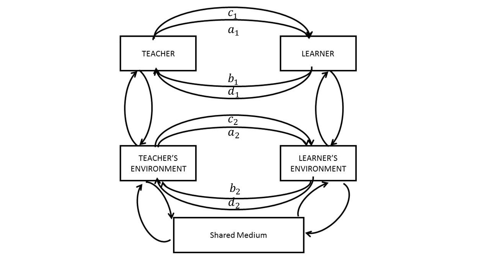
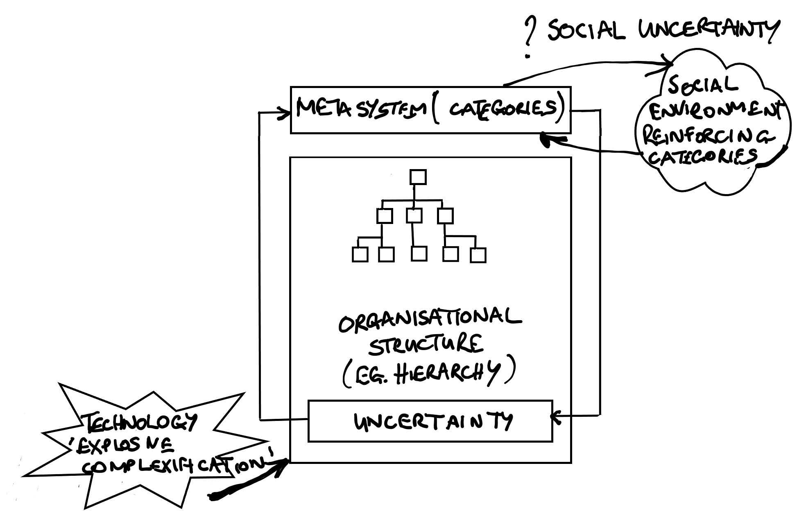
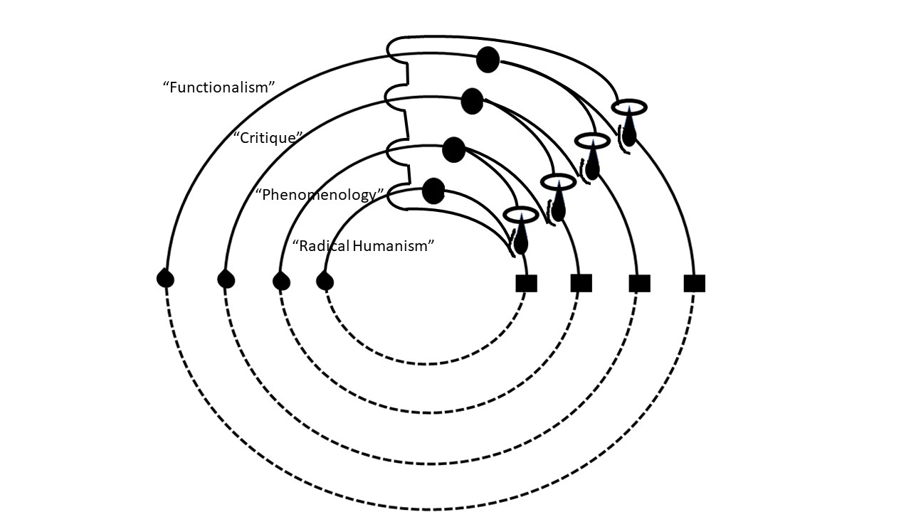

.jpg)
This book is an ongoing living document.
Author: Mark William Johnson\
Title: *Uncertain Education: Technology and Higher Learning through a
Cybernetic Lens*\
Version: 0.5.1\
Keywords: Cybernetics, Uncertainty, Education, Technology
Produced in LaTeXusing the Overleaf (<http://www.overleaf.com>)
environment.
The project's current source files can be forked with an Overleaf
account using Git:
git clone https://git.overleaf.com/5c35bb0e6bd89e5587b35fe3
^th^ January, 2019\
University of Liverpool
::: {.epigraph}
*The power of speaking and writing and printing, like the power of
locomotion and the power of mass-production, must surely in the long run
be good. Every enhanced power over nature must ultimately be a gain to
humanity; it is something achieved that will not be lost; it vies to the
development of the human spirit greater scope, greater freedom, more
means of expression. But this utilisation of our gains takes time; it
does not follow automatically. We must not be satisfied with these
material achievements; they are not ends in themselves, but are means to
an end: and what the end is, or ought to be, demands from time to time
our serious consideration.*
--Oliver Lodge (in *Science and Human Progress* (1926))
Foreword {#foreword .unnumbered}¶
In the late 1970s when microcomputers began to make their presence felt, some educators began to experiment with them as tools to support learning. Inspired by people like Seymour Papert in his book Mindstorms they believed that finally the shackles of traditional education could be thrown off, and a new learner-centred, participative and investigative education would take over. No more boring lectures, no more rote memorisation, but instead active, engaged, self-directed learning. This optimism in the potential positive transformative effect of technology persisted throughout the 1980s, despite little evidence of significant change, and even increased in the next decade as the world became connected via the World Wide Web. The lack of institutional progress was blamed on lack of sufficient hardware, bandwidth, processor power and teacher knowledge. Now, almost twenty years later, it is clear that there was something wrong in the naive views of the enthusiastic proponents of technology for education. Schools, colleges and universities remain almost completely unchanged in their patterns of operation. Students still sit in rows listening to hour long lectures delivered from the front, courses consist of lecture programmes, curricula abound. Technology has been subsumed into the traditional forms of education.
In this book, Mark Johnson sets out to explain how it is that the education system and its constituent institutions have managed to maintain their organisational structure despite the enormous possibilities for change that technology offers. Rather than offering a critique of the system, he instead provides the reader with new tools to understand the functioning of educational organisations, especially universities. He argues that the neglected science of cybernetics can offer deep insights, and elaborates on a number of cybernetic concerns that are crucial to developing a new understanding of education - how we make distinctions, conversation theory, and organisation theory. As he unfolds these ideas, he applies them to building a new description of the educational enterprise, shedding light on how we have ended up where we are, and on how we might organise things differently. Underpinning his argument is a devastating critique of the current state of universities and the policies that caused it. Dominating managerialism, the commodification of learning, the negative effect of the Research Assessment Exercise and its successor the Research Excellence Framework on the quality of publications and the scientific endeavour are all signs of a system in danger of collapse into irrelevance, and worse, the change in university funding threatens to undermine a proper evaluation of students’ state of understanding. Instead of providing a creative tool for investigation and collaborative learning, technology has been appropriated by management to control and micro-manage the “student experience” using so-called learner analytics.
This is an important and challenging book. It contains tools that offer the potential for change through a deep understanding of the fabric of the education system, and should be read by anyone concerned with the future of education.
Preface {#preface .unnumbered}¶
A Guide to Reading the Book {#a-guide-to-reading-the-book .unnumbered}¶
This book is about the whole system of higher education in a world of technology. It is the result of many years of work in educational technology, cybernetics and philosophy. Writing it has been a project of working out my understanding of education and technology on a large canvas, which has given me scope for expressing an holistic and synoptic view based on the science of cybernetics. As such, the book bears some scars of an emerging theory, composed over a period where I both observed and was subject to many of the benefits and pathologies of the current higher education system, including at one point the anguish of unemployment and the insecurity of casualisation which has afflicted so many academics in recent years. Nevertheless, I have found my theoretical ‘underlabouring’ of practical value in many of the projects I have been involved in as an educational technologist.
A recent large-scale example of its practical application occurred at the Far Eastern Federal University in Russia in 2018, where the ‘whole system intervention’ approach which is described in the following chapters underpinned an educational design that brought teachers, learners and managers together. The story of this intervention is told in the introduction, and I have included it because I hope it brings to life some of the more abstract ideas in the book. Interventions like this can be seen as grounding points which respond to powerful questions about education.
This book itself is also an experiment. The use of self-publishing technologies for its production and distribution is a further example of how my thinking has been affected by the theory it presents. I eventually reached the conclusion that the logic of my argument about conversation, openness and uncertainty dictated that the circumvention of traditional academic publishers was an essential practical intervention to preserve the integrity of the theory and to provide an example to others (see chapter 6). In the spirit of the theory, I have not only self-published the book, but made the source-files from which the book is constructed available for others to appropriate or change as they wish. Fundamentally, I believe the spirit of openness must entail a genuine giving-up of ownership. Of course, time may prove me wrong or irrelevant - but this would be an empirical finding which I can explore in subsequent versions of the book.
I have divided the book into four sections, and each section contains a brief introduction to the main thrust of the arguments of its chapters. These sectional introductions are probably the best place to start reading to get a feel for the whole thing. The sections are:
Part 1: Cybernetics, conversation and education’s distinctions {#part-1-cybernetics-conversation-and-educations-distinctions .unnumbered}¶
The basic issue in Part 1 concerns the way we reason about education, and how cybernetic science helps us understand what technology has done to it. Faced with intractable uncertainty and confusion about education, somehow we manage to coordinate educational processes which, partly through their inadequacy, contribute to the uncertainty. Chapter 1 is about how we make distinctions about education, how this distinction-making process is context-dependent, and how we manage to codify processes to keep the thing together. Chapter 2 introduces conversation and multiple description as key issues in educational processes. Chapter 3 considers the inter-personal, inter-subjective aspect of human engagement, and considers the impact of social media on human organisation and communication. At a time when market-driven ‘student-centred’ education is the mantra of governments and vice-chancellors, chapters 2 and 3 articulate a framework for dialogue-centredness. Chapter 4 considers issues of conversation and coordination in the way educational institutions themselves are structured in the face of increasing uncertainty. It examines the impact of uncertainty on their structures and adoption of technology, and the consequences of this on their essential role in nurturing conversation.
Part 2: Science, Technology and Dialogue {#part-2-science-technology-and-dialogue .unnumbered}¶
Part 2 asks what an ‘institution for uncertain science’ might look like. It begins by describing the scientific uncertainties of the 20^th^ century, with which it argues that the organisation of education is out-of-step. Technology, whilst being a tool for investigating uncertainty through calculating probability, whose use now dominates every domain of scientific research, has been appropriated by institutions as a means of mitigating uncertainty. Chapter 6 argues that increased openness in scientific communication is necessary as a means of managing a science that demands uncertainty is communicated, and that at the heart of a coherent ‘uncertain science’ are issues of trust and social coordination. In chapter 7, new decentralised technologies are discussed with regard to how they might help with the coordination of uncertainty in both science and education. The purpose of this discussion is not to promote a new technological direction (although this may happen), but to highlight that our current configuration of hierarchical institutional organisation and technological implementation is not the only way forwards.
Part 3: Ecology, Human Exchange and Higher Learning {#part-3-ecology-human-exchange-and-higher-learning .unnumbered}¶
Part 3 is about the large-scale picture of education - whether a coordination of human intelligence and technology can create a world which makes better decisions for the planet, which deals with socio-economic inequality and injustice, and which provides a context for conversation where every world citizen is able to realise the potential of their intellect. It considers three dimensions to this challenge: ecology and human decision, human exchange and generosity, and higher learning itself. Chapter 8 emphasises the need for collective intelligence and the connection between knowledge and decision. Recent cybernetic analysis of ecology both in the life sciences and academic discourse are introduced as potential lines of scientific inquiry. Chapter 9 considers the central conflict between human generosity in educational acts, and the nature of monetary codification of education, and more practical economic demands of society (for example, the need to pay teachers). It argues for an educational ‘meta-economics’ to coordinate this conflict with society’s uncertainty. Chapter 10 concerns the nature of ‘higher learning’ and emotional security in the context of the educational journey from birth. In addressing questions such as why individuals crave academic status, certificates, publications or celebrity, the chapter appeals for a deeper understanding of the dynamics of human relations, drawing on attachment theory and psychoanalysis.
Part 4: Steps to a Better Education {#part-4-steps-to-a-better-education .unnumbered}¶
Utopian thoughts about education are one thing, but taking coherent practical steps to making things better is quite another. Part 4 draws together the tools and techniques used elsewhere in the book and appeals for a renewed focus on a ‘science of education’ which is analytical, focusing on education’s generative mechanisms, and in particular, the processes which give rise to problems within the education system and society. Chapter 11 deals with the problems that divide scholars of higher education, and ways in which the often tribal divisions between functionalist, phenomenological and critical approches to education might be addressed. Chapter 12 frames this in the light of work by psychotherapist Marion Milner in her book “The Human Problem in Schools” [@milner_human_2018]. Dealing with the ‘human problem of university’ - particularly in a world of technologically-generated uncertainty - lies at the heart of a cybernetic approach to education.
Introduction {#introduction .unnumbered}¶
Whole System Intervention in Education: A Story from Vladivostok {#whole-system-intervention-in-education-a-story-from-vladivostok .unnumbered}¶
When we design an educational intervention, we ask basic questions like “what is the curriculum?” “what are the learning outcomes?” “what are the assessment criteria?” and so on. Increasingly today, we also have to ask “what is the market for this?” “how will it be resourced and managed?” or “what technologies do we need?” Such questions are framed by the expectations of people in today’s educational institutions. But will we be asking the same kinds of questions about education in the future? This book is an attempt to address a different set of questions which arise from conceiving education as a whole: a system of citizens who learn, teach and care for each other in an increasingly technological social context. This is the world that we have today, and it is very different from the world that gave birth to our universities.
Seeing anything whole means that we don’t divide it up into categories and attempt to make connections between its parts. Instead we consider the central question of how the coherence of a whole is maintained. That means asking challenging questions. Each chapter of this book asks a challenging question, and all of these questions lie somewhere behind everything we do in education. In addressing each of these questions, our conclusions lead us to educational designs which diverge from today’s status quo. So rather than see an educational institution made up of students, teachers and managers, courses, certificates and assessments, we see a coherent whole made up of people, many of whom have conversations with each other as they engage in education, live in families, participate in economies and form a society.
This introduction describes how this basic desire to enhance the conversation between different people in different roles was the fundamental objective of a module design called “Global Scientific Dialogue” which was created in Vladivostok, Russia, at the Far Eastern Federal University’s Management school in 2018. Although we still had to address questions about learning outcomes and assessment criteria, the value of the fundamental questions posed by this book was that all of the traditional constitutuents of a ‘module’ were reconceived as we attempted to design assessment to measure student understanding, how to create the conditions of conversation, or how to overcome the constraints of the timetable.
Before describing the ways in which the basic educational categories were re-conceived, it is useful as an introduction to this intervention, and as an introduction to the book, to describe the questions that gave rise to it. Each question relates to the main thrust of each chapter, and so (with 12 chapters) we have 12 questions:
What are we about in education? (Chapter 1)
This is a fundamental question to ask before embarking on any educational project because it demands the identification of the meaning of what we do. When defining anything, there is always uncertainty because definitions are context-dependent and often subjective. How is this uncertainty managed? The question disrupts conventional ways of managing uncertainty, and opens the door to new conversations and new thinking.Why does conversation matter? (Chapter 2)
Question 1 leads directly to the necessity for conversation. Conversation is a process of producing distinctions through negotiating the differences between one person’s ideas and another’s. The fact that each of us have different ideas and some uncertainty about them is the driver for conversation.Do you learn ‘subjects’ and ‘skills’ or do you learn about other people (including your teachers)? (Chapter 3)
Most people think we learn ‘stuff’ in school: maths, geography, woodwork, etc. But if distinctions are uncertain, and conversation necessary, then if follows that our distinctions are embedded in our human relations to each other, and that what we learn, we learn about each other.Since there are usually more students than teachers, how should conversations be organised? (Chapter 4)
Institutional hierarchies solve the problem of “one teacher - many students” with timetables, curricula and assessments. But the organisation of conversation can be achieved by looking at the ‘whole system’ of education and technology and exploring new ways in which uncertainty might be managed. Technology may used to catalyse conversation.What new knowledge and skill will we need for the future? (Chapter 5)
Thinking about ‘whole systems’ becomes more important as science and technology introduce new uncertainties. The world that today’s students will enter will be very different from the world which produced today’s curricula. In this technological environment, what do our young people need to know in order to flourish in this new world, and how should their learning about it be organised?How ‘open’ are you about what you don’t understand? (Chapter 6)
In an uncertain world, it is strange that many political leaders remain confident that they have ‘the answer’ - even in the face of obvious errors of understanding. Maintaining and expressing uncertainty is critically important to maintain coherence of understanding, and this entails a deeper transformation in our desire to be ‘right.’How might we use technology to catalyse conversation and establish trusted relations? (Chapter 7)
Technology introduces many possibilities for social transformation, but carries many risks of negative consequences. Yet technology provides, at the very least, new things to talk about where individuals have new opportunities to reveal their uncertainties to one another. Openness about uncertainty is essential for the establishment of trust.What is the point of being highly knowledgeable if society continues to make bad decisions? (Chapter 8)
Another way of expressing this question is to ask, “How can many brains think as one brain?” When knowledge is seen as a property of an individual which relates to their social status and power, decisions about important things can be taken in the light of selfish ambition rather than collective benefit. To see knowledge as a result of conversational processes and uncertainty, however, can reveal new ways in which we might learn to work together in a more ecological way.How do we strike a balance between abundance and scarcity? (Chapter 9)
In any whole system, there remain closed boundaries which determine that some things are scarce or functionally distinct. In a society, not everyone is good at the same things, and it is useful to know who can do what. Educational assessment is one way of doing this, but it can also lead to ‘artificial’ scarcity which can create social inequality and drive a ‘market’ in education. Teaching, however, is often a generous activity where the instinct to teach is to pass on wisdom for the future flourishing of the species.How can we help each other to feel safe in the world? (Chapter 10)
Many parents worry about their children’s education because they believe that education is a guarantee of security. Increasingly, however, it seems that for many the attainment of a university certificate is of declining benefit. Yet beyond the acquisition of status and high income, there are features of ‘higher learning’ which can lead to increased flexibility to deal with environmental challenges in society, or even to what Jungian psychoanalysts call ‘individuation.’ However, these attributes whilst sometimes developed within the confines of traditional institutions, may equally be acquired throughout life in other ways.How can we guard against tribalism? (Chapter 11)
The flip-side of security is tribalism. ‘Tribes’ are characterised by collective security within particular exclusive contexts. However, if security in the future requires increasing flexibility of response, then the embrace of ideas that challenge assumptions and the status quo is essential. When studying education, researchers need to find ways of making connections between their findings, even when they come from different perspectives.How can human problems be solved? (Chapter 12)
Human problems can be made worse by treating them as technical problems. Technical problems have technical solutions, but human problems arise from struggles with uncertainty, openness and conversation. Technologies may, however, provide a context for richer, and perhaps therapeutic, conversations.
To design a new kind of educational experience from these questions requires starting from the first question and moving through to address the others. The core of questions 1 - 3 is ‘conversation.’ So conversation, or (perhaps preferably, dialogue) needs to be at the heart of whatever we do. To paraphrase a recent UK government report, it is not “students at the heart of the system” [@willetts_higher_2011]; it is dialogue.
The Global Scientific Dialogue module was intended as a conversational opportunity to develop teachers in encouraging them to be more open and dialogical with their students, and to get students to talk about current and emerging topics in science and technology which were missing from the curriculum. The questions above were used as design principles which prompted teachers, students and managers to become more focused on the conversations they have with each other, and to address the challenges of organising those conversations better.
The traditional constitution of education does not always promote conversation. Instead, students often sit in steeped seating in lecture halls and listen to a teacher talk for an hour or so. This book is partly about explaining why this model has been so persistent despite its obvious inadequacies. In having an explanation as to why there is a lack of conversation, we can also find a remedy to address it.
The main argument of this book is that the root cause of lack of conversation is uncertainty, or rather the failure to manage uncertainty. This is articulated in Chapters 1 - 4, where it is argued that because uncertainty causes both individuals and institutions to seek to defend their identities, they create and uphold distinctions about who they are, their role, what they know, what they don’t know, how important they are and then seek, by various means including technology and status, to defend themselves. Chapter 4 explains how uncertainty is both the cause and the result of this process: we are in a positive feedback loop with uncertainty.
In Vladivostok, we began by seeing each person, whether teacher, learner or manager, as a coherent whole who must manage their uncertainty. In Chapter 5, I introduce a diagrammatic way of thinking about wholes. You might imagine drawing a ‘whole’ as a big circle which contains everything you might want it to contain. But there’s always something outside the circle which is excluded. What is excluded creates some undecidability (“is it in or is it out?”) within the whole. This undecidability, or ‘uncertainty’ is like a ‘hole’ within the whole - and it needs managing. But it can’t be managed within the whole; it requires something outside the whole to manage it. This is called a ‘metasystem.’ All wholes, whether a whole institution, a whole person, a whole society, or a whole scientific discipline, contain uncertainty which requires a metasystem to manage. All wholes have a ‘hole.’ So it looks a bit like this:
{width=”\textwidth”}
The coherence of any person, whether they are a teacher, learner or manager, or equally the coherence of any institution, relies on a metasystem to maintain its coherence. The Vladivostok educational approach recognised a fundamental component of the theory of this book: holistic thinking requires thinking about the metasystem which maintains the whole. If the metasystem cannot manage the system’s uncertainty then there will emerge barriers to conversation, or to put it another way, barriers to the system’s mechanisms for maintaining coherence within itself. I will argue in the following pages that this is the state of modern education: a metasystem working in overdrive to maintain coherence in a system whose uncertainties are increasing. In order to deal with this, we have to create the conditions for dialogue, which is the system’s mechanism for managing its own uncertainty. But to open up dialogue between students, teachers and managers in Vladivostok, it was necessary to disrupt the existing metasystem. In order to do this most efficiently, it was decided to do it intensively: Global Scientific Dialogue was a module designed to run in a concentrated two-week period, like a conference.
Distinctions and Curriculum {#distinctions-and-curriculum .unnumbered}¶
The objective of the disruption was not simply to disorient the people in the system. Somehow the metasystem of each person had to be disrupted in a way where it expressed the uncertainty it was trying to manage rather than create new ways of containing it. Uncertainty could be expressed through shared activities and discussion and it was hoped that through this process, new means of interpersonal coordination could be found which transcended existing categories of understanding, the curriculum, or job roles.
While many of the existing personal metasystemic functions - in both teachers and learners - use subjects on the curriculum as a way of mopping-up uncertainty (e.g. “I’m an economist/accountant/biologist/etc”), at the interface between quantum mechanics, biology and consciousness, just as much as at the boundary between technology and communication, curriculum distinctions become much harder to draw. When faced with emerging evidence from quantum biology, or the potential of artificial intelligence, or the ambiguities of aesthetic experience the traditional metasystemic distinctions about curriculum, modules, certificates, publication and status break down. Moreover, it is hardly difficult to point to the fast-changing world outside the academy to suggest that traditional curriculum distinctions no longer work. This provided a schema for metasystemic disruptions organised in particular areas: those around undecidables in science, technology, communication and creativity. To create a schema of unknown or undecidable questions provided a framework for encouraging the opening-up of each individual metasystem to articulate different aspects of uncertainty. This was powerful because it also addressed fundamental uncertainties relating to the different disciplines that were represented on the course, from economics to biology.
Organising Conversation {#organising-conversation .unnumbered}¶
Chapters 2 and 3 introduce conversation as a means by which differences between the distinctions that individuals make are negotiated. Chapter 2 discusses the way that conversation involves the coordination of multiple descriptions of the same thing (what is termed ‘redundancy’), and chapter 3 discusses how this conversational process forms the basis by which individuals ‘tune-in’ to understand one another. The tuning-in process (a phrase used by sociologist Alfred Schutz to describe what he called ‘intersubjectivity’), is - it is argued - a process of revealing and negotiating the uncertainties between each individual.
In Vladivostok, the desire that individuals should express their uncertainty to each other in the light of whatever disruptions they were subject to, required that situations that facilitated conversation were coordinated. With a large number of students (200) this also creates an organisational challenge: the fundamental problem of any educational intervention is the asymmetry between the number of students and the number of teachers.
Chapter 4 discusses how this organisational challenge has the same structure to that of any ‘whole system,’ whether it is a whole person, or a whole community: there is a system with specific operations (like managing conversation), and this system produces uncertainty which requires a metasystem to address. The organisational uncertainty in Vladivostok arose from the problem that students needed to be coordinated in small conversational groups, and that each conversational group needed to be ‘disrupted’ in similar ways, and that there needed to be a mechanism which brought cohesion to the experience, including a means of assessment.
Technology provided some assistance is addressing this. Video was used as a way of standardising the ‘metasystemic disruption’: these were video ‘lesson plans,’ which teachers could use as a guide for coordinating activities and stimulating discussion among small groups of students. The videos contained clips taken from YouTube and other sources, which presented snippets of current thinking in science and the arts. The experience of watching them was intended to be a bit like channel-surfing, or browsing curated links on the internet. These collections of resources were then used to contextualise a set of activities which the students had to work on in small groups to discuss specific problems. The desire was to make the classroom a bit like the internet.
{width=”\textwidth”}
Intersubjectivity {#intersubjectivity .unnumbered}¶
The videos and the activities undertaken by the students were designed to encourage the making of connections between categories of understanding and individuals. Whether in drawing pictures in response to music, or establishing a political plan to deal with artificial intelligence in a dystopian future, or to describe patterns that connected or distinguished natural and artificial objects, learners were encouraged to articulate their distinctions and uncertainties with each other. In each case, what was learned was more than any specific details of learning content. What was gained was the learners’ understanding of their peers, and the uncertainties which they shared.
Students had to be creative in the way they reported their discussions. Many groups created videos, used pictures and sometimes drama or dance to present their findings. Each of these artifacts was collected as part of the course’s assessment strategy which used a ‘patchwork text’ approach [@scoggins_patchwork_1999]. This method allowed for the articulation of rich ‘thick descriptions’ of understanding that embraced new media, where issues of individual doubt, group disagreement, and differences of interpretation were all exposed, prompting further discussion and reflection among the students.
{width=”\textwidth”}
Uncertainty and Technology {#uncertainty-and-technology .unnumbered}¶
Part of the rationale for Global Scientific Dialogue was the need to expose students to the fast-changing technologies which were likely to impact their working lives. Technology was central to the course, both as part of the mechanism underpinning its coordination, and as part of its content. However, the confusion about technology is particularly important, and this confusion was used as a way of stimulating discussion. In Chapter 6, the role of technology in producing and communicating uncertainty is presented in a simple way arguing that technology can be seen to do three things:
It provides new options for individuals to do things which could have been done before (often through institutions). As a result, technology increases uncertainty by making it harder to choose how to which option to select, and by disrupting established institutions;
It attenuates reality through restrictive interfaces (e.g. forms) and selective data collection;
It amplifies representations of the world which it stores as data, in the form of videos, visualisations, computer-generated artifacts, games and simulations.
The use of technology on the course presented individuals with the vast choices which they have available for self-expression. At the same time, many of the means of expression articulate uncertainty and ambiguity (particularly video) which (it is argued in Chapter 6) as a means of revealing uncertainty can help manage it. Technologies afford the opportunity for each individual to express the dimensions of their uncertainty: as a result others can coordinate their expressions of uncertainty and create new foundations for conversation.
Technology was particularly valuable among the teachers and managers involved in the course. The use of social software among teachers resulted in the sharing of artefacts online which were then a spur to conversations in the corridor (for example, “did you see the photo of my students’ presentation?”). This also had the benefit of transparency with management, as well as providing an early-warning of when things might be going wrong.
Technology can make education more dialogical. By ‘amplifying representations of the world,’ technology can provide more options and opportunities for individuals to make utterances with each other. In other words, it becomes a context for conversation (for example, “have you seen this webpage?”) - in much the same way as the traditional curriculum provides contexts such as “now we are going to talk about physics.” The advantage of technological coordination of conversation is that it works within and across the context of existing friendships, personal interests, professional roles, across departments, or creates artefacts that prompt new personal connections. Conversations need not be hierarchically organised: they can be organised heterarchically with technology.
 {width=”\textwidth”}
{width=”\textwidth”}
Science as Disruption {#science-as-disruption .unnumbered}¶
Chapter 6 discusses how modern science and technology is characterised by uncertainty, whether it is through the increased use of probabilities for the establishment of empirical results, or the fundamental embrace of uncertainty in quantum mechanics. Modern science’s uncertainty provided a foundation for disruption by asking fundamental scientific questions to which nobody knows the answer. Global Scientific Dialogue exploited scientific uncertainty as a way of flattening the relations between teachers and learners and to drive conversation and inquiry: in this environment, teachers could not adopt the position of ‘experts,’ but rather as participants and facilitators of inquiry.
This connection between institutional structure, scientific communication, pedagogical practice and scientific development is addressed in Part 2 of the book. In Vladivostok, some coordination around specific scientific questions was needed, and this was provided both in the resources produced for the video lesson plans, and in the design of a technologically-coordinated reading activity for the students.
Students were asked to make comparisons between documents which discussed key issues around the scientific topics of the course. The activity used a ‘comparative judgement’ technique to ask students to identify which of a pair of documents selected at random they found most interesting and why (see Figure 1{reference-type=”ref” reference=”ref:compjudge”}). The activity was designed to encourage students to read in a critical way, whilst contributing to data that could inform them of what they were really interested in, what others were interested in, and what the grounds for future individual development and conversation might be. The resources for this technological activity were partly derived from sections of this book, together with sections of text that were produced by staff in the university as part of the course development.
{width=”\textwidth”}
Openness {#openness .unnumbered}¶
Chapter 7 addresses some of the issues around open education, self-publishing and educational resources. Since part of this book was repurposed to form the basis of the comparative judgement activity on the course, a rationale for self-publishing as a means of flexible repurposing of resources to create new kinds of activity was tied-up with Global Scientific Dialogue’s design. Chapter 7 explores the organisational dynamics between publishers and universities, and articulates how the dynamic relationship between publishing and institutions can be changed through open practices. The arguments for doing this are not only about the provision of free resources or even the expression of uncertainty (although this is important), but explicitly address this kind of re-use of material to transform pedagogical organisation and learner engagement. Technology’s capacity to generate multiple descriptions of the world can be further exploited to drive new activities, and openness is a pre-requisite to creating these opportunities.
In Vladivostok, the question about future scientific knowledge and skill focused on the students’ dialogical expression of their understanding using many different forms of media. Supported by the “patchwork text” assessment technique, students could make videos, take photographs, and convey the spirit of the conversations they had. In this process, there was much that students learnt about each other, and indeed, there was much that teachers learnt about their students, and vice-versa. The content of learning was embodied in the people who spoke about the content.
Trust {#trust .unnumbered}¶
If open publishing and uncertain science are embraced, what happens to issues of trust and truth in science? How is scientific authority maintained? Chapter 7 argues that these issues too are institutional and organisational in nature. With traditional forms of hierarchical organisation, the trustworthiness of knowledge and expertise relies on declarations by institutions of the status of individual experts, or community recognition of certain facts. In a world of uncertain science, and particularly a world of ‘fake news,’ the status of the expert has been called into question.
Among recent technological approaches which are looking to new ways of organising human trust relationships, Blockchain and AI are both tools which are exploring how human transactions may be stored in a decentralised and heterarchical way, free of the impositions of hierarchy. Clever though these technologies are, the nature of trust as an intersubjective phenomenon was something that formed a central pillar in the course. Face-to-face engagement, with other students, teachers and with experts was a critical element in the establishment of trust in knowledge and in each other.
In Vladivostok an ‘experts day’ was organised featuring practitioners from a range of different disciplines. Experts sat dispersed in a large room, and students were free to move from person to person. The objective was to encourage students to listen to personal stories of scientific and artistic accomplishment which were outside their subject areas. In meeting and talking to these people, the inter-subjective process of engagement produced surprising results: a number of students spoke of being transformed by the experience. Experts spoke frankly about their domains providing authentic and raw insights. If students didn’t trust these experts, why would they have been affected by what they said?
Technology does however, provide methods of corroboration. Students consulted the internet in the light of their encounters. It is an interesting question as to whether they would have changed their minds had the internet contradicted what they had been told by the experts. Chapter 7 considers that the issue of trust is both fundamental to education and science, but sits in between intersubjective engagement and artefacts such as websites and books, discussions or even Blockchains. It is in education where these competing forces play out, and the Global Scientific Dialogue ‘expert’s day’ presented a vehicle for exploring this.
{#ref:compjudge width=”\textwidth”}
Decision {#decision .unnumbered}¶
Chapter 8 addresses the challenge of the coordination of many brains in attempting to address common problems. At the root of this is the question of whether many brains can think as one brain, or more ambitiously, whether ‘university’ could be a coherent global enterprise of inquiry and learning. This provides another reason for focusing Global Scientific Dialogue on group activity: societal problems stem from collective decision, or the challenge of negotiating the distinction between individual knowledge and understanding and collective engagement and dialogue. Many of the big issues addressed by the module, such as global warming, inequality or homelessness, were specifically issues of failure of collective decision.
Universities as institutions epitomise this decision problem. Cohen and March [@cohen_garbage_1972], who are discussed in chapter 8, developed their ‘Garbage can model of organisational decision-making’ by observing the decision-making process in their own university. They observed that important issues were presented to committees to decide upon, whereupon those committees, comprising many individuals with many different agendas, would sideline important matters in favour of matters to which a pre-existing solution could be selected from the ‘garbage can’ of discarded technologies and approaches. It is this very process which can impede the development of new kinds of educational initiatives such as ‘Global Scientific Dialogue’ itself. Educational transformation addresses issues which appear too complex, and available discarded techniques can find more favour with those on the committee who might either prefer to ‘play it safe’ or to implement something for which they might gain credit. Many educational technologies find themselves selected by ‘default’ in this way as more fundamental problems are pushed aside in the decision-making process.
The Global Scientific Dialogue module itself arose thanks to senior management backing which bypassed some of the more complex issues of collective decision-making in the university. This was lucky - but the problem of collective decision is something that is endemic, and something for which students entering a world of committees and corporate infighting are poorly prepared. The importance of collaborative activity - and particularly the importance of emphasising collaborative activity with students who might prefer not to engage with their peers - formed the heart of the pedagogical approach. In many of the activities, disagreements would arise, and students would have to find ways of negotiating their differences. Sometimes, activities revealed aspects of individual bias or even bigotry, and in these instances, there were opportunities for teachers to make particular critical interventions. It is worth noting that with a less dialogical approach, personal bias can find few opportunities to make itself available for inspection.
Gifts and Exchanges {#gifts-and-exchanges .unnumbered}¶
Dialogue for collective decision requires students and teachers to become more open and generous in their engagements with each other. Chapter 10 explores generosity in the context of the prevailing economic climate which has seen increasing financialisation within the education sector. Yet despite these market pressures, within all universities there are great teachers who, whilst being paid a salary, nevertheless give to their students in terms of time or sharing their insights, or they may give books or other resources for free. “Giving” is one of the fundamental things that happens in education which makes the system work. At the same time however, the financialisation process reminds us that education relies on some form of monetary exchange, without which teachers and managers could not be paid. This financial exchange, like most market transactions, relies on the declaration of scarcity of knowledge and certification. Chapter 10 considers gifts and monetary exchanges as aspects of transactions in education, and these transactions are difficult to conceive of in a coherent way. Put most simply, education sits between exchange of money and giving.
The encouragement to openness on the course was really about encouraging a generosity of spirit among teachers which avoided any declarations of ‘scarcity’ of knowledge. If fact, by focusing the educational content on scientific and artistic questions to which nobody knew the answer, there was no possibility of declaring the scarcity of knowledge. At the same time, however, if there is no scarcity declaration about the knowledge within the course, there was still a need to declare that the module certificate was sufficiently scarce in order for it to have any value and for the students to be motivated to attend.
The assessment of the course demanded that students presented their patchwork texts to their peers. By using peer assessment in this way, a balance could be created between the scarcity of certification declared by the institution, and the contributions of individuals to the group through sharing their ideas, or working in teams. The value of each student’s contribution was a contribution to the understanding of the whole group. In many cases, even among those students who professed to dislike the course or who were critical, the creative expression of their experiences took the form of a gift as well as being an object for which marks were given. There were poems and videos which expressed both what individual students enjoyed, and what they disliked.
Chapter 10 explores the connection between giving and exchanging in education with our current understanding of economics and society. While the discipline of economics has shaped the institution in its current financialised form, that discipline has itself relied on gifts and exchanges through the economic system. Since Global Scientific Dialogue was a course in a school of economics and management, its pedagogic practice relates directly to the very mechanisms within which economic theory and discourse emerges. What would economic theory, and its knock-on effects on education look like were that theory to have emerged within a more dialogical context?
Secure relations {#secure-relations .unnumbered}¶
Chapter 11 considers the fundamental motivation to enter into higher learning. Today, it seems that the principal motivation to acquire educational certificates stems from a desire to remain viable in a world which is changing fast. Students and their parents think that certificates provide a certain degree of security. Anxiety about not having a certificate can be traced back in the biographies of those who experience it, but it is reinforced by a prevailing narrative about the importance of education which itself appears out of touch with reality. In this sense, to be secure in the world means to be in a position where the narrative each of us carry around with us about ourselves is validated by the things which happen to us. In this way, attachment to ideas, people and things like certificates, religions, status symbols and other people are all reflections of relations to objects and ideas which have arisen since childhood [@bowlby_secure_2012]. These narratives belong to the metasystem of each individual, and it was this metasystem that Global Scientific Dialogue attempted to disrupt.
The course aimed to create a communication environment where the narratives present in the heads of each individual teacher and student could be explored, and in some cases revealed to one another. In cases where these narratives exhibited uncomfortable issues, or they revealed attitudes to education which denied the significance of the contribution of others, there was scope for teachers, or other students, to intervene sensitively. The purpose of the course was to create the conditions where individuals could organise their own uncertainty management.
In each case - even in the exceptional cases where biased positions which were socially unacceptable were apparent - personal opinions were assumed to derive from the desire of each individual to be safe. It was for teachers or peers to suggest alternative ways to feel safe, or that a chosen narrative would not deliver the safety that a student might believe it would.
Chapter 10 argues this is a fundamental principle of higher education: that the purpose of higher learning is to increase in flexibility the ways one is able to look at the world. It entails the generation of many possible descriptions of the world, thereby providing the necessary adaptive capabilities to absorb the complexity of modern life. By this route, material or fixed objects - such as status symbols, money, books, webpages, philosophies, articles of faith and so on, are not objects of attachment, but become means of generating new descriptions of the world. The creative processes of the education in Vladivostok were precisely designed to stimulate and disturb fundamental structures of attachment.
Better Education or Simply a Claim to Say ‘Do it my way?’ {#better-education-or-simply-a-claim-to-say-do-it-my-way .unnumbered}¶
Part 4 of the book is about making education better. So was the Global Scientific Dialogue course ‘better education?’ I do not want to say this, except to say that the Vladivostok experiment had three specific objectives:
to encourage greater collegiality and creativity among teachers and students;
to introduce students and teachers to technological changes to the world which students would face when they leave;
to drive conversation about the future, and to encourage an active and exploratory approach to its investigation.
I could say that it was evident from what unfolded that all three of these things took place. But this is my claim as someone who has written a book about the underlying theoretical principles of the course design, and perhaps (although I’m not) wanting to claim that this way is a ‘better’ way in education. If I did this, I invite myself to attack from anyone who might object strongly, or who has a better or different idea. From there, we arrive at a kind of ‘tribalism’ in educational research, which is the focus of chapter 11.
I don’t want to claim Global Scientific Dialogue as anything more than interesting and often enjoyable for many of the people involved in it. I should also say that not all the students enjoyed it. Some very bright students complained that it was “too much like kindergarten” or that the “content lacked depth” - and these are important criticisms. However, I do want to argue that to improve education, we have to change the way it is organised and the way conversations are coordinated.
This is the only justification for the upheaval to the status quo, the elaborate technologies, the retraining of teachers and the disruption of students. The reason why we shouldn’t ‘just do what we have always done’ is that if we want better education, we should examine its organisation. This includes examining the ways that educational research, within which different ways of organising education are proposed, is itself organised. This is the most challenging aspect of my book, because it is where a work of educational theory and practice has to engage with the dynamics of the discourse within which it seeks to establish itself.
My argument is that the systems theoretical approach advanced in this book can transcend some of the divisions which define the different ‘tribes’ in educational research. For example, between the positions of critical and humanistic scholars of education and those academics (often learning technologists) who seek to solve the human problems of education with technical wizardry. In Vladivostok, the approach was to deal with the human problems of education through dialogue, and to exploit technologies in transforming the organisational context within which this could be facilitated. ‘Transcending’ means attempting to establish a common language (or more specifically, a ‘meta-language’), which can help articulate the processes by which one research perspective sees itself as ‘phenomenological’ and another as ‘functionalist.’ The human problem of research into education is directly related to the human problem of education itself.
Chapter 12 concerns the specific human problems of education. Drawing on Marion Milner’s neglected psychoanalytic work from the 1930s on the “Human Problem in School” [@milner_human_2018], it highlights the importance of balancing the ‘inner’ uncertainty of psychic experience with the ‘outer’ uncertainty of discourse and the environment. Technology has deeply affected this psychodynamic balance. How is the psyche to respond to the increase in environmental uncertainty brought about through technology’s creation of new options for action? The response of the traditional institutional hierarchy to this problem is to use technology to attenuate uncertainty: thus we have learning analytics, AI, VLEs and increasing surveillance of teachers and learners. The answer of this book, and the answer explored in Vladovistok is that we can address technology’s uncertainty by engaging each other in dialogue. Vladivostok showed that technology can be exploited to facilitate this dialogical process at scale.
My journey in writing this book has involved a gradual ‘letting-go’ of the formal means by which educational systems see themselves: the curriculum, certificates, the status of institutions, professors, lectures, and so on. With the removal of these ways of thinking about education, there remains uncertainty.
I do not believe an educational theory gives us answers which explain phenomena in education. There are no answers. But there are ways in which powerful questions can be framed. If theory does anything, it provides a framework – or a language – through which existing uncertainties can be expressed and shared. A good theory frames powerful questions which can unlock intellectual inquiry in others and invite them into a fluid dialogue which does not get caught up in the net of individual prejudice.
The Vladivostok experiment was an attempt to recover the basic foundation for any education: the intergenerational engagement by which society seeks to ensure that it maintains sufficient wisdom not to destroy itself in the future. It is what parents attempt with their children, and it is what teachers attempt with their pupils. The challenges here are not technical, but human. The human challenge of situating technology such that it helps humans address human problems is the essence of the role of an educational technologist.
Part 1 Cybernetics, Conversation and Education’s distinctions {#part-1-cybernetics-conversation-and-educations-distinctions-1 .unnumbered}¶
In public discourse there is no shortage of assertions about education made by thought-leaders, government ministers, vice-chancellors, professors of education, journalists, think-tank experts, parents and students. Rarely do we inspect how the distinctions that underpin these assertions are made or upheld: educational debates, even among the most intelligent and experienced commentators, often become ‘tribal’ battles.
Assertions about education sit on sets of distinctions about employment, knowledge, understanding, the economy, personal identity and hopes and fears for our children. In Part 1 the relationship between these distinctions is explored as a way of describing education from the bottom-up. It is argued that if we can understand how the different distinctions about education are made, we can understand how to change them. This study demands a scientific approach, and Part 1 introduces cybernetics as the science of organisation from whose perspective the tortured discourse of education can be grasped coherently.
This means that Part 1 of this book has to begin with something quite abstract: what is the ‘aboutness’ of education? Cybernetics provides a meta-language for education: a way we can talk about our talk about education. Chapter 1 begins by exploring the uncertainties around our distinctions, and the processes which lead to boundaries being established, whether those distinctions are between disciplines, job roles, educational status or economic success.
Chapter 2 is about conversation and how technology has changed the way we understand education. Conversation is presented as a cybernetic process of coordination where distinctions are created and where they can be changed. Technologies provide new ways in which conversations can be coordinated, particularly through rich media like video.
Chapter 3 focuses on the human relations which are formed through conversation. Through conversation we understand each other, and through understanding each other, we often learn new things. Computers have changed the ways we negotiate the in-between-ness of conversation which is called ‘intersubjectivity.’ The chapter considers intersubjectivity and its relation to technology: how does the way in which we relate to each other through social media differ from the way we relate to each other face-to-face?
Finally, institutional structures exist in the way they do because of conversations within institutions about educational processes. The context of the institutional conversation is a world which has been transformed by technology. Ancient institutional structures and practices like libraries, lectures, exams and timetables have to co-exist with a world where individuals have a vastly increased range of options for accessing resources, talking to friends, publishing work, creating multimedia, and creating and participating in learning communities. With this increase in options - both for students and staff
comes uncertainty: teachers now ask “how should we coordinate our work-based students?” “how can we increase student retention?” “how can we stop students cheating?” and so on. Chapter 4 introduces the idea that with increased technological uncertainty comes institutional attempts to maintain existing hierarchical structures. With cybernetic models, I argue this attempt will fail. A new approach to organisation is required, and we need cybernetic thinking to realise it.
About Education’s Aboutness¶
Coherence and Uncertainty¶
Educational practice has been remarkably resilient in the face of continued social, political and technological change. In the wake of the industrial revolution, education expanded the grammar schools to teach children the skills of the new industrial age. In the wake of the computer revolution, education has adopted electronic communication tools to reinforce its existing practices. Yet deep uncertainty about education remains, alongside confusion about technology. In the midst of massive social, scientific and technological transformation, how does education manage to hold itself together? How do we agree what education is about?
One answer to this is that we simply suppress the uncertainty. The freedom to admit uncertainty, or discuss and scientifically investigate it disappears the further one goes down the corridors of power. Although students have the privilege of saying “I don’t understand,” the Vice-Chancellor or the education minister or the professor of education is often required to admit no confusion. Few academics want to look uncertain on the podium. Yet education is, if nothing else, about talking about uncertainty: the exploration of different peoples’ understanding of important things. So has education survived by avoiding the very thing which it was set up to do?
Historically, one of the principal functions of all institutions - universities, schools, hospitals, churches, law courts or government - is to manage society’s uncertainty. Institutions are tasked with the job of providing, as Ulrich Beck notes, “certainty and security through knowledge of the future in the face of uncertainty as a basic condition of human knowledge” [@beck_world_2009]
Education absorbs the uncertainties of human learning, hospitals absorb the uncertainties of mortality and disease, the law absorbs the uncertainty of justice, government absorbs the uncertainty of social equity, and religion absorbs the uncertainties of existence. Yet these institutions emerged in a different kind of world, when the relationship between the hierarchical social order and the uncertainties of life appeared to be stable. The computer has changed all that.
Science too absorbs uncertainty. Our conventional understanding of science is that it concerns itself with fact, certainty and prediction. This conventional understanding is impressed upon us through education. Physics, chemistry and maths in the classroom was instilled in us through a regime of repetitious performances which culminated in examinations. Few of us have had the privilege to encounter the kind of real scientists whose work found its way on to the curriculum. Fewer still had access to them as people with their foibles, egos, doubts, confusion, failed attempts and conviction in the face of adversity. School teaches us that to be scientific is to succeed within the regime of school science. It does not tell us that to be scientific is to be like a scientist.
A Cybernetic Lens¶
A ‘cybernetic lens’ is a way of thinking about uncertainty which helps us to map its dimensions at multiple levels. The word ‘cybernetics’ comes from the Greek word, Kybernetes, which refers to the steersman on a Greek ship. The latin form of the word is ‘gubernator,’ from which we get ‘governor,’ ‘government,’ ‘governance.’ All of these things refer to processes of coordination, organisation and steering.
Therefore we can say that cybernetics is a science of coordination. It provides tools to understand complexity - whether it is at the level of the human body, the beehive, a university, a society, or the planet. Uncertainty is a fundamental parameter in the analysis of organisation - a consequence of the variety of options available in a system’s behaviour and our capacity to absorb them. The world is uncertain because it has so much variety which we cannot absorb. To grasp the variety of options is also to measure the uncertainty in an observer trying to predict how that system will behave. In a world of highly complex technologies each of which have millions of possible uses and with which people behave in increasingly complex ways, we can at least be certain that uncertainty is increasing.
Cybernetics presents many descriptions of itself. It is ‘the science of communication and control in man and machine’ [@wiener_cybernetics:_2013], or ‘the art and science of making defensible metaphors’ [@pask_cybernetics_1975], or ‘the science of effective organisation’ [@beer_cybernetics_1965] or ‘a way of thinking’ or ‘a way of thinking about ways of thinking, of which it is one.’ Its structure as a subject embraces ‘multiple description’ as an operating principle - even as a principle in describing itself.
Cybernetics is also a practical subject. There is a body of practice which marks out cybernetics as a distinct kind of activity. Cyberneticians draw diagrams with boxes and lines connecting them, they make machines, program computers, compose music, invent novel ways of teaching, write philosophy, reorganise businesses, make art, investigate cultures, conduct psychotherapy, explore new ways of communicating and campaign for world peace. Many of them do many of these things and view their diverse activities through a consistent theoretical lens. Their activities overlap with activities in the various disciplines circumscribed by education: engineering, physics, anthropology, psychology, music, art and education. The difference is that cyberneticians do not see the distinctions between the traditional disciplines. Their activities always take them across disciplines. As a field of activity, it is able to do this because it distils the traditional distinctions between disciplines into a fundamental question about organisation.
Disciplines are organised bodies of knowledge and practices. Educational institutions are similarly organised according to disciplines. To inquire into the nature of organisation itself is to dissolve distinctions, but this is not just an exercise of epistemology; it affects the practicalities of how we conceive of the social constitution of education. To do this, we require a deeper set of distinctions about organisation. Indeed it requires some basic distinctions about how distinctions are made: it is to ask about the aboutness of education. This is the intellectual territory of the cybernetician. It is to enter into a deep inquiry about distinctions about organisations which produce distinctions. To enter into this inquiry is to unsettle the distinctions that many of us have grown up with about what education is, what it is for, and how to make it better.
The Discipline of Education¶
The topic of education itself is not of the same kind as the topics of physics, maths or chemistry. Sociologist Everett Hughes argued that education was not a discipline but rather “a major complex of arts”:
“[Education is not a discipline] in the sense of offering a single order of phenomena which, when observed and/or manipulated in a systematic way, yield a body of consistent theory. In this respect, education is like the other great practical arts - looking after the sick, keeping order, and distributing justice. All of them, however, give rise to a variety of disciplines and, in turn, use many of their results. These arts are the very springs of human curiosity; they are also great consumers of man’s best intellectual and scientific efforts. None of these arts, moreover, is ever completely under the control of the human will, the will of one man or of some small group of men, or even of society at large through its instruments. Yet control over these arts is sought in all societies. The manner of practicing them is the very stuff of the clash of wills and interests; thus, the stuff of politics.”[@hughes_sociological_1985 408]
Hughes’s distinction between a ‘discipline’ and a ‘complex of arts’ is helpful in the sense that it causes us to ask whether there is a ‘body of consistent theory’ about education, or educational technology, arising from systematic study. The answer in both cases is “No.” Of course, there are theories, but they are not consistent and cannot systematically explain or predict the complex phenomena of education: the gap between theory and practice remains unresolved and often overlooked even in the most prestigious education journals.
Hughes’s comment is interesting because it highlights the fundamental intellectual activity of attempting to make sense of any phenomenon: the requirement to make a distinction. That a distinction can be drawn between ‘a discipline’ and ‘a complex of arts’ is the critical point: Hughes draws the boundary and the distinction defended with evidence and illustrative examples. But where do we study the distinction-making process itself?
Distinction-making itself can be a topic for scientific inquiry. Cybernetics provides the tools, conceptual schemes, empirical practices and techniques of measurement for its investigation. One of the principal ways in which the distinctions of education can be observed and manipulated in a systematic way is through technology. Computer technology is everywhere in education, and through its deployment and use, we manipulate our distinction-making processes. Every technical intervention tweaks some distinction or other - whether it is through making distinctions between face-to-face engagement and online engagement, or between real experience and virtual reality, or between different styles of video presentation, or in ways of monitoring student progress, or the use of social software, or between playing a computer game and learning from a book.
Technology enables experiments which change the way we make distinctions. Cybernetics provides a body of consistent theory for investigating, measuring, explaining and predicting the effects of transforming distinctions. Cybernetics alongside technology presents an opportunity not only to investigate technology in education, but more profoundly to grasp the ancient practices of social cultivation and apprehend the “clash of wills and interests” that Hughes quite rightly identifies.
Computers and Contemplation¶
Computers have changed everything. And yet education has always involved technology. In organised education from earliest times, the instruments and artifacts of teaching and learning have included such technologies as the printing press, blackboards, slates, chalk, exercise books, pens, paper, photocopiers and overhead projectors - all have been tools of social coordination. Among the earliest technologies we know of are tools of social coordination and religious ceremony (often musical instruments) [@pacey_meaning_1999]. The spaces within which education takes place have also been technological: chairs, desks, and even the classroom itself. Stretching things a bit further, we might inquire into the technological nature of the institution itself, or as Martin Heidegger and others have argued, the technological nature of language. Curriculum, timetable and examinations are all ‘instruments’ of education’s social coordination. The advent of computers in education - and particularly the advent of the World Wide Web - seems to have ushered in something new.
The word ‘com-puter’ comes from latin “com-putare.” ‘Putare’ means to think or to comtemplate - so the computer is means of contemplating-with. There is some ambiguity in its name as to whether what is ‘contemplated’ are merely the multiple sources of data which are fed into its inputs, or it is the relation between the computer’s processing of its inputs with the thoughts of human beings operating it. If the computer is part of the contemplating human-machine system, then our questions concern how our new human-machine system is different from the social system that preceded the computer. With what kind of science might we investigate this, and with what kind of tools might we now organise ourselves? In the subtitle of the first book on cybernetics, Norbert Wiener suggested an approach: ‘Cybernetics: Or the Control and Communication in the Animal and the Machine’ [@wiener_cybernetics:_2013].
It has become common - particularly in the literature on educational technology - to claim that a tool or an instrument, whether it is software, hardware, or an institutional process like an exam, possesses a function, or in more recent terminology, an affordance [@conole_what_2004]. For reasons which will be explained in Chapter 5, I argue that thinking about affordance in this way is unhelpful. The cybernetic focus avoids talk of function or affordance, but instead concerns itself with the study of self-organising systems operating within constraints [@glasersfeld_radical_1995].
Objects - both hardware and software - are constraints on the self-organisation processes of humans. But this constraint-focus allows us to admit not just tangible objects like pens and classrooms, but the linguistic constructs of education - the protocols and procedures of the institution, the curriculum, the declarations of success and failure, the issuing of certificates, even the weird ritualised objects of cap, gown and university mace.
Focus on constraint also helps us to understanding something of what computers have done to education. The ‘old’ technologies of education (pens, blackboards, classrooms) exercised constraint in a way which was framed by their material constitution. The only mutable constraints were institutional procedures, new editions of textbooks, or new pedagogical approaches. This created stability in the practices which formed within institutions. Teachers and learners could be coordinated within known and reliable constraints, with students sitting in a classroom facing a single teacher at the lectern or blackboard. The technologies of education reinforced the distinctions from which the institution of education was already comprised.
Computers are different in facilitating the manipulation of constraints. The way a computer screen presents changing possibilities for action as we type a phrase into a search engine, click on the hyperlinks which are presented to us, and then invites us to negotiate whatever new possibilities for action have been programmed into particular webpages, illustrates this computer-driven mutability of constraint. The human experience of this process reminds us of the human-machine system we are in: very real emotions arise in response to mechanical processes, not dissimilar to the fundamental emotional impact of physical constraints such as prison walls, one-way traffic systems, central heating or alarm clocks.
A constraint prevents certain things happening. New objects and technologies change existing constraints. They present us with a new option for acting. The flush toilet presented a new option for managing domestic hygiene, the ink pen presented a new option for writing, and the motorcar presented a new option for getting around. These new options interact with existing constraints. This interaction is dynamic, and, as Illich and others have pointed out [@illich_tools_2001] can sometimes be pathological.
So what are the effects of the continually mutable constraints of the computer on the existing constraints of formal education? What has been the effect of an explosion of new options within education? When an explosion of new options occurs, how do institutions react?
A comparable situation is that between the invention of printing in 1438 and the institution of the Catholic Church throughout the rest of the 15^th^ century prior to the reformation in 1517. The attitude towards technology by education has been remarkably similar to the attitude of the church towards Guttenberg and his press. It has been one of attenuating the many new possibilities into those possibilities which the institution can deal with. More specifically, it has been about attenuating the new possibilities into those which serve the institution’s existing structures.
At the present moment, our understanding of educational technology is framed by the use of computers which has been shaped by institutions. Classes have been reproduced in the Virtual Learning Environment(VLE)/ Learning Management System, face-to-face learning discussions have been reproduced in online forums, books and journals have been reproduced in online web-pages behind publisher paywalls. The multimedia capabilities of the technology have been exploited to enrich learning content with animations and various forms of interactivity. The analytic capabilities of technology have afforded new methods of judgement-making, instrumentalising the judgement of scholarship to the ‘H-index,’ and in the process professionalising the business of academic management. In many cases, the technology has been used to massify existing structures: MOOCs, for example, are giant classrooms in a giant VLE. Despite the power of the technology and its transformative effect on other industries, many things remain untouched in education. Almost all universities continue to recruit en-mass in September and assess (usually by examination) in June. Whatever flexibility the technology affords has not been carried forwards into the core business of declaring the success and failure of its students.
The parallels to the Catholic church are striking. The church sought to protect its interests through using printing to amplify its indulgence business (the similarities between an indulgence and a university certificate are striking!), whilst attempting to ensure that the core operation of maintaining the church’s position as the single entry point of access to personal salvation was protected. It took 80 years for technology to challenge this in a meaningful and profoundly shocking way.
The vision of people like Martin Luther and William Tyndale was to see the church within the context of the whole system of their society and technology. They imagined: “given we have printing, what might religion be like?” A whole-system approach to education and technology asks “given that we have technology, what might education now be like?” A whole-system approach to society asks a related question: “given that we have technology, how should society be organised?” In essence, the systems approach deals with wholes, not with aggregations of parts.
The danger of existing in a technological world without seeing things whole are apparent everywhere. Seen separately from their society, Ulrich Beck and others have argued that technologies have created risk and scarcity [@beck_risk_1992]. From nuclear waste to global warming, from automation and unemployment to the social panopticon, technological artifacts create new anxieties about the future. Education presents itself both as an insurance to future uncertainty, and as a cause of new anxieties and risks in its own right. Education creates the risk of failure. Parents worry about their children failing in school. Schools have convinced everyone that the only route to the acquisition of status and security is through the formal processes of certification, which can only be gained through them. In many cases, individuals will pay large sums of money for themselves or their children to get the ‘best’ education. And yet, when all the veneer is removed, there is usually a classroom, a group of students, powerpoint, assessments, a timetable and a teacher. Why one institution than another? Why a grammar school and not a comprehensive? Why Oxford and not the Open University? Why one subject and not another? Why bother with any of it?
Distinctions of Education¶
To identify a discipline is to make a distinction: such-and-such is maths, this is physics and so on. Every distinction has two sides: there is the view of physics from maths, and there is the view of maths from physics. If education were a discipline, where would we draw its distinction? Or to put it another way, what isn’t education?
Hughes’s attempt to define education as “one of the major human arts, or complexes of arts” is a distinction which draws a boundary between a discipline (as he sees it) and the activities of education. If we were to draw this distinction, and ‘education’ were placed in a box, what would Hughes see as being outside the box?
Would he see the disciplines of maths, physics, geography, music, history, anthropology and so on all existing outside the box, where education is considered to be a “complex of arts?” Would he make (as many do today) a distinction between ‘formal’ and ‘informal’ learning?
Quite quickly we find ourselves asking not whether education or anything else is a discipline, but “what is a discipline?” Disciplines exist through education and its curricula, timetables, examinations and certificates and so the circularity of the problem of whether educational technology, education or anything else is a discipline independent of the social practices of education becomes increasingly confusing. Education appears as the process through which the distinctions of disciplines are maintained.
It’s not just education which suffers from the problem of distinction boundaries: health, employment, food, housing, transport, democracy and the arts are all entail distinctions which display a similar complexity, about which there are many possible ways of describing the relations between them. Cybernetics is trans-disciplinary to the extent to which a coherent working-out in one domain applies equally to many others. The circularity of distinction-making is one of the principle things that cybernetics studies [@spencer-brown_laws_2008]. But once this circularity is appreciated, certainties about distinctions between disciplines disappears. To see how, we need to start drawing…
Drawing Education¶
Drawing a distinction between one thing and another is always the first (and essential) step in being able to study something. Distinctions are made about biological species, artistic forms, philosophical positions, times of day, colours, or sounds and movements. Education feeds on distinctions.
A distinction is a boundary. It constrains one set of things as belonging to one group, and another set of things as belonging to a different group. In making a distinction about red butterflies, a line is drawn and criteria established to identify whether a particular object belongs on the side of the line which says ‘red butterflies’ and everything else not a red butterfly. The red butterfly distinction is marked by constraining what does not meet the criteria (other distinctions) for a red butterfly. A distinction is a choice of a constraint. The choosing, however, is itself constrained by other things: for example, norms, values, institutions, education and individual expectations.
Every distinction exists within distinctions at a different level. We might make the distinction about butterflies, but where are the distinctions made about the scientific or aesthetic norms, values and expectations within which the butterfly distinction is made? To explore distinction-making as a process, we have to become aware of both sides of the distinction in order to see the complex structures of hierarchies which might be at work in establishing even the simplest judgements about reality.
We might draw a distinction about education much like the distinction which Hughes tries to draw. If we want to say education is \(x\), \(y\) or \(z\), then a distinction is drawn with \(x\), \(y\) or \(z\) in a box, and everything that isn’t \(x\) outside the \(x\) box Then we can say that everything outside \(x\) constrains the definition of \(x\). For example, Hughes distinction between Education as a complex of arts and what he calls ‘disciplines’ can be drawn as in Figure 1.1{reference-type=”ref” reference=”fig:educationconstraint”}.
{#fig:educationconstraint width=”\textwidth”}
Drawing things like this immediately raises questions. The arrows between the disciplines in the diagram show a relationship which is not clear in Hughes’s description. Maths and physics have a relation to education. Education shapes what they are: so shouldn’t they be within the education box? But also maths and physics have a relationship to each other: mathematical techniques like calculus derived from new theories in physics and astronomical observations. So this diagram isn’t very satisfactory - but the lack of clarity in Hughes’s description becomes apparent through trying to draw it as a diagram.
Drawing distinctions like this is a powerful way of working-out the logic of our understanding. Cybernetic diagrams involve boxes and lines connecting those boxes. The drawing of boxes to separate things raises an important question: what does the line that bounds the box mean?
If we consider something to be drawn outside the box, we must also consider a box to be drawn around that thing too. In Figure 1.1{reference-type=”ref” reference=”fig:educationconstraint”} the drawing effectively asks “What is outside education and outside the thing which is outside education?” The complexity of this quickly becomes apparent. There doesn’t appear to be any single way of drawing the various constraints of education. The problem of education becomes the very problem of defining it.
Pursuing this further, the problem of drawing distinctions is one of identifying the constraints within which the distinction is drawn. Different cultures, different periods in history, different social contexts (for example, industrial training, or academic philosophy) all constrain different views on education. Moreover, most of the distinctions we live with are mutable, and the constraints within which those distinctions are made shift.
And there is another problem. Is a diagram ever static? Is there a configuration of constraints which is universal? Is one person’s view on education the same as another’s? Social change results from shifting constraints whether in agriculture, human rights, employment practices, sanitation, housing or education. The study of social change - and with it, the organisation of education - is the study of continually shifting constraints.
Recursive Distinctions¶
Constraints are recursive and potentially self-referential: in other words, something can be its own constraint. But whatever is placed in a box is constrained by many things. Yet the relations of constraint from one layer to another will vary from one observer to another. For example, education can be drawn, like many social structures, as a kind of hierarchy. At a simple level, we might see an order in institutions which connect the individual learner to their class, from the class to the department, from the department to the University, and so on. Figure 1.2{reference-type=”ref” reference=”fig:perspective”} illustrates that it really depends on where an observer sits as to how they see the system.
 {#fig:perspective
width=”\textwidth”}
{#fig:perspective
width=”\textwidth”}
Each element in each nested box is subject to multiple constraints which would make the diagram much messier. For example, the university department has the form it does partly because of the expectations of the learners and teachers. Equally, the university only exists because there are learners and academics who want to study there. Any particular layering of the hierarchy of constraints in the above diagram could be re-represented and defended with any other layering of constraints.
If we were to more abstractly express the way constraints interact, rather than drawing boxes we would be better drawing nodes and arrows connecting them. Thus in Figure 1.3{reference-type=”ref” reference=”fig:networkconstraint”}, any path may be taken between the nodes to construct any array of different constraint relations. For example, in the bottom right-hand diagram, the constraint from the learner to the class is arrow (a), and the constraint from class to department is arrow (b), and so on. Drawn like this the arrows can be followed in a myriad of ways, and there is no reason why a particular category cannot constrain itself (for example, the concept of ‘class’ might constrain the concept of ‘class’): uncertainty is inherent in the network of constraints.
{#fig:networkconstraint width=”\textwidth”}
Every constraint produces a distinction. What is a learner if it is not the product of the distinction of the educational institution and social norms? Many of the distinctions are themselves constrained by, among other factors, the practices of education.
The way people make sense of the world is conditioned by their experiences growing up. It depends on families, parents, friends, culture, work and so on. With different social environments, we find different distinctions. We find different attitudes to education and different orientations towards its politics. We find different degrees of concern for our children and their educational progress. We find different attitudes to teaching and formal education. Each of these things comes from a complex web of constraints which belong partly to the structural constraints of a society, and partly to the historical and biographical processes which formed them. Our question concerns the dynamics of these constraints and the mechanisms wherein they arise.
Transductions and Distinctions¶
If there are many possible distinctions about ‘maths,’ ‘education,’ ‘hospitals’ or ‘chairs’ how it is that we maintain relatively stable distinctions in society? There must be a process which is responsible for maintaining a coherent and agreed set of distinctions around which we coordinate our social lives, our education system, our scientific practice, and so on. At a human level, this process is conversation, and much of this book is about how conversation is essential to the managing of uncertainty about distinctions. But conversation illustrates something that can be understood more abstractly as a process of creating a boundary that converts one thing into another. So the learner’s boundary with the educational institution is formed by the definition of courses and assessments. The institution’s requirements are converted across the boundary into instructions to the learner to do certain things. The conversion of one set of distinctions to another is called ‘transduction.’ Gilbert Simondon, whose work unites cybernetics and what he calls ‘the technical object,’ argues that a ‘transducer’ is an operator at
“the margin of indeterminacy between […] two domains, that which brings potential energy to its actualization” [@simondon_mode_2017 155]
In engineering, transduction is the process of taking one form of energy and turning it into another - like an electric transformer or a microphone. In those examples, and in every other example of transduction, the bi-product of the conversion is the stabilised definition of the conversion boundary. The microphone distinguishes between sound as vibrations in the air and sound as pulses down a wire. The transformer distinguishes differences of degree of voltage and current. This is shown diagrammatically in Figure 1.4{reference-type=”ref” reference=”fig:transduction”}.
{#fig:transduction width=”\textwidth”}
For Simondon, who sees human beings, and living things more generally as transducers, the transduction process works on both sides of its distinction. Indeterminate vibrations in air become concretised by the microphone, just as the indeterminacy of an experience becomes concretised by a concept or distinction. By recognising that distinctions are maintained by a process is to recognise that the process may change - and a change to the distinction-making process at one level can lead to changes in the distinction-making process at many other levels too. To change a social system - or indeed any system - we have to adjust the transducers.
It’s not only the dynamics of the relation between existing distinctions, but also the complexity introduced over time. Education is a social process which begins at the beginning of life. Its effect on the shape of society in the future is poorly understood, yet these effects must result from the transformation of the distinctions made by a child into the distinctions made by an adult. New and old distinctions are reproduced and transformed in social structures, including education. At the simplest level of transduction, it is obvious that every distinction has, at some point, to be learnt. Distinctions about physical entities like doors, shoes and fire form a fundamental part of family conversations as children grow-up. The historical process of learning a distinction emerges within constraints: there are events, parents, experiences, bodily predispositions, family history, and so on. The concept of education is subjected to continually transforming constraints.
The idea that the social world is reproduced and transformed by social activity - whether it is through discourse, the creating of new technologies, or manifesting political structures - or that individuals themselves are shaped by the social world in which they find themselves has been a common theme since the inception of sociology. At a crude level, the differences in dynamics have been used to make broad distinctions between the major sociological theories. So for example, Durkheim is seen to argue that sociology concerns itself with institutional constraints bearing on individuals, whereas Weber builds his social model from individuals whose action results in the formation of institutions. In the later 20^th^ century a deeper critical appreciation has led to a view among many leading sociologists that there is both reproduction and transformation of society by agents, and there is a conditioning and constraint by society of individuals. The basic idea is articulated by Giddens in his ‘stucturation theory’ [@giddens_constitution_1986], Archer, in her theory of ‘morphogenesis’ [@archer_structure_2008] and Bhaskar in his ‘Transformational Model of Social Activity’ [@bhaskar_realist_2008]. Each argues with the finer details of the others’ ideas (Archer and Bhaskar object to Giddens because Giddens sees society as a social construct, not a real existing entity) in a discursive process within sociology which, at the very least, demonstrates the fundamental principle they are trying to express. The underlying reasons for disagreement between people who, at a broader level agree, is a symptom of the ways in which distinctions in education are made in the first place. They are transductions precisely in Simondon’s sense that their points of argument mediate at the ‘margin of indeterminacy.’
Education and Time¶
These processes occur over time. The problem with diagrams like those above is that the dimension of time in the process of maintaining a distinction is missing.
The world continually moves forward, clocks continue to tick, the second law of thermodynamics gradually sees the increase in disorder in the universe and life creates new order. Metabolism produces order through consuming nutrients, and thought produces increased order in our brains. Schroedinger argued that this was a fundamental principle of life processes: they work against increasing disorder (or entropy) in the universe. Life is about *neg-*entropy:
The essential thing in metabolism is that the organism succeeds in freeing itself from all the entropy it cannot help producing while alive. [@schrodinger_what_2012 71]
The unfolding experience of time-based arts provides a good example of the dynamic tension between entropy and negentropy, and has many similarities to the experience of learning. Cinema, music and theatre are forms of expression which display two interacting dimensions which are also common to all learning processes. There is a dimension of structure of things which occur at any moment, and there is a dimension of things which unfold over time.
In his work on linguistics, Fernand de Saussure first theorized these as ‘synchonic’ for the former, and ‘diachronic’ for the latter. Saussure’s distinction has been influential on sociologists: society too has synchronic and diachronic dimensions, with complex interactions between the synchronic structures of institutions and diachronic processes of human agency which either reproduce and transform those structures.
Important though sociological interpretations are, there is a core problem in such approaches: in concerning themselves with creating categories to describe the structure and dynamics of social life, sight is lost of the process by which their categories are created. Social theory becomes context-blind. Among the processes which contribute to their categories are the processes which uphold the structures, norms and practices of education and its institutions, academic societies, journals and so on. Cybernetics, by contrast, examines the process by which all categories are created: what is happening both in the synchronic and diachronic dimensions is continual transduction.
Figure [ref:diachronic]{reference-type=”ref” reference=”ref:diachronic”} shows this dynamic as three dimensions of synchronic, diachronic and reflexive process of thought, working simultaneously together. Although the diachronic process works over time, and thus with the increase of entropy, what emerges is not an increase in disorder. Diachronic processes work in concert with reflexive processes which counteract increasing entropy to produce order. Over time we see the emergence of new descriptions about what has happened and of what might be about to happen. Continually feeding both are distinctions about current structural relations. For example, the lights, sounds and figures at the beginning of a movie create perceptual transductions which gradually transform with the diachronic perception of form, structure and story to create the transductions of expectation of what might happen next. In a world of online and face-to-face engagement, the perceptual patterns of interaction between diachronic, synchronic and reflexive processes is continually shifting against a background of similar processes occurring at different levels of social organisation, from the family to the social media corporation, to the university library, or the press.
Our categories of understanding are unstable. Time can be thought of as a dimension which drives the continual generation of new transductions, reinforcing or transforming categories. These new transductions interfere with existing transductions producing shifting patterns of perception and intellectual growth. There is a continual recursive process whose properties at any particular instant are unstable, and about which any description (and the transduction which maintains it) is itself a component of that instability. But it is this instability through which a dynamic of growth can be understood to unfold over time. Understanding the emergent dynamics in education like this is at first unsettling: the difficulty of the questions increases: where did my concept of education come from? Does it come from my current context? Does it come from a political orientation? Where did that come from? Did it come from childhood experiences? Or from my parents? Or siblings? Or did it come from events which occurred during my schooling? Did it matter that I grew up in poverty, or that I attended a state school?
Here we have the essence of the problem of failing to acknowledge the uncertainty in education and a theme which recurs throughout this book. The foundations of learning, just as the foundations of education, are inherently and necessarily unstable, but it is because of its instability that learning is possible. Our institutional and political structures of education, however, bury the confusion which is inherent in the distinction-making process. Our schools, education ministries, professional bodies and government hide the complexity of education and the difficulties in making distinctions about it. In the process, they exacerbate the uncertainty in the environment.
Technology is at the root of this. The ancient institutions of education and science were once able to deal with (and harness) the instabilities of learning processes over the centuries because those uncertainties were manageable through the hierarchically-organised practices of education. This, however, would collapse if the uncertainty of the environment in which it operated became magnified to the point that the old-fashioned methods not only no longer worked, but exacerbated the uncertainty. Technology has given rise to the proliferation of uncertainty in the environment.
Practicalities and Uncertainty¶
In universities today technology has assumed a position whereby it manages all their main processes: students and teachers cannot avoid the Virtual Learning Environment or e-portfolio system; they must submit their marks online; they have their lectures videoed; they refer to journals online, and have to negotiate hurdles of access to articles which their institutions may or may not subscribe to. This keeps everybody very busy.
Behind each of these technological processes there are more fundamental processes which uphold sets of distinctions about education. Educational management’s role is to maintain distinctions about the award of degrees, the conduct of research, the organisation of teaching, the coordination of the curriculum, the control of quality, the upholding of the reputation of the institution, the recruitment of teachers and the care of learners. Technology has been enlisted in support of all this. Yet, the context within which educational management occurs is the rest of society - and, in the last 20 years or so - this has been a technological society. The same technology the university uses to support its practices has caused an explosion in the number options that human beings have to talk to each other, to share ideas and knowledge, and to come together and organise themselves. Technology has enabled individuals to do many of the things that they could only do within the institution a few years earlier.
In the cat-and-mouse game of technology in institutions, it’s impossible to avoid technological paraphernalia, or indeed to resist ever-increasing demands for further ‘innovation’ in teaching and learning. Yet each new computer system, whether VLE, e-portfolio or anti-plagiarism tool, results in increasing the complexity within the institution. This means that the institution’s capacity to help manage society’s exploding uncertainty is reduced, whilst the institution’s technological response merely increases the complexity of the environment. Institutions find themselves in a positive feedback loop with technology.
Coordinating Expectations¶
An illustration of the problem can be gained from examining any common educational technology. One example lies in the way learning outcomes and competency criteria become encoded in technology in the assessment of student work [@biggs_teaching_2011]. To compensate for subjectivity, institutions use elaborate schemes of double-marking, examination boards and quality monitoring and improvement regimes which constrain the ultimate judgements that are delivered to the student. Such structures are generated through the need to normatively establish codes of expectation of behaviour not only among learners, but also among teachers, the administration of the institution and ultimately the expectations of employers. The constraints which bear upon these processes continually shift. The ‘marketisation’ process in education introduces new constraints which create greater flexibility in the requirements for keeping students on courses (and keeping them passing)
but this is sometimes at a cost of inaccurately certifying students as competent.
In each of these processes of coordination, there is (or ought to be) a conversation. In the conversation between a teacher and their learners, the constraints within which students must operate to meet the assessment criteria can be explained. Teachers can try to help learners fit the constraints of the institution’s assessment processes. Sometimes, however, learners are left needing to ‘second-guess’ the expectations of a teacher or examiner, without a clear idea of how they should meet a particular learning outcome or assessment criterion. In conversation with other teachers - whether it is with the members of a course validation panel, or with second-markers, or with the assessment board - the coordination of expectations is established through the interactions with different stakeholders in the institutional process, each of whom is subject to different sets of constraints. For example, a course tutor may defend the work of a student aware of constraints pertaining to a particular case, whilst others will be operating within the constraints of attempting to maintain equity in the judgements passed by the institution, or wishing to respond to the market-driven demand to not fail students. In these conversations, learning outcomes are codified statements produced by the system, but whose descriptions and interpretation will vary from one person to another. A single learning outcome presents multiple possibilities of interpretation.
For example, in medical education, expectations of assessment are often coordinated through technology between learners, teachers and clinicians. In addition to learning outcomes, medical students have a set of competency criteria which identify specific aspects of skill and practice which are required (by professional bodies) to be observed and approved within the context of a work-based setting. Competency statements may be broken-down into many specific areas. For example, in order to perform a clinical skill, a list of requirements similar to Figure 1.5{reference-type=”ref” reference=”ref:competency”} must be observed and ‘ticked.’ Among medical practitioners and academics, there is much argument as to what should be listed as competency criteria and how this process should unfold: different individuals will have different criteria, or different criticisms will be made of the process based on different understandings. What gets presented to the student is a compromise between the views of many people.
{#ref:competency width=”\textwidth”}
In this example, the expectation is that a clinician observes a student performing a clinical procedure and ticks each box according to whether they think each moment of a clinical procedure listed is performed ‘adequately,’ ‘inadequately’ or ‘not attempted.’ Figure 1.5{reference-type=”ref” reference=”ref:competency”} shows a small section of the questions to be addressed.
In any professional domain, there are multiple descriptions of competent practice and there are also multiple levels of understanding of the process of completing the electronic form. Will all clinicians observe each moment carefully and thoughtfully assign their tick? Is this expected by the authors of the form? Or will clinicians simply tick everything if they are generally happy?
This particular example seems overly complex, but it raises important questions. Why is technology seen to be appropriate? Why is it that multiple (and often conflicting) expectations result in increased technological complexity? Why don’t people simply refuse to use technology? What happens to the conversations between learners, clinicians and teachers in such a technological environment? The questions expose the inherent uncertainty in the educational situation, the clinical situation and the broader system. If the technology serves any useful function, it is to expose these uncertainties and provide a focus for discussing them.
The collection of data from students on medical placement is regarded as an essential mark of evidence of clinical competency. The fact that in reality what is evidenced is that a box was ticked is indicative of the need to manage the uncertainties which surround the very concept of clinical competency in the first place. The technology and its procedures is a transducer between the uncertainty surrounding the concept of competency and the institutional processes which certify medical students as ‘competent.’ By instrumentalising the process, it attempts to remove the uncertainty surrounding competence. The ultimate result, however, is increased complexity and increased uncertainty.
As a powerful transducer, technology operates on many levels: it produces the phenomena of perception in its form and interfaces. It presents relations of concepts in the messages it sends students and staff. And it frames practices in ways which conform to the institution’s requirements. This multi-level transduction creates an illusion of process and simplicity within the institution in a world which becomes increasingly complex.
Institutions have needed increasingly powerful transducers between their processes and the technological society in which they operate. From the bureaucracy of ‘educational quality’ to the vaguaries of whether a student has met a particular learning outcome or not, institutional procedures have increased in complexity alongside their attenuation of increasing uncertainty. Furthermore, the teachers operating within institutions have got more busy attempting to manage the technology, and increasingly find themselves less able to think or even to talk to one another about their own uncertainty.
Because technology performs such an important role in maintaining the institution’s distinctions, fundamental questioning of technology’s effectiveness or the institution’s procedures are suppressed in the imperative to manage the ever increasing complexity of the system. Ironically, the institution’s use of communications technology to uphold its traditional practices and distinctions threatens the viability of the conversations which drive the core mission of scientific discovery and the preservation of knowledge. The situation isn’t sustainable: the only conclusion to reach is that technology’s role in education cannot be to uphold the traditional institution.
The Conversational Transformation¶
This is not an easy beginning to this book. If you started reading this chapter with a fairly clear idea of what education is and what it’s about, you’re either convinced I am over-complicating things, or simply wrong, or you are considerably more confused that you were. In response, I would argue that I have attempted to adjust your transducers, and that both responses are entirely explicable as a result. Transduction is a complicated term, and for many of the following chapters I will prefer to talk about ‘conversation,’ because this is the transduction process we do on a daily basis. If you are confused, then the thing to do is to talk about it. Of course, if you think I’m wrong, you might want to bury it! (But that is also transduction…)
The driver for a fundamental technological reorganisation of education is a return to what actually happens between teachers and learners: conversation. It is an irony of computer technology that it has introduced new options for communication which have vastly expanded the opportunities for people to have conversations online, yet at the same time, its effects appear to have led to a technocratic rigidity within education as it seeks to exploit the technology to reinforce its existing structures.
The hallmark of technocracy is the loss of the variety of description in the system. The problem is well-known in cybernetics. Heinz von Foerster, one of the founding fathers of cybernetics, commented in the early 1970s about the impact of technology on libraries:
“we have, hopefully only temporarily, relinquished our responsibility to ask for a technology that will solve existent problems. Instead we have allowed existent technology to create problems it can solve.” [@foerster_observing_1981]
The aim of the following chapters is to articulate the existent problems of our technological society, the human capacity to deal with them most effectively, and the role that education and conversation play in meeting that challenge.
A Necessary Dance¶
Conversation as Coordination¶
Everything is subject to multiple descriptions and of multiple ways of talking. Conversation is the process of coordinating the differences between descriptions. It is through conversation that scientists in every field coordinate their understanding. Processes of conversation also make possible the coherent social structures of education, which exist despite and because of the variety of descriptions which are made of it by its multiple stakeholders. Conversations occur between teachers and learners, between learners and their peers, between parents and children, between scientists, and between colleagues in an educational institution. Conversation is a variety of transduction process - it results in the maintenance or change of distinctions. The precise details of this kind of transduction are not as simple as the operation of a heat exchanger, but to explore how conversation works is to understand why cybernetics is concerned with processes of conversation above any supposed objectivity or universality of any particular description.
A conversation is a kind of dance. The word conversation comes from the Latin, con-versare. It means, “to turn together.” Two people can dance and intuitively understand the moves of the other. Equally, dancing can be awkward, or sometimes break down. Conversations are much like this. The distinctions between the things that happen in the ‘successful’ dance and what happens in the ‘awkward’ dance are subtle. Many signals about the wishes of each person are communicated through movements of the legs, hands, eyes, the coordination with the music, and the sense of physical contact. Each of these presents sets of distinctions, and many different distinctions co-exist at any time. If the dance partner is unable to read these, or react appropriately, then of course things will break down. But if things do break down, then the more expert dancer is likely to simplify the moves, to reduce the number of distinctions they make so that their partner might have a chance to response to something less complex.
Both the complexity of multiple distinctions in dancing, and the shifting down from a complex dance to a simple one are aspects of conversation. What happens in the ‘shifting down’ is a recalibration of the moves that the dancer makes. Learning conversations are precisely like this. Few learning conversations begin with expert coordination between teacher and learner. There are always processes of recalibration as the teacher recognises the need to simply their own complexity so as to maintain an effective dialogue with the learner. Conversation is much like the unfolding pattern of a piece of music or an improvisation.
The multiplicity of description can be compared to the multiple frequencies which make up an individual sound in a piece of music. A spectral analysis uses complex mathematics to uncover the frequencies which are combined to make a sound, producing graphs like the one shown in Figure 2.1{reference-type=”ref” reference=”ref:music1”}.
{#ref:music1 width=”\textwidth”}
The multiple frequencies of a sound might be thought of rather like the multiple descriptions of a concept. They are presented in a structural relation to one another at an instant (synchronically). But of course, the sound unfolds over time (diachronically). For example, in the graph above, a pattern from left to right is detectable in the ‘humps’ of the darkest line (the fundamental frequency), while there is a vertical pattern at every instant in the arrangement of parallel lines above the fundamental tone. Conversations may be thought of as working in a similar way: they comprise diachronic and synchronic aspects, each contributing multiple descriptions of what is trying to be said which are coordinated throughout the process. As one talks, individual words, phonemes and gestures combine with an emergent sense of structure and expectation in whoever is listening. So what if the medium for conversation changes? What if instead of words and phonemes, it’s text, characters and a timeline? Does it make a difference?
Technology and Conversation¶
The capacity of the World-Wide Web to facilitate conversations online was one of the most exciting ideas for educational technologists because it promised to free education from its traditional constraints of time and co-location. With what seemed to be escape from the bounds of the classroom and timetable, new possibilities for organising education presented themselves. If conversations could be coordinated technologically, could the institutionally-framed constraints of curriculum similarly be transcended? Might there be new ways of dealing with assessment and certification or the social status that is accorded by the education system?
In the years that have passed since the advent of online forums, wikis, VLEs and social media, many of these questions are still being asked. It was hoped that the new ‘personal’ technologies would transform educational organisation to the point that education would no longer insist on students adapting themselves to fit a standard curriculum, but rather educational provision could adapt to individual students [@johnson_personal_2016; @wilson_personal_2009]. It was suggested that as the power of personal technologies outstripped what could be provided centrally by institutions, and the costs of tuition rose, there would be increasing demands for technologically-driven flexibility, with students exploiting learning resources freely available on the web, and challenging the traditional structures of the university. Yet, as many writers on educational technology acknowledge, the transformation hasn’t been quite what many hoped for. Diana Laurillard, for example, comments that:
“The promise of learning technologies is that they appear to provide what the theorists are calling for. Because they are interactive, communicative, user-controlled technologies, they fit well with the requirement for social-constructivist, active learning. They have had little critique from educational design theorists. On the other hand, the empirical work on what is actually happening in education now that technology is widespread has shown that the reality falls far short of the promise.” [@laurillard_teaching_2012 83]
As things have turned out, curriculum, classroom, timetable, lectures, exams and essays have proved remarkably resilient. What happened?
Dancing on Stilts¶
Was there something wrong with the idea that conversation online could be functionally-equivalent to conversation face-to-face? The dance metaphor of conversation goes some way to explaining the difficulties of online communication. A dance does not involve ‘exchange’ of messages in the way that is often conceived in the literature about conversation in education. The classic example is Laurillard’s conversation model [@laurillard_rethinking_2001]. In Laurillard’s model of teaching and learning processes, which she adapted from the more sophisticated (but extremely dense) cybernetic conversation theory of Gordon Pask [@pask_cybernetics_1975], there is an emphasis on the exchange of messages between the teacher to the student of what is to be taught, and what action to take, and the messages from the student to the teacher as to what is understood. Typically, the conversation model is presented as a diagram of utterances between a teacher and a learner as shown in Figure 2.2{reference-type=”ref” reference=”ref:pask”}.
{#ref:pask width=”\textwidth”}
The conversation model imagines a teacher and a learner in some kind of shared online environment which can both convey utterances from one to the other, and provide tools for modelling or demonstrating what is being talked about. Utterances about why? things happen occur in the exchange at the top of the diagram, while coordinations of action within the environment articulate how? things happen [@scott_gordon_2001]. Fundamentally, the process is driven by a comparison between the teacher’s messages and the student’s. For example, the teacher teaches a concept at \(a_1\), and the learner teaches back their understanding of the concept at \(b_1\). The teacher’s next utterance, \(c_1\) is based on the consideration of the difference between the learner’s understanding and the teacher’s understanding, and on it goes (\(d_1\)). In a mechanism which Pask and Laurillard call ‘teach-back,’ understanding is said to be achieved when the student articulates an explanation which conforms to what they have been taught. Using the shared environment each can demonstrate and explore actions which further stimulate conversation, where for example, the teacher might make an intervention in the environment at \(a_2\) and the learner may respond with an intervention at \(b_2\).
This was an attractive proposition to those who sought to defend online utterances as being functionally-equivalent to face-to-face discussion. Boyd, for example, describes an online learning session using a ‘shared modelling environment’ as a means by which the understanding between teacher and learner could be coordinated [@boyd_reflections_2001]. And yet, there seems to be something missing in descriptions of online engagement like this: some oversight of the human condition in favour of a rationalised explanation of learning.
In the enthusiasm to embrace technology and claim that education could be transformed, sight was lost of the deeper understanding of the dance of conversation. Where, for example, do feelings of reticence or apathy get expressed? How can personal difficulties with the medium be negotiated? Where does the teacher perceive that the conversation they are having is not the conversation which is important at a particular moment? At best, the teacher will see a lack of engagement, but will have limited scope for addressing it. It is like trying to dance on stilts.
Part of the problem lies in a misunderstanding of what Pask meant by ‘teach-back,’ and the greater sophistication which lay behind the model presented by Laurillard. This was not a simple comparison of utterances. Pask introduces his original idea of teach-back in the following way:
Teachback goes as follows: the teacher says of the student (or ‘subject’) that the student understands a topic to the extent that he can teach it back to the teacher. This is, understanding is inferred if the student can furnish an explanation of the previously discussed topic and can also explain why he gave that explanation of how he constructed it. The crucial point is that the student’s explanation and the teacher’s explanation need not be, and usually are not, identical. The student invents an explanation of his own and justifies it by an explanation of how he arrived at it (in fact an identical explanation is generally rejected unless the student can give a reason why the teacher’s explanation was particularly good). [@pask_cybernetics_1975]
The difference between the teacher’s utterances and the student’s is critical in the teachback process. Pask goes on to say:
the resilience of a memory will depend upon the number of explanations produced in teachback; for example, that a student impelled to give many explanations will fare better at session 2 than a student required to give only one. He has many ways of reconstructing a concept and this redundancy will combat the effect of interfering and incompatible learning experiences during the intervening week. [@pask_cybernetics_1975]
In other words, there is an overlap in the things which are described by the different explanations that a student might produce. There is a similar overlap in the explanations which a teacher might produce, and there is an overlap between the explanations produced by the teacher and the explanations produced by the learner: this overlap is what Pask refers to as redundancy: multiple descriptions of the same thing. In more recent work on cybernetics and the production of meaning, this overlap or redundancy has been studied as a systemic feature for the establishment of meaning [@leydesdorff_mutual_2014].
If this is correct, then the role of the medium or technology in constraining the variety of expression by learners or teachers is highly significant. Yet in most thinking about the role of technology in education, the capacity of the medium is often considered to be ‘neutral’ to the communication which results. But if the technological context within which the exchange between the teacher and the learner occurs is constrained to limited forms of articulation (such as the ticking of boxes on the kind of forms that we saw in Chapter 1), then the scope for the creative expression of what Pask calls the ‘redundancy’ of explanations is limited: there is only one way of ticking a box.
Having said this, the flexibility to make multiple descriptions in a medium also depends on the creativity of individuals in finding different ways of expressing themselves through that medium. Text, for example, appears to be a limited medium - but text is also the medium of poets, novelists and playwrights in expressing some of the deepest aspects of the human condition: variety of description within a restricted medium is possible. Yet such instances of artistic expression usually operate by finding unusual - or even perverse - usages of the medium. For example, a novel written in a series of Twitter posts, or messages exchanged between neighbours through the naming of wifi networks.
In face-to-face communication, or indeed, in communication over video, there are multiple descriptions of understanding expressed simultaneously. For example, somebody might explain their understanding with gestures and the movement of props in front of them (for example, in explaining Newton’s Laws of Motion). Simultaneously to moving their arms, they will give a commentary of what they mean, whilst also modulating the tone of their voice to convey the important points. The redundancy in such simultaneous communication can be seen if we were to see whether the meaning of what is conveyed could still be conveyed if any one of these different forms of communication (gestures, words, pitch of voice) was removed. In most cases, it can - although the resulting communication may be less compelling. This raises the question as to what happens in communication between these different simultaneous forms of explanation.
In this process of conveying simultaneous forms of communication in conversation, the redundancy between the different messages and different explanations suggests that there is a coordination of, or interaction between, different constraints. Teachers and learners operate within their own constraints, and to some extent it is the teacher’s job to understand the constraints of the learner in order to be able to help the learner overcome some of them. If the learner is able to understand the constraints of the teacher, then they might understand more clearly the conditions from which the teacher’s utterances arise. In conversation, both teacher and learner uncover the constraints of the other by reading into the redundancies of description that each presents to the other. By understanding these constraints, future utterances, recalibrations and suggestions for activity are steered. Even in the creative use of simple medium like Twitter reveals much about the person subverting it: a collection of short messages conveys multiple descriptions both in its content and in the creative act of subverting the technology. In all cases, the dance becomes possible because the constraints are revealed through articulating the same thing in many different ways. In other words, it is about redundancy.
Now we can respond to the question, “How does the medium of communication matter?” Four points can be raised:
different media present the opportunity for the expression of different and often multiple levels of redundancy of description;
different media present different opportunities for the coordination of conversation through its capacity to reveal redundancies;
the combination of different media further enhances the production of redundancy;
social media are mechanisms for generating redundancy of description by other people.
Those media which convey the richest degree of redundancy of communication present the easiest starting point for analysis. They also present the most compelling case for the power of technology in education. Every online course today uses videos and animations, and many exploit visualisations, simulations, and games. Equally, in the synchronous online conversations between individuals using Skype the simultaneous descriptions of the voice, with its pitch, accent and tempo, combined with images over a shared period of time presents an experience which approaches the fidelity of face-to-face discussion - with the benefit that these interactions can be recorded and replayed, which is a further level of redundancy.
Analysing Multiple Descriptions¶
Video and Teaching¶
Video presents many overlaid descriptions of a thing. There is text, moving images, pictures, words and speech. How meaning is conveyed through the interaction of these different elements has been the subject of study in cinema ever since its invention. But in terms of analysing the way we communicate, this overlayering of multiple descriptions is not confined to video. Indeed, it seems to be the common denominator in all forms of aesthetic communication, from poetry to music. The educational video is particularly interesting because the act of teaching is also an act of creating multiple descriptions of things. Rarely will teachers introduce a concept with a single description. Almost always they will illustrate it with an example, or a metaphor (“think about it like this”), or an anecdote, or they will use a resource that says the same thing (“watch this video”). Often teachers will not just rely on the redundancy that they are able to generate, but also invite the further generation of redundancy from the class (“what do you think?”).
It is in the study of the arts where this multiplicity of description attracts more serious analytical attention. In his book “Cinema and the imaginary man” [@morin_cinema_2005], Edgar Morin asks the question as to what it was that made the cinema more “affectively exciting” than its precursor, the ‘animated photograph’ (a reference to devices like the 19^th^ century Zoetrope). In making a comparison between the descriptions presented by the early medium and the later medium of the cinema, Morin’s categories, shown in Figure [ref:morin]{reference-type=”ref” reference=”ref:morin”} highlight the increase in range of simultaneous description.
Morin’s categories depend on each other. They are in mutually-constraining, and often complementary relationships to one another. For example, the distinctions between light and shadow, slowing down and speeding up, or the mobility of the camera and the succession of shots.
\(\parbox{10em}{Affective excitation established by the animated photograph}\begin{cases} &\parbox{15em}{Image} \\ &\parbox{15em}{Shadow-reflection-double}\\ &\parbox{15em}{World~within~arm's~reach}\\ &\parbox{15em}{Real~movement}\\ &\parbox{15em}{Imaginary} \end{cases}\)
\(\parbox{10em}{Affective excitation established by cinema techniques}\begin{cases} &\parbox{15em}{Camera~mobility} \\ &\parbox{15em}{Succession~of~shots}\\ &\parbox{15em}{Persecution~of~the~moving~element}\\ &\parbox{15em}{Acceleration}\\ &\parbox{15em}{Rhythms, tempos and music}\\ &\parbox{15em}{Assimilation~of~a~milieu}\\ &\parbox{15em}{Encirclements}\\ &\parbox{15em}{Slow~down~and~suppression~of~time}\\ &\parbox{15em}{Close-up}\\ &\parbox{5em}{lights} \begin{cases} &\parbox{15em}{lighting}\\ &\parbox{15em}{shadows} \end{cases}\\ &\parbox{5em}{shooting} \begin{cases} &\parbox{15em}{high-angle~shot}\\ &\parbox{15em}{low-angle~shot} \end{cases} \end{cases}\)
Examining the multiplicity of the moving image in this way, we might then consider multiplicity in other media. For example, even a static Powerpoint page with an image on it can be subject to many different descriptions of itself. Whilst there are no diachronic elements, we can ask about the synchronic aspects. Do each of these descriptions relate to same thing? What is it that adding descriptions (e.g. more pictures) contributes to the commmunication? Artists, poets and musicians, working within the constraints of their own media, have to grapple with similar questions.
Ezra Pound on Poetry and Chinese Ideograms¶
Poetry presents an alternative way of thinking about multiple descriptions. When considering the ways in which a poem communicates, Ezra Pound pointed that the technique of its composition was similar to the construction of traditional Chinese ideograms:
“In tables showing primitive Chinese characters in one column and the present ‘conventionalized’ signs in another, anyone can see how the ideogram for man or tree or sunrise developed, or ‘was simplified from,’ or was reduced to the essentials of the first picture of man, tree or sunrise.
+:——————————+:————+ | Symbol | Meaning | +——————————-+————-+ | {width=”5%”} | | | | | | & | | | | | | \(=\) Man | | +——————————-+————-+
[@pound_abc_2011 21]
With the kind of overlaying of descriptions that Pound describes in Chinese writing, he explains how it is that words are assembled from other words. To articulate ‘red,’ for example, Pound asks
“How can he do it in a picture that isn’t painted in red paint? He puts (or his ancestor put) together the abbreviated pictures of
That, you see, is very much the kind of thing a biologist does (in a very much more complicated way) when he gets together a few hundred or thousand slides, and picks out what is necessary for his general statement. Something that fits the case, that applies in all of the cases.” [@pound_abc_2011 22]
Pound’s argument here is that in order to make a distinction about ‘red,’ multiple descriptions have to be coordinated. The point is fundamental: any distinction requires multiple descriptions to be coordinated. Conversation is the necessary process of upholding distinctions through coordinating multiple descriptions. A final analogy to illustrate the point can be taken from music. In music ‘descriptions’ in the form of melodies are overlaid on top of one another in what is called ‘counterpoint,’ of which J.S. Bach provides the supreme examples:
{width=”\textwidth”}
At the very simplest level, the combination of the two lines of music, each of which is a coherent melody in its own right, describes a sense of harmony and dynamic drive which each melody on its own cannot convey. At the same time, each individual melody essentially describes very similar patterns: there is an alternation between fast and slow notes, between rising patterns and falling patterns and in harmonic movement. In each individual melody, there is an alternation between things which are expected and things which are surprising. The balance between what is expected and what is surprising is mirrored in each line of melody: each might be regarded as an alternative description of the same thing.
In video, the counterpoint is between the images which are presented to the viewer, the words that are spoken, the tone of the voice that is speaking, the speech rhythm, the pace of different shots, the movement of the camera, and any background music. In analysing the video’s counterpoint like this, it is possible to examine each of these elements
the text, the pitch, the image. The experience of watching a video, just like the experience of listening music, is one of being emotionally engaged as the different elements of surprise overlap one another. But here there is a question: if the result of this complex ‘counterpoint’ of descriptions is ultimately an emotion, in what sense can any analysis of such counterpoint be objective?
Objectivity and Analysis¶
The contextual frame of any analytical distinction, whether it is an analysis of art, student work or student grades, is inescapable. Every distinction is framed by other distinctions, including those distinctions which are out-of-scope if we are to simply focus on the events in question (for example, in a video). While some research methodologies in the social sciences require that researchers ‘bracket-out’ contextual factors (for example, ‘Grounded Theory’ [@glaser_discovery_1999]) there is an implicit assumption behind such bracketing-out that each element does not exist in a relation to others. Cybernetic analysis, on the other hand, embraces the idea of relation and rejects the possibility that any single distinction can ever be objectively determined. By contrast, every distinction, and every alternative description, indicates - but does not determine - the constraints within which it is produced. Descriptions layered upon descriptions reveal constraints at multiple levels: constraints of bias in individual perception, constraints of social norms in language, educational practice, media practice, and so on.
Cybernetic analysis aims to articulate the relations of constraints, and to some extent these can be apprehended by overlaying multiple descriptions of the same thing. However, whilst an analytical indication of constraint can be useful, it itself is constrained by the range of observations made, the bias of the analyst, the mathematical tools and techniques deployed, and the implicit assumptions about the world which underpin those tools.
Cybernetics is concerned with steering. Imagine that you are driving over unknown territory attempting to navigate to a destination whose location you are only vaguely informed about. You begin with a basic hypothesis about how to get there, and the challenges that lie ahead. The environment presents constraints in the form of an uneven road surface, or maybe the occasion cliff-edge. You will be careful: which means that at each step of the way you will be learning about your environment, and the kinds of constraints that you have to be aware of. You will be creating a working hypothesis of how this environment is, and every now and then something will happen which surprises you, causing you to change your hypothesis.
In this process of steering, constraints are identified negatively, as the difference between what is expected and what is perceived. By reflecting on the things that are perceived, an increasingly rich picture of constraint emerges, which occasionally will change the hypotheses about what to expect.
Steering Understanding¶
A learning resource such as a book or a video, can be thought of as a ‘terrain’ across which one must navigate. As we steer, the map that we build is our ‘knowledge’ of the resource. This helps us to predict some things in the resource, but every now and then, we encounter something which surprises us. At such a point, we have to refine our knowledge and recalibrate our map.
YouTube has rapidly become a first point of call for aspiring learners of computer programming, plumbing, car maintenance, theoretical physics, languages and philosophy. Educational video shares an important feature of a face-to-face encounter: it presents simultaneous multiple descriptions, just as we do in face-to-face conversation. But educational video does not appear to be conversational. If people are learning from videos, where is the conversation?
Here we must revisit the theory of conversation so far presented: conversation is a process of resolving multiple descriptions of the same thing. It is more than just talking. We might ask, for example, “Is there a conversation which occurs between a learner and a long-dead author?” The important issue, which draws attention back to the importance of multiple description, is that the learner is faced not only with a book, but with a body of work, commentaries about that work, studies of the author by others alongside biographical details about an author. In other words, there are many descriptions. The process of uncovering the meaning of those many descriptions is the process that the learner has to engage in through reading, studying and talking to others. Long dead authors teach not in direct conversation with a learner, but through the presentation of multiple descriptions of their ideas which seep into a culture, and which demand of the learner that new conversations with others similarly engaged with author’s work are a necessary component in being able to piece together its meaning. In the process, the culture is renewed.
Just as a learner will pore over pages in a text, reading and re-reading, so with an educational video, learners will replay key moments to see new things that they might have missed first time. Equally importantly, through social media, they will share the video resources they discover: the video object, by virtue of the complexity of the multiple descriptions it contains (just like the book) becomes a focus for conversation among those who share a fascination for it. It helps to establish conversations within which the relationship between the parties is controled by each party such that the ‘dance’ doesn’t break down.
Conversing and Control: Requisite Variety¶
Cybernetics was originally defined as ‘the art and science of control in man and machine’[@wiener_cybernetics:_2013]. We have however, spoken of a learning conversation being a dance, and that the dance can either flow, or it can break down - sometimes necessitating the teacher to recalibrate their approach. This issue of dancing and conversation is precisely the same as the issue of control. Unfortunately however, the word ‘control’ has some unpleasant associations with coercion, a loss of free will, authoritarianism, and so on. So we require a more precise definition of control. Stafford Beer explains the cybernetic sense of control like this:
Control is an attribute of a system. This word is not used in the way in which either an office manager or a gambler might use it; it is used as a name for connectiveness. [@beer_cybernetics_1965]
Control simply refers to the manifest connection between dancers whose moves complement each other, and who participate in a whole system which exhibits coherence in its behaviour. Control is evident in two people having a conversation in which they are both deeply committed and involved. It is also evident in a game of football between two teams, or between two people playing a game of chess.
Cybernetics was originally developed in the 1940s as an approach to studying the dynamics of mechanical control systems. Norbert Wiener’s mechanical control problem was how to shoot incoming aircraft. The mechanical problem involved feedback: the incoming object’s position and trajectory would change, and as it did, so the calibration of the counter-measures had to be adjusted. The incoming aircraft and the missile targetting system engaged in a dance.
The dancing between two people could be abstracted to the ‘dancing’ between two complex systems. Ross Ashby was a pioneer of early cybernetics, who in 1948 built a machine which ‘danced’ with itself, calling it a ‘homeostat.’ From observing the behaviour of the homeostat, Ashby devised a ‘law’ of control which has dominated the discipline of cybernetics ever since. What became know as the ‘Law of Requisite Variety’ states that any complex system can only be controlled by another system of equal of greater complexity.
All organisms exist in environments which have much more variety than any individual organism: consequently the search for requisite variety is a continual process. The same is true in education: teachers have much less variety than a classroom full of children. Where teachers can produce a few descriptions of what they want to communicate, 30 children can produce vastly more descriptions in what they might say and in how they behave. How do the teachers survive?
To have requisite variety means that something has to be done to the imbalance of variety. Somehow, the variety of the environment must be attenuated, while the actions of the organism must be amplified. In all control situations, the amplifiers and attenuators can be identified. In the classroom, the attenuators are obvious: chairs in rows and rules of the class serve to attenuate the variety of 30 children. At the same time, the teacher amplifies their actions: they use technologies like textbooks, blackboards, chalk, or (now) Smartboards, interactive learning resources and Multiple Choice Quizzes. Another aspect of the way in which variety is managed is that attenuation and amplification cannot simply be an ad-hoc process: rules of the classroom, the layout of chairs and desks and the overall plan of the lesson are all things which are designed. As we will see in Chapter 4, there is always a meta-system which coordinates the coordination of amplification and attenuation. Ashby and Conant later codified the need for coordinating the regulation: it necessitated that the regulator had to contain a design, or a model, of the system of which it was part:
every good regulator of a system must be a model of that system [@conant_every_1970]
Amplification and attenuation are applied both synchronically and diachronically. Synchronically, the structural conditions of an activity where, for example, learners work in groups involves the teacher managing the ways the students work with each other. Diachronically, the teacher will vary the lesson activities as time progresses: too much of doing the same thing will get boring and threaten the control in the class. In education, the Law of Requisite variety means coordinating the dance of the conversation in the class. The achievement of Ashby’s cybernetics was that the coordinating processes could be explored abstractly in mathematics, in machines and in humans.
Ashby’s Dancing Machine¶
The behaviour of Ashby’s Homeostat raises important questions about coordination, the management of variety and communication. The machine comprised four units which were connected to each other in such a way that the output from one fed into the input of another. The four dials on the Homeostat each articulated a particular description - or a guess
as to what the settled value might be between them. The mechanism that connected them ensured that this complexity between the dials led to a gradual process of accommodation of the dynamics of each of the other dials. Psychologist Paul Watslawick, whose own practice of family therapy exploited cybernetic ideas, explained the mechanism as he experienced it:
a disturbance caused in any one of [the self-regulating sub-systems] affects, and is in turn reacted to, by the others. This means that no subsystem can attain its own equilibrium in isolation from the others, and that Ashby has been able to prove a number of most remarkable “behavioural” characteristics of this machine. Although the circuitry of the homeostat is very simple when compared with the human brain or even with other manmade devices, it is capable of 390,625 combinations of parameter values, or, to make the same statement in more anthropomorphic terms, it has that number of possible adaptive attitudes to any changes in its internal or external medium. The homeostat achieves its stability by going through a random search of its combinations, continuing until the appropriate internal configuration is reached. This is identical with the trial-and-error behaviour of many organisms under stress. In the case of the homeostat the time required for this search may range from seconds to hours. [@watzlawick_pragmatics_1968 195]
The homeostat exemplified Ashby’s law: a solution was only reached when each dial transduced the output of every other dial such that a stable distinction could be made. The stable distinction was the state where no dial could occupy any other state than the one that it had settled on.
Information¶
While Ashby was developing his theories and machines, an American electrical engineer, Claude Shannon, who had been present at a number of the cybernetics conferences in the late 1940s, was dealing with the problem of calculating the bandwidth necessary to transmit telecommunications signals over a distance such that interference on the line would not impair the effectiveness of the communication. Shannon’s problem, like Ashby’s, concerned the imbalance of complexity between the receiver of a message and the combined complexity of the sender plus the transmission medium subject to noise. Shannon had to work out the conditions in which the variety which makes up the symbols in a message could be transmitted from one end of a line and reproduced at the other end accurately. This required a two-sided transduction process. Shannon explained:
The input to the transducer is a sequence of input symbols and its output a sequence of output symbols. The transducer may have an internal memory so that its output depends not only on the present input symbol but also on the past history. [@shannon_mathematical_1949 57]
In other words, in order to transmit over a noisy medium, the first transduction process encoded the message in such a way that enabled it to withstand degradation in the signal, and the second transduction process decoded the encoded (but degraded) transmission at the other end.
Shannon’s first challenge was to think of a way of characterising mathematically what was encoded and what was decoded. Most message comprise symbols: in English those symbols are elements in an alphabet. However, the alphabet is not distributed in messages evenly - if it was then all our messages would look like “abyfhkwPoz jkGriiWhcjfkq.” Messages carry significance because the distribution of symbols in a message is not uniform. So:
THE CAT SAT ON THE MAT
contains the symbols with the number of occurrences as follows:
A = 3
C = 1
E = 2
H = 2
M = 1
N = 1
O = 1
S = 1
T = 5\
Letters in a message vary according to probability of their occurrence, so in the above example, T is the least surprising/most probable letter. A non-alphabetic character like ‘#’ would in most English sentences be the most surprising character (which is why we use ‘#’ as a way of indicating a special function in platforms like Twitter).
The critical determinant of success of communication of a message was dependent on whether the variety of the message could be reproduced at the receiving end. In other words, whether the receiver could display the same variety of behaviour in transducing the transmission as the sender displayed in sending it. Shannon’s double-transduction process expressed exactly the same principle as Ashby’s law, and this meant that his mathematical solution to his problem had potentially much wider applications in cybernetics.
Shannon then had to solve the problem of how to measure the variety of a message mathematically in order to calculate the bandwidth to transmit it. Owing to the uneven distribution of letters in messages, he realised that this had to do with probabilities: the variety of the message was equivalent to the ‘average surprisingness’ of characters in the message.
Fortunately for Shannon, an equation already existed in physics which would do the job with a little adjustment. Boltzmann’s measure of ‘entropy’ in the state of a thermodynamic system was a calculation based on the probability that the atoms in a sample of a material would have a particular degree of excitation or energy. If heat was localised to a small area of a material (as it might be when a localised heat source like a blow-torch is initially applied to a metal object), then the distribution of probabilities of different energy levels in that small area indicated that in a small area the atoms were excited to a similar high degree, where the rest of the material may all have the same low temperature. Boltzmann realizes that this value could be arrived at through the sum of the logs of the probabilities weighted by each probability. So if the small area which is hot is signified as 1, and the cold area as 0, then the average surprisingness of excitation was low. Over time, heat spreads out - which means that the state of the atoms becomes more disordered. Consequently, the entropy increases.
Shannon took the same approach. Instead of energy levels of atoms, he took the probabilities of different symbols in a message. The average surprisingness of the message could be calculated by summing the logs of the probabilities weighted (multiplied) by each probability.
This made Shannon’s communication problem a mathematical problem where the variety of the transmitted message and the received message could be calculated. Moreover, it provided a way of considering what the transduction process needed to do to encode the message in a way which would survive transmission and decoding. Shannon represented his double-transduction setup in the diagram shown in Figure 2.3{reference-type=”ref” reference=”ref:shannon”}.
 {#ref:shannon}
{#ref:shannon}
The diagram indicates the basic hurdle of communication - some kind of amplification was required to overcome noise on the medium. One solution was to add extra bits to the message to ensure that the differences in entropy between the different symbols would still be apparent even if the transmission was degraded. To do this, Shannon argued that redundancy was a critical element in message transmission. Indeed, redundancy was the principle behind the information in the message in the first place because of the distribution of letters. Redundancy could be added either by repeating a message, or by adding extra bits of information which could be used to check the transmission was successful, or by representing the same message in a different way. If extra bits were to be added, then it meant that the bandwidth between the sender and the receiver should be increased. If repetition was the answer, transmission would be slower. So by calculating the entropy of the message, the degradation of the signal on the medium over a distance, and the amount of redundancy that was needed to be added in order to counter the effects of degradation, Shannon was able to calculate the necessary bandwidth for transmission.
The Mathematics of Being Informed¶
Shannon’s entropy calculations are detailed in his book “A Mathematical Theory of Communication” [@shannon_mathematical_1949], and this has since become known as ‘Information theory.’ Information theory underpins the principles of digital communication, compression and encryption. Without it, we would not have the basic mechanics of the internet, let alone the transmission of video, audio, pictures or text which is carried over it. It has found application beyond technology: in biology, Shannon entropy has been used as an index of biological growth [@ulanowicz_third_2009], of ecosystem development [@odum_fundamentals_1959] and epigenesis [@deacon_incomplete_2012]; in physics, it is used to explore quantum mechanics and quantum computing [@lloyd_programming_2007]; in the social sciences, it is used to explore scientific discourse and big data [@leydesdorff_knowledge-based_2006]; in geography, it is used to understand urban development [@haken_information_2015]; in neuroscience it is used to explore the working of the brain [@ashby_design_2013]; in anthropology, it is used to explore cultural behaviour [@bateson_steps_1987]; in the arts, it is used to explore aesthetics [@kanach_formalized_1992].
Information theory measures the complexity of a message by calculating the probability of each event and producing an index of the ‘average surprisingness’ of a sequence of messages expressed in terms of the number of ‘bits’ or on-off switches which would be required to transmit a message of this complexity.
To give an insight into how this is measured, we can consider a very simple message:
A A A A A A A A
For each symbol in a message, we can calculate its surprisingness by multiplying its probability by the \(log\) of its probability. The total surprisingness of the message is the sum of this calculation for all the different symbols which appear. With 8 A’s, the number of symbols is 1, and the probability of A appearing is 1. The \(log\) of 1 is 0, therefore, the surprisingness of the message is \(1 \times 0 = 0\). But what about this:
A A B A A A A B
Here, there are two symbols, so we calculate the probability of each symbol and multiply it by the \(log\) of the probability of each symbol. So the probability of A is \(\frac{6}{8}\) and the probability of B is \(\frac{2}{8} = \frac{1}{4}\). Information theory calculates \(log\)s to base 2. This is because in digital signals, something can be either on or off. Shannon’s central problem which he sought to address was how many on/off switches would be required to transmit a particular message with a particular degree of surprisingness. There had to be enough switches to generate the variety of different symbols that were required to be sent.
So we can use \(log_2\) to calculate \(\log_2 \frac{6}{8} = -0.415\) and \(\log_2 \frac{1}{4} = -2\). Now we multiply these \(log\) values with the probability of those values to give \(\frac{6}{8} \times -0.415 = -0.311\) and \(\frac{1}{4} \times -2 = 0.5\). Adding them together gives \(-0.811\). So the addition of an extra symbol produces quite a jump in entropy. Note, if there was only one B in a sea of A’s, then the average surprisingness would be higher: \(\log_2\frac{1}{8} = -3\) and \(\log_2\frac{7}{8} = -0.192\), and multiplying these by the probabilities gives: \(\frac{1}{8} \times -3 = -0.375\) and \(\frac{7}{8} \times -0.192 = -0.168\) giving a total of \(0.543\).
Finally, what if we have more symbols and more randomness?
A F X P T T U W
Here the probabilities are:
Symbol (\(i\)) Prob.(\(p_i\)) \(\log_2 p_i\) \(p_i \times \log_2 p_i\) A \(\frac{1}{8}\) \(-3\) -0.375 F \(\frac{1}{8}\) \(-3\) -0.375 X \(\frac{1}{8}\) \(-3\) -0.375 P \(\frac{1}{8}\) \(-3\) -0.375 T \(\frac{1}{4}\) \(-2\) -0.5 U \(\frac{1}{8}\) \(-3\) -0.375 W \(\frac{1}{8}\) \(-3\) -0.375 TOTAL -2.75
As a result we have a value for the entropy of the message, and if the communication of the message is successful, then the translated message would also have this value. But in order to guarantee the transmission of the message over a noisy medium, we have to encode it in such a way that the entropy is amplified. This means that we have to add redundancy.
As we’ve discussed, redundancy might mean repeating the message, adding extra bits to check the transmission, or to present the same message in a different way. In fact, whichever technique is used, redundancy amounts to creating alternative descriptions of the same thing.
At this point, we arrive back at the theme of this chapter: the idea of multiple descriptions and conversation. Now we have a way of thinking about multiple descriptions where a mathematical analysis might be performed.
Mathematical Analysis and Video¶
The value of Shannon’s entropy as a concept is that the entropy value of any kind of communication - whether it is words, or the pitch of a voice, or the movements of the body, or the shifting forms in a video - can be calculated. In human communication, the main method of ‘adding redundancy’ that we use is the simultaneous presentation of multiple descriptions of the same thing. In a noisy room, we might shout a message, or we might use our hands to gesture (a redundant alternative description), or we might choose to send a message in a different way. So what if we analyse the entropy of each of those descriptions?
As we’ve discussed, every description is framed by every other description, so every entropy value is framed by every other entropy value. What this means is that it is not entropy itself which matters in communication, but the constraining effects of the entropies of multiple descriptions on each other. Communication is carried in the interplay of redundancies, just as Ezra Pound, Edgar Morin and the music of J.S. Bach describe.
So, to take a simple example, we might consider a video which presents a simple message: “Everybody is uncertain about education.” Imagine this being spoken. One of the descriptions of the message is contained in the pitch, or prosody of the spoken words. The pitch of speech can be seen through the Fourier analysis of sound which we introduced in figure 2.1:
{width=”\textwidth”}
The variation in the fundamental tone (the lower thick line) has an entropy. From the spectral graph, we can see that the upper frequencies (the grey shades) have a slightly different pattern: both the pitch of the voice and the timbre have different entropies, as does the rhythmic patterning of the bands which illustrate the speech rhythm. These entropies are coexisting and overlap one another.
Imagine that in a video about “Uncertain education,” the pitch of the words which has an entropy is accompanied by the text, which also has an entropy. Just as the occurrences of the letters in the alphabet are distributed according to a probability distribution, so are the words in a series of sentences. And often in education, the same words may be repeated for emphasis, but whilst the words might be same (and so the word entropy is stable), the pitch or the volume of the speech might change. What unfolds is a dance between the different entropy values over time that might, if it were plotted over time, look like the interacting lines of the graph in Figure 2.4{reference-type=”ref” reference=”ref:media”}.
{#ref:media width=”\textwidth”}
In this kind of graph, more elements can be added. Images used to illustrate the points made will appear on the screen as things are explained. The rhythm of ‘shots’ also has an entropy: sometimes the changes on the screen will be more rapid than at other times. The value of the entropy calculation is that very different descriptions of things (pictures, sound, words, etc) can be represented over a common scale and compared.
Sometimes, the entropies of different descriptions change together: this is particularly noticeable at points of emphasis in a video. If for example, one wanted to reinforce the message that “education is uncertain,” the words “education,” “is” and “uncertain” could be spoken at the same time as they appear on the screen. That would mean that the entropy of what is heard is the same as the entropy of what is seen. The point is made with the coordination of many different descriptions of the same thing simultaneously.
Information and Education¶
There is much scope for developing sophisticated mathematical techniques to analyse conversations and different forms of communication. However, the techniques of information theory itself are merely a way of counting things. If entropy calculations have any utility, it may lie in the fact that entropy of many different kinds of phenomena can be represented and compared on a single axis. It might be the sound of speech, or the range of colours in a picture, or the variety of hand gestures in teaching, the value of counting in this way is that defensible statements can be made and agreed about complex phenomena comprising multiple dimensions. In this way, the work of poets, composers, film-makers and teachers connects to a mathematical communication theory.
Does this mean that the effectiveness of educational media and teaching might be mathematically analysable? Does it mean that in some way, there is something “objective” about a learning resource or a teacher’s performance, which might lead to metrics of performance or ‘effective education?’
To uphold the scientific study of education and technology does not mean to uphold any kind of naive analytical objectivism. No analysis can be objective: it is always merely another description - a point for discussion and debate. This is as true of physics and biology or ‘big data’ as it is of education or the arts. Having said this, there is a pattern which emerges and around which the understanding of many people may be coordinated through a process of conversation. A new description produced through a new analytical technique is a new element of redundancy, and this may transform the way existing descriptions are understood, and this may in turn transform practice.
What matters in this process is the coordination between different descriptions: the essential processes of conversation. In information theory, and in cybernetics, those processes are driven by error: the difference between what one expects (guided by a prevailing theory) and what actually happens. Ashby argued that cybernetics was a profoundly different way of doing science from that which had been handed down from the enlightenment. The cybernetician, he says,
“Observes what might have happened, but did not” (quoted in [@krippendorff_ross_2009])
The detection of error in coordination between theory and practice is a continual process of identifying how a distinction at one level (or a transduction) might be different from a distinction at another level. This process is important if we are to have a cybernetic approach to education. Educational theory however, rarely considers the ways in which it might be wrong: it rarely checks if its distinctions at different levels are consistent or coherent. Interventions in education are often not made to explore the power of a theory, but instead use a theory as a justification for plans which may seem like a good idea, but are not necessarily coherent or comprehensive. If things don’t work, there is some gap in the model of the world which led to an intervention being attempted and the nature of the world which prevented that plan working properly. Ashby’s scientific cybernetic challenge is to identify those gaps more precisely, and to address the shortcomings of existing theory.
Intersubjectivity¶
Spectra of Vividness¶
The internet has unleashed many new possibilities for communicating. Every new way of communicating overcomes some existing barrier to communicate. It might (and often is) a constraint of authority or privilege (for example, publishers), but equally, there are constraints of space and time, constraints in the dissemination of communication (broadcasting or marketing) or in the production of communication material. In the 15^th^ century, the technology of printing introduced a new means of communicating whose impact in terms of liberation of the constraints of institutional authority were not realised until the reformation, 80 years later.
This chapter asks “What happens to social systems when the options for communicating within them are increased?” There is no way of addressing this question unless we address the question “what is communication?” At the heart of the issue is understanding the ways our patterns of communication, whether they are face-to-face or online, relate to the ways we become ‘persons.’ As the ways we communicate proliferate, so the ways in which personal identity is upheld become more complex.
Communication is complex, and technological media of communication change the dynamics of its complexity. Communication is also uncertain: we can never be sure if our choice of words, or even our choice of communication technology, will result in our communication being understood, or that the results from our communication will be predictable. Today our choices for communicating are between the different social media platforms, telephone, email, face-to-face meetings, blogging, vlogging and so on. Most of these options have been available to us for little more than a decade. What are the effects of extra choice?
Teaching¶
Today we consider ‘teaching’ to occur across many media of communication. Most universities have Virtual Learning Environments, and many courses exploit different means for having a discussion, from the face-to-face engagement of the classroom to the threaded discussions of social media. Technologies now provide many options for students and teachers to express themselves. The communication involved in teaching - where one person is attempting to explain their understanding to others
has a formal quality which mirrors the process of using many different media of communication. Teaching, almost invariably, involves saying the same thing in multiple ways: “Let me explain to you what I mean… Let me give you an example… Let me tell you a story… What do you think?” Equally, a teacher might ask a group of students to articulate numerous other descriptions of whatever it is they are trying to express.
So there are different choices of utterance and expression that we all use in daily communication. Indeed, it is not only the selection of ‘telling a story,’ or ‘giving an example,’ but even the ways in which the tone of voice, the movement of hands and eyes, and the words used all combine to convey the same thing simultaneously. And on top of these different forms of expression of the same thing, technology provides new options for expression: “Let me show you a video on YouTube,” or “Can you produce your own video of what you understand?” or “Let us explore this principle through a computer simulation,” or “Can you find other resources on the internet which explain this?”
Choice and Uncertainty¶
Any increase in options increases uncertainty in the sense that there is a larger pool of options to choose from. A larger pool of options means that the task of selecting an utterance becomes more complex - not only must we decide what we want to say, but we must choose the way (the medium) to say it.
It would seem at first glance that there is no point in Tweeting somebody who is not on Twitter. Yet if social media required that people who wished to communicate in the new medium (and who presumably could already communicate in another medium) had to select the new medium as a prerequisite of communication, it is unlikely that the medium would have established itself, so we require a more formal presentation of the differences between communication media.
The introduction of a new medium is a change to the choices available for communication in a communicating system, and effectively an increase in the variety of that system. Twitter became a new option for the expression of a communication. As such it was also an increase in uncertainty: the potential choices for communication were expanded.
However, the principle of Ashby’s Law and Shannon’s information theory highlights an important difference from the communication discussed in Chapter 2 and shown in Figure 2.3{reference-type=”ref” reference=”ref:shannon”}. In Chapter 2 we discussed the variety of different descriptions made by sender and receiver. This assumes that there is a message intended to be transmitted from person \(a\) to person \(b\). The transduction is adjusted so as to make the communication successful between the specific individuals. Communication is successful when the mechanism whereby person \(a\) generates their utterances becomes known to person \(b\) and vice-versa. More colloquially, we might say “I know where you’re coming from…”: the understanding of each others’ generative mechanism is an awareness of the constraints of each other. Because social media is a broadcast medium, instead of adjusting the transduction from \(a\) so that it communicates to \(b\), a search for connection is conducted among any number of potential receivers. In Figure 3.1{reference-type=”ref” reference=”ref:socialmedia”} messages are sent out in the hope that someone somewhere will be able to communicate.
 {#ref:socialmedia width=”\textwidth”}
{#ref:socialmedia width=”\textwidth”}
An effective transduction means that communication can proceed: but what is selected are often not utterances but audiences. Social media expands the audience of any potential communication. That means that any communication may potentially be viable within a networked set of possible respondents. By networking such a vast number of possible respondents, social media effectively increases the variety of the environment. However, if all communications are potentially viable communications with somebody, how is one to select which communication to make? Because of this question, the uncertainty of the selection of utterances is increased.
‘Confirmation bias’ is the name given to the privileging of selection of audience over the selection of utterance. Unpleasant phenomena arising from social media, including ‘trolling’ are varieties of confirmation bias. Abusive or thoughtless messages are made because a community exists that will approve of them, and such communities are also likely approve of the broader disrupting effects of those messages. Awareness of common constraint is a determining factor in the viability of communication: that social media is seen as a ‘private’ space by learners, for example, is a result of the fact that teachers are not subject to the same constraints as learners, and often learners on courses are subject to very different constraints from one another. The selection of audience over utterance can exacerbate political uncertainty to which institutional structures have to react. Frequently, the reaction of institutions exacerbates the uncertainty.
Online and Face-to-face Learning¶
The extra choices that the internet provides educators and learners increases uncertainty about how to act. The existing uncertainties of education, its purpose, its norms and accepted practices, which were held in check by a stable lifeworld of custom and practice of the ancient universities, are destabilised through this increase in options. Now universities seek to provide traditional face-to-face courses which attempt to ‘enhance’ learning through technology; or courses which utilise many ‘modes’ of study ‘blending’ online and face-to-face engagement; or online-only courses where ‘engagement’ happens in forums usually within a VLE or MOOC platform. The mode of study used not to be a choice that either learners nor institutions had to think about. The internet and its new options has changed this.
In terms of the substantive differences between modes of study, choices are provided as options for learners, who can chose how to engage in their learning. Various attempts to determine the factors which attract individuals to online (and potentially highly profitable) study fill the pages of educational technology journals making various claims for the use of technology \(x\) or \(y\), mobile learning, tablets, e-books, or bots. Arguments for the effectiveness for any particular technology tend to be utilitarian, claiming the preferred technology or pedagogical approach to be an independent variable producing rise in engagement, test scores, student satisfaction, or retention. Such claims are partly attempts to simplify the problem of technological selection, addressing underlying uncertainty.
New technologies may not be independent variables, but they do assist in overcoming existing constraints. All learners, and indeed all teachers, operate within various constraints, and their behaviours are determined by the different strategies which they adopt in order to overcome those constraints. Employment, family commitments, travel problems, emotional issues, time, and the demand to achieve a qualification are all constraints which bear upon learners. The online course presents a way of overcoming some of those constraints and achieving qualifications. However, any course brings with it new constraints.
Traditional face-to-face learning imposes constraints including time, place, travel and assessment. The combination of course constraints on pre-existing constraints can result in complexity that ultimately overwhelms a student. Many of these constraints are under-specified and poorly described. Indicators of emotional wellbeing or disposition to study are reflected in the interactions between sets of constraints which can produce signs and symptoms in behaviour which may be easier to detect and negotiate in a face-to-face context rather than online.
With online learning - at least within formal accredited courses - there remain imposed constraints of assessment with an expectation for students to engage with what are sometimes unwieldy institutional technologies. Additionally, the restricted form within which conversations have to be conducted, which tend to convey a much narrower range of possible descriptions, produce problems of coordination of differences in interpretation, understanding, feedback and so forth. In combination with other existing constraints of the individual (family pressures, time, work commitments, etc), this may overwhelm the student and cause them to drop off the course. The contrast between online and face-to-face is a contrast in the qualities of conversation which may help coordinate the different distinctions and constraints that students operate within.
The word ‘communication’ comes from the Latin ‘communicare’ which simply means ‘to make common.’ In the previous chapter we discussed the multiple descriptions involved in conversation, and how the differences between many descriptions drive the ‘dance’ of coordination which seeks to ‘make things common.’ Face-to-face conversation reveals many descriptions of the teacher’s understanding through multiple signals. On an online forum, the scope for revealing multiple descriptions through text utterances is more limited. The problem may not be the text medium itself, which after all is very powerful - but perhaps only if one is prepared to break the rules and write poetry - but more in the normative practices of text message exchange with online tools.
Subtle distinctions between different forms and qualities of what might be called ‘communication’ (or more broadly, ‘human encounters’) are difficult to draw. To assume that communication is a common activity which can be conducted in many ways distorts these differences in quality. Whatever we call communication is framed by the contexts in which it occurs, and there is no reason for supposing that communication is the same thing in different contexts: the sharing of messages online may be fundamentally different from talking face-to-face.
The careless use of language used to draw parallels of communicative practice between online and face-to-face worlds include other words like community which face similar semantic problems. The deeper distinctions have to be drawn around human consciousness: whether what occurs online or face-to-face is the same essential principle of communication, individuals remains conscious human beings with a sense of self and others. For this reason, the study of consciousness must be a component of the study of communication and the different ways in which it occurs today.
Intersubjectivity¶
The founder of phenomenology, Edmund Husserl, realised that in order to study consciousness it was impossible to escape the problem that whatever an individual consciousness was (and the very idea of individual is problematic) the consciousness of one mind was relative to another. Husserl considered the idea of consciousness between people, or what he called intersubjectivity. He argued that consciousness emerged between minds in a shared environment, or ‘lifeworld.’ Husserl was primarily focused on the structure of consciousness and his idea of intersubjectivity was framed around the face-to-face interaction between two people. Broader relations to society, contemporaries and ancestors were not considered [@schutz_collected_1974].
Alfred Schutz made a connection between Husserl’s intersubjectivity and Weber’s sociology. Weber, in defining sociology as “a science concerning itself with the interpretive understanding of social action and thereby with a causal explanation of its course and consequences” [@weber_economy_1978] lacked a theory of human understanding, and didn’t go into much detail about the ways in which human communication occurs. Schutz saw Husserl’s attempt to describe intersubjectivity as a corrective to this: a comprehensive theory of mind that could be united with a theory of social life. However, Schutz felt that Husserl’s account of intersubjectivity was deficient since Husserl’s main focus in considering intersubjectivity is one-to-one close relations, and ignores the broader dimension of what Schutz called the “world of others.” This world of others, according to Schutz, involves a range of different kinds of intersubjective relations, from intimate face-to-face relations, to distance relations with ‘contemporaries’.
The online world presents a clear distinction between face-to-face engagement and more distant relations. Schutz himself distinguished between between face-to-face engagement, or what he called a “pure We-relation,” and engagement at a distance. He identified what he called a ‘spectrum of vividness,’ arguing that the difference between the face-to-face world and what he calls the “world of contemporaries” can be illustrated by the experience of ending a face-to-face encounter:
“The first steps beyond the realm of immediacy are marked by a decrease in the number of perceptions I have of the other person and a narrowing of the perspectives within which I view him. At one moment I am exchanging smiles with my friend, shaking hands with him and bidding him farewell. At the next moment he is walking away. Then from the far distance I hear a faint good-by, a moment later I see a vanishing figure give a last wave, and then he is gone.” [@schutz_phenomenology_1967 177]
What Schutz refers to as a “decreasing number of perceptions” suggests that each of the sensory ‘channels’ which carry alternative descriptions of the encounter are degraded with distance. What is constructed from these multiple descriptions is, Schutz suggests (in line with Husserl), a set of expectations about the communication situation without which the making of utterances would be impossible.
In other words, I can only write these words now because I have some expectation of the experience of you as a reader. The meaning of my words is therefore dependent on the coordination of expectations between people who communicate: Husserl called these sets of expectations ‘horizons of meaning,’ and so it can be said that what is communicated are not words but expectations or meanings. Schutz does not suggest that the process of ‘coordinating expectations’ does not happen at a distance, but he does suggest that the mechanisms by which meanings are established and coordinated between people are different in the situation where there is face-to-face contact, and where there is no physical co-presence. Schutz’s analysis presents some fascinating questions: might he say that a ‘pure We-relation’ is still possible at a distance using a medium of communication (say Skype) which does not decrease the number of perceptions? What would he say about the potential for technology to capture face-to-face encounters (as in lecture capture) so that the experience of the face-to-face encounter can be replayed later on?
Vivid Simultaneity¶
Schutz talks of the ‘vivid simultaneity’ of different sensory channels, explaining the importance of sharing the passing of time together. He argues that in the ‘pure We-relation,’ what occurs is a ‘tuning-in’ to the other’s ‘inner flux of time.’ He used an educational situation to illustrate this:
“In listening to a lecturer […] we seem to participate immediately in the development of his stream of thought. But - and this point is obviously a decisive one - our attitude in doing so is quite different from that we adopt in turning to our own stream of thought by reflection. We catch the other’s thought in its vivid presence […] this is, we are it as a “now” and not as a “just now.” The other’s speech and our listening are experienced as a vivid simultaneity. Now he starts a new sentence, he attaches word to word; we do not know how the sentence will end, and before its end we are uncertain what it means. The next sentence joins the first, paragraph follows paragraph; now he has expressed a thought and passes to another, and the whole is a lecture among other lectures and so on. It depends on circumstances how far we want to follow the development of his thought. But as long as we do so we participate in the immediate present of the other’s thought.” [@schutz_collected_1974 173]
Schutz sees time as part of inner personal life. He elaborated Husserl’s ideas with the “stream of consciousness” of William James [@james_stream_2009], and Bergson’s philosophy of time [@bergson_time_2001]. Yet Schutz also argues that this sharing in the flux of inner time does not necessarily happen only in face-to-face communication.
Schutz applied his thinking about intersubjectivity around the experience of music, where the flow of time and processes of communication between players and listeners provided his stimulus for asking “how does music communicate?” - especially since it is devoid of representational content. Whilst videoed lectures are not devoid of representational content they nevertheless provide a similar phenomenon of time passing which ties together Schutz’s interest in the revealing of inner time of the lecturer and his concern for ‘mutual tuning-in.’ Among the increasingly diverse array of technologies for education, distinctions can be made between the forms of communication with ‘contemporaries’ who are distant from us (for example, the use of text media in email), media which use text, but which do so in a synchronous fashion (for example, text-based real-time chat), media which use pictures and text in either asynchronous or synchronous fashion (e.g. Snapchat, image boards, etc), media which offer opportunities to communicate in artificial shared environments (e.g. Second life, multiplayer online games) and so on.
Thus it appears that behind Schutz’s distinction between the pure We-relation and the world of contemporaries is not the issue of physical co-presence, or synchronous vs asynchronous communication. It is his concept of the ‘spectrum of vividness,’ which concerns the richness of multiple description in the communications media. The value of overcoming the distinction between face-to-face and remote communication presents new possibilities for conceiving how rich intersubjective relations, and the associated expectations of individuals might be coordinated online. But what this means is that the extra choices for utterances presented by technology are not a matter of one or the other, but multiple presentations in different media of the same thing.
Time and Expectation¶
The differences between synchronous text-based communication and asynchronous communication are not just dependent on the nature of the platform but also on the situation of engagement between participants. The persistence of utterances expressed through text mean that whilst synchronous text exchange through time is possible, such text utterances can also be treated asynchronously: messages can be reviewed, archived and searched. As Winograd and Flores argued, the storage of online speech acts in text (for example, email, Twitter) are the foundation of the fundamental transformation of social coordination: the ability to track the commitments we make to each other:
‘Computer-based tools can be used in requesting, creating and monitoring commitments. They can provide relevant answers to the question “What do I need to do?” or as we prefer to put it, “What is the status of my active commitments?”’ [@winograd_understanding_1986 158]
When considering these basic questions and the ways that individuals negotiate their relationships with others using technology, there remains a phenomenological dimension of uncertainty. Behind whatever text is written to describe a commitment, there is a human relationship based on the possible meanings of that text which are constrained in different ways for each person. For each person there exist different ‘horizons of meaning,’ and over time, these horizons of meaning shift as expectations change in response to other developments in the world of the individual. Meanings are not static, and indeed it is because of this that the process of selecting a meaning entails continual concernful engagement with what happens around us.
In his characterisation of the lecture, Schutz describes how expectations are changed in response to all kinds of action by the lecturer. One way to think about this is to consider the multiple dimensions of description of the communication situation. In this sense, the vivid simultaneity which Schutz describes in the lecture is another description of the communication which is taking place. For Schutz, meaning is tied up with communication and the coordination of expectations, but the inter-human process is more fluid than the recording of speech acts. Utterances are made - a verbal comment, a shrug, a text message or a Facebook ‘Like’ in expectation of the likely reaction to that utterance by others. Schutz maintains that without expectation, communication wouldn’t be possible: expectations of each other form an important part of the lifeworld which each of us negotiates.
The sociologist Talcott Parsons sought to develop and codify Schutz’s ideas about expectation into a more systematic theory of human communication, arguing that what happens in communication was a process of ‘double contingency’[@parsons_social_2012]. He considered ‘Ego’ communicating with an ‘Alter[ego]’ where Ego’s expectations of Alter’s behaviour expressed in Ego’s utterances are mirrored by Alter’s expectations of Ego’s behaviour expressed in Alter’s utterances (Figure 3.2{reference-type=”ref” reference=”ref:doublecontingency”}). In an extended correspondence between them, Parsons and Schutz wrestle between a systematic and systems-theoretical characterisation of communication (which was what Parsons sought) and a phenomenological and more subtle characterisation of the development of consciousness in communication (which Schutz was aiming for) [@grathoff_theory_1978].
 {#ref:doublecontingency
width=”\textwidth”}
{#ref:doublecontingency
width=”\textwidth”}
Parsons, like Schutz, regarded communication as the coordination of expectations. This is a view which was further developed by Niklas Luhmann in a more thoroughgoing cybernetic presentation (see below). Behind Schutz’s account of the lecture there is a fundamental question: “How are expectations coordinated in this face-to-face encounter?” The question for those concerned with the nature of communication in media other than face-to-face is: “How are expectations shaped in text messaging, email, online forums, video, computer games, and so forth?” More profoundly, the question is how communication systems specify their mechanisms for selecting meaning.
Expectation, Participation and Media¶
Luhmann’s cybernetic communication theory built on Parson’s idea of double-contingency. He attempted to understand how meanings were communicated, and in the process to unpick how expectations were formed, influenced by Shannon’s information theory, and the cybernetic biology of Humberto Maturana [@maturana_autopoiesis_1980]. Luhmann argued that all communications could be broken-down into three components:
a selection of the information to be communicated
a selection of the manner of the utterance (i.e. the way the information is to the conveyed)
a selection of the understanding of the message (by the person receiving it).
Each of these selections, Luhmann argued, was probabilistic in the same way that Shannon’s communication theory was probabilistic: communication could be probable or improbable according to the extent to which the resulting communication operated as an effective transduction between communicating parties.
At a simple level, communication is improbable if the form of utterance is not an available selection for the person receiving the message. A message written in highly academic language is not available for interpretation by those not familiar with that language, or a message communicated via a particular medium is not available for reception to those without access to the medium. More deeply, improbable communications result when \(A\)’s expectation of \(B\)’s behaviour in the light of \(A\)’s utterance is wrong. \(A\) might be met with a response from \(B\) which might surprise them, or they might be met with silence. If this is a silence in a face-to-face setting, then there will be other signals which give a clue as to how \(A\)’s expectations are wrong, and \(A\) will have a chance to recalibrate their model of \(B\). If the silence occurs online, then \(A\) has little to go on in terms of attempting to recalibrate their model of \(B\). Worse still, \(A\) doesn’t know if it is a problem with the particular medium of communication, or if it is a problem with the way the message was articulated, or whether it was a problem of the meaning that was attempting to be conveyed.
The practical problem of online communication is ‘how is it possible to acquire multiple descriptions of a communication through a restricted distance medium?’ In response to this, some simple solutions present themselves including:
exploiting multiple communications technologies (e.g. phone, email, text message)
exploring the history of communication for patterns which might provide deeper insight into the inner world of the learner
using data analysis techniques to identify deeper patterns of behaviour
exploit technologies which are richer in their multiple descriptions (e.g video)
organise activities designed to attenuate the choices of behaviour by learners (for example, very simple engagement exercises), so as to hone-in on the nature of the problems.
make surprising communications which are designed to jolt or disrupt participants
The critical point here is that each of these techniques is effectively part of what might otherwise be called an educational process. The exploitation of multiple media of communication and the organisation of different kinds of communicative activity are precisely the kinds of interventions which a teacher might make with a student. The analytical approach to past performance - whilst it has today become labelled as ‘learning analytics’ - is something which teachers have always done in an informal way as they have attempted to understand their learners better. And the skilful making of surprising interventions is the prerogative of the teacher who is looking to probe aspects of the knowledge and understanding of a student in ways to which the student may not have any response prepared. Teachers seek effective transductions with their students and require the flexibility to try many different approaches to establish viable communications.
The Proliferation of Lifeworlds in Education¶
Husserl and Schutz both referred to the concept of the ‘lifeworld’ as the context within which intersubjective engagement occurs. The technological transformation of the university is a transformation of the lifeworld of education: it is a change in the context of experience. Yet, in the same way that technology has amplified the number of options for acting, so it has multiplied the number of lifeworlds we might choose to live in. It is not a matter of the lifeworld of the traditional university being replaced with a new technological one. The one shared environment within which expectations could be coordinated has changed into multiple lifeworlds between which individuals move in and out. Even in face-to-face settings like lectures, students will often inhabit different lifeworlds as they explore social media or other online distractions. As a result, the intersubjective tuning-in process becomes more difficult because the we must now account for the variation in the media of communication.
Because of the difficulty in tuning-in to the real flux of lived experience of others that would be possible in face-to-face communication, anxiety often drives the participation in the different online lifeworlds we inhabit, where non-engagement carries an implicit threat to social status. For example, the motivation for entering and staying in the lifeworld of social software can be the fear of not being “in the loop,” of getting “left behind,” or one’s professional status being put at risk through a lack of online social presence [@elder-vass_profit_2016]. The proliferation of media of communication invites the creation of new artificial risks by institutions and technology corporations to keep people within their lifeworld, as they seek to maintain the coherence of their communications and their business models.
The proliferation of lifeworlds means travelling through one and then another, or even participating in many simultaneously. What happens when students are in a lecture not really listening, but browsing Facebook? On the one hand, students are together, aware of each others’ presence, and of the presence of the lecturer. At the same time, the tuning-in which is the fundamental constituent of the pure We-relation may not occur because each person is in their own world. To explain this, Schutz makes a distinction here between We-relations and Thou-relations:
“in the face-to-face situation, directness of experience is essential, regardless of whether our apprehension of the Other is central or peripheral and regardless of how adequate our grasp of him is. I am still ‘Thou-oriented’ even to the man standing next to me in the subway.” [@schutz_phenomenology_1967 176]
In other words, the togetherness of the lecture does create some degree of connection, and between learners within this context, they may well tune-in to one another as they text each other, or discuss afterwards how boring or great it was. In this sense, the impact of the ‘quality of teaching’ on learner experience may be difficult to predict. Bad lectures can create a context of shared experience as well as a good one. However, if a lecturer is seen to be consistently bad, students will tune their shared expectations with one another and stop attending, thereby removing the possibility of a shared experience. In this sense, shared expectations of the environment are important in establishing the conditions for the possibility of conversation and engagement.
Transformations in the common environment of learning can therefore, have a beneficial impact on learning, just as it is possible to make changes to any environment which make things better, whether in the creation of public parks or particular ways of providing resources and tools where everyone understands what is required of them. These interventions are changes to the lifeworld which produce transformations in the ‘horizons of meaning’ of each individual.
Lifeworlds are contexts within which time passes. Schutz argues that the pure We-relation occurs when the passing of time and the ‘community of space’ is shared. However, experiences with Skype, or simultaneous online gaming, or an extended Twitter chat can produce similar experiences to the ‘tuning-in’ that Schutz describes in the pure We-relation:
“I speak of another person as within reach of my direct experience when he shares with me a community of space and a community of time. He shares a community of space with me when he is present in person and I am aware of him as such, and, moreover, when I am aware of him as this person himself, this particular individual, and of his body as the field upon which play the symptoms of his inner consciousness.”[@schutz_phenomenology_1967 163]
Schutz points out that the awareness of the Other becomes richer as each becomes aware that they ‘get older together’ [@schutz_making_1951]. In this sense of the shared passing of time, all there is to distinguish between the face-to-face encounter and the Twitter chat is the ‘spectrum of vividness’ of sense-data between people.
The emphasis on the passing of time in interpersonal relations suggests that ‘sharing’ the flux of time is the shared experience of another’s routine, repetition and habit. The analytical content of such repetition or habit must be in some ways “redundant information” in Shannon’s sense: they amount to multiple descriptions of the same thing, or the expression of constraints within which utterances are formed. Leydesdorff has suggested that such redundancy can be seen as superfluous ideas - dreams of new projects which will forever be unfulfilled, remote considerations of unlikely possibilities, and so on [@leydesdorff_mutual_2014]. Whatever they represent (and one can only speculate) they are the “ground” upon which the “figure” of meaningful interaction is produced. In human consciousness, redundancy frames practice.
Understanding the coordination of expectations across different media and modes of communication is the central question in being able to understand the ways learning experiences emerge online and face-to-face. Online learning does not mean one medium of communication has replaced another. It means that the selection of means of utterances has been expanded, and that the selection of utterances and meanings themselves vary according to the media of communication used: we say similar things in different ways in different contexts, whether online or offline. What has not been articulated are the ways in which movement from one medium of communication to another contributes to the process of reinforcing, deconstructing and reconstructing what I called earlier the ‘transductions of self’: the configuration of personal identity which is gradually transformed by education.
It was suggested earlier that within the scope of social media the transduction of self can be reinforced through a process of selecting an audience, rather than selecting an utterance. Within the ‘pure We-relation’ of face-to-face engagement, the transduction must entail transformation within the communicating parties because a successful communication is down to them alone: there is no alternative audience. Therefore, within the communication context which is rich in synchronic multiple descriptions (which could be face-to-face, or real-time online video), there has to be adjustment to the transduction within the parties as they seek to embellish their understanding with multiple descriptions (i.e. adding redundancy).
Putting this in simpler terms, it means that in face-to-face communication we have to really think about what we say. We have to actively build a model of the person we are talking to, how they will respond to what we say next. Critically, this thinking involves generating new ways of saying the same thing, so that if the person didn’t understand it the first time we attempted to say what we meant, we can find a new way of saying it. To extend the analogy with Shannon’s information theory, we have to generate redundancy to overcome the ‘semantic noise’ between us [@leydesdorff_mutual_2014]. For this reason, the face-to-face encounter is critically important in exercising the capacity to generate multiple descriptions of the same thing. It is for a similar reason that people often say “one only understands something properly when one tries to teach it to someone else.”
To see Schutz’s tuning-in as the interaction and overlapping of individual redundancies (routines and habits), deepens an explanatory framework which makes the distinction between different forms of interpersonal online engagement. When people come together in classrooms there are natural overlaps between the redundancies of expectation concerning the situation that people engage in. In the face-to-face environments of school and university, some aspects of ritualised practice are codified in the form of timetables, curricula and assessments. Many distance-based communications technologies concentrate on conveying text-based signals with redundancies stripped out for efficiency. Some forms of social media retain redundant information (particularly video). More recent forms of social media interactions encourage explicitly ‘pointless’ interactions, in which redundancies dominate: Snapchat, Vine, and Twitter all encourage play with redundancies within tight constraints. Moreover, the addictive and repetitive nature of these social technologies forms its own temporal redundancy.
In these cases, there is a different kind of tuning-in to one another. The face-to-face situation presents a balance between the overlapping of redundancies and the tuning-in to one another, and the conveying of information. The social media experiments currently underway around us are helping us to explore the dynamics of communication situations where there is little redundancy and lots of information, and where there is little information and lots of redundancy. We have yet to find a way of using our technologies effectively such that they ‘listen’ in the way we are capable of listening to each other in face-to-face encounters.
Conversations between the Lifeworlds¶
A new tool is a codification of social practice. If the icons, features and interfaces were not agreed at some level among the community of users who engage with the tool, then it could not be used according to the intention of its inventor or designer. All tools are intentionally designed - even if the tool is not designed to have any practical purpose. The codification of social practice lies at the nexus between human-to-human engagement and the human-to-world engagement: an interface is a feature of the lifeworld which is constructed through intersubjective processes. Technological interfaces are converters of codes of expectation: they are precisely the transducers as described by Simondon as “the margin of indeterminacy between two domains” [@simondon_mode_2017].
The codification of icons, features and interfaces represent attenuations of human intersubjectivity. As transducers, they are a short-hand: a simple description for a complex social process where the variety of description of those processes has been removed in order to aid the establishment of a common coordination through the use of tools. Attenuations take the form of the Facebook ‘Like’ or the Twitter ‘Follow,’ and with many new social tools, the attenuation of descriptions is a critical feature in being able to gain mass adoption.
Education is a process of conversation where multiple descriptions are coordinated. In order for this to happen, the lifeworld within which conversation occurs must also be coordinated. Technology has caused a proliferation of lifeworlds in education, and this has increased the uncertainty of communication. However, technology has also created opportunities for individuals to produce digital artefacts which can form new shared lifeworlds, or contexts for conversation.
For example, learners or teachers will move from one context to another, from a face-to-face setting to an online asynchronous setting (like a blog), or to an online synchronous setting like Skype. Along the way, artefacts are created and remain within the technological system like a trail. It may be the blog post that was written in response to the online meeting, or the tweet that was made during the seminar, or the photograph that was taken while waiting for the bus, or the Twitch video that was made of playing a game. These artefacts can then form the context for a new discussion, which may be face-to-face or online, but which forms part of a shared lifeworld for intersubjective engagement. Therefore, while the proliferation of lifeworlds introduces uncertainty with regard to the traditional practices of education which assumed everyone was in the ‘same place,’ new intersubjective coordination becomes possible as a result of the collective creativity of individuals moving through different lifeworlds.
The problem of what technology has done to education is a problem for the traditional practices of the university. In proliferating the means of communication, and proliferating the potential lifeworlds that students can exist in, it becomes increasingly difficult to see how the ‘one-size-fits-all’ approach of the university can continue to work. Moreover, as the demand for work-based education increases, so does the further expansion of potential lifeworlds. This is not to say that there shouldn’t be lectures or seminars, but it is to say that what happens when people are together in a single space with the capacity to simultaneously co-exist in online spaces, has an effect on the nature of communication that ensues. Creating the conditions for conversation in the university means now creating the conditions for learner self-organisation as they move between many different lifeworlds in their learning. However, this entails rethinking the traditional means of coordinating conversation: curriculum, lecture, timetable and assessment may eventually have to give way to technology, creativity, collaboration and intersubjective judgement.
Hierarchy and Heterarchy¶
Human Hierarchy and Natural Order¶
In chapter 1, I considered the problem of making distinctions about education. All distinctions exist in a context, and the context is made up of other distinctions which have their own contexts. The process by which distinctions are made, maintained, adjusted, or abandoned is a process of transduction. Educational institutions are vehicles for upholding distinctions about education, including distinctions about disciplines, research, status and certificates. The context within which processes to uphold these distinctions operate have been fundamentally changed by technology. It would be very difficult, for example, to conduct an ‘assessment of research activity’ (as is done in the UK and other countries) without the benefit of today’s bibliometric tools.
Partly as a result of such technologies, the environment of education has become increasingly uncertain, exacerbated by ever increasing options for action afforded by new technologies. Educational institutions are not well-adapted to deal with uncertainty. Their hierarchical structures evolved in a different and more stable world to attenuate the complexity of the environment, and these structures struggle to cope with the technologically-transformed environment.
Universities, like churches, schools, armies, governments, corporations and scout groups, have a boss at the top (a vice-chancellor, president or rector) and there are departments below them, each with a head, and under each division there are divisional-heads, with sub-divisions under them, when finally there are individual teachers whose function is to ensure learners are successfully taught and there are no complaints which might cause their superiors problems. Human hierarchies serve multiple functions. They codify the division of labour within an organisation, they provide a structure for managing complexity, and - perhaps most importantly - they provide ‘lines of responsibility’ which apportion credit and blame to different members of an organisation when their sections either succeed or fail. Because of this, they also serve to maintain a degree of conformity with the standards and expectation of the person at the top of the hierarchy. In a university, hierarchy also reinforces the structuring of knowledge as it has emerged through the curriculum. This multi-purpose nature of hierarchy introduces many contradictions into educational organisation: whilst scholars in an institution might argue for greater interdisciplinarity and cross-departmental working, the institutional hierarchy with its departmental heads and different ‘cost centres’ mitigates against a more holistic approach to scientific inquiry and education. Such structures are further reinforced by practices of publishing and hyper-specialisation within cognate fields.
The underlying principle of hierarchy is attenuation. Highly complex phenomena which teachers and learners deal with on a daily basis, each of which carries a rich variety of description has to be squeezed into bite-sized summaries of ‘what is going on’ that the senior management team can absorb. In any institutional hierarchy, this attenuation works both in a ‘vertical’ way, from the bottom of an organisation to the top, and in a ‘horizontal’ way, whereby each individual has to attenuate the complexity of the totality of the environment within which they live. Since each individual is every other individual’s environment, any organisation features horizontal attenuation at all levels between all individuals. Figure 4.1{reference-type=”ref” reference=”fig:hierarchyattenuate”} shows this pattern of attenuation and the division of knowledge in the institutional structure.
{#fig:hierarchyattenuate width=”\textwidth”}
This diagram is however, simplistic. Humans, like other animals, shape their environment to suit themselves. From the attenuation of the environment to simple organisational principles, humans amplify these organisational principles by making changes to their environment such that they find a reliable way of coordinating themselves. This action to shape the environment represents the opposite of attenuation: it is an amplification of an individual’s understanding of their environment.
The coalescing of the structure of knowledge with the institution’s organisational structure means that in modern university departments, a failure to recruit students, or failure to keep them happy means that branches of knowledge can be lost through the institution’s anxiety to maintain its overall viability. At the same time, a failure to maintain standards deemed appropriate by government can result in sanctions or the withdrawal of funding. To maintain branches of knowledge in the institution is to balance competing demands in both providing what is ‘popular’ whilst ensuring sufficient rigour to uphold reputation.
In modern organisations, the attenuation process from bottom to top, and from the environment to the individual, is driven by information: data on everything from class attendance, student surveys, pass rates and student fee income is collected and processed to assist organisational decision-making. Impressive though this range of data is, such information serves as a mechanism of attenuation. It is not unusual for significant environmental threats or operational difficulties to go undiagnosed before it is too late to do anything about it. Such is the story of most recent institutional crises from the financial collapse of banks and corporations, child abuse in the church, illegal behaviour of journalists, health scandals, abuse of power by Hollywood moguls and the expenses of politicians.
Shocks from the environment are moments which reveal that the institution had an incorrect model of its environment and itself: what it thought was operating with some certainty, suddenly turns out to be uncertain. Institutions respond to this uncertainty with bureaucratic processes: there are inquiries, restructures, people responsible are identified and removed, and so on. The effect and the motivation of these processes is to preserve the institution’s structure. Often the result of this is the production of new uncertainty: institutions are reacting to environmental uncertainties which they themselves helped to create.
This circular relationship between the maintenance of hierarchical structure and the generation of uncertainty is shown in Figure 4.2{reference-type=”ref” reference=”fig:uncertaininstitution”}. It as a positive feedback loop, driven largely by technology’s creation of new options for action.
 {#fig:uncertaininstitution width=”\textwidth”}
{#fig:uncertaininstitution width=”\textwidth”}
In contrast to this situation, the natural world, operates on ecological principles, where what might appear to be hierarchical elements (for example, the levels of a food chain) are interlinked in ways which mean that domination by one level over another leads to catastrophe. Equally, in physiology, the brain is not the ‘boss’ of the body, but part of a network of functionally-differentiated components which work together coordinated by signals passed through the central nervous system. In nature, in place of hierarchy, we see circularity. This is because natural structures seek viability and adaptability in response to a changing environment. Circular organisational structures help achieve this through continual organic adaptation.
While attenuation is a large part of what human hierarchy does, were the errors of communication which result from hierarchical attenuation to exist in nature, it would be unlikely that life would be possible. Therefore, to study the relationship between human hierarchy and natural organisation requires the study of communication, and the part of communication which we can see - and which we have some tools to investigate - is information. Furthermore, a critical component of the human organisation is the use of technology and the ways in which technology changes the patterns of communication in institutions. In approaching this, we first consider how technology can make the attenuation worse, and exacerbate the pathology of hierarchy producing what we now call technocracy. Examining this presents some clues not only as to the relationship between technology and hierarchy, but also to the ways in which technology might be used differently.
Technology and Technocracy¶
The principal way in which attenuation is achieved through technology is through the use of ‘forms.’ In today’s institutions, ‘forms’ of all kinds - usually online - are part of professional life. Forms are now used as methods of assessment for learners (multiple choice quizzes or other forms of interactive learning), methods of surveying opinion, or the collection of ‘competency’ data in health or education as we saw in Chapter 1. Data collected in this way can then be analysed and this attenuated picture of reality used to support institutional decision making or learner progress.
The form was developed during the first world war. Form A2042 was the name given to the ‘Field Service Post Card,’ upon which soldiers could send brief messages home by crossing-out the options which did not apply. Paul Fussell claims it was
‘the progenitor of all modern forms on which you fill in things or cross out things or check off things, from police traffic summonses to “questionnaires” and income-tax blanks.’ [@fussell_great_2013 201]
The Field Service Post-Card is an attenuator of description for the purpose of reinforcing a hierarchy. The concern of the military officials during the war was the potential damage to morale at home should soldiers be able to articulate the true horrors of what they were witnessing. The Field Service Post Card helped with the organisational effort of managing information, keeping relatives informed (or misinformed) at home. Its restricted structure prevented soldiers saying too much. Hierarchies maintain themselves by attenuating the flow of information between themselves and their environment. Fussell notes that the form contains no space to say ‘my leg has been blown off’ or ‘I have been admitted to hospital and am not expected to recover.’
Today’s computer forms do more than attenuate the communication of individuals. Computer tools attenuate from the end-user to the system, but they can also amplify the aggregated patterns of behaviour gained by capturing many people engaging with the form. Modern computer technology can dynamically adapt the constraints within which users engage with the system on the basis of real-time analysis of the behaviour of many thousands of users with their interface. Consequently, social media platforms present content to users in a way where the behaviour of users might be anticipated.
The sophisticated techniques of ‘big data’ mask the fact that the attenuation of the ‘form’ remains the technological operating principle, from filling in ‘user registration details’ for online services, student evaluation questionnaires, to social research. The attenuation of description to a few simple choices for the conveniences of monitoring, measuring and organising has become a hallmark of modern technocracy.
The complex social effects of technological attenuation coupled with artificially intelligent adaptation of forms are only beginning to be discovered. There appear many negative side effects: ‘confirmation bias’ results in conversations occurring online between individuals with equally distorted views being allowed to express them without any challenge. ‘Trolling’ has emerged as a phenomenon whereby individuals are targeted for abuse, and increasingly there is concern about ‘fake news’ being used for political manipulation. Despite the ubiquity of the ‘form,’ there are many indications that the patterns of attenuation and amplification serve the interests of technological corporations who provide and manipulate interfaces at the expense of broader social cohesion and political stability.
Electronic Heterarchy¶
The internet was designed to provide many possible routes for messages to be communicated across the network. This architecture, designed to withstand a nuclear attack, was itself inspired by the architecture of the brain, providing what Warren McCulloch called a “redundancy of potential command,” or a ‘heterarchy.’
In a heterarchy, no single node has power over any other node in a structure. However, this does not mean that collections of nodes may not organise themselves to perform specific and distinct functions. The human body is a heterarchy, but the cells of the body organise themselves in specific functional units - whether in the brain, the heart, the liver and so on. As our understanding of the dynamics of communication in cells is beginning to tell us, at the core of biological systems is the adaptability of cells to organise themselves to the complexity or ambiguity of their environment [@torday_evolutionary_2012].
McCulloch developed his understanding of heterarchy through his study of the brain, and through his attempt to establish similar structures in electronic components - work that laid the foundations for neural networks and machine learning. In McCulloch’s neural networks, no node was more powerful than any other node. The interconnections between the nodes meant that each node could perform a simple function in processing input into output which together would articulate a logic. Today we use this logic of neural networks for image recognition, machine translation and automatic essay marking, among many other things. However, McCulloch’s heterarchies also present an opportunity to understand the deeper problems of hierarchy, the relationship of these problems to our current implementation of technology, and what we might do about them.
The Organisation of education¶
To study technology in education is to consider the ways communication occurs in learning processes and how communication is coordinated. Given the connection between lines of communication and organisational structure, this means that the object of scrutiny in educational technology is not software, hardware or pedagogy - it is the institution of education as a whole organism.
Education’s hierarchical structure is facilitated and maintained through the use of tools. Timetables, teachers, curricula, buildings, assignments, exams, lunchbreaks, textbooks, pens and whiteboards are all manifestations of educational organisation. So too are the political processes by which a society agrees how it is to be paid for. These are all things which we can point at when we talk of ‘education.’ Each entity exists by virtue of custom and practice which has emerged over history. Each is subject to declarations made by governments, community leaders or institution heads at some point in time: \(x\) is a classroom, \(y\) is a textbook, \(z\) is a Learning Management System, and so on. With a different set of declarations about the objects and processes of education, education could be radically different from what we have. Yet we struggle to imagine an alternative world - even when equipped with new tools which could conceivably bring about better alternatives.
In producing new options for acting, computer technology provides the means for overcoming existing constraints. Ironically, in doing so it increases uncertainty within institutions. Since the institution needs to defend its boundary by managing its relationship to its environment, any increase in uncertainty within itself or its environment means that the institution must act if it wishes to defend its structures. The natural response of the institution is to use technology to do this.
Why do the educational technologies we have today reinforce the existing structures of the ancient institution? When technology affords so many ways of reorganising education, why does the VLE reproduce the structures of the classroom, timetable, curriculum and assessment? Why does the MOOC amplify classrooms to a global scale? Why use video simply to film lectures and not to transform the way teachers convey their understanding? Why use text-based online forums as a substitute for classroom discussion when technology affords much richer ways of engaging people in activities together? Why use technology to ‘root out’ plagiarism in assignments when the conditions which create the temptation to plagiarise and engage in education thoughtlessly could be transformed by technology? Why use Artificial Intelligence to automate the teacher’s ability to make judgements about the quality of an essay?
The effect of shaping technological interventions in this way is to attenuate the uncertainties produced by the multiple options presented by technology. Existing structures and practices are the constraint through which new possibilities are perceived. Beyond traditional institutions, community movements, startups and individuals free from traditional constraints will explore a more complete gamut of new possibilities for reorganising things with technology. Innovative business models like Uber or AirBnB do not arise within the confines of institutions. But once they acquire a sufficient hold in the environment, traditional institutions have to adapt and respond. Most of the technological innovations which have become part of the everyday institutional environment can trace their origins to these counter-cultural innovations, of which Uber, Blockchain and AI are the latest developments.
Control and Coordination¶
Today’s educational structures and practices were once solutions to the human organisational problems of learning, inquiry and science. In a society where uncertainty did not proliferate, where the church offered ways in which individuals could address their existential concerns, and where communication and learning were restricted by the technological means of disseminating knowledge, educational institutions could function with rigid hierarchical structures in a viable controlled relationship with their social environment. This relationship has been upset by technological developments: printing removed some of the constraints of dissemination. It provided the conditions for a challenge to church authority, and later through newspapers and pamphlets, challenges to government and social organisation. Society has been transformed by the internet in a way which has produced a massive increase in complexity in the environment within which institutions operate. This demands a re-examination of the ways in which the human coordination of human beings and their learning might be approached.
In chapter 2 we introduced Beer’s definition of ‘control’ as the name given to a relationship. Between the church and medieval society, there was a relationship of control where the complexity of the environment could be successfully managed with a hierarchical structure. Ashby’s Law reframes the word ‘control’ in a more abstract way concerning the relative complexity (or variety) of one system and another. The control relationship may be conceived in the context of the relationship between teachers and learners. The teacher’s variety is less than the collective variety of the students. To maintain a controlled relationship, attenuation of the students’ complexity is required (which we do through rules, norms, expectations, positions and so on). Equally, the teacher can exploit the position they find themselves in to amplify their actions. Teachers will maintain control of the educational situation by organising activities among groups of students, by broadcasting different ways in which they understand their subject, by coordinating conversation among the students where the students themselves produce multiple descriptions of their own understanding. In essence, this cybernetic approach is equivalent to the critical pedagogic approaches of Paulo Freire’s ‘Pedagogy of the Oppressed’ [@freire_pedagogy_1996] where by addressing the constraints of an educational situation, those constraints can be overcome and greater space can be created for more effective self-organisation. It is worth noting that ‘brute force’ attenuation of the authoritarian teacher-bully, or the didactic proponent of what Friere calls the ‘banking’ approach to education does not result in a control relationship, even if it appears to produce superficially acceptable results.
Control is about relationships. The situation which is under control is the situation which is characterised by productive conversations and the generation of multiple descriptions. Attempts to establish control through increased attenuation of individual variety result in less control, and create the conditions for greater chaos. The response to increased chaos can make things even worse producing a positive feedback loop. On recognising this, we can appreciate the ways in which the attenuation of description often produced by technology, together with the allergic response to uncertainty produces a situation where the variety of learners and the variety of institutions is profoundly out of balance. In other words, technology (or technocracy) produces the conditions of oppression.
Technology and Viable Education¶
Technology has made both the institutional processes of education and the environment within which education operates more complex. This complexification of education has occurred despite the wish for the use of technology to simplify education in various ways. For example, Britain and Liber [@britain_framework_1999]) argued that the Virtual Learning Environment (VLE) could simplify the teacher’s coordination of complexity in managing conversations in the classroom. They modelled the VLE using Stafford Beer’s cybernetic Viable System Model[@beer_brain_1972] and Gordon Pask’s Conversation Theory [@pask_cybernetics_1975; @laurillard_rethinking_2001]. The rationale for the need to simplify educational coordination pointed to the increasing global demand for education, the requirement for increased institutional flexibility, greater personalisation of learning, and the need for increased technological literacy. The role of existing institutional hierarchies in determining student needs and requirements and in shaping the rationale for increasing technological complexification of education was, however, under-appreciated.
Britain and Liber’s underlying argument was that technology could change the ways in which education could be organised by removing or transforming the fundamental constraints of education. By enabling teachers to manage the complexity of learners in new ways online, and facilitating greater self-organisation among learners themselves, the VLE obviated the need for co-location or synchronous participation of learners as an organisational requirement for education. Conversation, in particular, it was argued, could be coordinated online, and need not be restricted to the classroom.
Liber and Britain’s approach meant getting beyond the basic technological functions which reinforced the institution’s existing provision. While most VLE systems performed the distribution of resources adequately, VLEs became repositories of resources which could be allocated across groups of students. The caricature of the VLE was that it was a ‘giant photocopier,’ and with most of the available systems, students could not organise each other, set up private discussion groups, or install their own tools. The tools which they (and their teachers) could use were the tools provided within the VLE technological infrastructure. Whilst plug-in architectures were provided to allow tool extensions to the basic toolkit, these had to be administered centrally, and every new tool made available through the VLE increased the headache of the computer service department responsible for maintaining the technology. In effect, this meant that a basic toolset was provided which tended to reproduce the practices of the institution. There were virtual ‘classrooms,’ and there were discussion forums. But not a lot else.
There were a number of experiments which sought to overcome these difficulties. Often new innovations were introduced to overcome the limitations of other innovations. For example, technological development in education entailed the need to specify interoperability standards between technical systems to avoid the problem of many incompatible systems which reproduced each other’s functionality. Service-oriented architecture (SOA) sought to establish lightweight information-exchange relationships between different system components so as to remove redundancy of functionality. Among the most radical innovations was a peer-to-peer Virtual Learning Environment created by Liber, which could be controlled by learners, and which afforded greater self-organisation and control than server-centric systems. This system explicitly sought to establish a heterarchical decentralised educational technology.
Personal Learning and Technology¶
Technological developments outside educational institutions in the first decade of the 21^st^ century made it apparent that personal tools were more powerful than the tools provided by the institution. Mobile phones, social media and a plethora of online services for email, bookmarking, blogging, and online video were superior to any institutional provision. Such developments represented a challenge to institutions insofar that many of the communications of students and staff began to occur in contexts which were not within institutional control. While there were (and continue to be) efforts to integrate the use of social media and personal tools into the curriculum, institutions have sought to regulate online communication behaviour with social media policies that are designed to ensure that the institutional reputation can not be damaged through public communications outside its control.
At the root of the difficulty in negotiating a stance towards social media and personal technology is the increasing difficulty in being able to draw a distinction between ‘learning something’ and ‘using tools.’ Both ‘learning’ and ‘using’ involve coordination - of resources, skills, tools, relationships, time and space - and this coordination entails sets of distinctions made within contexts which are recursively related. For example, the individual’s challenge in a highly complex environment might be that they negotiate engagement with formal education as well as pursuing personal interests online, or dealing with issues of family or finance. The challenge is to maintain cohesion in their identity and manage their uncertainty. As they attempt this, they have to use a variety of tools which provide access to different services for different purposes. Every aspect of perception and each level of uncertainty in this process affects other levels of recursion in the identity of the individual. The institution’s insistence on the use of its own technology rather than external services, or to demand communications on external services conform to its social media policy introduce further complexity in this coordination process.
Increasingly, new ways of technological coordination have been created which consolidate cognate services through simple interfaces (particularly through the smartphone). This consolidation of tooling was advocated with the concept of a ‘Personal Learning Environment’ which identified the learner’s problem as being fundamentally about cohesion and coordination of action [@johnson_personal_2008]. However, while institutions have also sought to develop their own mobile ‘apps’ to support learning, the learner’s coordination problem has, if anything, become more complex, with an explosion of devices and software used for specific functions ranging from e-portfolio competency management, attendance monitoring or plagiarism detection.
Work on the Personal Learning Environment sought to identify the ‘whole system’ of the ‘person learning in a world of technology.’ The institutional response, by contrast, was not holistic. Instead, institutions have responded to particular issues and threats presented by the technology: for example, the need to control communications, or capture data from students, or prevent plagiarism, or to guard the intellectual property of learning content, or monitor engagement with resources. Once again, institutional adoption of technology defends the institution’s organisational structure. This raises the question as to whether an alternative approach to the institutional adoption of technology might be possible. How might a ‘whole system’ approach to the institutional adoption of technology be conceived?
The Topology of ‘Whole Systems’¶
In order to address this question, deeper inspection of the nature of a ‘whole system’ is required. Persons and institutions are both ‘whole systems’ which seek to maintain themselves in an uncertain environment. Persons and institutions are also part of each other’s environment. The personal and the institutional responses to uncertainty are connected, but in each case, reactions which cause an increase in uncertainty result from the reduction of these whole systems to particular parts. If an individual is told that the solution to their uncertainty is to gain a certificate, they can find that the uncertainties of dealing with the institution are additional to the uncertainties that they experienced before. Learning becomes merely part of a person’s identity, or the granting of certificates becomes merely part of the institution’s operation. Yet both persons and institutions make distinctions, and these distinctions are the result of processes. How might the processes which contribute to the distinctions of the individual and the distinctions of the institution be coordinated better?
Cybernetics is concerned with the dynamics of whole systems. It sees that whole systems have a structure, or a topology which is upheld through processes of distinction-making (transduction). In chapter 1 we identified that any boundary is accompanied by uncertainty about that boundary, and this is a necessary feature of any distinction. In chapter 2, we suggested that conversation is necessary for the negotiation of uncertainty among people. However, the intelligence which drives a meaningful conversation, which gets to the heart of the matter, is something which itself requires steering. In other words, whatever ‘whole’ a person or an institution might be, it has uncertainty, and this uncertainty requires processes for coordinating activities which mitigate it: there is a ‘whole,’ there is uncertainty, and there is something outside the whole which coordinates the management of uncertainty. It is these three components which constitute a whole.
The relationship between these dimensions is topological in the same way as a form like a möbius strip has an ‘inside’ and an ‘outside’ which are entwined. The distinctions in a whole system can also be seen to have an ‘inside’ and ‘outside’: on the inside is the ‘here and now’ of any system, where it manages its processes to maintain its distinctions and boundaries; beyond this ‘inside’ lies the metasystem which has to manage the uncertainty produced on the inside with uncertainty in the environment. It does this by attempting to steer the internal operations by defining categories, but also by examining the environment within which the system makes its distinctions because changes to the environment may threaten the viability of the whole.
Systems fall apart when the internal and external operations work against each other: where a metasystem imposes mechanisms on the system which exacerbate uncertainty rather than help manage it. Technology can contribute to greater coherence in the system, or it can produce increased and unmanageable uncertainty and system collapse. The personal system and the institutional system are connected in the fact that, fundamentally, the optimal method of managing uncertainty is conversation within the system. Therefore, the function of the metasystem must be to create the optimal conditions for conversation within the system so that the production of uncertainty that has to be managed by the metasystem is minimised. How technology can do this, both for the person and for the institution, is the subject of the next section. However, a metasystem may use technology to enforce categories of behaviour in the system, and as a result, it can reduce possibilities for conversation and in so doing create a technocracy. If there is a fundamental problem with technology in education, it is that the latter case applies, rather than the former. To analyse this more carefully, we have to dig further into the topology of the metasystem and its relation to the whole.
System and Metasystem¶
The ‘wholeness’ of any system comprises numerous related processes. In an organism, for example, there are processes to convert food into energy, to deal with waste, to distribute oxygen, to coordinate movement and to sense the environment. In an organisation like a university, there are people teaching courses, dealing with accounts, administrating student progress, producing marketing literature or managing the estate. In any whole system there are differentiated functions which maintain their distinctness and which require coordination, and many of these functions must balance uncertainties both within themselves and within the environment.
Understanding the environment is essential for the survival of any organism - particularly in a fast-changing environment. The distinction between the environment and the organism is a source of continual uncertainty in two fundamental ways. On the one hand, there is uncertainty about the internal operations of the organism itself - this uncertainty is produced by the inconsistencies between the system’s internal processes. On the other hand, there is uncertainty in the environment in which the organism must survive - the criteria for communication and coordination with the environment is continually changing. The metasystem has the task of managing both dimensions of uncertainty, and this entails the topology in the relationship between system and metasystem, but also a structuring of the metasystem itself.
The metasystem’s topology must be able to manage internal uncertainty by directing internal operations in such a way that they don’t exacerbate it on the one hand, and on the other, by processing external uncertainty in such a way that communications made by the system remain consistent with changing circumstances. It is important that the balancing of the processes of uncertainty management externally are coordinated with the processes of balancing uncertainty internally. This balancing process itself entails the need to create distinctions and determine operations in a continual process of the organism’s existence in the environment. There must therefore, be a third dimension to the structure which maintains the balance between the external management of uncertainty and the internal management of uncertainty.
To summarise, the metasystem of any whole system comprises three processes: one focused on internal operations and their uncertainty; one focused on the external environment; and one focused on balancing the relationship between the other two.
If the metasystem’s job is to manage and balance internal and external uncertainty, how might the metasystem and system work against each other, and what role does technology play in this process? The essence of the problem lies in the way that institutional hierarchy disrupts both the internal operations of a system, and the relationship between the system and its metasystem. The relationship between system and metasystem necessarily involves the kind of attenuation which was discussed at the beginning of this chapter. In order to manage internal uncertainty, the metasystem must understand something of what is producing that uncertainty and take actions to attempt to reduce it. Technology affords a simple way of managing uncertainty: it helps to ensure consistency and uniformity over the system’s operations, and it attenuates the complexity of the system to be controlled through data analysis. However, the attenuation of operations may mask deeper issues which produce uncertainty, and as a result the imposition of technical uniformity by the metasystem may exacerbate the uncertainty.
Similarly, in the metasystem’s engagement with the environment, technology can provide a means of attenuating the environment to make it tractable for the metasystem, and this attenuated version of the environment can be coordinated with the internal processes of the system. But if technology overrides important features of environmental uncertainty, then the result will be increased incoherence.
Having said this, attenuation of a complex system by a system of less complexity, such as between the environment and an organism, is necessary. But a viable system has to be able to check if its attenuations are correct, and have the flexibility to change them if they are not. It is not what attenuation takes place, but what the effects of those attenuations are when presented back to the system that is controlled. In other words, the continued survival of a whole system in an environment is dependent on the effective identification of error in the model that the system has of itself. The critical ingredient for effective organisation is that errors in attenuation are identified and managed.
The problem with hierarchies in their deployment of technology is that they lack sufficient capacity to check their own models of themselves. Natural systems, by contrast, organise themselves heterarchically so that whole systems are recursively organised, where individual components exist in ecological relationships to one another, where errors can be distributed throughout the system, and adaptations to behaviour can be coordinated in a decentralised way.
Institutions and Persons¶
Persons are easier to understand as recursive whole systems than institutions. Persons - learners, teachers, managers, etc - engage in a conscious process of negotiating their behaviour in an environment. Immediate “here and now” priorities demand specific actions, which often entail the use of tools. Naturally, these “here and now” coordinations produce some degree of uncertainty. In response, the personal metasystem will seek, on the one hand, to act strategically and synergistically - perhaps to “kill two birds with one stone.” On the other hand, the personal metasystem will also ask questions like “where is this leading?” “where do I want to go?” “how is the world changing and how might I adapt?” Balancing the relationship between “here and now” and deeper strategic issues are more fundamental questions like “who am I?” or “What if I become like this?” Addressing these questions also entails the use of tools: analytic tools, for example, can provide indicators of how the world is changing, or internet searches may reveal new opportunities, or personal organisers can help with synergy.
Many of the things which apply to the individual - needing to respond to immediate priorities, needing to coordinate resources, needing to consider changes in the environment, needing to adapt to changed circumstances - also apply to institutions. However, the person is not a hierarchy, whereas institutions of education are. Consequently, we end up with institutions that:
don’t have an understanding of the environment to which they have to adapt.
attempt to organise “here and now” priorities with crude categories which do not fit the real patterns of human coordination and perception on the ground.
replace the reflexive operations of scanning the real environment with the invention of “make-believe” environments (for example, a ‘market’ in higher education) which are declared to exist by those at the top of organisations or in government, and to which strategic operations are determined often on the ‘whim’ of senior figures.
collapse the function of speculating on the environment and strategy with the processes of maintaining identity and managing operations. This basically leads to a loss of richness in the models help by managers of the thing managed.
uses technology to drive the attenuation of practice and uphold the collapse of distinction-making function within institutions.
Recursive Transduction¶
What has been described as a process of upholding sets of distinctions has a more formal description in cybernetics developed by Stafford Beer. In breaking-down the distinctions between the “inside and now” and the “outside and then” of a system, Beer used the basic principles of Ashby’s Law of requisite variety to diagnose the organisational problems in institutions and to find ways of addressing them. Beer analysed the topology of a whole, viable system, and produced an elaborated model called the Viable System Model (VSM). The VSM was part of a life-long quest for techniques to transform the ways in which human beings organise themselves, and where social organisation could become more like the heterarchical organisational structures of nature. He understood that the fundamental problems of institutions concerned how they made distinctions about themselves: the Viable System Model presented a kind of template upon which institutions and businesses could project their current operations and speculate on new ways of organising themselves. At the heart of the work with the Viable System Model was the fundamental question which is also the question of this book: how do institutions and businesses manage their uncertainty? How do they coordinate themselves with one another since each business is an environment of every other? How do they create the conditions for conversation? The problem apparent to Beer was that institutional hierarchies manage their uncertainty by attenuating it, preferring to exist in a ‘surrogate world’ constructed through their attenuations, and disconnected from their actual environment.
To understand the maintenance of viability as a process, we have first to understand how distinctions are made and maintained. The distinction between an organism and its environment is maintained through a process of attenuation of the environment by the organism, and the amplification of organism’s attenuations through the production of multiple descriptions of it. Any organism must somehow coordinate which parts of its operations to attenuate the environment. This means that as part of the organism there must be a higher-level function which examines the function of the organism’s operations and attempts to coordinate them. Thus, there are a series of attenuations and amplifications between the organism and the environment which are shown in Figure 4.3{reference-type=”ref” reference=”ref:basictransduction”}.
 {#ref:basictransduction width=”\textwidth”}
{#ref:basictransduction width=”\textwidth”}
Whilst the boundary between the different levels of attenuation and amplification are drawn here as circles, clouds and boxes, it could equally be drawn as a series of distinctions as barriers, where each barrier performs an attenuation of information, an amplification of its distinctions, and itself produces multiple descriptions of itself which are then attenuated by a higher-level distinction as shown in Figure 4.4{reference-type=”ref” reference=”recursive”}.
{#recursive width=”\textwidth”}
Each level of transduction produces an attenuation of the level below it. Each level of transduction presents multiple descriptions of itself to the level above. The central issue here is that the attenuations are by necessity always approximations. Each level engages directly with the level below by presenting multiple descriptions of the attenuated representation that it constructs. This process of producing multiple descriptions of an attenuated representation might be thought of as ‘amplification.’ The result of the combined process of amplification and attenuation is that there is error between the multiple descriptions of the world as it is and the attenuated descriptions of it. The central issue is what to do about the error.
Errors are manifested in the multiplicity of descriptions that each level presents to the level above. These multiple descriptions are similarly attenuated and amplified, and similarly produce error at the next level. And so it goes on.
{width=”\textwidth”}
However, the situation in all organisms and organisations is more complex than a simple chain of distinctions - just as the attempt in chapter 1 to identify the context of any distinction about education got increasingly complex. At the most basic level, there is the need for attenuation of information about the organism, and there is a need for attenuation of information about the environment. So this could be drawn like this:
 {width=”\textwidth”}
{width=”\textwidth”}
There are two key points which arise from this way of thinking. Firstly, there exist approaches to organisation which avoid the problems of hierarchy which we discussed earlier. Whilst attenuation is necessary for any system to manage any other system of greater complexity than itself, recursive distinction-making can create a dynamically adaptive system whose operations in its environment are continually adapted according to the difference between the attenuations and the actual behaviour of the environment. Secondly, whilst recursion is the key to effective adaptive behaviour and each level of transduction has the same structure as every other, each level of recursion attenuates and amplifies different differences. Because of this, recursive transduction structures leads to what can be identified as differences in function at different levels of recursion.
This second point is important when considering educational institutions. The environment of teachers is different from the environment of learners, or the environment of the institution’s accountants, or its managers. Each functional unit makes different attenuations and amplifications based on the information presented to it by lower levels, and presents different information to high levels of transduction.
From here it is possible to be clearer about the problems of hierarchical organisation in education (or anywhere else). At all levels, hierarchies reinforce functionally differentiated units which attenuate the complexities of their environments, but hierarchies are not organised to check the difference between the distinctions made at each level and the reality each level exists in. The underlying reasons for this lie in the way that information is understood and coordinated in institutions. The news of the difference between the world as it is imagined to be and as it actually is is the very essence of information. Another way of putting this is to say, with Gregory Bateson, that “Information is a difference that makes a difference.” What this means, however, is that if the difference between the world as it is and the world as it is perceived to be is not noticed, then there is no information. The irony of modern educational institutions is that the lack of news about difference in their perception is not only endemic, but so-called ‘information technology’ has been used to remove information from the system.
At this point, we can turn to how Stafford Beer sought to describe the problems of recursive distinction-making and transduction, together with the ways that information bringing news of error is carried through a system in such a way that it continues to be adaptive.
Beer’s Viable System Model¶
Beer’s Viable System Model (VSM) describes multiple levels of transduction in a whole system within an environment. The critical feature of the VSM is that it is a recursive structure: whole systems contain whole systems which contain whole systems. Moreover, each whole system has the same topology: there is a system, and a metasystem which must balance the uncertainty of the system, together with the uncertainty of the environment.
The recursive structure of the VSM is immediately apparent from its graphical presentation in Figure 4.5{reference-type=”ref” reference=”ref:vsm”}, but what is not so apparent is why this recursive structure provides the necessary capacity to distribute error throughout the system, and to adapt to a changing environment.
In the VSM, five ‘regulating mechanisms’ are specified whose job is to maintain the viability of the whole system. Following Ashby, Beer explains that “the regulator has to be capable of generating a variety equivalent to the variety that has to be regulated - or the regulator will fail” [@beer_heart_1995]. If the variety of the environment overwhelms the system, then the system is at risk of collapse through unmanageable oscillation (competing for resources) amongst the system’s components. The viable system must attenuate the variety of the environment and amplify its own operations in order to ensure viable operation. Figure 4.5{reference-type=”ref” reference=”ref:vsm”} shows these regulating mechanisms:
‘system 1’ represents the “here and now” operations of the system (the big circle on the right hand side), and each of these operations themselves has the same recursive structure as the whole;
‘system 2’ concerns is a mechanism for coordinating system 1 operations to ensure that there are no conflicts between the system 1 components (Beer calls this ‘anti-oscillation’);
‘system 3’ is the first level of the meta-system which manages the uncertainty in the system by ensuring the adequate provisioning of resources, and the synergistic coordination of activity;
‘system 3*’ feeds information about the performance of the system to system 3;
‘system 4’ is an anticipatory system, containing a model of itself, which it considers in relation to what it understands about the world outside, making recommendations for adaptation;
‘system 5’ has to balance the relationship between system 4 and system 3.
 {#ref:vsm width=”\textwidth”}
{#ref:vsm width=”\textwidth”}
So here is the topology of the ‘whole’ as was articulated in section 4.9, coupled with the idea of recursive transduction as the process which maintains the distinctions between the different components of the system. High levels of functional differentiation (i.e. different system 1 activities) and recursion mean that errors produced through the attenuations and amplifications of each component are fed through to the next level of recursion above. Distributed and recursive attenuation and amplification provides requisite capacity (or requisite variety) to adapt the whole system to respond to environmental uncertainty on the one hand, whilst having requisite variety to absorb internal uncertainty.
In educational institutions (like all institutions), the basic transduction process is conversation, although other levels of transduction including biology, technology and psychology are also implicated. This means that the distributed and recursive structure represents an ‘ecology’ of conversational relations within the whole institution: there are conversations between and among students, teachers, managers, and so on, and each of these conversations are means of managing individual uncertainty - or the uncertainty management of ‘whole persons.’ As the uncertainty of the environment increases, so deeper levels of recursion and distribution of conversation need to be coordinated in order to manage it. At a practical level, this means greater transdisciplinarity, the removal of artificial barriers of status or job function, and the facilitation of the emergence of new categories of understanding.
All of these things can be facilitated and synergised with technology. Technology makes new possibilities available for the making of descriptions about the world. Since knowledge and understanding may be expressed via text, video, skype, face-to-face, in a book, in a podcast, and so on, each method creates new possibilities for the ways in which intersubjective connections might be made. However, because this technology increases options for acting, and hence increases uncertainty, a hierarchical institution will seek to contain it in some way, to defend itself against rising uncertainty. As a consequence of this, hierarchy reduces the levels of recursion in the institution and reinforces the boundaries between disciplines and status, replacing a recursive and conversational process for understanding the environment with a technological attenuation of the environment driven by ‘learning analytics’ or artificial intelligence.
Only a shift in understanding the transduction processes of hierarchy can remedy this. The requisite variety necessary for institutional adaptation and survival depends on recursive distribution of transductions (as indeed is the case in natural organisation). At any transduction boundary, multiple descriptions of the same thing are attenuated into a ‘concept’ which attempts to summarise them all, while the system’s resulting understanding of itself generates possibilities for action in the environment. The boundary is produced between the attenuation of many descriptions, and the proliferation of descriptions on the other side of the boundary. Since each transduction process is another transduction processes’s environment, removing layers of recursion means harsher attenuation and a false model of the world: eventually, the metasystem ‘believes’ it is the system to be managed.
In the VSM, the difference between System 1 and its environment, or between System 2 and System 3 is a difference in the kind of descriptions made and the transduction processes which result. System 2 makes descriptions of System 1, System 3 makes descriptions of System 2 and System 1, and so on. Without differences in the descriptions which these different components make, there is no grounds for making a distinction between the different systems. In Beer’s own consultancy practice with businesses, he sought to identify and distinguish the different descriptions which related to the different regulating systems as a way of defining and maintaining the recursive structure of the organisation.
The problem of hierarchy is often portrayed as a problem of ‘power,’ but the VSM shows this to be a mistake. The problem of hierarchy is a problem of adaptability and control, and this problem has been made worse by the hierarchical adoption of technology. ‘Power’ in this sense, is an invention which serves the creation of a hierarchical structure. The viable system maintains its recursive structure of transduction processes and distribute error handling to maintain coherence in a changing environment. Somehow, nature is able to ‘compute’ its uncertainty and adapt itself in way which is different from the way that humans and their technologies currently do. Educational institutions and their technology are important because they sit at the crossroads between this ‘natural’ computation which is inherent in conversation and our search for knowledge, and the technocratic approach to hierarchy which typifies all institutions.
Measuring Institutional Health¶
This chapter has approached the problem of institutional organisation both from a topological perspective which argues that whole systems contain uncertainty which necessitates a metasystem, and from a ‘process’ perspective, where the distinctions between the different components of a whole system are maintained through recursive transduction. Beer’s VSM provides a way of bringing these two perspectives together. Powerful though it is, there are some problems which it does not address. For example, as with all cybernetic approaches, it assumes that the coherence of a whole system can arise from the kind of stochastic process witnessed in Ashby’s homeostat (and this may not be true). It also assumes that the complexity of a whole system is ‘countable’: i.e. the variety of the system is consistently measurable over a period of time (what statisticians call ‘ergodicity’). Yet human systems like institutions are emergent, and produce their own constraints on themselves and their own countable categories. They are non-ergodic.
This second problem also applies to problems of hierarchical organisation, where most institutions now coordinate their operations according to the setting and meeting of targets. These target are also an attempt to treat the non-ergodic system as an ergodic system. Failure to meet targets, whether it is in student satisfaction surveys, retention, lack of research, falls in income and so forth all result in political processes whereby those at the top of the hierarchy will seek to blame those elsewhere in the hierarchy for the failure. Individuals are moved, priorities are shifted, but nothing else changes. Targets themselves are the result of somebody else’s distinctions about what the environment is, and how institutions should adapt to it. These distinctions are only reinspected when the consequences of attempting to meet one set of targets has been shown to fail, and a new set of targets is produced which is equally unfounded.
Although Beer’s VSM carries the assumption of the countability of complexity, its emphasis on recursion can help deal with the problem of targets and the coordination of effective organisation. What is noticeable about target-setting and the determination of strategy in most institutions is the absence of explicit worked-out theory. Any target is a distinction whose underlying distinctions are not available for inspection. Management appears to govern according to whims. The deep problem with this (apart from it not working) is that when things don’t work, nothing is learnt because the foundation for the rationale for the strategy or target cannot be teased apart.
Theorising strategic change within the institution is a way of exposing the different levels of transduction process which constitute distinctions relating to a target. In other words, it makes explicit the layers of recursion in the institution’s model of itself in the world. Inevitably, this model will be wrong. But it won’t all be wrong, and the institution’s metasystem can direct and evolve those aspects of its behaviour to accommodate what it believes to be true and change what it discovers to be false. This process also potentially deepens conversations across the whole institution.
Institutions are the composite of many distinctions and descriptions made by many brains. The uncertainty arising from differences in distinctions between different people can either be negotiated through conversation or suppressed through the assertions of a hierarchy. The health of the institution as a measure of its adaptability is a measure of the richness of its levels of recursion, the subtlety of its theoretical discussion about its own operations, and most basically, the richness of the variety of conversation which it fosters.
The health of an education institution can also be measured by observing the actions of its metasystem. The pathology of many institutions results in the management believing it is the university: the metasystem believes it is somehow separable from the system it manages. The more this manifests itself, the more chaotic the metasystem’s operations will become as it seeks to directly command the operations of the system, which in response to the oppression inflicted on it and worsening conditions of work, will show signs of collapse in the mental wellbeing of its staff and students.
Part 2 Science, Technology and Dialogue {#part-2-science-technology-and-dialogue-1 .unnumbered}¶
Part 2 begins by introducing a diagrammatic approach to analysing uncertainty in institutions, science and technology derived from the later work of Stafford Beer. Scientific uncertainty, ushered-in with the discoveries of Einstein, Bohr, Heisenberg and others developed hand-in-hand with the computer technology that made the statistical calculations of probability efficient and upon which the new science depended. Given that universities largely retain the form of institutions of a more objective enlightenment science, Chapter 5 shows how this diagrammatic technique can help in conceiving of an institution of an ‘uncertain science’: how should society organise its pursuit of knowledge and learning?
In doing this, it considers the problems which face us arising from what I argue is the university’s current ‘incomplete transformation.’ Technology is at the heart of the new science: the calculations of physicists predicting the behaviour of subatomic particles rely on the manipulation of probabilities in complex equations. Technologies of Artificial Intelligence also manipulate probabilities, and the transformation of the world brought about through these technologies has to be understood within education.
Chapter 6 considers that one of central issues in an ‘uncertain’ science is how knowledge and uncertainty is communicated. It is argued that openness of education and knowledge is a scientific necessity, not merely an institutionally-oriented attempt to provide ‘access’ to education. Despite this, education has maintained closed practices: what is termed ‘upholding the scarcity of knowledge.’ It is argued that communicating uncertainty entails a new level of democratic engagement in science. Just as printing and the Royal Society democratised enlightenment science in the 17^th^ century, so in order to communicate uncertainty, a new degree of openness is required in educational communication - both in teaching and in research. How can scientific communication of uncertainty can take place which is open to the expression of uncertainty by the whole of society?
Chapter 7 returns to the problem of institutional organisation and considers the way in which technology is currently used and the ways in which it might be used in the future. The analysis focuses on the concept of ‘trusted transactions’: I argue that an open, uncertain science requires new decentralised ways of organising communication. Decentralisation, however, removes one of the fundamental attributes of institutional authority in coordinating science: that institutional judgements, whether about new discoveries or degree certificates, are trusted. However, new technologies like Blockchain suggest that trust can be established without centralised brokers. Can the deployment of decentralised technology deliver an open transformation in science and education? Can this help society to manage its uncertainty better? What might it mean for the institution of higher learning?
Uncertain Science¶
Prelude: Drawing Uncertainty¶
A discussion about the coordination of science and uncertainty requires clarity about uncertainty. So far, I have concentrated on uncertainty produced by the explosion of options for acting that technology has given us. That uncertainty is a problem of choice, and is closely related to Shannon’s information theory. Science in the 20^th^ century has produced another kind of uncertainty, transforming the ‘objective’ science of the enlightenment into a probabilistic investigation of nature for which the computer has become an indispensable tool. Both kinds of uncertainty have implications for education. On the one hand, education has to manage technologies so as to defend its institutional structures from technological uncertainty. On the other, the institution as an ‘institution of science,’ must invest in new technologies for processing the uncertainties arising from almost all branches of scientific inquiry.
If the ‘institution of science’ is seen as a ‘whole system,’ then following the arguments of the previous chapter, this system contains uncertainties or what Beer calls ‘undecidable propositions.’ These uncertainties must be managed by a metasystem that sits outside the system. Since science as well as technology is the source of this uncertainty, an ‘institution of science’ must adapt its organisational structures, its empirical practices, its method of communicating its discoveries, and its criteria for admitting valid contributions to its discourse. In other words, if technology doesn’t cause institutions to change their practices with regard to uncertainty, then science will.
In his book ‘Platform for Change,’ Stafford Beer presented a set of ‘theses’ as diagrams which illustrated the state of institutions with regard to ever-increasing uncertainty, and the transition to what he considered to be viable heterarchical institutional structures [@beer_platform_1995]. These diagrams emphasise the relationship between the system and the metasystem, identifying explicitly the metasystem’s management of the uncertainty of the system. In this relationship, ‘categories’ are invented by the metasystem to help absorb undecidable questions. Importantly, these categories are used as ways of coordinating with the external environment, in the interaction with other external systems, and in the coordination of internal uncertainty. Technology can be enlisted as a means of maintaining coherence and reinforcing categories, although it produces what Beer calls ‘explosive complexification’ (see Figure 5.1{reference-type=”ref” reference=”ref:beeruncertain”})
Drawn in this way, the essence of hierarchical structure is seen as the imposition of categories of understanding on the internal processes of the institution, and the ever-increasing uncertainty in the environment generated by other institutions with similarly unstable hierarchies. In resolving this, Beer argues an appropriate balance has to be found between the management of internal uncertainties and the coordination with uncertainties in the environment, and this entails the kind of heterarchical and recursive restructuring of systems that was discussed in the previous chapter.
In a simple diagrammatic way, Beer draws the system, its uncertainty, the metasystem in its relation to this uncertainty, and the relationship of the metasystem’s categories with other systems. Essentially, what is articulated is a ‘double tranduction’ process, somewhat analogous to what has been found to operate in cellular communication [@hoffmeyer_biosemiotics:_2009]:
{#ref:beeruncertain width=”\textwidth”}
The value of this way of drawing uncertainty is that it makes it clear that the institution’s viability is dependent on the relationship of the metasystemic categories within their external environment of other institutions is coupled with the effectiveness of these categories in managing internal uncertainty. Seen in this way, it is potentially possible that an institution may have highly deficient categories of understanding itself, and so be ineffective in managing its uncertainty, but effective in reinforcing categories of understanding produced by other social entities in the environment. Such is the case with scientific categories of understanding which can dominate education for centuries, requiring an eventual ‘paradigm shift’ to change [@kuhn_structure_1996]. It also helps to show how the enlightenment institution of science was able to flourish with a relatively simply hierarchical structures because the uncertainties of scientific observation were manageable through the diligent application of method, the generation of empirical regularities and the conversational construction of theory.
Paradigm shifts can change scientific discourse without necessarily changing the structures and practices of the institutions of science and education immediately. It took 100 years, for example, from the publication of Bacon’s ‘The Advancement of Learning’ which castigated the Aristotelian scientific curriculum at Cambridge in 1605, before the institutional practice of science and education had been transformed into the empirical model that we know today. The scientific discoveries of Einstein and Bohr have similarly disrupted enlightenment scientific certainty in such a way that technology became necessary to perform probabilistic calculations on empirical outcomes, but the uncertainties inherent in almost all modern scientific inquiry have not been reflected in the ways that science is communicated, or in the ways that it is taught. Yet we now have a science where both the technologies of calculation and the underlying physical theories have contributed to an explosion of uncertainty.
The institution of science, the university, has embraced the theories of uncertain science, but has retained the practices of enlightenment science. Moreover, it has set technology not only to support its empirical practices but enlisted it to reinforce an unreconstructed model of education, still rooted in the 17^th^ century.
Technology and the Institution of Science¶
In a scientific world of multiple theories and uncertainty, the computer has become the principal scientific instrument with which this multiplicity has been managed. The history of the new physics and computer science are entwined: by the 1940s - not long after the theoretical discoveries - computers were being used to calculate the solutions to the statistical equations of Boltzmann and Gibbs. This ushered in a new world where theoretical development could be accelerated with mechanical aids to computation.
In the years to the present day, the computer has transformed science to the point of dominating it. The sophistication of statistical analysis which rested on the work of Boltzmann (and in turn Shannon, who adapted Boltzmann’s work into a theory of information), has been exploited in crunching ever-vaster amounts of data (such as the human genome) producing new patterns and descriptions which reveal new insights. Computer-generated models appear to imitate nature displaying predictive power in their behaviour without any underlying hypothesis, and results of search routines upon the vast database of resources on the web can easily create the impression that the world is the internet.
This has led to an instrumentalisation of scientific inquiry. Advances in machine learning, off-the-shelf software for crunching social science data, modelling tools from engineering to biology create a scientific environment where inability to control the available software is a greater hindrance to professional success than the inability to think critically about what is being experienced. In a recent article, Amos argues that the computer-dominated ‘big science’ is something we should all worry about because:
genome sequencing offers little science training because most of the work is done by machines and technicians … it is the antithesis of good science, being largely hypothesis-free and involving little experimental design. Why are we placing our few remaining publicly funded eggs into proportionately fewer and fewer baskets? [@amos_big_2013]
Behind Amos’s critique is a worry about the use of the computer as a substitute for brains. The utopian visions for the future of science envisage the ever-increasing power of machine learning and ‘Big Data’ producing answers to fundamental scientific and societal problems - including those of education. Does this mechanisation risk the exclusion of the kind of intellectual thought which can bring about new ways of looking at the world which characterise the discoveries of Einstein and Bohr who brought about this current scientific revolution in the first place?
Technology, Modelling and Speculative Inquiry¶
The characteristic of scientific thought which overturns prevailing paradigms is speculation or ‘abuduction.’ In recent years, the computer’s role in speculation has taken the form of modelling of various kinds, including techniques like ‘agent-based modelling’ or ‘equation-based modelling’ [@axelrod_evolution_1990; @gilbert_agent-based_2007]. Here, comparisons can be made between the operation of the computer models and reality, in the process identifying ways in which the speculation might be refined, or abandoned and a different model tried. However, such modelling techniques have tended to reinforce existing disciplinary boundaries, making deeper speculation at the boundaries of disciplines more difficult.
The irony of this is that cybernetic ideas sit behind ideas like agent-based modelling. Cybernetic thinking was slowly absorbed into the disciplinary structure of the academy and this meant that major advances were made in numerous fields. It also meant that the institutions of science were unchanged by deeper cybernetic epistemology about ‘whole systems’ and institutional structures were left intact. The cybernetic influence of different disciplines allowed those disciplines to put up new barriers which reinforced their disciplinary separateness from one another, bypassing the essential cybernetic approach sought to break down barriers. For example, cognitive science quickly absorbed cybernetic ideas of feedback, but then adopted a positivist stance with regard to the position of the ‘observer’ of cognitive phenomena, since this would have been to admit some vulnerability in its claim for scientific objectivity [@neisser_cognition_1976], or would have entailed acknowledgement of sociology within its disciplinary framework. In economics, Von Neumann’s ‘game theory’ and Weiner’s time series analysis quickly became econometric tools which became divorced from deeper questions about human action and rationality.
Alongside the development of the computer for statistical calculations in science, the computer presented ways in which different forms of logical organisation could be explored. From the early days of cybernetics, simple machines like Ashby’s homeostat illustrated new ways in which mechanical automata could produce life-like phenomena. This behaviour of inter-connected systems led to the deeper exploration how the computer could organise and process data in ways which were inspired by biological systems. The building of computational models of natural systems, and more specifically the exploration of the organisation of the brain were dominant aspects of this work. In the 1950s and 60s, cybernetics was the emerging discipline within which these developments could be considered together. University departments fostered exploration in the application of algorithmic thinking to biology (Heinz von Foerster’s Biological Computer Lab, where he recruited Ross Ashby, psychology and human learning (Gordon Pask’s research at Brunel University), ecology (Howard and Eugene Odum’s work at the University of Georgia), Management (Stafford Beer, Enid Mumford, and others at Manchester Business School), the brain and neural networks (McCulloch at MIT), psychotherapy (Bateson) and Technology and computer science (Von Neumann at Princeton).
This early period in cybernetics was a time of highly speculative transdisciplinary inquiry. Cybernetics was the science of organisation and used insights gained from observing the behaviour of the new computers to inform understanding about the natural world, which in turn influenced the development of the technology.
What we now call ‘machine learning’ also belongs to this period. Machine learning has its roots in the work of one of the pioneers of early cybernetics, Warren McCulloch. McCulloch saw that the neural structures of the brain were multiple interconnected transductions. In describing the logic of this structure, McCulloch coined the term ‘heterarchy’ (Chapter 4). McCulloch’s neural network represents a logical description of the mechanism whereby reinforcement and adaptation of the network could lead to apparently intelligent behaviour. So, for example, by presenting a neural network with many examples of a phenomenon, it can configure its network to process the features of that phenomenon for future recognition. Today’s ‘convolutional’ neural networks recognise an image to be a rabbit as a result of the many interconnected nodes on their network having been trained to identify the different dimensions of rabbit-like pictures through repetitive ‘training.’ Many thousands of images of rabbits are necessary to produce this effect, where each image is processed through sequences of ‘layers’ which examine different levels of magnification of the image. Fundamentally, however, McCulloch’s basic heterarchical idea still applies.
McCulloch’s interest in neural nets was not so much in immitating a brain, as in exploring the logical properties of what he saw to be an unusual mechanism. These properties appeared to defy one of the key principles of classical logic: the ‘law of the excluded middle’ whereby something can either be true or false, but never both. For McCulloch, the heterarchical neural networks would process information in the form that \(A > B\), \(B > C\), and \(C > A\). If brains are like this, what are we to make of our logical reasoning about them? The physicists however, were also taking an interest in these questions too, since it was becoming apparent that the law of the excluded middle didn’t apply to quantum mechanics either.
McCulloch was engaged in a process of creative guesswork as to what might be happening in the brain guided by what was currently known about neural architecture. With a formal description like this, a model (or a machine) could be constructed and its properties explored. Among the many properties of the machine, some aspects of behaviour would correspond to real biological phenomena. What could be learnt from such a machine however, would depend on where its behaviour differed from the natural world. Today, neuroscience would question most of McCulloch and Pitts’s assumptions, not least, the last assumption that “the structure does not change”[@dennett_consciousness_1993]. McCulloch presented a model, the purpose of which was to generate possibilities which may or may not be found in nature. Like all cyberneticians, McCulloch was interested in discovering the constraints of nature which led to results that deviated from his predictions.
Through a combination of social and technical constraints, computer models, including McCulloch’s neural nets, have become surrogates for reality, where inquiry focusses less on the generative power of the model and its divergence with nature, and more on how the generative power of the computer eliminates the need for critical human judgement. The technology is used to ‘optimise’ laboratories so as to create the best conditions where the machine can produce its results. With the consequent threat to human intellectual and scientific labour comes a threat to the conversations that give life to new ideas in the academy - conversations about hypotheses, doubts about results, new approaches to research, social implications and transdisciplinary connections. Most fundamentally, what the computer cannot do is communicate its uncertainty about what it is doing.
What has the computer done to science?¶
It is tempting to blame the computer for the increasing automation of science. The value of the ‘uncertainty lens’ is that this can be seen to be incorrect. Uncertainty creates the conditions where institutional hierarchies seek rationalisation of their operations and cost-savings. It is the organisation of educational institutions in a world of technologically-generated uncertainty which is the problem, not technology itself. However, to say that “technology creates uncertainty by increasing options for acting” now needs further elaboration.
Clearly the computer that visualises the connections between neurons in the brain, or stars in the solar system, or projects trends from social network analysis is doing more than simply creating new options for acting. Equally the computer that presents users with forms to fill in in order to apply for research grants, or computers that control the flow of documents from one department to another, are doing more than creating new options - although new options for somebody are always created in each of these examples. More specifically, we say that the computer provides facilities for amplification and attenuation:
Amplification: The computer is able to generate new forms of representation of reality based on algorithmic manipulation of data collected about the world, and guesswork encoded as algorithms about how the world might look according to different parameters. Automatically generated representations of reality are alternative descriptions, and the human intellect and human conversation may use these new descriptions to gain deeper scientific insight into nature.
Attenuation: The computer collects data in ways that make it amenable to analysis and the production of new representations of reality. This entails attenuation in the form of interfaces which restrict input to particular kinds of data, sensors which are tuned to detect certain kinds of signal, or security constraints which prevent access by unauthorised people.
In considering what the computer has done to science, the three dimensions of increasing options for acting (increasing uncertainty), amplification and attenuation should be seen together.
From Beer’s diagram (Figure 5.1{reference-type=”ref” reference=”ref:beeruncertain”}), the sources of uncertainty are both technology and scientific knowledge. As the environmental complexities of an uncertain science are felt, then technologies are employed to help institutions manage this. However, the deeper cause of the inability to manage the uncertainty of science is the internal organisation of the institution. Therefore the fundamental question is, What does an institution of science look like in the 21^st^ century?
It is not simply that the hierarchies of the ancient institution need to be transformed into heterarchies. It is that something needs to happen in the communicative environment of science in order that internal uncertainty can be balanced with external uncertainty. This communicative environment is one which belongs to the whole of society: it is, for example, the whole of communications technology which forms the external environment. So how can scientific inquiry evolve so that it contributes to a constructive way of dealing with uncertainty in the environment?
The institutions of science have long been the arbiters of trustworthiness of scientific fact. Quite often they get it wrong, reject theories which turn out to be right, ostracise scientists they disagree with - only to celebrate them as alumni when those scientists (now long dead) have been discovered as heroes and heroines of progress! The manifest unsoundness of official approval or disapproval for new theory has attracted theories of its own. The theories of Kuhn [@kuhn_structure_1996], Popper [@popper_conjectures_2002], Lakatos[@lakatos_criticism_2008] or Feyerabend [@feyerabend_against_2010] are all ways of trying to account for the peculiar behaviour of the institution of science. All of these positions have strengths and weaknesses which have been written about copiously. All of them articulate some kind of meta-scientific causal narrative behind the business of discovering (or disproving) causes. None of them
not even Feyerabend - consider science at the interface between institutional structures and practices and environmental uncertainty.
In a society which generates increasing uncertainty, education becomes part of society’s attenuative apparatus, and this attenuative function is aided by the ways in which education has deployed technology. The university is the place where society asks questions about itself, its institutions and its technology. New ways of harnessing the uncertainties of quantum mechanics, or protein interactions, or DNA, or art require new conversations and new forms of scientific communication. Education’s incomplete transformation in response to the 20^th^ century’s scientific revolution amounts to the failure to transform its organisational structures to create the conditions for the communication of uncertainty.
Homo Faber¶
Technology has the capacity not only to pretend that uncertainty isn’t there, but it also can inspire continual iterations of making new technologies, where at each stage, the deficiencies of the previous stage are attenuated-out by the latest innovation. The drive for human invention and innovation is often lauded as a virtue - especially since patent applications are considered tangible marks of a university’s success. However, what does not happen in the drive for innovation is implementation of the internal recursive processes which can give the institution sufficient flexibility to adapt if environmental conditions turn unfavourable. Moreover, if the institution’s metasystem decides that it too can ‘innovate’ in the same manner, then the stakes become increasingly high, and the sacrifices for managerial innovation involve removing the capacity the institution has for critique of itself.
Stafford Beer regarded the ‘innovation problem’ as a manifestation of what he calls Homo Faber. He explains:
Today, man sees himself still as homo faber, the industrialist, the creature who invented work. And the things he makes are still largely about the control of the environment. We still stitch clothes to keep us warm, and build houses to keep out the elements. We have invented a vast range of manufactures in an attempt to control the natural environment of distance - from the bicycle to the interplanetary space vehicle. Whereas the hostile environment used to be mastered by flint-tipped arrows, we try to master it today with plutonium-tipped rockets. [@beer_platform_1995]
The alternative to Homo Faber, Beer suggests, is Homo Gubernator - the steersperson. Steering, he argues, is not the same as innovating or making. Steering entails the full engagement of the human intellect for the making of good decisions and effective control of the institution in its social environment. This is not to say that steering does not involve technology or innovation, but it is to emphasise that the point of innovating is to enrich the internal processes whereby uncertainty is distributed and managed. Misplaced faith in the purpose of technology has social consequences. Ivan Illich, a friend of Beer who shared similar concerns, observed a critical problem in the pattern of technological evolution:
At first, new knowledge is applied to the solution of a clearly stated problem and scientific measuring sticks are applied to account for the new efficiency. But at a second point, the progress demonstrated in a previous achievement is used as a rationale for the exploitation of society as a whole in the service of a value which is determined and constantly revised by an element of society, by one of its self-certifying professional élites.[@illich_tools_2001]
On one level, incremental improvement of technology works: today’s cars are far better than the cars of the 1950s, aircraft rarely crash, and medical procedures which would have once been highly dangerous are now routine and safe. Technology evolves: it becomes more efficient, safer and cheaper. However, success in the development of cars, planes, space rockets and surgery have not been matched by developments in equity, freedom, social welfare, education and the prevention of conflict. Illich highlights the connection between the apparent success of technical development and improvement and the consequent cost in society and its environment.
The technological gain of increased efficiency produces systematic problems elsewhere: the ubiquity of the car and the safety of the plane turns the ground to tarmac, pollutes the air with fumes and noise, causes congestion, results in the travelling of increasing distances and creates a pathological obsession with speed. C.S. Lewis is equally critical, but highlight the fact that these processes create intergenerational inequality:
Each generation exercises power over its successors: and each, in so far as it modifies the environment bequeathed to it and rebels against tradition, resists and limits the power of its predecessors. This modifies the picture which is sometimes painted of a progressive emancipation from tradition and a progressive control of natural processes resulting in a continual increase of human power. In reality, of course, if any one age really attains, by eugenics and scientific education, the power to make its descendants what it pleases, all men who live after it are the patients of that power. They are weaker, not stronger: for though we may have put wonderful machines in their hands we have pre-ordained how they are to use them. [@lewis_abolition_2013 57]
In the process of innovation, inventors, technologists and business people work in communities, and these communities are organised, usually in hierarchical ways. Within each member of an innovation community is an individual ‘metasystem’ - some organising principle steering the individual’s mission in participating in their work. The metasystem sees to it that the concerns of Illich, Beer and Lewis are factored-out in the mission to produce the next generation of car or medicine. However, the uncertainty of modern science is producing increasing doubt about traditional distinctions between scientific disciplines, and the relationship between science, society and human consciousness. With this emerges an opportunity to disrupt the metasystem of each individual and to present new work at the interface between (for example) biology and quantum mechanics, or consciousness as an opportunity to ask “are you sure about this?”
Science’s Uncertainty and the Cultivation of Conversation¶
The common link between scientific inquiry in the enlightenment and a science of uncertainty is the importance of conversation. In the enlightenment, reproducible experiment was a spur to the conversation between scientists as they sought to establish causal descriptions for the phenomena they observed. I have argued throughout this book that uncertainty is the driver of conversation, and conversation is the best way to manage uncertainty. A cybernetic approach to an uncertain science requires that the ‘institution of science’ cultivates the coordination of conversation.
Technology and scientific uncertainty can come together in the cultivation of conversation. Computers, through their power to generate multiple descriptions of reality, can assist in the process of amplifying differences between different ways of understanding the world. There are examples of where computers are currently used like this in collaborative and creative work. The use of shared editors can help the process of coordinating the expectations and constraints of many individuals in producing a final document. In architecture and design, computers generate multiple descriptions of possibilities around which different stakeholders in the design process will reveal their distinctions and coordinate their constraints with one another. The use of a computer in a citizen science experiment to identify the parameters of a phenomenon is similarly a process of mapping-out areas of uncertainty about particular options. In each case, the computer creates new options for acting by giving each stakeholder a simple interface (attenuation) which aggregates and distributes the collective effort (amplification). Alongside visual screen-based manifestations of the computer, there is an increasing array of physical manifestations, including 3D printed models, buildings, and self-published books (like this one). The computer aids multiplicity of description through the various means of online publishing - from blogs to shared editors - and each affords new opportunities for conversation.
The actions of scientists occur within the context of multiple descriptions of the world, and computers are capable algorithmically enhancing this multiplicity. The algorithm’s rearrangement of data creates a multiplicity of objects upon which the human intellect can operate. This automatically-generated multiplicity can also provide a focus for conversation: where the use of computers in human inquiry is most powerful, it is in the exploitation of the computer as the generator of powerful shared representations of multiplicity, as for example, in the myriad of data visualisation. However, this multiplicity carries with it the danger that the computer’s generative powers are seen in some way to be mimetic - imitating nature - and consequently, the computer’s results are taken as being an objective and unarguable statement about reality which consequently stifles conversation.
Conversation, experiment, theorising, the development of new techniques, apparatus, and new ways of communicating ideas remain the essential foundation for scientific progress from the enlightenment onwards, but the computer introduces uncertainty where the enlightenment scientists saw certainty. The new uncertainties concern the choices which are made in establishing experiments in the first place. Within what constraints are distinctions made as to which variables should be observed, which are dependent or independent? Upon what criteria are the results of an experiment to be considered reliable? With what certainty can a theory be said to be correct? Opening up the possibilities for acting introduces uncertainty in all these things, and with it there is an unfolding of different levels of recursion in the scientific conversation.
One of the constraints within which experiments are conceived and results discussed is the institution of education itself. How do the expectations of a discourse, or the particular requirements of a journal affect choices of scientific action? We see the effect of computers both on the practices of science in the capture and analysis of data, and in the structuring of the institution of education. In both cases, new options for acting are introduced, in both cases, new uncertainties are introduced, and these uncertainties interfere with one another.
Tools are used to rank research, scientists, and the institutions which host scholars, and these attenuating factors feed in to the practices of science. Yet when the acknowledgement of the essential uncertainty of any published result is neglected, the difficulties of reproducing any published result are presented as a ‘scandal’ of unprofessional scientific practice [@pashler_editors_2012]. Such problems may instead be the consequence of an uncertainty which was inherent in the work in the first place, but which through the unique set of constraints emerging in education and scientific publishing in the light of technology, now struggles to express itself. The scientific journal has become the marker of professional authenticity (relatively unchanged from the 17^th^ century), whilst journals themselves rely on a peer-review system which many regard as broken [@smith_peer_2006].
Theory, Pattern and Observation¶
Science has advanced with new technologies for making observations of nature. New scientific instruments generate new descriptions which in turn produces new accounts of methods, new descriptions of things witnessed and new theories to account for what is seen. From Galileo’s telescope to Hooke’s microscope, the electron microscope, DNA sequencers, or to the Large Hadron Collider, new descriptions about nature present possibilities for generating new models from which new predictions about phenomena may be made. At the same time, the relationship between the technology of scientific instruments and the theories which arise is complex. Bhaskar [@bhaskar_realist_2008] cites the example of the relationship between Hooke’s Law and the spring balance where the balance is used for testing the Law, whilst also exploiting its principles. The close-coupling between instruments and scientific theories becomes more explicit when considering the relationship between meanings imputed to visualisations produced through big data algorithms, and the logic behind the algorithms themselves. Methods of experiment and analysis supported by tools are not simply a means of acquiring results: both method, results and theory represent implicit alternative (and sometimes contradictory) descriptions of nature. Potential contradictions are exacerbated by the power of the computer, where the identification of pattern and the development of theory become more closely entwined.
Computers can amplify the multiplicity of descriptions generated by a new scientific instrument, which (increasingly) is also governed by a computer. Algorithms can be used to transform patterns, change colours, focus on particular features, or identify patterns of recursion in the observed structure. The difference between a pattern-led approach to science driven by the computer and a theory-led approach can be seen as the difference between two methods of managing the uncertainty of explanation. A pattern-led approach attenuates through the identification of an appearance of real phenomena through algorithmic behaviour, which is unlikely to be fully codified. A theory-led approach attenuates uncertainty by extensive codification of a generative mechanism responsible for phenomena within a social context that connects the description of this mechanism with prior theory and future development. Moreover, in a theory-led approach, the different aspects of theory are organised heterarchically, necessitating a similar open heterarchical organisational structure to support the theory’s evolution. In this way for example, quantum theory maintains branches and influence across the curriculum at many different levels. The pattern-led computer approach, however, concentrates explanation within the confines of technology experts who conceive of the algorithm, and erects barriers to participation in the inquiry to those who do not understand the technology.
The difference between an algorithmic pattern-driven approach to explanation and a theory-driven approach lies at the nexus between epistemology and the institutional organisation of inquiry. Put most simply, algorithmic science reinforces the hierarchy of the institution of science by concentrating the management of scientific uncertainty in the hands of technologists coordinating a technology which is not fully understood, but produces patterns which are seen to be mimetic. Theory, by contrast, develops constellations of concepts and techniques each of which is connected to the others, and which necessitate transdisciplinary dialogue to develop. The institutional question is how such a dialogue may be coordinated. A theory-driven approach to science may however, frustrate those who pursue the technological path because it may be seen to slow down technological progress in favour of enriching a collective discourse. It may be seen to be a limiting force on the development of technology and science. However, there is a strong case to make that this limiting of technology is an important function within an uncertain science.
Ivan Illich saw the limiting of technology as a political and dialogical process. He argued that only by politicising tools and scientific progress can a viable society achieve balance between the meeting of its needs and caring for the environment which sustains it, just as Ulrich Beck comments that
“Technological change is legitimated social change without political legitimation”[@beck_risk_1992 203]
Illich argued:
We must come to admit that only within limits can machines take the place of slaves; beyond these limits they lead to a new kind of serfdom. Only within limits can education fit people into a man-made environment: beyond these limits lies the universal schoolhouse, hospital ward, or prison. Only within limits ought politics to be concerned with the distribution of maximum industrial outputs, rather than with equal inputs of either energy or information. Once these limits are recognized, it becomes possible to articulate the triadic relationship between persons, tools, and a new collectivity. Such a society, in which modern technologies serve politically interrelated individuals rather than managers, I will call ‘convivial.’ [@illich_tools_2001 xii]
Illich’s work points to a different kind of institution of science. It is structured heterarchically not only because the hierarchies of traditional education are ill-suited to a technological world where individuals have vastly increased options to act. It is structured heterarchically because the uncertainties of science itself demands an institution able to flexibly adapt its model of an environment which is inherently uncertain. This means that such an institution must manage rich and flexible levels of recursion and interconnection in the way that the theories which it builds for itself can be developed and refined. But, just as Beer argued that a viable system must contain a model of itself, this construction of scientific knowledge must also construct a theory of the technologies of its scientific instruments and its technologies of communication.
Thought, Technology, Talk and Artefacts¶
Science is the product of thought and action. Thought itself is a process which produces theories, knowledge, tools, paintings, music and so on. These things are epiphenomena, or biproducts of thought. David Bohm pointed out that in the end, thought produces everything; that so many of the things that thought produces cause the kind of problems that Illich and Beer worried about, it is because our thinking denies that thinking itself is responsible. Another way of putting this is that thought generates constraints which constrain thought’s grasp of itself.
One aspect of confusion about thought’s role in the production of the world is the dualistic separation that is made between what appears to us as material reality and consciousness. Among the varieties of intellectual position which has challenged dualism, what has become known as ‘sociomateriality’ [@barad_meeting_2007] and Latour’s associated ‘actor network theory’ [@latour_reassembling_2007] which uses the quantum-mechanical metaphor of ‘entanglement’ as a way of articulating reality as an aggregate of constraints produced by ‘actors.’ There has been much philosophical speculation about the nature of objects, actors and technologies and their relation to human activity. The rapid rise of AI and robotics lead Latour and others to argue that technologies are actors that perform functions comparable to those of humans, and that social reality can be seen as a set of relations between human and technological actors. However, behind this position is a central question about the relationship between the processes of thought (in consciousness and human agency), and the products of thought (in technologies and artefacts).
If artefacts, including technologies, are the products of thought, they are also the constraints of thought. Artefacts constrain the environment within which people think and act, and since everybody thinks in a different way, an artefact can be revealing of the different ways people think. For example, a single chair in a room might illuminate who is most in need of sitting down, or it might illuminate who is least thoughtful in grabbing the chair for themselves, or it might reveal who is most disruptive in picking up the chair and throwing it, or it might reveal who is most curious in prompting a question to others about the chair. The point is that in an environment of shared constraints, thought’s processes reveal one person to another. A constraint is an invitation to make new descriptions of reality and the environment we are in, either verbally or with our bodies.
Thoughts produce constraints bearing upon others, and among the things that thought does is to make objects - either physical artefacts or software - each of which contributes to the environment of constraint within which thought operates. In making different descriptions in the light of various constraints, we reveal our constraints to one another, and it is through revealing constraints to one another that we are able to communicate.
When objects (for example robots or AI) behave autonomously in an environment, or change in their behaviour according to the different things that are done to them, powerful and sophisticated constraints can overwhelm the human capacity to maintain effective organisation. The resulting uncertainty is then fed into the institutions of science, which organise their inquiries in such a way as to defend their structures. However, David Bohm argued that “science is involved in a perceptual enterprise.” As a perceptual enterprise, the principle object of scientific inquiry lies in understanding the process of thought itself. The problem is that within the structured hierarchies of knowledge in the institution of education, this process is becoming increasingly difficult to coordinate.
Bohm was one of the pioneers of quantum mechanics, from which the concept of entanglement comes. He argued that this ‘uncertain science’ demands greater attention to the understanding of ‘thought as process’[@bohm_wholeness_2002]. Our computer technologies, which have further exacerbated the uncertainty of the environment, may yet provide a means of creating a new kind of ‘institution of uncertain science’ which privileges and synergises the conditions for conversation which Bohm believed were essential. It is to technology’s role in facilitating the articulation of uncertainty and dialogue that we turn in the next chapter.
Openness and Dialogue¶
Openness and Scarcity¶
‘Openness’ is a distinction which makes no sense unless considered in the context of what is meant by ‘closed.’ Openness is always a challenge to closure. The relationship between the two is dialectical: the cumulative effect of exclusion and declared scarcity leads eventually to a challenge to that exclusion. Such appears to be the case in the earliest claim for openness in the wake of Magna Carta. In 1217 the ‘Charter of the Forest’ was an agreement between the crown and the people where the crown recognised the unsustainability of its control over vast amounts of land, eventually declaring much of the forests to be ‘common land’ - a distinction which has remained in force ever since.
Claims for ‘open education’ similarly challenge the declared scarcity of learning resources, academic publishing, certification opportunities, and membership of intellectual discourse. The challenge has been reinforced by the increase in opportunities to do new things with technology, but as with all things with technology, this has been accompanied by increasing uncertainty within education as a whole. It is in the environment of increased uncertainty that the costs of education, and particularly those of academic journals and textbooks have soared, with institutions who provide reviewers and authors for free left footing the bill for subscriptions. Governments too find that their state-funded research is only able to be disseminated in print forms which are exclusive and closed. The closure of academic publishing sits in dialectical relation to the abundance of publishing opportunities afforded by technology. The closedness of the publisher’s model results from a declaration of scarcity upheld by intellectual property laws: for something to be ‘closed’ it needs to be declared as scarce.
Scarcity in education results partly from declarations about educational resources by institutions and publishers. More broadly declarations about access to institutions themselves are upheld through the setting of entry tariffs and fees. Progressive institutional movements like the UK’s Open University sought to address this in the 1960s, but movement towards reducing artifically-declared scarcity has been shadowed by a parallel movement within institutions and publishers which has had an opposite effect by using technology to increase scarcity, most obviously exemplified by the journal paywall. This process reveals that the dialectic of open/closed often amounts to shifts in the way scarcity is generated rather than its elimination. At a deeper level, both the drive for openness and its opposite are responses to the increased opportunities and accompanying uncertainties generated by technology. The institutional response has been to attenuate technological possibility, with methods of attenuation including:
Limiting access to powerful tools and scientific instruments;
Proliferation of ‘professions’ which certificate and control those ‘qualified’ to operate powerful tools;
Creating scarcity in the acquisition of professional certification;
Leveraging emerging educational markets with increased financialisation of knowledge and learning opportunities;
Fostering specialised discourses to drive the generation of new powerful tools which will keep the attenuating mechanism operating;
Protecting the intellectual property around educational interventions and new tools.
To say that these are all closed mechanisms is to say that they are attenuative of the possibilities afforded by technology. They react to the uncertainty produced by technology by reinforcing the boundary between the institution and society. All measures are designed to create and maintaining scarcity at various levels: at the level of access to tools, access to certification for operating tools; access to financial resources to pay for eduction; access to ideas and new thinking about tools. Among the systemic consequences of this, the privileged role of publishers as the gatekeepers of what is allowed to be published and what isn’t, and who is allowed to read it is most critical.
Since the university’s attenuative system depends on maintaining the scarcity of publication of knowledge, and individual academics operate within this system by claiming their elevated status according to their acceptance for publication, the university has become beholden to publishers who soak up increasing amounts of the university budget. Academics (who work for journals for free) and students (who pay ever-increasing fees partly to cover the costs of access to publication) get squeezed in the relationship between the mutually-reinforcing business models of the university and the publisher as shown in Figure 6.1{reference-type=”ref” reference=”ref:pubuni”}. Anybody without access to the institution’s journal holdings is at a disadvantage if they wish to engage with the scientific discourse. With the increased financialisation of education, this exclusion around education is increasingly falling between socio-economic categories: the voices lost from scientific debate are often the poor and under-privileged. The consequence of this is that education uses technology as a means of reinforcing the division between the academy and the society that maintains it. Technological innovation increasingly comes as the expense of a destroyed social environment.
{#ref:pubuni width=”\textwidth”}
Why not admit blogs into the scientific literature? Why do we continue to publish academic journal articles within a peer-review system which is clearly broken? Why not publish open textbooks which can be modified by teachers? Why not publish research data in forms where others can do their own experiments on it? Why is there no incentive to communicate science in ways other than expensive conferences or papers which nobody reads? Why do we separate research from teaching?
There are initiatives to address some of these questions. Open textbooks, for example, have acquired powerful backing [@wiley_preliminary_2012] - although there is as yet little evidence of widespread adoption, and alternatives to peer review and the publication of data have been attempted. For the majority, little seems to have changed. However, the initiative to address the scarcity problem with the greatest impact was the development of the Massive Open Online Course (MOOC).
MOOCs and ‘Open Scarcity’¶
The topic of openness, its aims and ambitions has become a topic within educational technology, with its own conferences, discourse, and the subject of books which attempt to categorise and codify it [@weller_battle_2014]. Unfortunately, as with all attempts to codify specific aspects of practice, the ‘open education’ topic inevitably declares the scarcity of itself where certain positions are admissible within the discourse of “open education,” and other things are rejected. As is a common pattern in educational technology, ‘openness’ has become a niche area. In this ‘closing of openness,’ sight can been lost of the necessity of ‘openness’ for understanding deeper dynamics in society, science and politics as well as education.
The advocacy of openness falls into the categories of the organisation of the institution. Openness has many underlying drivers, none of which are entirely coherent. They include:
economic arguments which state that the re-use of resources is more cost-effective for the institution
social arguments which advocate removing barriers of cost to education
institutional arguments which situate open practice as a form of widening participation
pedagogic arguments which present open practice as transparent pedagogy and an opportunity for pedagogic development
openness as “consumerism, academic-style’ making scholarship cheaper [@fuller_open_nodate]
openness as a means of moving from grand narrative to bricolage
openness as marketing of institutions and courses
With or without the official advocacy of groups which promote it, open practice in education is evident on YouTube, email Listservs, Twitter, Facebook, LinkedIn, blogs and wikis. These forms of openness have proliferated where more formal initiatives to create repositories of learning objects, or Open Educational Resources which can be integrated within the institution’s VLE have floundered. JISC’s Jorum service started at roughly the same time as Salman Khan’s ‘Khan Academy.’ Khan’s use of short educational videos published on YouTube and made easily discoverable by Google search, quickly grew with the support of large-scale funding from platform owners (Google) who could exploit Khan’s approach to increase traffic to their platform and thereby increase revenue. Jorum, by contrasted, was visited far less and eventually folded.
Institutional engagement with ‘open’ took the form of decisions by universities to make educational content available for free online, beginning with MIT OpenCourseware in 2001. The MOOC was a natural development from this, which took an open ethos and packaged it up in resources and forum-based discussions around particular topics which individual universities could deliver. Although initially piloted as an experiment in constructivist pedagogy [@downes_03._nodate], MOOCs were speculatively promoted by companies looking to find a financially viable model of sustainability. In pursuit of this, the MOOC presented opportunities to market institutions and their courses, to promote individual star academics, to serve the needs of employers in training employees, or in selecting new recruits, and some MOOCs presented opportunities for paid micro-credentials. However, as with the business models of social media corporations, their chief exploitable asset appeared to be the data they collected about students, their interests and their patterns of engagement.
Are MOOCs open? The principal criterion for judging the openness of any educational intervention is whether it maintains (or indeed, reinforces) or challenges the basic declaration of scarcity of knowledge, and the consequent scarcity of the institution of education. MOOCs remained tied to the curriculum and to the institution’s formal (non-free) offering. They reinforced the institution as the gatekeeper of learning opportunities where the deficiencies of the online experience could be used to promote the richness of the face-to-face experience. MOOCs reinforced the scarcity of the academic star, with a list of prestigious publications behind them, and belonging to an elite institution which itself reinforced its scarcity through admission criteria.
Similar critiques of other initiative to promote ‘openness’ can be made. For example, Learning Objects [@wiley_instructional_2002; @boyle_design_2003] reinforced a component- oriented reductionism of the curriculum (which it derived from the component-orientation of software), whilst implicitly rendering the activity of teaching to the search for and assemblage of tools and resources. Open Education Resources in turn reinforced curriculum structures and disciplinary separation, while turning the teacher into a bricoleur.
None of these approaches have mounted a serious challenge to the traditional structures and practices of the institution. Few of them dealt with the problem of science, uncertainty and knowledge production. Most of the commercial offerings took a ‘banking’ model of education and few of them saw the contributions of their students as the key opportunity for developing the knowledge base (although online initiatives like ‘ds106’ [@levine_mooc_2014] did encourage creatively diverse behaviour from participants). Few of them sought to harness technology as a way of reorganising how the transactions between learners and each other, teachers and other experts could be managed better than the traditional course with its cohort models and batch assessment. None of them sought to exploit new ways in which technologies could be used to help learners achieve meaningful things through the publication of new research, supporting empirical work, developing new projects or driving new forms of community engagement. Why not?
Status pathology¶
The systemic problems with openness go deeper than simply the engagement with learners on courses, whether online or not. Status connects the career ambitions of academics with assessment of students, institutional prestige, publication in respected journals, citation metrics and university ranking tables.
Any change to social standing rests on declarations by others in a society. The university is a social entity granted the power to award degrees to students. The university degree certificate carries a signal which is intended to influence a potential employer to favour its possessor [@stiglitz_creating_2014] in the competition about who gets the job and who doesn’t. Degree certificates are hard to come by not just because they require the student to have passed certain exams in their course, but because the university itself may be regarded as being ‘difficult to get in to,’ or a place which gives access to prestigious social networks. Each of these are indicators of scarcity, and sometimes proxy indicators of the scarcity of membership of a social or economic class [@bourdieu_reproduction_1990].
The University’s acquisition of the status to make proclamations about the status of its students rests on government statutes which themselves are declarations. Rather like the declarations whereby corporations or businesses establish themselves as entities, this is the way any society creates institutions and invests them with particular powers. Such declarations belong to what Searle has called ‘status functions’: ways of bringing into being the stuff of the social world - whether it is universities, presidents, money or property rights [@searle_making_2011].
Recent years have seen a proliferation in the production of institutions of higher education. Maintaining scarcity in education means increasingly that the mere proclamation by statute that an institution is a university able to confer degrees is not seen to be enough. Distinctions between good universities and less good ones maintains the scarcity of the good ones assessed according to a variety of metrics, including the quality of the research the institution produces. ‘High quality’ itself then depends on further levels of declaration by other agencies. In the case of research, the publication of ‘influential’ research in a journal which is hard to get published in is seen as an enhanced marker of status both of the academic and their institution. The status of research is accorded to it by an editorial panel whose job it is to maintain the reputation of the journal. This is shown in Figure 6.1{reference-type=”ref” reference=”ref:pubuni”} on the left-hand side of the diagram.
For academics, publication in high ranking research journals brings the prospect of promotion and potential job security in what is increasingly an insecure profession, or it brings increased funding within the institution. Institutions with many academics producing high-ranking research papers perform more highly in international rankings of institutions, which in turn increase their chances of winning research funding and recruiting high calibre students. This is shown in Figure 6.1{reference-type=”ref” reference=”ref:pubuni”} on the right hand side.
Each declaration of status is also a declaration of scarcity, and the principal mode of operation of the institution is the declaring of knowledge and accreditation for knowing it to be scarce. While this sits at odds with the growth of technologies which provide access to knowledge everywhere, beyond publication itself, citations serve as ‘evidence’ of approval by a community. Fame and status as a “thought leader” [@sismondo_key_2013] comes from many citations, which in turn brings invitations to keynotes at conferences, editorial roles, expert advisory positions, through to secondary studies of an author’s work. Fundamentally, there is a demarcation between ‘academic celebrity’ and everyone else: academic publication counts because it is (or is perceived to be) scarce. This state of affairs raises ontological questions about how the social world of science and education works.
Speech Acts¶
Declarations of scarcity uphold the status of academics, institutions, certificates and journals. In analysing the declarations which constitute institutions, businesses and governments, Searle’s concept of the ‘status function’ describes a declaration whereby something is said to exist by somebody who is granted power by their community to make such declarations, and where that community believes in the existence of the thing that is declared. In Searle’s analysis , he makes a three-way distinction between:
a declaration of the form “\(A\) counts as \(B\) in context \(C\)” - which is the basic form of declaration for degree certificates, journal articles, university ranking tables, and so forth
the power of the individual or agency who makes the declaration (what Searle calls ‘deontic power’)
The community for whom the declaration is asserted as being valid whose “collective intentionality” is in agreement with the declaration.
Status functions are recursive: somebody with deontic power to make declarations has acquired that deontic power by virtue of other status functions. For example, a monarch has the deontic power to ratify laws, but this power was granted to the monarch by virtue of some ancient declaration. In the scientific domain, the deontic power of scientists, editors are similarly dependent on declarations. If the person making the declaration has sufficient ‘deontic power’ and the community within which it is made upholds it (through what Searle calls “collective intentionality”), then the status function will be binding in its context.
Declarations are oriented in practices and conventions involving people and technologies. In the case of science, practices involve the investigation, corroboration, falsification and publication of new work. As Feyerabend [@feyerabend_against_2010] indicates, scientific practice involves not only the rational evaluation of theories, but also the individual egos of scientists. The way that status functions become established through editorial boards reinforces the “deontic power” of those upholding them sometimes making intellectual positions resistant to critical attack. Scientific publication is part of the dynamic relationships between the content of intellectual inquiry, the persons of scientists and the structure of society. In reality, many journals struggle to make effective status declarations as evidenced by numerous publishing ‘scandals’ such as Sokal [@sokal_beyond_2009] or Vamplew [@safi_journal_2014], yet publication practices within the academy remain largely unchallenged.
In academic publishing, reviewers and editors have the deontic power to make the status declaration for a particular article. Depending on the quality of the journal, this is also a ‘scarcity’ declaration: publication in some journals is more difficult (and therefore more scare) than in others. The upholding of deontic power by editorial boards feeds into other processes of status declaration which relate to the relative worth of different publications. Algorithmic processes overseen by international agencies responsible for indexing published work make higher-level declarations about the relative statuses of journals. These processes are driven by citation indexes where highly cited work will reflect on the statuses of the author, their institution and the journal. Authors in academic communities uphold the declarations of journal editors and authors by citing work, whilst scientific indexing agencies uphold the declarations inherent in citation practices by ranking journals, and international university ranking agencies declare the relative statuses of institutions.
From Uncertainty to the Marketisation of Education¶
The problem of intellectual communication can be characterised as a network of interacting constraints operating within an uncertain environment. This can be related to different kinds of declaration of status or scarcity. Among the most important of these declarations are:
The declaration of scarcity of publication in journals for authors
The declaration of scarcity of access to journals by institutions and publishers
The declaration of scarcity of status of institutions through league tables
The declaration of scarcity of intellectual work within the universities
Technology has provided anybody with the options to publish their work in many more ways than used to be possible. The commandeering of technology by publishers (and some academics) to create a wall around the official literature and keep it separate from unofficial self-published literature has generated scarcity around official knowledge which didn’t exist before computers. Before the internet, a natural scarcity was created in the fact that publishing itself was labour intensive and therefore required some kind of filter to be created around it. The scarcity of publishing was merely a manifestation of the inability to publish everything. With the ability to publish and disseminate anything, uncertainties around publication have increased. The status pathology - the creation of artificial scarcity - is the institution’s way of mopping-up this uncertainty.
Status and scarcity are backed-up with associated economic mechanisms. To make anything scarce is to increase its desirability, and consequently, the amount of money which one might pay to become one of the few who has access to it. It is not just a coincidence that technology and the marketisation of higher education have grown at the same time: they are fundamentally connected. With growth in scarcity comes the creation of a market and the gradual financialisation of knowledge which gains the label of the ‘knowledge economy.’
Access to published work in high ranking journals can attract a monetary value greater than work published in less highly-ranked journals. Since academic job security is dependent on acceptance by the academy, and since the means of gaining acceptance is to engage with the scholarship in high-ranking journals, publishers can demand a high price from university libraries for access to published work. Scholars in less well-ranked institutions with smaller budgets to support their libraries will find themselves at a disadvantage in not having access to the top-ranked journal literature. The costs of journals is passed on to students in universities, and access to intellectual debate tends to be concentrated within universities whose own status is enhanced by their position as a gateway to high ranking scholarship. Universities employ academics who they expect to be publishing in high-ranking journals and as individual academic reputation is enhanced through publication, the status of journals is enhanced by their maintenance of scarcity of publication, whilst the university declares scarcity of access to ‘star’ academics. For individuals, successful publication increases job security because it reinforces the scarcity declaration by the institution.
The measurement of the relative status of institutions through league tables is a recent development. Publishing organisations like Thompson-Reuters [@noauthor_qs_nodate], or the Times Higher Educational Supplement[@noauthor_thes_nodate] act as de-facto academic credit-rating agencies for institutions, and their judgements have causal effects on institutional viability. Academic ranking has become an industry in itself. It is not normal today for position in international league tables to be a Key Performance Indicator within university strategies. Ranking affects the ability of universities to attract students, research, and in seeking of new sources of funding through financial instruments like bonds [@mcgettigan_great_2013].
The academic journal itself was a product of the enlightenment, and particularly the Royal Society, whose ‘Transactions’ first published in 1667 established practices of blind peer-review. Printing facilitated the formation of large-scale scientific communities within which reproducible empirical results could be reported and discussed. This was not only an intervention in scientific practice and epistemology, but also in the democratisation of intellectual inquiry and status acquisition. Publication and admittance to the academy was technically available to all. The overthrow of Aristotelian doctrine and the new priority given to observation and experiment supported this democratic movement: the epistemological shift occurred alongside the shift in communicative practice facilitated by technology. This model was well-suited to knowledge that was seen to be ‘objective’ where causal relations could be established in discourse among a group of scientists in the light of experimental results. As scientific knowledge has become increasingly uncertain, and probabilistic, emphasis on the production of empirical regularities has shifted towards the production of statistical regularities. This raises a question as to how the uncertainties lying behind claims of ‘statistical significance’ in results might best be communicated.
Communicating Uncertainty¶
While being well-suited to the detailed description of apparatus, method and results from which speculation about causes could follow, the journal article is less well-suited to the communication of the probabilistic and contingent nature of today’s science. When the probabilistic modelling of economics, patterns in DNA, the analysis of big data, or the investigation of psychological or educational phenomena are represented in the journal literature, the reported statistically significant results (presented as p-values and statistical hypothesis) mask the usually far more significant uncertainties surrounding the work. If uncertainties are communicated at all, they are represented at the end of papers as “future directions for research.”
The problem is systemic and related to the status of journals and their relationship to the corresponding status of academics and institutions. Attempts to address it have focused on the closedness of publication rather than the communication of uncertainty. For example, ‘guerrilla’ tactics to open-up closed journals have appeared, with Sci-Hub being a celebrated example [@bohannon_whos_2016] which breaks the copyright of publishers by making journal articles available for free. New models of peer-review have been introduced alongside new models of open-access publishing [@anderson_open_2004]. Yet the “scarcity problem” remains: open access publications offers authors or institutions opportunities to ‘buy’ increased chances of citation, leaving other aspects of the publication system intact. Little of this, however, addresses the problem of how scientific uncertainty should be communicated: mis-alignment between discursive practice and a transformed epistemology brings the scientific communication system to breaking-point. Journals struggle to get good reviewers, bibliometrics drives research and commodifies academics, and marketisation has made education in many countries increasingly unaffordable. Openness of publication is very different from openness in the communication of uncertainty.
These problems of scientific communication became the principal concern of David Bohm, whose work in quantum mechanics led him to focus on the way scientists talk to each other. For Bohm, observing academia in the 1970s and 80s, science had become a game of one-upmanship, which ultimately meant that few would present their uncertainties about their knowledge, and individual scientists were more concerned with defending their positions rather than listening to each other [@bohm_dialogue_2013]. This he saw as a fundamental error of thought, which masked the deeper nature of thought to which he believed all scientific phenomena are related. Dialogue for Bohm was more than a way of talking; it was itself a scientific practice of observing thought as a process:
Dialogue is really aimed at going into the whole thought process and changing the way the thought process occurs collectively. We haven’t really paid much attention to thought as a process. We have engaged in thoughts, but we have only paid attention to the content, not to the process. Why does thought require attention? Everything requires attention, really. If we ran machines without paying attention to them, they would break down. Or thought, too, is a process, and it requires attention otherwise it’s going to go wrong. [@bohm_dialogue_2013 10]
The pathologies of closedness, artificial scarcity, reductionism and status are all symptoms of what Bohm called ‘thought going wrong.’ The openness of dialogue was explicitly tied to Bohm’s model of the natural world which he developed from his quantum theory: reality was constituted by thought, but scientists deny that thought was responsible and instead reach for the products of thought rather than seek to understand its processes. Bohm believed that when engaged in dialogue, the process of thought itself could be apprehended, and consequently the fundamental structure of nature, or what he called the ‘implicate order’ [@bohm_wholeness_2002] could be glimpsed:
Almost everything around us has been determined by thought - all the buildings, factories, farms, roads, schools nations, science, technology, religion - whatever you care to mention. The whole ecological problem is due to thought, because we have thought that the world is there for us to exploit, that it is infinite, and so no matter what we did, the pollution would all get dissolved away.[@bohm_dialogue_2013 11]
Openness, from Bohm’s perspective, was not simply about shifting declarations of scarcity by, for example, making journals free, or institutions more accessible. It was instead an attitude of mind which acknowledged and expressed contingency in the company of others doing the same. Openness is part of the intersubjective relation, where the structures of consciousness, as it was understood by Husserl and Schutz, revealed themselves. And perhaps most importantly, openness was about the process of revealing rather than the product of what is revealed. In other words, Bohm’s openness dismantles the barrier between teaching and research.
Teaching and Science¶
In the modern university, teaching and research are separated. Each of them has acquired its own kind of bureaucracy and this bureaucracy has made it increasingly difficult to bridge the gap between the pursuit and acquisition of scientific understanding and the communication of that understanding. The bureaucracy of teaching involves the delivery of lectures and seminars to ever-increasing numbers of students who represent the core income of most institutions. Teachers have the unenviable task of marking hundreds of exams and assignments, under pressure to meet student expectations, and submitting to regimes of educational ‘quality.’ In recent times, the quality of the performances in lectures and seminars has come under further scrutiny with various abstract metrics to indicate and compare ‘teaching quality.’
The bureaucratic machine around research staff revolves around scientific communication through high-ranking journals. Researchers also have the job of winning research contracts and running research projects, although success here also depends of the quality of scientific publication. While some researchers will recruit PhD students and be involved teaching at an advanced level, many research staff are excused from undergraduate teaching. Failure to win research contracts or failure to publish in sufficiently impactful journals can bring job insecurity. Success is measured in terms of publication in high-ranking journals and bibliometric measures of esteem. Success for the researchers can bring media attention, and enhance the status of the institution, thereby making it more attractive to students.
It is not uncommon for there to exist snobbery between those on research contracts and those on teaching contracts. Staff have different prospects for promotion, and for the teachers, the vaguaries of ‘teaching excellence’ have lead to other bureaucratic demarcations of privilege in the institution. Bohm’s insight into the nature of thought as a process presents a possible explanation for this. Fundamentally, the snobbery arises from privileging the product of thought over its process. Bohm suggests it should be the other way round. The university, as a place of scientific inquiry, contains processes of teaching and processes of thinking, but if these processes are seen as functions which produce results, and the results of research are seen to be more prestigious than the results of teaching, then a division of these functions is a natural consequence. However, if the process of thought is privileged over its product, then the institution becomes a place of dialogue and the divisions between teaching and research dissolve.
An example of the privileging of the products of thought over its processes is the increasing demand on university teachers to exploit the latest technologies to deliver their lessons. The slickness of modern media in the communication of science creates its own kind of scarcity. In turn this creates problems of expectation among students and staff. For many universities, a natural temptation is to aim to imitate professional media productions with the aid of lavishly-produced visual effects. Yet, media spectacles all-too-often hide the uncertainties of knowledge, rather than reveal them, just as teachers will sometimes seek to hide their uncertainty of a subject behind a Powerpoint presentation. Technology however, can be used to highlight the processes of thought. The use of time-based media such as video or audio to express uncertainties - whether with regard to a scientific idea, or in relation to the analysis of student work - can be a spur to dialogue and openness rather than the ‘closedness’ of the polished resource. Quickly-produced amateur technological interventions don’t just express uncertainties of the person making them; they also invite others to try the same thing.
Technology and Thought as Process¶
In recent years, the internet has become a place for the revealing of thought as a process. On YouTube, for example, artists and other performers have harnessed the power of video and social media for expressing new ideas and finding new audiences. Bloggers have established audiences over periods of time where they have gradually been able to articulate their identity. Social media has provided new means of connection, publication and discussion. In each case, the ‘products’ of thought published on social media are often partially complete, and in their incompleteness they express uncertainties which invite contributions from others. As audiences for blogs or YouTube channels grow, the technology has afforded new mechanisms for communication and status enhancement.
This technology tells us that an uncertain world requires not the presentation of definite results and proof, but rather the articulation and coordination of individual understanding or expression. In such an environment, it becomes increasingly difficult to make distinctions between knowledge and teaching, between the products of thought and its process. Rather than the single objective description of the academic paper, the multiple, and sometimes contradictory descriptions of intellectual work represented in social media, open data, blogs, open-source tools, and video may provide the richest means of coordinating understanding and action between scientists, and address the current misalignment between technology and epistemology. While technology has increased uncertainty in the social environment of institutions, the technological environment itself shows signs of reorganising itself in a way that its uncertainty might be manageable in the heterarchy of the internet.
Given these technological phenomena which exist outside universities, the institution of education’s demarcation of boundaries between teaching and research, openness and closedness, status and publication, and between ‘thought as process’ and the ‘products of thought’ suggests the kind of institutional response to uncertainty that was analysed in earlier chapters. The institution of education creates its distinctions to preserve its identity where university teaching practices protect the institution’s status as gateway to knowledge and certification in the face of technology’s abundance of learning opportunities. The question is how to deal with uncertainty in scientific communication whereby uncertainty itself can be communicated and scientists can engage in dialogue with one another about contingent outcomes, theories and possibilities. This question is necessarily a question about teaching as a revealing of understanding which is equally a revealing of uncertainty. Both require deep intersubjectivity in communication, where multiple descriptions can be overlaid, but - as with the scientific communication of the enlightenment - this intersubjective engagement operates on a massive scale, and embraces the diversity of descriptions made available through the scale of its operation.
The means of communicating science devised in the 17^th^ century addressed the need for large-scale involvement of scientists from many backgrounds. In the \(21^{st}\) century, we have had an epistemological transformation and explosion of available technologies of communication, but the exploitation of those technologies for scientific communication is relatively unexplored, where instead technology has been used in scientific communication to reinforce the scarcity of the traditional journal.
Outside the artistic community, the use by researchers of social media, video, blogs, open e-learning tools, or contributions to email lists remains constrained to a relatively small groups within academia. Yet these activities, and many other innovative forms of scientific communication and community engagement all provide rich descriptions both of individual scientists themselves, and of their work. The appreciation and development of ideas within social media is occurring through the intersubjective engagement between scientists and the wider community. These activities carry little status in the assessment of intellectual contribution in the academy, just as the empirical work of the members of the ‘invisible college’ carried little status in the 17^th^ century. Some changes to scientific communication are starting to bear fruit: there have in recent years been calls for the publishing of research data (rather than research papers) led by Tim Berners Lee’s appeal for ‘Linked Data’[@amit_semantic_2011], but as yet there is little institutionally-oriented incentive for authors to do this.
It seems infeasible that the scientific world of the future can remain tied to the practices of the 17^th^ century enlightenment. That these practices have stuck around despite the explosion of possibilities for scientific communication and the increasing requirement to articulate uncertainty may have more to do with the structure of the institution of science, than it does for any inherent merits of the journal system. The organisational structure of science is torn between the necessity to deal with increasing contingencies in results, with the desire to maintain its form. The distinction between ‘thought as process’ and the ‘product of thought’ is at the heart of this dilemma. The ‘openness agenda’ in education is a shift to a process-oriented approach to scientific communication, for it is only this which can address the requirement that uncertainties are communicated.
Technology and Trust¶
Technology and Transactions¶
Both technology and institutions mediate transactions between people. In both cases, this mediation is conducted against a background of trust and risk. All technologies present risks [@beck_risk_1992] where new opportunities are accompanied by uncertainties which constrain society in ways which produce emergent outcomes that cannot be anticipated.
Because of the uncertainties accompanying new technology, predictions about its social impact are notoriously difficult. Approaches to prediction vary from those which aggregate data on current trends and attempt to identify patterns, projecting them onto the medium-term future (eg. Gartner), to those approaches which analyse the deeper underlying mechanisms and philosophical principles which underpin today’s phenomena, and to draw out from those mechanisms the phenomena which might present to us tomorrow. This latter ‘analytic’ approach is more intellectually demanding, but there is some evidence that its forecasting is more accurate.
An example of a successful analytical approach to technology prediction is contained in Winograd and Flores’s book “Understanding computers and cognition” [@winograd_understanding_1986] which sought to identify the underlying mechanisms which produced the technology of their time using cybernetic analysis and philosophy. Their conclusion was strongly critical of the prevailing understanding of technology in the pre-internet age that computers were about data processing and Artificial Intelligence (AI). Whilst the superficial appearances of technology suggested that AI and data indicated the future, Winograd and Flores’s analytical approach identified human communication as the domain of fundamental transformation by computers in 1986, and which, they argued, would continue to be changed in the future (this was before the Worldwide Web)
Within a few years it became obvious that they were right. The ‘workflow’ technology which they pioneered on the back of their philosophical and technological critique became one of the major components of corporate IT communications infrastructure. Their argument was that computers were both constructed in langauge and were tools of language focused on the ‘speech acts’ which are performed through computers (drawing on the Speech act theory of Austin and Searle). Computers recorded speech acts, and through them the commitments which human beings make to each other - those exchanges which are critical to the establishment of trust between human beings - can be managed and tracked, even to the point that eventually
New computer-based communication technology can help anticipate and avoid breakdowns … we can partially anticipate situations where breakdowns are likely to occur (by noting their recurrence) and we can provide people with the tools and procedures they need to cope with them. Moreover, new conversational networks can be designed that give the organisation the ability to recognise and realise new possibilities. [@winograd_understanding_1986]
The fact that the computer kept a record of all the speech acts that everyone made was for Winograd and Flores the critical issue. Curiously, despite their anti-AI stance, this basic idea of storing and analysing speech acts lies behind what we now consider to be the major achievements of modern AI: social media on the internet provides the ‘big data’ from which data mining techniques identify precisely what Winograd and Flores were articulating: ways of anticipating - and potentially avoiding - breakdown.
Prescient though they were, the fundamental changes to the world in the wake of the internet have thrown up issues which could not have been foreseen in 1986. Adverse consequences of technological development manifest themselves in various forms of dystopia which are not dissimilar from the political anxieties which underpinned Winograd and Flores’s critique of AI in the first place. Human language - conversation - designs systems which are tools for language. Equally, however, designed computer systems act as constraints on the utterances humans make and the intentions that lie behind them. Winograd and Flores’s view of computers helping to track speech acts was a kind of transaction management system: they even created a state-transition diagram to illustrate the effects of the different transactions made by different individuals on the overall management process. Today, our tools for communication are controlled by powerful corporations who exploit the data we send with their services to make subtle interventions in the communications infrastructure and shape our future utterances - and, they hope, our purchasing behaviour.
In the transactional system envisaged by Winograd and Flores the medium over which the transactions occur does not participate in the communication. On today’s internet, people exchange speech acts with each other, but the transactions are also made with the provider of the communications platform who exploits the communications data in various ways. In order to understand the complexity of this three-way transaction model we need to understand more about transactions in general and their relationship to institutions: both the transactions which occur between people within an institution as speech acts (promises, assertions, commissives, etc) and transactions which occur, often without individuals’ knowledge, with corporations who provide tools.
Transactions and Institutions¶
The relationship between transactions and institutions was first studied in the 1930s in the economic work of Ronald Coase[@coase_firm_1990]. In developing his theory, Coase argued that economics was upside-down. It concentrated on the means for producing economic outcomes, but ignored the social entities through which the means and ends of economics were negotiated. Coase highlighted that there was in economics no questioning about the existence of markets, banks, firms, governments and so on. His suggestion was to see that social entities like markets were created through the transactions which individuals made with them, and that entrepreneurs created new markets by reorganising existing transactions:
the operation of a market costs something and by forming an organisation and allowing some authority (an “entrepreneur”) to direct the resources, certain marketing costs are saved. The entrepreneur has to carry out his function at less cost, taking into account the fact that he may get factors of production at a lower price than the market transactions which he supersedes, because it is always possible to revert to the open market if he fails to do this. [@coase_firm_1990 40]
The establishment of an institution like a market arose because the cost of transactions between a seller and their customers could be reduced by the entrepreneurial creation of an entity to broker exchange between individuals. Coase goes on to discuss the role of technology in facilitating transactions:
Inventions which tend to bring factors of production nearer together, by lessening spatial distribution, tend to increase the size of the firm. Changes like the telephone and the telegraph which tend to reduce the cost of organising spatially will tend to increase the size of the firm. [@coase_firm_1990 46]
New technologies are themselves the result of entrepreneurial firms, reducing transaction costs for access to the means of reducing transaction costs. It is in this corporate provision of services to individuals who seek to reduce their transaction costs in other ways that we find today’s internet giants.
Most of us make transactions in many different domains and engage with many different kinds of institution. Over the internet and social software, the way transactions are made, the kinds of organisations they are made with, the way they are tracked and recorded has all been transformed. According to Coase, and later the “New Institutionalism”[@powell_new_1991] theorists, whilst the human action of transacting is constitutive of the institutions through which transactions are exchanged, patterns of communicative transactions across different industries can lead to dynamics whereby management functions within institutions become coordinated in what DiMaggio and Powell identify as ‘institutional isomorphism.’ The basic mechanisms of transaction management have in various ways led to the specialised discourses of what has generally been termed ‘managerialism.’
 {#ref:socmed width=”\textwidth”}
{#ref:socmed width=”\textwidth”}
The word ‘transaction’ implies some kind of exchange. In recent years, with the demise of state-funded Higher Education in many countries, education has entailed an explicit financial transaction between an individual and a ‘provider.’ Education also involves other, non-financial, transactions - the most obvious of which is the completing of assignments in exchange for grades from a tutor, or the gaining of a certificate at the end of a course. However as will be discussed in chapter 10, exchange itself is poorly understood - even in economics, where assumptions about exchange have been critiqued both within mainstream economics [@mises_human_2012; @hayek_law_2012] and sociology where ‘gifts’ are considered as forms of exchange [@mauss_gift:_2011; @graeber_debt:_2013; @bataille_accursed_1991]. There are, therefore, different types of transaction evident in educational processes. Alongside this, there are the transactions with the corporations who provide technology platforms. Increasingly, the transactions learners have with institutional learning systems are also being harvested by institutional management as ‘learning analytics.’ On social media, and through institutional platforms, learners consciously participate in transactions with friends and others, whilst (perhaps less consciously) learners also engage in transactions with social media corporations and their universities.
The Transactions of Personal Learning¶
University does not have exclusive control over the transactions of learners or staff. Like everybody, learners and staff engage in many transactions with many different kinds of institution and technology has transformed the process of transaction management. Many technological barriers to managing transactions have been removed, from online banking to MOOCs. At the same time, these changes have led to emerging lock-in to digital services, as more expensive face-to-face services are closed. A balance has to be struck between the viability of organisations in maintaining and managing sufficient transactions volumes to keep them viable, with the increasing demand that individuals are steered towards making those transactions in ways which carry least cost to institutions. The balance is a delicate one of mutual needs: learners depend on their engagements with institutions and corporations for educational success, but equally institutions and corporations depend on transactional engagements from individuals in order to maintain their viability.
If effective learning involves balancing the different transactions that individuals have with different institutions, what then becomes of the viability of individuals in relation to that of the institutions with whom they engage in transactions? On the one hand, concepts like Bandura’s self-efficacy [@bandura_self_1997] provide a way of thinking about the degrees of resilience and flexibility which learners might display in coordinating the different levels of transaction they have with institutional services. On the other hand, those institutional services depend on maintaining transactions with customers in order to survive. The transactions of the individual must be seen in the context of the transactions with the social environment.
For most of their history, the exchange of scholarly communications has been facilitated through the university. Universities took their cut from the scholarly transactions that passed through them, while exploiting the quantity of transactions as a way of enhancing their reputation in order to attract students and funding. Had there been other ways of engaging in scholarly communications which avoided the constraints imposed on them by the academy, then it is unlikely that universities would have evolved in the way that they have. Today the university is not the only way in which scholarly transactions can take place. Communication over the internet is often much easier and has fewer constraints than scholarly communication within the institution.
The internet is now the locus of a rich exchange of ideas: mailing lists, media platforms, blogs and community groups act as a focus for scholarly communication. Each of these platforms have their own corporate forms. Some of them are provided by social media corporations, and whilst the transactions occur between individuals who still act on behalf of the institution they belong to, there is an additional transaction with the platform provider. The providers of these platforms, just like the operators of markets, depend for their existence on the presence of transactions which pass through them. Intense competition between social media platforms, and the associated capital investments which need to be acquired to keep them growing and innovating, mean that every social media platform seeks:
to grow its user base;
to increase the number of transactions that each user of its service makes.
Cool Interactions¶
Understanding the relationship between transactions and institutions presents a perspective on the human relationship with social technology which emphasises its political and economic rather than its psychological dimension. The economics behind the ‘fun’ of new ‘cool’ technology drives continual innovation online. Every week, we see news of some new technology that facilitates new forms of interaction: it might be a new computer game, or some new service for translation (like Google translate’s magical ability to automatically identify text in images and translate it), or a new feature in SnapChat, or voice-activated devices like Amazon’s echo, or Virtual reality, or a new phone app. One of the exciting things about technology is that we struggle to imagine what will become possible next year.
Having said this, every innovation is the same in the sense that every innovation seeks to engage users in interaction. Without interaction, without increased transactions, the innovation dies alongside its corporate infrastructure. Moreover, most social media corporations are now publicly-owned business empires with budgets exceeding those of many nation states. The share prices of these corporations are highly sensitive to the number of users and number of transactions exchanged through the platform. It is only through the transactions with a company’s services that the company exists. And it is only by harvesting the data from those transactions that the company can make profits. The online service company has to create the conditions for the exchange of many transactions and use the intelligence it gathers from those transactions to:
provide targeted advertising services;
provide analytic services to other corporate clients;
steer user behaviour by constraining the information environment in the platform in directions which favour corporate clients;
steer the userbase of the platform into new practices and services which increase their engagement and broaden the network.
The commercial importance of these strategies is borne out by the shifting market value of social media corporations. In 2016 Twitter experienced a fall in its usage which had a significant effect on Twitter’s share price[@bbc_news_twitter_2016]. Equally, the opening share price demanded by Snapchat was dependent on the number of transactions which it produced [@lee_snapchat_2017].
The physical manifestations of technological engagement - the creation of new physical forms like smartphones, smart watches, voice activated devices and virtual reality - have all served the purpose of driving up the transaction count. Part of this has been a push towards smaller and smaller transactions. So, for example, email tends to be a larger transaction than a Snapchat message. With mobile accessibility, the readiness-to-hand of mobile communication tools can be exploited as a way of driving up increasing levels of engagement. The social phenomenon whereby most individuals will now sit on trains staring at mobile phones, either playing online games or reading and sending messages, is the result of a situation where corporate machinery ever increasing transactional engagement from users. In other words, what is seen to be ‘cool’ feeds the corporate survival instinct.
‘Cool’ tools increase the transaction count in ways which users are not aware. This is particularly true of online gaming platforms, fitness trackers, AI Bots and new technological experiences like Virtual Reality. In these cases, tiny transactions of data feeds give information about aspects of behaviour which users themselves are unaware: the movement of the head and eyes in virtual reality, a person’s heart rate, location information, particular phrases used by people talking to a Bot, or learning processes as a game player solves a puzzle. In each case, the data can be harvested. Since users are increasingly operating within the defined constraints of online platforms, the data can help adjust those constraints in particular ways so as to steer behaviour. Machine learning can record patterns of interaction and make inferences about behaviour to steer users towards serving the needs of the corporations who provide the communications services.
The Transactions of Education¶
The impact of computers on most industries, from retail to finance, has been an ever-increasing atomisation of transaction processing alongside ever more sophisticated means of orchestrating different transaction processing services. The components of this are:
the breaking-down of large transactions into many smaller ones;
the establishment of new businesses as additional services related to atomised transaction processing;
maximising interoperability and sharing of data between different service providers (and providing interoperability as a service through ‘Application Programming Interfaces’ (API));
creating new ‘risks’ for customers to encourage the take-up of new services (for example, new forms of insurance)
In the light of this, education appears as an anomaly in its use of technology. Whilst computers dominate the educational landscape as much as they do everywhere else, the institutional processes of teaching, learning and assessment - each of which is transactional in its own way
has been largely untouched over hundreds of years. Learners are recruited and taught in batch, they are assessed together in batch, their progression from one module to another is coordinated in batch, and they all graduate in fancy dress together.
The institution seeks to defend the status declarations it makes: how does it defend the award of degree certificates? How does it defend its position in society as a trusted authority worthy of public funding? How does it convince students of the benefits of having a degree?
The answer to all of these questions is the maintenance of trust and the manufacture of risk. By its nature, education concerns itself with an unknowable future onto which the hopes and fears of individuals - students, parents, employers and government ministers - are projected. The University, like any corporate entity, has to maintain its role as gateway through which people engage in transactions - in its case, for learning and certification. To do this, its declaration of the scarcity of knowledge and certification has to be believed, where despite the many opportunities for learning outside the institution, it is only through the portals of the institution that socially recognised and trusted markers of individual status may be achieved.
The declaration of scarcity is upheld by processes of quality management. It is in the quality machinery of the institution that the resistance to the breaking-down of its transactions has been most effective. ‘Quality’ processes in the institution, in fitting module and programme specifications to a norm, have tended to have the effect of reinforcing the institution’s assessment processes, and the standard ways that students are taught and managed.
At the root of the quality process are the judgements of individuals. The principal transaction which occurs in education is the assessment transaction where an assignment is given to a learner in exchange for a mark. The essential problem in this transaction is that its results are variable. The mark depends, among many factors, on the teacher’s expectation, the student’s understanding of those expectations and the student’s ability. Despite many attempts to establish criteria for making objective judgements, including the detailing of ‘learning outcomes’ and ‘assessment criteria,’ this process is inevitably prone to bias and variability. Amplified to an institutional level, variability and bias would undermine trust in the institution’s proclamations. Consequently, various bureaucratic processes are established to iron-out bias in the system, including double (and sometimes triple) marking, external examining, together with quality processes which attempt to codify the form of regulatable modules with clearly established criteria for assessment and learning. For each layer of quality, there are lengthy transactional processes whereby different committees meet, inspect documents, and pass agreed judgements between them. It is not uncommon in this process that subtle distinctions about learning, creativity and the merits of particular intellectual efforts are homogenised into blanket judgements by the system. The price for academic quality is attenuation of the space for distinction-making.
Technology has been exploited by the university to uphold this process. From assessment management systems which automatically check student work for plagiarism, to systems for managing the workflow as documents are passed around from committee to committee, technology maintain the unwieldy quality machine. The effect has generally been to remove the space for discussion. The uncertainties over academic judgements are increasingly ironed-out through statistical processing rather than conversation. Exam boards, where tutors would meet to discuss the results of their students, are increasingly turned into automatic processes whereby student names are passed through the system with codified outcomes for progression from one module to the next. In no institution of higher education has the anomaly of the long transactions of educational assessment and its associated long transactions of quality management been addressed.
Technology, Trust and Experts¶
Why has education been able to uphold and defend its traditional lengthy transactions? Would it be trusted if did anything other than exercise its cumbersome quality systems? The expectations of government about what education should be, what it should look like, and the conduct of ‘good’ processes of teaching and learning necessitates the assessment of one person by another person with expertise and good judgement. Government itself participates in the quality system with inspection regimes. The quality system is designed to mitigate the possibility of variability of judgement, whilst putting pressure on those responsible for assessing learners to do it according to the norm.
Trust in assessment and quality is not an absolute property. It is emergent from the organisational challenges of evaluation within the system. The fundamental organisational challenge of evaluation in terms of grading a piece of work, finding an ‘expert’ to do it is the easiest thing. It is not just why we have experts in the form of teachers assessing students, but why we have medical experts assessing diagnostic scans, or legal experts assessing court cases. The education system makes it its business to manufacture experts, and so experts to make judgements can be easily found.
The deeper question is, How might computers change the organisational possibilities for assessment and status enhancement? Are there ways of organising assessment which do not depend on a single expert’s judgement? If this simple organisational challenge might be addressed differently, what are the implications for the organisation of all the other institutional mechanisms for maintaining trust in the system? Recent years have seen remarkable technological developments in employment which provide a clue as to the future impact of technology on trust.
Trust and the Algorithm¶
The web has been used as a tool for the coordination of contracts between buyers and sellers since the dot-com boom of the early 2000s. The rapid growth of Amazon and other online stores depended on giving customers the security that the exchange of financial details over the web was as safe and reliable as the exchange of cash over the counter. Developments in virtual payment technologies such as PayPal assisted in building confidence among consumers that online transactions were trustworthy. E-Bay coordinated the transactions between individuals, providing guarantees for purchasers.
E-Bay’s coordination of contractual arrangements between individuals for the provision of goods was a precursor to a much more radical innovation: the coordination of contractual arrangements for the provision of services. This is radical because, whilst goods can be described on E-Bay or Amazon (and reviewed), services can only be experienced. In order to purchase a service with confidence, buyers must be assured that their expectations of the service will be met. With technology to track service providers in real time, monitor reputations, record highly accurate details of services provided, provide communication channels for interaction between buyers and sellers, companies like Uber and AirBnB shifted the focus of expectations of buyers from trust in the assurances of taxi firms or hoteliers to the detailed information provided by Uber’s and AirBnB’s technologies. This faith in ‘the crowd’ has been copied in a variety of domains, from health (e.g. PushDoctor), to dating (Tinder). In each case, online actions have physical consequences: the constraints of the screen bear upon the constraints of the real world.
The transactions between customers and service providers on Uber, AirBnB, PushDoctor, Tinder are multi-way transactions. Whilst customers may perceive the technology as providing a means by which a contractual arrangement may be reached with an Uber driver (for example), the transaction between the coordinating company, the driver, their subsidiaries and so on is much more complex. In some cases, the contractual arrangements between the individual and the corporation which manages the technology can result in major consequences for individuals. A careless and offensive tweet can land somebody in prison, yet the damage that such a tweet may do to another individual (for example, through ‘trolling’ them) is one dimension in a highly complex range of transactional relations managed by a few simple technological competencies.
The Blockchain Threat to Institutions¶
The technology companies which have set themselves up as the brokers of transactions between individuals are themselves vulnerable to attack from technologies potentially offering the same kind of contractual coordination between individuals without a broker. When brokered service companies like Uber set themselves up as a globalised version of what was a local company (the taxi firm), customer trust shifted from the local company to the global firm with its ubiquitous app technologies and local economies became global economies.
However, the critical question is whether customer trust was vested in the global corporation (e.g. Uber), or whether it was vested in the app, its algorithms and the reliability of the information it provided. The issue is important because an app is conceivable which has no central brokerage, but which instead coordinates transactions on a purely peer-to-peer basis. This is basis of the technological coordination which sits behind the virtual cryptocurrency BitCoin.
At the heart of the BitCoin algorithm is a kind of distributed database technology, called Blockchain. Nakomoto’s paper which described the operation of Blockchain detailed the specification of a “chain of digital signatures” which would act as an open and transparent ledger of transactions in the Bitcoin currency [@nakamoto_bitcoin:_nodate]. The idea was that a scarce digital asset could be created where the exchange from one owner to another could be verified
“by digitally signing a hash of the previous transaction and the public key of the next owner and adding these to the end of the coin”[@nakamoto_bitcoin:_nodate]
The blockchain has two principal innovations which have ensured that the ledger is trusted. Firstly, the entire blockchain - the list of all transactions - is distributed and duplicated throughout the internet. This massive redundancy means that any change to any particular copy of the ledger must synchronise with all the other copies: there is no central authority with the power to make changes. The copying process is similar to the copying process behind the Domain-name server (DNS) technology which underpins the world-wide web. Secondly, the veracity of the blockchain ledger is assured by a process called ‘mining.’ This is a data-intensive process which aims to identify any anomalies in the ledger. Mining serves a dual purpose: whilst it ensures the ledger is accurate, it also rewards those who find inconsistencies with the creation of new Bitcoins, thus tying the mechanism of verification with the control of the money supply (a function normally carried out by a central bank).
Whilst Nakamoto saw the blockchain as a replacement for trust in third parties like banks, arguing it was “an electronic payment system based on cryptographic proof instead of trust” [@vigna_cryptocurrency:_2016], it can better be described as a means of establishing trust without an institution to declare it. In banking, this is a revolution since the value of all currency is effectively upheld by a ‘promise’ by a central bank to redeem the value written on banknotes. This institutional promise comes with a heavy bureaucratic burden: the trustworthiness of the bank has to be upheld by codified procedures for regulating markets, setting interest rates, controlling the money supply, economic forecasting and so on. The overheads of a bank lie in its requirement to maintain trust in itself. Blockchain has excited interest in institutions beyond banking because the same ‘bureaucratic cost to maintain institutional trust’ is true of law, education, health, welfare, markets, transport, journalism and government.
By 2015, the technology underpinning the BitCoin phenomenon gained mainstream attention with the publication of government reports into the potential significance of technologies like Blockchain [@walport_distributed_2016]. The idea of a distributed ledger of transactions as an object of trust became a focus of inquiry as to how other institutions might be affected. Whilst as with all technical innovations, the technology and the hyperbole are ill-matched, the genie is out of the bottle: the internet is going to be become a ‘web of trust,’ and the institutional structures which once saw their role in assuring the public of their trustworthiness are unlikely to remain in their current form.
Transactions and Educational Assessment¶
Blockchain is a transactional technology, but one that is distributed rather than centralised. Whilst institutions exist by virtue of the transactions that individuals make with them, they also perform a function that declares that transactions which do not occur through them are illegitimate. The Bitcoin experience suggests that however much banks may seek to denigrate them, cryptocurrencies remain viable (even if they are volatile in their value). Educational institutions too seek to claim that legitimate educational qualifications are only available through their certification processes. Those certification processes themselves rely on long, drawn-out transactions supported by cumbersome and expensive mechanisms to uphold quality and maintain trust. Under what circumstances might educational institutions find themselves similarly challenged by a distributed transaction technology?
One of the reasons why transactions are made in the first place is the environment of uncertainty. Education’s response to the uncertainties of knowledge has been the establishment of credentials approved through the judgement of student work by experts. These processes have the effect of coordinating expectations between learners, teachers, employers and the rest of society. Education’s management of expectation and its establishment of trust is aimed at creating confidence among the population in things which are inherently uncertain. Luhmann, whose work focused on the coordination of expectation, writes of the importance of this coordination of expectation that:
The normal case is that of confidence. You are confident that your expectations will not be disappointed: that politicians will try to avoid war, that cars will not break down or suddenly leave the street and hit you on your Sunday afternoon walk. You cannot live without forming expectations with respect to contingent events and you have to neglect, more or less, the possibility of disappointment. You neglect this because it is a very rare possibility, but also because you do not know what else to do. The alternative is to live in a state of permanent uncertainty and to withdraw expectations without having anything with which to replace them. [@luhmann_risk:_2005]
In dealing with emergent phenomena in their environment, institutions have had to adapt. Technology has changed the environment within which institutions operate, and in many cases, technologies provide new ways of doing the things which institutions were set up to do. Although there is a shift of trust from an institutional guarantee that expectations will be met, to a technological guarantee, some fundamental barriers within education to the replacement of institutional processes by technological processes remains.
The reliance on experts for the award of qualifications, the gaining of enhanced status and the assessment of work remains a critical barrier. The institution’s organisation of assessment practice has concerned the organisation of the making of trusted judgements by experts, and an institutional quality process which defends those judgements. Are there ways technology could replace expert judgement?
{#ref:acj width=”\textwidth”}
In Figure 7.2{reference-type=”ref” reference=”ref:acj”}(a) expertise can be thought of as a form of transduction in the relationship between a community of experts and a set of objects. An expert converts a highly complex set of information in the form of (for example) student work, or medical scans, or legal cases, into a judgement which is understood and agreed by other experts in their community. Were an expert to produce judgements which were inconsistent with the judements of other experts, that particular expert would not be trusted. The trust arises from the consistency of the judgement. Therefore the question about expertise is not about experts themselves, but about the consistency of the judgements which result from their action.
There have been attempts to reproduce reliable judgement through other non-individual means. Crowd-sourcing judgement, for example, suggests averages of judgements by large numbers of assessors (for example, peers) can often prove to be more effective and reliable than the expert opinion of an individual. Among the techniques for crowd-sourcing assessment, Adaptive Comparative Judgement (ACJ) shown in Figure 7.2{reference-type=”ref” reference=”ref:acj”}(b) is a pair-wise comparison technique of assessment in which individual judges are asked to make a simple ‘low stakes’ judgement as to which of a pair of examples of work is ‘better’[@pollitt_method_2012]. The result of the ACJ process is the production of a ranking from which grades can be derived.
Each judgement using the ACJ system is a transaction between the judge of the work and the judgement community. Not only is the work which is judged subject to assessment, but so are the judgements by the judges themselves. Consistency and variability against a norm can become indicators of trustworthiness of the whole process. ACJ provides a richness of transactional descriptions from which trust in the objectivity of the result might be established. The implication of its effectiveness is the potential to strip the assessment process from institutions, and alongside it, to remove the need for quality procedures, and the other paraphernalia of educational trust management. If trusted mechanisms for learner progress can be shown to be more flexible and believable than institutionally-certificated processes of assessment, then the institutional model of assessment and quality control are under threat. What should institutions do?
Universities without Degrees¶
The role of the university as the provider of certificates has fed into positive-feedback mechanism which generates the need for more certificates. But why should universities award degrees? If trusted transactional processes of assessment can be conducted without the institutional machinery of expert marking, quality mechanisms and so forth, then the need for the institution to be conducting assessments at all is called into question, which raises deeper existential questions about the role of universities in society. In the future, technologies may serve to coordinate individuals in addressing the challenges of assessment and status without an institution, but there would remain uncertainties which cannot be managed in this way.
This suggests a deeper role for universities in helping society to manage its uncertainty. Universities coordinate a rich variety of social relations through which conversations can help society steer itself and its other institutions in an environment of high uncertainty. Dealing with uncertainty has always been an important institutional function: the monastery, for example, does this by providing a context for reflection and prayer; laboratories provide a context for scientific investigation and dialogue; hospitals provide a context for care and treatment. Each institution is each others’ environment, and each exists in an environment. Uncertainties arise both in the environment and within the institution. Institutions, in order to survive, must actively engage with and understand their environment, rather that make assumptions about its nature (for example, the assumption that they operate ‘in a market’). There is a critical moment in the development of institutions where they cease to defend what they have always done in an environment which becomes increasingly at odds with their processes. At such a point a new contract is required with the environment (or society).
Institutions evolve by successfully absorbing and adapting to developments in their environment. Institutions get into trouble if they lose touch with their environment. In managing the relationship between themselves and technology and maintaining themselves for the future, institutions have a role in ‘powering-up’ the environment so that its underlying features and dynamics can be more clearly understood. Citizen science, free courses, public lectures and online engagement all have a role to play in activities which will blend learning with researching in ways which are not currently possible within the constraints of the curriculum. New transactional technologies promise more flexible ways of coordinating learning conversations between a much wider variety of stakeholders in society.
This is part of the university’s scientific mission. Nobody questions the need to have biotechnology laboratories searching for cures for diseases, or the need for engineering labs research future power sources, or solutions to the threat posed by climate change. The university’s study of its continually changing environment is however, not currently something that is seen in the same light. Technology is a fundamental component in this shifting environment, although universities have tended to seek to use technology to maintain their existing structures and practices. Yet understanding the environment is a pre-requisite for the continued viability of all aspects of the university’s scientific mission. Rather than seeking to maintain existing structures and practices, universities could become:
Agents for the management society’s technological environment;
Upholders and developers of the discursive environment in which individuals manage uncertainty;
Promoters of a science of dialogue and listening, where strength of inquiry comes from the diversity of voices engaging in learning;
Providers of status enhancement for learners and staff through supporting acts which declare new concepts, theories and innovations;
Drivers of technological developments which increase the range of descriptions available to learners as they engage in their learning;
Upholders of a political fora for debate about technologies and their consequences;
Monitors of changes to the cultural ecology of society;
Drivers of convivial social organisation.
Today’s universities deal in trusted symbols or tokens (degree certificates), and they support themselves by charging for the transactions by which such symbols are acquired. If technology could at some point coordinate these transactions instead of institutions, then the means by which institutions support themselves would have to change.
Giddens makes the point that symbols and tokens are only one aspect of trust. Behind them lie many other deeper inter-human issues which are unlikely to be addressed by technology, and which are fundamentally concerned with human relationships:
We can speak of trust in symbolic tokens or expert systems, but this rests upon faith in the correctness of principles of which one is ignorant, not upon faith in the “moral uprightness” (good intentions) of others. Of course, trust in persons is always to some degree relevant to faith in systems, but concerns their proper working rather than their operation as such. [@giddens_consequences_1991]
Building on this insight, Giddens suggests a definition of trust:
Trust may be defined as confidence in the reliability of a person or system, regarding a given set of outcomes or events, where that confidence expresses a faith in the probity or love of another, or in the correctness of abstract principles (technical knowledge)
The maintenance of privilege, control of access to certification or declarations of the scarcity of knowledge are not critical functions of the university. The technical changes which are currently underway signal a transition to a ‘Web of Trust’ within which universities will need to reposition their relationship with society. Given this, it becomes important that universities prepare for this transition by engaging in an inquiry about their environment and improving their understanding of what is happening around them.
Conclusion: A Web of Trust¶
Giddens argues that trust wouldn’t be necessary if there weren’t absences in the information from which we might make judgements:
Trust is related to absence in time and in space. There would be no need to trust anyone whose activities were continually visible and whose thought processes were transparent, or to trust any system whose workings were wholly known and understood. [@giddens_consequences_1991 33]
In reflecting on this, we might ask “What if activities were continually visible and thought processes were transparent?”
This raises a more pertinent question about the role of language in producing the patterns of trust and the institutional structures we currently have. Language is an imperfect tool. If Shannon, Luhmann, Bateson and others are correct, then communication occurs through a process of making multiple descriptions, articulating meanings through making various kinds of utterances which are processed in the minds of others, resulting in reproduction of codes in society. In this process, there is a necessary attenuation of complexity, and consequently, social structures - like the structures of education - emerge to address the resulting uncertainties.
What if we could communicate our uncertainty better? Would we need those institutional structures to do the mopping-up which is left behind by the deficiency of language?
The attraction of technologies like Blockchain and the transaction brokerage of services like Uber is that they appear more transparent and open than the ‘institutional guarantee of veracity.’ If individuals could coordinate with one another directly in confidence and trust in each others’ actions through technology then the dance of conversation occurs at a deeper level unhindered by many of the institutionally-created obstacles that face us today.
Having said this, universities play a fundamental role in the coordination of scientific conversations. A science of uncertainty demands a different kind of coordination between the institution and society: the scientific discussion needs to involve a much larger group, each member of which communicates their uncertainty. The engagement with an ever larger community in scientific inquiry may necessitate smaller transactions and could bring much greater flexibility to the way the university coordinates its social and community relationships. Might the university become a ‘subscription service?’ Might we see a continual social relationship between the university and the citizenry for life?
The technological transformation of the media industry suggest this as a possible model for the future. NetFlix, for example, began as a subscription-based company whose transactions were conducted partly online, and partly through the postal service. The delivery service’s transactions were completely transformed with increasing broadband speeds which made streaming viable. With consequent increases in scale, NetFlix now challenges traditional media companies and national broadcasters whose business models are beginning to look out of date. While educational institutions have been able to uphold and defend their traditional methods of handling transactions with students, the way educational transactions are managed in the future is unlikely to be untouched by emerging technology. The transformation of transaction brokerage and management eventually has a fundamental effect on the structure of all institutions and businesses. It may not be any of the current decentralised technologies available today, but something a bit like them will pose a challenge to underlying thinking about educational attainment, status, expertise, trust and the institution’s relationship to society.
Part 3 Decision, Human Exchange and Higher Learning {#part-3-decision-human-exchange-and-higher-learning .unnumbered}¶
Part 3 considers the possibility of a ‘world as a university’ - a form of global scientific organisation where the intelligence of every individual contributes to the coordination of the viability of the planet and its inhabitants. Is it possible, as Stafford Beer hoped, to connect people together so that ‘many brains can think as one brain?’
Part 3 considers three dimensions to this question: ecological, economic and intellectual. Chapter 8 begins by considering the consequences of the many brains of humanity working for themselves. Our crises of environment, economy and politics are all the result of decisions made by an increasingly highly educated population, acting to control problems whose complexity seems to overwhelm them. How can we understand the problem of human decision so that more effective decisions can be made? In what ways might technologies support this? In what ways might they threaten it? The chapter points to work in ecology and communication theory which suggests that new approaches to decision-making require a deeper understanding of how diversity and uncertainty is managed in nature and society.
Of the many constraints which impinge upon human decision-making, money, markets and personal security have a significant impact on individual motivations, and on the extent to which individuals will act for the common good. Chapter 9 examines human actions of ‘exchange’: both the exchange of things like education for money, and the presentation of things to others as gifts. The current marketisation of education, which is itself a response to managing uncertainty, reflects the dominance of the discipline economics within the academy. It is argued that this discipline is subject to discursive operations within the institution, and that a more open and generous discourse around uncertainty and science can invert the relation between the academy and economics. The economics of exchange, and with it the financialisation of education, is seen as an approach to managing uncertainty. Yet in education, this must be balanced with an approach to generosity and giving. This requirement to balance these two approaches to managing uncertainty is presented Using a cybernetic model, which suggests that an educational ‘meta-economics’ is necessary for their coordination.
The intellectual aspect of a ‘world as a university’ asks what society wishes for from university in the form of ‘higher learning.’ Is it simply the learning of more difficult stuff than school? Is it the gaining of skills for high-paying employment? Is it personal transformation? Is it creativity? Chapter 10 considers ‘higher learning’ in the context of the need to manage uncertainty and acquire personal security. This entails a consideration of educational development from childhood to maturity, from the relations between parents and babies to the relations between scholars and work colleagues, from relations between children and objects such as toys and dolls, to the dynamic generation of new concepts, artefacts and social relations in adult life. Cybernetic thinking, drawing on work from psychology, is used to make a case that the intellectual journey towards a ‘world as a university’ is the increasing effectiveness of the balance between the management of uncertainties within the self, and of uncertainties in the environment.
Decision and Environment¶
Uncertain Decisions¶
The manifest destruction of our environment results from human decision. Either at an individual level, or at the level of corporations, governing bodies, ministerial agencies, political conferences, international agreements or pressure groups, people come together to coordinate a collective course of action suitable for the group. Some will turn a blind eye to the damage they cause in the name of profit, while others may seek to mitigate damage by making better decisions - often by attempting to limit the decisions of others. The end result is that damage persists upheld by webs of institutions, including universities, each seeking to uphold their identity and mission. Education plays its role: students emerge from university as stockbrokers, industrialists, bankers, ecologists, engineers and artists, and everyone emerges as a ‘consumer.’
Decisions are made within constraints. There are the immediate constraints which include the available information about the situation, its accuracy, the skills and capabilities of individuals, their psychological state, the technological resources available, and communication channels for coordinating action. There are also more subtle constraints including power relations within the decision-making group and the broader political background of decision-making. These in turn depend on the information we have about others - both those with whom decisions are made and those who are directly affected by decisions. Decisions are made in an inter-subjective context, even when they are the decisions by an individual for their own needs. For example, prospective students faced with choosing a subject or an institution must deal with multiple constraints, including information about judgements by others as to their suitability to a particular course, information about career prospects, information about alternatives, information about costs, as well as self-evaluation of desires, uncertainties, commitment and motivation.
The example of the prospective student illustrates the problem. If we are to draw the dynamics of uncertainty surrounding the student’s decision-making process, then we might say that if a student’s goal is to realise a future version of themselves, then society presents ways in which that uncertainty can be managed through ‘categories of possible actions’ - the names of subjects, courses, institutions, potential careers, and so on. Technology has transformed this uncertain situation by expanding the possibilities for ‘categories of possible action’ - they now include online courses, specific industrial technologies for which one might become self-taught, various forms of work-integrated learning and apprenticeship. Technology has also transformed the professional domain producing (in some cases at least) greater flexibility of work alongside employment insecurity. In all cases where decisions must be made, the quandary is that difficult in deciding is increased by the range of technological choices available for acting, where those technologies themselves are responsible for the uncertainty.
For each way in which society produces the means of managing the uncertainty of decisions, new information is generated. In decisions about the environment, for example, there is new information about the environment, about decision problems, about threats, about the economy, about others and their intentions and about the future. Because each constraint on decision manifests as information, it is helpful for analysis to say simply that decisions are constrained by information, and that deciding entails the production of further information.
Information is recursive: graphs and spreadsheets, rumours, computer models and simulations are all themselves the product of conversations at a different level of recursion. Within each dimension are multiple distinctions and descriptions, and each level of distinction produces information about itself. Seen from this perspective, the predominant concerns expressed so far in this book come together in the relationship between information and decision: distinction-making, intersubjectivity, conversation, technology and institutional organisation all manifest themselves in decision in the end.
Garbage cans and Paradoxes¶
There are few decisions for which ‘complete information’ about the situation is at hand. The decision-making process produces as its outcome a choice of one thing or another, but in order to make that choice, the uncertainties of the problem have to be managed. The strategies for managing the uncertainties of the decision-making process are an essential part of the decision-making process. Uncertainties reveal themselves in the intersubjective engagement among stakeholders, in the constraints which are revealed to block access to critical information, in the unknowable consequences of particular actions or the possibilities presented by new technologies. Decision-makers must balance their uncertainty about each other with the uncertainties relating to the problem.
There are many theories of decision, among which some have a heritage in systems thinking. Those theories which deal with the problem of complexity and uncertainty have to somehow address the problem of rationality. As Rittel argued, humans are faced with ‘wicked problems’ [@rittel_dilemmas_1973] which are ill-defined, and present no coherent solution. Faced with these, we can ask ‘What is reasoned action?’
Systems-oriented approaches to this question focus on the paradoxes faced by decision-makers operating in conditions of imperfect information. Cohen and March’s ‘Garbage can model of organisational decision-making’ [@cohen_garbage_1972] saw decision-makers explictly avoid ‘wicked problems’ and instead seek easier problems for which solutions could be found. Nigel Howard’s ‘Paradoxes of Rationality’[@howard_paradoxes_1971] and its development into what became known as ‘drama theory’ used game theory analysis to argue that no rational outcome was possible, but it was possible for decision-makers to identify what Howard called ‘meta-rationality.’
Cohen and March created a systems-oriented view to organisational decision- making in 1972 which they presented as a systems-dynamic model. They used the metaphor of the ‘garbage can’ to describe a process [@cohen_garbage_1972] which they observed operating in the boardrooms of their University. In observing that committee decision-making often attenuates the uncertainty of real problems by overlooking the difficult problem and instead addressing a problem that can be solved with tools already available, they used the metaphor of committee members ‘rummaging around’ the garbage can of existing solutions to easier problems in order to agree a plan of action. This attentuation of uncertainty has the virtue of producing a coordination between the expectations of the members of the committee but leaves the underlying problem untouched (and indeed, may even exacerbate it).
The group dynamics of the ‘garbage can’ help to explain how it is that important and difficult problems in education such as the retention of students, the learning experience, student employability or plagiarism attract technological ‘solutions’ which often don’t solve the problem, but instead become proxies for dealing with the symptoms. As a result, the software portfolio of the institution increases: plagiarism checking software, attendance monitoring software, lecture evaluation software or customer relations management software are all pulled out of the ‘garbage can’ but do little to address the underlying causes. Meanwhile, institutional decision makers solve the specific problem of how to look as if they have taken decisive action.
When faced with fundamental questions as to the content of educational programmes, similar dynamics can be seen. The University’s internal decision-making is geared towards the reproduction of existing categories such as ‘modules,’ ‘assessment criteria’, ‘credits’ with which any new course offering must negotiate. These decision-making processes are part of the institution’s processes of maintaining the distinctions it makes about itself. Even when it is apparent that a particular curriculum is out of date or not working and requires review, the existing categories the institution and its decision-making processes bear upon any attempt at radical transformation ensuring that what emerges is little different from what went before.
The apparent conservativism of these processes derives not only from an individual institution. Institutions exist in the context of other institutions, national guidelines and student expectations. The generation of standard categories for course offerings is an attenuator of the uncertainties of course design within the institution, but it is also an attenuator of the uncertainties of life choices faced by the student. This means that the metasystem of the institution, which uses these categories to manage its internal uncertainty is connected to the metasystem of the student who seeks to manage their uncertainty about choices for the future. Diagrammatically, this can be shown using the diagram introduced in chapter 5 which connects one metasystem’s categories with another.
{#ref:studentinst width=”\textwidth”}
Cohen and March describe organisational decision-making as a collective response to the unfathomable complexity of real problems. The dilemma for decision-makers is to find a compromise between the complexity of the problem to be solved, and their own problem in being seen to take action as ‘decision-makers.’ In economics decisions are often analysed in terms of the ‘games’ presenting options that derived from John von Neumann’s ‘game theory.’ Game theory considers that human beings make decisions by weighing up the pros and cons of the different options they have for acting. However, one problem with this approach is that it can become impossible to determine which option is preferable, particularly in situations where there must be cooperation between a number of different people. Cohen and March describe a situation where the decision is taken to ‘play a different game’: that to change the game to one in which an option can be found. The process of moving from a game in which a decision cannot be made to a game about the game in which a decision is possible is called a metagame. Howard developed the basic idea of game theory by arguing that humans were not rational but could be metarational, and he later called this ‘drama theory.’
Drama theory concerns everyday situations where human action does not appear to be rational. Instead of making the cool rational judgements about situations, individuals become stressed, emotional and impulsive. In a heightened emotional state, they play a different game. Such situations present themselves regularly in the plays of Shakespeare, and Howard’s theory was an attempt to reason about the metarationality of the choices made in difficult situations [@howard_paradoxes_1971]. Howard argues that decisions often arise out of crisis, or what he calls ‘paradoxes of rationality.’ The first paradox concerns the situation where the rational move in a game yield a worse outcome than an apparently irrational move.
Are we doomed?¶
Both the garbage can model and Howard’s metagames explain what seems to happen in the boardrooms of corporations, universities and governments, but it raises a worrying problem: if the dilemmas of decision-makers lead them to play a metagame and make decisions to implement technologies which do not address fundamental problems, then the underlying problems of society go unaddressed as well as new problems being introduced through the new tools. Doesn’t this then simply feed the problems which board meetings seek to address? How is it possible to escape the pathologies of organisational decision? How can the many brains involved in organisational decision-making work as one single brain focusing on the important problems that need to be solved?
Tools increase uncertainty by increasing the options for acting, but they also help to manage uncertainty through attenuation and amplification. The attenuation of uncertainty stems from the possibility that a tool might be selected which transforms difficult problems into simple problems. Howard understood that the perception of a problem as being difficult is partly a function of the metasystem within the individual, and this individual uncertainty stems further from the individual’s perception of their place in a social structure and the imagined implications of failing to make a decision. Organisational decision-making becomes a search for powerful tools that attenuate external uncertainty because of internal uncertainty of the individual’s metasystem. The tool that is selected becomes part of the individual’s metasystem as a way of managing their internal uncertainty. But what if an alternative way was found whereby individuals involved in decision-making processes could articulate their uncertainty more clearly, become more aware of each other, and coordinate their uncertainty together as an approach to decision-making?
Ivan Illich identified what he called ‘convivial tools’ which were limited to performing a simple function that required people to work in concert together. Illich argued that the use of such tools could contribute to the creation of a ‘convivial society’ which should:
“allow all its members the most autonomous action by means of tools least controlled by others. People feel joy, as opposed to mere pleasure, to the extent that their activities are creative” [@illich_tools_2001 33]
For Illich, the problem of tooling and decision was that tools had become too powerful: human beings no longer operated in a world at a human scale, and consequently found that they could not engage with one another on a human level. In focusing of the conviviality of simple tools, Illich uses cybernetic language where, for example, the scythe was a “mere transducer[s] of the energy generated by man’s extremities and fed by the intake of air and of nourishment.”[@illich_tools_2001]. In Illich’s interpretation, the selection of the tool from Cohen and March’s ‘garbage can’ was a problem not because it evaded the addressing of important questions (although this it does), but because the tools selected are so powerful that they create a barrier between people: the use and control of such tools is handed over to experts. In this vein, Illich sees ‘tools’ in a broad way, focusing not only on instruments like “drills, pots and syringes,” but also on “productive institutions such as factories that produce tangible commodities like corn flakes or electric current, and productive systems for intangible commodities such as those which produce “education”.” Illich’s identification of a connection between conviviality and tooling provides a framework for rethinking society and decision.
Illich charts the effect of the increase in the power of tools in society, and the consequent loss of conviviality. The process is one which connects the concept of conviviality with that of knowledge, information and artificial scarcity:
“In limited and well-integrated tribes, knowledge is shared quite equally among most members. All people know most of what everybody knows. On a higher level of civilization, new tools are introduced; more people know more things, but not all know how to execute them equally well. Mastery of skill does not yet imply a monopoly of understanding. One can understand fully what a goldsmith does without being one oneself. Men do not have to be cooks to know how to prepare food. This combination of widely shared information and competence for using it is characteristic of a society in which convivial tools prevail.” [@illich_tools_2001]
Through the need for ‘widely shared information and competence,’ Illich connects his concerns for the convivial tools of the goldsmith with the availability of information as to what it is the goldsmith does. This availability of information is threatened as the institutional structures which disseminate information - education - declare it to be scarce. By contrast, he sees in modern tools declarations of scarcity of information and skill as to how to operate them:
“When centralization and specialization grow beyond a certain point, they require highly programmed operators and clients. More of what each man must know is due to what another man has designed and has the power to force on him. The city child is born into an environment made up of systems that have a different meaning for their designers than for their clients.” [@illich_tools_2001]
This process of scarcity-production in society typifies the tools which amass in the ‘garbage can’ of institutional decisions. Tools of excessive power which require specialised operators are developed and promise to fix societal problems, and attract decision-makers with easy ‘wins’ for dealing with difficult problems. For example, the university with a student ‘employability’ problem seeks a solution in a Customer Relationship Management (CRM) system; the university with a student retention problem seeks a solution in the technologies of the ‘learning analytics’ panopticon.
Ecology¶
Illich was one of the early champions of the study of the ecological connections between the different aspects of society and technology, arguing for a broadening of the concept of ecology to embrace the political domain. ‘Political ecology,’ as he called it, involved among other things, the politicising of decisions about technology. He saw the process of engagement with tools, the widely-shared information and competence for using tools, and the ‘autonomous action by means of tools’ as the essential components of a dialogical process whereby a convivial society could not only harness the full potential of their tools, but participate in the decisions as to which tools should be developed or limited in which ways. At the heart of Illich’s convivial society is the belief that development of tools beyond the scale of human society was a pathological process set in motion by the declaration of scarcity.
“Ecology, during the last ten years, has acquired a new meaning. It is still the name for a branch of professional biology, but the term now increasingly serves as the label under which a broad, politically organized general public analyzes and influences technical decisions. I want to focus on the new electronic management devices as a technical change of the human environment which, to be benign, must remain under political (and not exclusively expert) control.” [@illich_silence_1983]
Illich’s demand for political control of technology is echoed in a similar (later) call by Feenberg, who argues for “Democratic rationalisation”:
In the future, those who today are subordinated to technology’s rhythms and demands may be able to control it and determine its evolution. I call the process of creating such a society “democratic rationalisation” because it requires technological advances imposed by wide public participation in technical decision making [@feenberg_between_2010]
The democratic deficit of technology is highlighted by Beck, who simply states that “Technological change is legitimated social change without political legitimation”[@beck_risk_1992]. Illich’s point is not simply that technological development should be provided with political legitimacy. It is rather that technologically-engaged political processes should serve to shape the ways tools develop in society.
The convivial society would limit of the power of technology through political discourse as to what tools ought to be created and for what purpose: his polemic against institutionalised health, education, transport and work was against institutional forms which find themselves caught in a positive feedback-loop, reacting to environmental uncertainty by producing ever-increasing domination over individual lives. It was an inflationary process of creation and reinforcement of regimes of scarcity, which in turn produced professionalisation, certification, and institutionalised education and health systems.
Beck [@beck_risk_1992] elaborates on Illich’s thesis. He too is particularly aware of the pathology of the institution of education as an ‘over-powerful’ tool. He writes:
Everywhere educational reform is accompanied by a dependence on education. More and more groups get caught up in the race for educational credentials. As a result there emerge new internal differentiations. Whilst these may still respond to traditional differences between groups, the impact of education makes them fundamentally different from traditional ones. […] In conjunction with novel patterns of upward and downward mobility and increasing local labour mobility as well, new hierarchies and differentiations develop which are internal to social classes. They presuppose the expansion of the service sector and the creation of new occupations. [@beck_risk_1992]
In what way might a balance be struck between the organisation and coordination of institutions, the appropriate limiting of technologies, and the maintenance of a society within which lives may be lived within a human scale? As increasingly powerful tools dominate social life, the fundamental political challenge is to maintain a grasp of the coherent ‘whole system.’ Here Beer’s work on the topology of ‘whole systems’ complements Illich’s point about living within a human scale and limiting technology: as was discussed in chapter 5, Homo Faber will always build ever more powerful tools; but what Beer called ‘Homo Gubernator’ (steering, or governing man) was required to ensure that society’s metasystem did not lead to the positive feedback loop of increasingly unmanageable uncertainty described in chapter 4. Beer argued that a ‘metalanguage of organisation’ in society’s metasystem was an essential component in the construction of a viable world. In other words, what was required was a ‘systems ecology’ which addressed the problem of effective organisation in an environment of uncertainty.
Systems Ecology and Regimes of Scarcity¶
The ecological movement arose through a cybernetic intervention. James Lovelock’s identification of the synergistic relationship between atmosphere and planetary life (the Gaia hypothesis) depended on basic cybernetic concepts of feedback, regulation and self-organisation [@lovelock_gaia:_2016]. Illich is not alone in identifying the social and epistemological dimensions to this system. Bateson, in attempting to articulate an ‘ecology of mind’ was precisely aiming at the root of the ecological crisis: it lay in the decisions of human beings taken in the light of what he considered to be faulty reasoning.
The nature of the reasoning processes and the technological context within which reasoning occurs are all varieties of constraint which bear upon decision. Illich recognises that it is not enough to simply tell people that they have a faulty epistemology (most institutional leaders are well-defended against any criticism that their world-view might be wrong). The very mechanisms by which epistemologies are acquired must be tackled: not simply in the messages they convey, but in how they themselves are organised. Merely by virtue of their organisation, schools and universities declare the scarcity of knowledge even to those who never set foot in them.
Illich painted a rich picture of the continually shifting constellations of limiting forces on thought and action. When he speaks of ‘Political Ecologies,’ he is concerned with the interconnections between human needs, their tools, and the environment. The pathology that leads to over-powerful tools and over-bearing institutions is one where increases in power result from declaring the scarcity of knowledge and the separation of the function of a tool from other elements in society. The attenuation of uncertainties produced by tools is partly achieved through the translation of differences between human needs and tools in terms of market value. Institutions, including markets, universities, churches, banks and the post-office are tools for managing uncertainty. Another way of expressing this is to say they ‘codify expectations’ among those who engage with them.
Society has always generated institutional mechanisms for managing uncertainty: family, the church, the law, and government all perform this function. More recently we have seen the welfare state, mass education, universal healthcare and the organisation of public utilities. Institutional structures have been adjusted continually in response to availability of resources, changing political circumstances, changes in technology and changes to the environment. The major institutions of health, welfare and education have seen dramatic re-engineering (and in some cases dismantling) since the 1980s. These processes have not been a move towards more effective ways of managing uncertainty. Instead, there has been a process of heightened scarcity production: since the 1980s technologies created new uncertainties to which existing institutional structures adapted by defending themselves, and which in the process created more uncertainty. Part of the increase in uncertainty has resulted from the information explosion produced by technology. Each of us now swims in an ‘information environment.’ How is it that an information environment should make us more uncertain?
Information and Environment¶
The word ‘information’ is used in many contexts and arguments continue at the forefront of physics, biology, theology and technology with regard to a coherent meaning of the word [@davies_information_2014]. There is some consensus that information can be considered as constraint [@deacon_incomplete_2012] and this has implications on the way we think about the relationship between technology and human organisation. For example, the predominance of information in the environment leads Floridi to talk of the ethics of information as an environmental ethics [@floridi_ethics_2015]. The information produced by every institution, company and individual constitutes a shared environment within which every other institution is part, just as each organ of the body is part of the environment of every other organ. This information conveys distinctions about the identity of each component. The result is that the different components within an environment exist in an informational relationship to one another in a similar manner to different components in an ecosystem.
The measurement of ecosystem diversity has been attempted by a number of ecological researchers since the 1950s. Odum’s Fundamentals of Ecology was published in 1953 beginning an extensive line of research into the way that information theory could be used to explore the diversity of ecosystems. These approaches have been developed over the years, most recently in the work of Robert Ulanowicz [@ulanowicz_information_2001; @ulanowicz_reckoning_2014]. In Ulanowicz’s work, the diversity of the ecosystem is empirically measured in terms of the relationship between the different components which make up the system. These relationships are measured according to the information which is exchanged them: more specifically, Ulanowicz is interested in what Shannon [@shannon_mathematical_1949] calls the mutual information between the components of the system.
In a biological ecosystem, organisms convey information in their respiration, excretions, feeding and habitat. The overall life of an ecosystem can be measured by the total throughput of events between all the components. Each event from component \(a\) to component \(b\) either share patterns in their surprisingness or they don’t. In Shannon’s terminology, this means that entropy is either high (very surprising) or low. If the entropy of one system aligns closely with the entropy of another, then there is high mutual information between them. Such a closely-coupled biological system is one where if one part of the systems dies, the other part dies too. Ulanowicz argues that mutual information can be seen as an index of the ecosystem’s development.
In systems with a high degree of mutual information, there is a low amount of flexibility because there is a tight degree of coupling between the information one system produces and the information the other system produces: it is a relation of mutual dependency (see Figure 8.2{reference-type=”ref” reference=”ref:ulan1”}(a)). By contast, in systems with low amounts of mutual information, there is a higher degree of capacity for adaptation, but this is accompanied by a lower level of system cohesion: systems produce complementary information independently, but their relation to one another is loose. This is shown in Figure 8.2{reference-type=”ref” reference=”ref:ulan1”}(b). The balance between the two extremes can be seen as the optimal conditions for ecological development (Figure 8.2{reference-type=”ref” reference=”ref:ulan1”}(c)):
 {#ref:ulan1 width=”\textwidth”}
{#ref:ulan1 width=”\textwidth”}
These statistical measurements of ecological viability can help in the decision-making processes of managing a fishery or a forest. They supply a means by which the complexity of the system can be assessed, grounded in a fundamental theory, and used to monitor the effects of different interventions. If bad decisions are made with regard to the management of an ecosystem, then the impact of those decisions is observable in the loss of population and variety of species. Techniques like this provide the foundation for discussion at a metasystemic level, where theory, empirical evidence and practice can be brought together in discourse.
Ulanowicz’s analysis provides an empirical basis for understanding growth in living systems. For example, in the information flows between components in an ecosystem, new elements in the system can supplant existing elements where the system can develop its structure as shown in Figure 8.3{reference-type=”ref” reference=”ref:ulan2a”}. It is striking that these patterns of growth are not only applicable to the growth of ecosystems, but more deeply to the organic growth of a discourse, a piece of music, or even a learning conversation:
 {#ref:ulan2a width=”\textwidth”}
{#ref:ulan2a width=”\textwidth”}
While Ulanowicz’s measurements produce a network of relations, and he has shown how different networks of relations reflect the viability of particular ecosystems, it is also important to note that this statistical analysis is an attenuation of complexity. What makes it more powerful than superficial statistical measurements is the relationship to theory: Ulanowicz’s measurements are derived from a sophisticated theoretical model which predicts possible phenomena in the environment. The scientific work of the metasystem has to negotiate the difference between what is predicted and what is observed. The result of this process is then to consider what about the theory is reliable or not, as well as what in the system may require intervention.
In a social system like education, the ecosystem dynamics of information are such that the processes of measurement of system dynamics themselves produce information which becomes part of the ecosystem. Indeed, the effect of performance indicators, targets and other metrics produce higher degrees of mutual information in the system, but with a consequent loss of flexibility. For example, techniques associated with ‘learning analytics’ are often blind to the effects of measurement in injecting further information into the ecosystem dynamics of education. The significance of Ulanowicz’s work is not that measurement and analysis can guide management; it is that theoretical modelling, empirical practice and operational interventions can be combined in an effective metasystemic operation.
Education’s Ecosystem¶
Is education an information system which exhibits similar ecological properties to those studied by Ulanowicz? It is not difficult to see the observable information that scholars produce: there are, after all, academic papers, citations, projects, conferences and so on. However, there are deeper problems in an ecology like education than appear to be presented in biology. For example,
the measurement of information in metrics produces new information in the ecology which has knock-on consequences;
performance metrics are often generated without a grounding in theory, and so there is little way of evaluating what is predicted with what is observed, and whether a particular theory is a good one or not;
the signs of real systemic failure can be masked by information produced by metrics which indicate all is well;
algorithmic calculations producing information can take the form of what O’Neil calls ‘opinions expressed in code’ [@oneil_weapons_2017];
metrics are used as a tool for attenuating uncertainty in the system which in turn increases uncertainty.
Having said this, techniques for measuring the information dynamics of the educational ecosystem can be revealing. Shannon’s concept of mutual information, exploited by Ulanowicz, can also be applied to the analysis of a scientific discourse. Leydesdorff has used techniques similar to Ulanowicz to study the academic literature focusing analysis on the occurrence of words in research papers[@leydesdorff_knowledge-based_2006; @leydesdorff_interaction_2009]. Like Ulanowicz, Leydesdorff focuses on the mutual information in the system as an indicator of its coherence. In situations where, over time, the mutual information across discourses increases, Leydesdorff argues that this can be used as an indicator of innovation activity in economies. Of particular importance, he argues that coherence between government, industry and academia is essential for vibrant economic development. This means that the institutions of government, universities and industry have a shared stake in the management of uncertainty in their coordination of information between them.
Work on social systems raises complex questions which are not as immediate in biology. Social theory must be included within the information-theoretical analysis. Drawing on the sociological cybernetic theory of Niklas Luhmann [@luhmann_social_1996], Leydesdorff presents an analytical framework aimed at identifying the patterns of coordination of understanding among scholars as reflexive agents operating in a dynamic (and uncertain) environment. This means that information produced as utterances in documents must be selected through reflexive processes, and those reflexive processes have some relation to the meaning which lies behind the utterances. Leydesdorff’s argument is to say, with Luhmann, that social systems like education are ‘meaning processing systems,’ where meaning can be studied as the ‘negative image’ behind the dynamics of observable information.
The deeper problems of an information ecology, where analysis produces more information which contributes to the overall dynamics, remain unfathomably complex. In a system of reflexive agents, attempts by academics to ‘game’ the publication system or reliance on bibliometric techniques for academic employment and promotion are emergent processes which can disrupt any codified attempt to describe the dynamics of an educational ecosystem. However, these complexities arise within the context of observable information dynamics, like Ulanowicz, Leydesdorff works with a generative model on the principle that what is observed in nature may be compared with what is predicted by the model. Theoretical refinement and elaboration go hand-in-hand with empirical observation. Beyond the validity of any particular analytical technique for making sense of the dynamics of an ecology, there is a more practical question as to how the coordination between the different functions of an ecological management system might be coordinated. Analysis inevitably produces distinctions about the inter-relationships between different functional components, and the job of any metasystem is to coordinate the relationships between those different functions.
Education as an Ecological ‘Commons’¶
The issue of hierarchical and heterarchical control in the management of ‘commons’ resources such as fisheries and forests has been the subject of debate for many years [@robbins_political_2011]. The ‘Commons’ provides an empirically observable situation to inform the ways in which the organisation of decision-making and ecological balance are related. Eleanor Ostrom analysed the ways in which the commons could be managed, arguing that centralised management was considerably less successful than collective self-governance among the community of stakeholders for whom the commons was meaningful. She developed a social-ecological framework for developing criteria within which effective governance could be established.
This community management of the commons entailed the creation of particular distinctions about specific functions that needed to be performed in order to manage resources. For example, from the analysis of forest managment, Agarwal showed that the commitment by members of the community in protecting the environment, and being clear about what it is they are protecting is paramount[@agarwal_participatory_2001]. The demand for clarity in community-based distinction-making leads to the creation of entities such as guards, patrol groups or a council. Local control in such situations produces what Robbins argues is “a concomitant institutional change, a kind of “technology of governance,” which obligated local committees to track and categorize the forests of the region, to work with thousands of residents to establish rules, and to launch an ongoing census of forest resources.” [@robbins_political_2011]
Ostrom’s analysis of the commons draws on game theory, identifying that the basic problem with centralisation is that managers are left with trying to change rules relating to different parts of the operations of the system about which they do not have complete information. Like Beer’s analysis of hierarchy, the attenuation processes mean that inevitably the model of reality that managers have does not represent the full complexity of the system to be managed. For management to take action under such circumstances, for example by changing rules of managing the commons, results in shifts in emphasis and evolution which then create a new narrative among the stakeholders that produces further consequences.
Like Beer, Ostrom’s approach to this is to attempt to understand the diversity of action within institutions better. She attempts to model what she calls the ‘action-situation,’ developing an ‘institutional grammar.’ In doing so, she aims ‘to describe institutions in ways that transcend normative categories or ‘slogan words’ [@ostrom_understanding_2005]. Ostrom’s theoretical language is a language of distinctions between ‘rules’ that coordination the actions of different individuals in the system. One of the questions she tries to address is how distinctions are agreed and stabilised. In distinguishing ‘shared strategies,’ ‘norms’ and ‘rules’ she aims to identify those rules which have to be agreed if the commons is to be managed successfully. She lists:
Boundary rules: rules about who is able to enter a particular position in the institution
Position rules: The set of actions role holders are permitted to make
Choice rules: The set of constraints bearing upon an individual in a position when making a decisions
Information rules: the level of information available to each participant
Aggregation rules: The extent to which cooperation is required to make a decision
Payoff rules: rewards and sanctions for particular actions taken, or for particular reading of state variables
Scope rules: the determination of a range of outcome responses in a known variable
Rules are distinctions, and like any distinction, they have two sides: there is the side within the distinction which says that this is the way to obey the rule; equally, there is the distinction about what isn’t within the rule. ‘Boundary rules,’ for example, distinguish different participants; ‘position rules’ distinguish the positions between individuals, and ‘choice rules’ determine the choices of action individuals can make. Ostrom applied her distinctions to real situations of commons management. From empirical evidence she identified a large variety of attributes which determined the ‘Boundary rules’ concerning who was allowed access to commons resources, what she terms an ‘authorized appropriator.’ These included concepts like nationality or residency, but also the ability or skill to use a particular technology. As distinctions, these categories have to be agreed: conversation sits at the heart of the process.
Ostrom can be seen as expressing a complementary view to Beer’s perspective on the viable system, and like Beer, she articulates the different levels of analysis (recursion) which are required. Deriving from an argument about the distribution of information in an organisation, Ostrom’s rules act as filters throughout the organisation, in a similar manner to Beer’s different regulating mechanisms. However, Ostrom’s organisations are explicitly human beings attempting to coordinate the management of a shared resource, where Beer’s VSM identifies the generic principles of whole systems, recursion and the distinction between system and metasystem. It is notable that there is no explicit metasystem in Ostrom’s model beyond the rules and environment within which agents act. The definition of these rules within the community result from the interactions of the many metasystems of the individuals for whom the commons is meaningful. Ostrom’s analysis of the commons is successful if the definition of her distinctions within a community succeeds in managing uncertainty among that community and their actions succeed in managing the commons.
Education appears similar to this: a common set of practices, resources, buildings and opportunities which is meaningful to the community of people who engage with it. At the same time, the relationship between a society and a forest is not the same as the relationship between a society and education. The difference, I suggest, is that a forest is a relatively stable part of the lifeworld of each person responsible for managing it. This means that agreement about what needs to be done is a tractable task. By contrast, as was discussed in chapter 1, ‘education’ itself is a contested concept. It is this contested concept which produces the various institutional forms of education, and while the different institutions of education may regard themselves (or indeed govern themselves) in a similar way to a commons, the fundamental uncertainty about the concepts of education, and the political environment within which these concepts are formed, mean that governing a ‘commons of education’ presents challenges which lie beyond Ostrom’s approach. The concept of education, and the institutions which arise from it, are a means of managing something else which does have collective meaning. This ‘something else’ is uncertainty.
A Social Commons¶
The way society manages its uncertainty - through its institutional structures, its available technology, and through the capacity of its population to organise themselves to manage uncertainty individually - is something in which everybody has a stake. It is the critical factor that determines whether a society can make good decisions, or whether many brains can work as one brain. A ‘social commons’ might then be considered to be the totality of structures, resources and capacity for managing uncertainty.
Education is a means by which the uncertainties of the environment may be managed. If environmental uncertainty increases - as it does, for example, through concern for climate change, renewable energy, or disease - then education provides the space for conversation about uncertainties as they are experienced by individuals in a community. This sometimes leads to concerted action in the form of new understanding about climate, new forms of energy, or new drugs. However, ‘uncertainty’ is the ‘commons’ which nobody wants to admit exists, and whilst the denial persists, so too do the pathologies identified by Cohen and March, and by Illich. In Illich’s language, ‘regimes of scarcity’ are produced in an effort to attenuate uncertainty, and to appear to aid decision-making without addressing fundamental problems underneath.
Illich’s message is important because it also concerns the tools for analysis themselves. Some emphasis in this chapter has been given to information-theoretical tools for measuring ecological health. This is partly because they exemplify cybernetic principles and techniques. The study of biological phenomena, or even the information theoretical dynamics of a discourse provide insight into the broader cybernetic principles underlying the theories which sit behind such measurements. Since these cyberrnetic principles appear to be transdisciplinary, it seems a defensible to claim that evidence from ecosystem dynamics display similar organising principles to social systems. Indeed, this was the fundamental point behind Luhmann’s work, which provides the impetus behind Leydesdorff’s calculations. Institutions exist within ecologies of other institutions, they exchange information with one another through journals, and technological development is continually shifting the constraints within which each operates. Moreover, a technical development which increases uncertainty by providing new options for action makes a difference to the total system of uncertainty governance. But the choice of how the total system adapts relies on knowledge about the kinds of uncertainty that need to be managed, the ways in which new capabilities obviate existing institutional structures, the impact of institutional restructure on the environment of uncertainty, and the avoidance of a positive feedback situation. Powerful though today’s information theoretical techniques are, we remain a long way from any kind of metasystemic metrics about the institution of education.
Ostrom’s work on the commons, although perhaps not directly applicable to education, is nevertheless important because of the central place that conversation plays in her model. It is through conversation that rules and functions are agreed, and the exploration of the most appropriate ways to adapt institutional structures and individual behaviour relies on the coordination of multiple descriptions of uncertainties through conversation. It is in the space of producing rich descriptions about society that Illich’s concept of conviviality becomes a functioning component of uncertainty governance. It is in the convivial and creative conversation about means and ends that effective stewardship of uncertainty management can be achieved in a technologically-rich society.
Gifts and Exchanges¶
Financialisation and Uncertainty¶
Money presents humanity with a means of symbolically codifying their expectations. In an uncertain world, it is a powerful attenuator of reality which maintains stability through rationalised economic exchange: within a monetary system, I need not worry about whether my pig is a fair exchange for your grain; I can assure myself of the encoded value of pigs and grain with reference to what a market says about it. As uncertainty increases, it is therefore not to be unexpected that more and more things get ‘turned into money,’ and the modern university, like much else in late capitalism, epitomises this.
Knowledge, courses, certificates, classrooms and even conversations acquire a price. The process of ‘financialisation’ has not only converted the tangible assets of institutions into money, but in turn it has used this monetary conversion to produce new kinds of financial opportunities. So institutions now raise capital by selling bonds in themselves, property development has become one of the principal areas of institutional activity and strategic alliances and mergers between institutions follow patterns established on the stock exchange.
In education, it seems, despite (and because of) financialisation’s processes in response to uncertainty, uncertainty proliferates driven by the mismatch between the monetised reduction of education and the human experience of education. At the heart of the problem is the discipline of economics, the privileged role that that discipline has adopted in the recent development of universities, and the manifest failures of the discipline in society as a whole. It is notable that few major economists have much to say about education, with the exception of Veblen [@veblen_higher_2015; @veblen_theory_2017], although the emerging financialisation of education, including changes to funding, has attracted contemporary figures to consider education as an economic activity [@stiglitz_creating_2014; @wolf_education_2011; @mcgettigan_great_2013] or the relation between universities and the broader economy [@leydesdorff_knowledge-based_2006]. Over its intellectual history, economics has richer explanatory frameworks than financial reduction, some of which bring more powerful explanatory insight into the world of education which coincide with themes already explored in this book. Among them are the issues of scarcity, abundance and value.
Scarcity and Economic Value¶
Scarce things tend to have high economic value. This may be due to a real physical scarcity, such as with precious metals and gemstones, or it may be constructed in society, such as with scarce access, rights, privileges or statuses which are conferred by authorities or constructed through discourse. Usually, a number of different aspects of scarcity surround a commodity.
Scarcity can be visceral. In acts of generosity and giving, there is a distinction between the experience of individuals exchanging abundant objects and individuals exchanging scarce objects. To give somebody something precious is to imbue an exchange with significance beyond the act of exchange. In education, such acts of generosity are not uncommon: the sharing of an original insight, the giving of books, or the giving of time are all aspects of generosity which express hope and confidence in the future through the giving up of something in the present. To provide ‘education’ is to do more than exchange a service for money; it is an act of faith. Arendt argues:
“Education is the point at which we decide whether we love the world enough to assume responsibility for it, and by the same token save it from that ruin which except for renewal, except for the coming of the new and the young, would be inevitable. And education, too, is where we decide whether we love our children enough not to expel them from our world and leave them to their own devices, nor to strike from their hands their chance of undertaking something new, something unforeseen by us, but to prepare them in advance for the task of renewing a common world” [@arendt_krise_1958]
Economic theory tends to begin with wants and needs, means and ends and views money as a way of matching one with the other. The abstracted coordination of means sits at the heart of the etymology of the word “economic,” which referred originally to ‘household management.’ In education, focus on the coordination of ‘means,’ together with fuzzy thinking about ‘ends’ has fed into economic thinking about education from both sides of an argument about whether education is a business, and about how it should be funded.
Some economists felt that the word ‘economic’ was a poor description of the scientific discipline. In the 19^th^ century, Richard Whately asked if what went by the name ‘economics’ studied not wants and needs, but exchange. He suggested an alternative:
[Adam] Smith, indeed, has designated his work a treatise on the “Wealth of Nations” but this supplies a name only for the subject-matter [economics], not for the science itself. The name I should have preferred as the most descriptive, and on the whole least objectionable, is that of ‘Catallactics,’ or the “Science of Exchanges.”[@whately_introductory_1832]
Catallactics was preferred and developed within what became known as the Austrian economic approach first by Von Mises, and later by Friedrich Hayek. It was a way of thinking which emphasised subjectivity and guarded against abstractions of large-scale economic processes through modelling [@hayek_law_2012]. Von Mises’s subjectivism is set-out in his book Human Action [@mises_human_2012] where he touches on one of the fundamental issues in economic exchange, and directly acknowledges the fact that education is a special case of exchange:
“There are things which are not for sale and for whose acquisition sacrifices other than money and money’s worth must be expended. He who wants to train himself for great achievements must employ many means, some of which may require expenditure of money. But the essential things to be devoted to such an endeavour are not purchasable. Honor, virtue, glory, and likewise vigor, health, and life itself play a role in action both as means and as ends; but they do not enter into economic calculation.” [@mises_human_2012 216]
Hayek developed a systematic subjectivist theory which bears much similarity to cybernetic epistemology [@hayek_sensory_2014]. In dealing with larger-scale economic processes, he extended these cybernetic ideas and focused on the relationship between information in markets (through price signals) and their associated social consequences.
To make education fit an economic calculation, the scarcity of what education does has to be constructed and codified. The social structures of university, school, college, publisher and scholarly society contrive to make education and knowledge scarce. Declarations about the scarcity of knowledge and skill can be reinforced by restrictions on entry to professions or other forms of employment.
Economic Transduction and Scarcity¶
To declare something as scarce is to make a particular distinction, and like any distinction, this results from a transduction process. The process of upholding a distinction about a category of thing must also uphold the distinction between what counts as a thing and what doesn’t. Sometimes things which appear ordinary or abundant are declared to be scarce. In such cases, it can be that the act of decaring scarcity is more important than the object which is determined to be scarce. Fairytales and religions are full of ordinary objects imbued with declared scarcity through granting them magical powers: from Aladdin’s lamp to the transubstantiation of the christian eucharist, this artificial scarcity remains a powerful force. Might it be the same with declaring knowledge to be scarce?
The scarcity-making process can be visualised as a function of the metasystem in its management of uncertainty surrounding ‘wants and needs’ as is shown in Figure [ref:moneypic]{reference-type=”ref” reference=”ref:moneypic”}. Declaring the scarcity of knowledge, skill and opportunity is not a modern invention. Declared scarcity was the cornerstone of medieval guilds, and a principal model of the early universities. Today’s professional bodies, trades unions, global corporations and universities follow in the same pattern. The codification of scarcity has further developed within professional discourses within Universities. The economics discourse maintains its own practices and journals and in recent years has increased its influence in providing a codified narrative for comprehending the organisational dynamics of all aspects of the education system.
Codifying wants and needs through money is not the only way of making a transduction, however. As von Mises’s insight points out, there are things which are not for sale but for which sacrifices other than money are made. In other words, there are things which are not codified as money, but nevertheless appear in human exchange as mediators of human action.
Gifts by definition are not for sale (although they may of course be purchased by the giver). The transduction which declares something as a ‘gift’ also declares its scarcity but it doesn’t do this to uphold the exchange value of the gift object, but instead to uphold the significance of the act of giving. Such is the case with ancient sacrificial rituals, the vestige of which survives in modern religious practice (for example, the Christian Eucharist). A diagrammatic way of presenting this is shown in Figure [gift]{reference-type=”ref” reference=”gift”} where the gift object is a mediator between two metasystems (of the giver and receiver) which both express their uncertainty through the gift situation. Giving, in this sense, is a kind of revealing of the soul.
In this gift situation, which has been studied by economists as ‘potlatch’ [@mauss_gift:_2011; @bataille_accursed_1991] uncertainty and vulnerability revealed through the process of giving invites a corresponding revealing of uncertainty by its receivers, in the wake of which new conversations and new transductions make take form. It is not just an act of love; it epitomises the depth of the human identification as a single species. The dynamics of the ‘potlatch’ are important in the management of uncertainty, and while the marketisation of education has pursued an exchange-related economic model, the potlach provides a complementary and equally effective method of managing uncertainty.
Potlatch¶
It is the ambiguity of the gift and the act of giving which makes it so powerful. Where economic exchange is a codified transaction whose meaning must be clear to all who participate in it, a gift is an object which functions in an intersubjective relation which reveals something of the inner worlds of the giver and the receiver. As an invitation to reveal individual uncertainty, social cohesion arises from a deeper intersubjective understanding which facilitates communication.
The suspicion that economic phenomena rest on something more primitive is a view pursued by a number of thinkers in the 20^th^ century. George Bataille [@bataille_accursed_1991], for example, influenced by Mauss’s concept of potlatch [@mauss_gift:_2011], argued that the potlatch arrangements within communities were processes of acknowledging the fundamental uncertainties of existence. Bataille notes:
Classical economy imagined the first exchanges in the form of barter. Why would it have thought that in the beginning a mode of acquisition such as exchange had not answered the need to acquire, but rather the contrary need to lose or squander? […]
Potlatch is, like commerce, a means of circulating wealth, but it excludes bargaining. More often than not it is the solemn giving of considerable riches, offered by a chief to his rival for the purpose of humiliating, challenging and obligating him. [@bataille_accursed_1991]
Bataille argues that squander was then the principal economic act, and in early societies it took the form of war, ritual sacrifice and lavish feasts. He pointed out that throughout history, the regularities of human civilization involved waste, not rational productivity: from the pyramids to the palace of Versaille, from the Crusades to the world wars of the 20^th^ century, waste appears to be the most significant feature. Arguing that such waste can be accounted for by theorising the needs of human beings to expend ‘excess energy’ Bataille wrote a remarkable economic theory - although much disregarded by modern economists. There is a mystery about economic exchange, and those economists who have sought deeper than simple mathematical descriptions have numbered themselves in the discipline since its beginning.
What Bataille calls ‘excess energy’ might equally be called ‘unmanaged uncertainty.’ The making of gifts, or the squander of wealth, is a powerful communication of whatever uncertainty lies at the heart of existence. As a public symbol, it invites other communicative acts to make sense of it by those it is presented to. In terms of the management of uncertainty, squander makes sense.
In education, the squandering of large sums of money both for learning and enjoyment has been a feature of student life since the beginning of the universities. It is not explicable as a rational economic transaction. When Mises discusses catallaxy in the pursuit of pleasure or the gaining of honour, he is left without a rational explanation, having to bracket-off those aspects of exchange which cannot be conceived of in terms of money. Bataille provides a rational explanation not in terms of a bargain, but in terms of a logic of squander which expresses a social order.
Bataille never discusses education. However, his principal insight that the original purpose of economic exchange might be loss to the giver, rather than gain for the receiver also applies to education: why do we assume that the drive in education is for students to ‘gain’ knowledge, rather than for lecturers to pass it on for free? Thorstein Veblen made the observation of the apparently illogical and squanderous behaviour of the bourgeoisie, and in this context he commented that higher education, with its peculiar rituals, vestments, and orders of status, was a fundamentally ‘atavistic’ aspect of social life belonging to the world of the “angekok and the rainmaker”[@veblen_theory_2017] rather than early modern America. The dark motives behind Bataille’s logic of squander find expression in Veblen’s description of the desire by the leisure classes to gain what he calls “intimacy with the occult forces.”
The Higher Education ‘Market’¶
Education involves economic exchange and giving. Teachers have to be paid, and in recent years, the economic rationale for payment to teachers has led to an increasing codification of what they do in terms of money and the successes of their students. This process has achieved, if nothing else, the exposure of deeper confusion about the distinctions which are made about education. Although Roger Brown may be correct to say that “the market is unstoppable”[@brown_higher_2010], the direction of travel and momentum of the market in education seems to be towards ever-increasingly fine-grained distinctions about what education does. The ‘unstoppable’ process is driven by the continual inadequacy of preceding distinctions to capture the essence of what education does, leading to successive ‘fixes’ which attempt to codify the next level of activity. For example, measurements of teacher success by examining student grades has given way to measuring student satisfaction, and more recently, ‘learning gain.’ One may comfortably predict that each new metric will be as inadequate as the last, each requiring some new refinement to tweak the performance measure.
At the heart of this process are not metrics per se, but the question of whether the distinctions made about intellectual accomplishment, certificates, personal growth, social networks, employability, knowledge, skill, judgement and wisdom can be interpreted through the lens of money. ‘Marketisation’ is monetary colonisation - more specifically, the colonisation of the debate about higher education by the discipline of economics. The completeness of the colonisation is evidenced by the fact that critics of the transformation of education into a ‘market’ tend to adopt the received economic narratives in order to challenge it. For example, it will be argued that marketisation does not offer ‘value for money,’ or that it is ‘wasteful’ of public resources, or that it increases ‘inequality,’ where value for money, waste and inequality are all determined within the economic discourse. Stiglitz, for example, presents an argument for creating a ‘learning society’ by relating prosperity, innovation and productivity and situating their causal nexus as the learning engendered in a society[@stiglitz_creating_2015]. Producing impressive data relating growth and levels of education, Stiglitz uses an armoury of econometric techniques which situate education at the heart of a model of idealised agents. Stiglitz has been a powerful critic of the marketising forces of education; yet at the same time uncritical of the theory-practice gaps which open up within his own discipline as one tries to reason about the deeply complex processes of skill development.
In an analysis of recent UK Higher education policy, Andrew McGettigan remarks that:
“Education is being re-engineered by stealth through a directed process of market construction, each move designed to protect the elite and expose the majority, At the same time, the gamble involves running the risk of sub-prime degrees. Existing quality assurance, which has its faults, is supplanted by ‘value for money’ a ‘risk-based’ system, and a regulator tasked with promoting competition.” [@mcgettigan_great_2013]
Such worries about ‘quality’ are predicated on an economic intervention whose efficacy is partly tied up with instruments of assessment together with economic thinking that concerns the ‘production function’ of education. The provision of resources for education, how it should be paid for, who should pay for it, what its benefits are, and so on form the nexus of these arguments. On both sides of the debate, rational predictions are made for the access to higher education, for the long-term social effects of policy. Criticism of policy is often made on economic grounds: that the new system of ‘loans’ is more expensive than the previous system, and so on.
Accounts of the costs of Higher Education in the US are well-documented, as is the rapidly rising burden of student debt in the UK. Demand for education - at least for the moment - remains high. Institutions of Higher Education have established themselves as businesses, with their leaders stylising themselves as ‘captains of industry,’ on salaries to match. Many educational institutions have become real-estate developers, ploughing the sums of student loans collected into new buildings. In many towns, universities are the only organisations that have the capital resources to transform the built environment in this way, making them important business partners for cash-strapped civic leaders, who are in turn rewarded with the trappings of academic status.
Education’s Challenge to Economics¶
Education hosts the economic discourse as it stands, and it now shapes itself on the tenets of certain aspects of that discourse concerning financialisation. Yet as a highly complex social phenomenon, ‘education’ is in a unique position to challenge the conduct of economic discourse as a whole with phenomena which demand explanations which are not readily available through conventional mainstream economics.
Education’s phenomena are tangible: not only institutional finances, but student success, staff and student wellbeing, institutional status, human perception, conversation, excitement, boredom and, perhaps above all, the economic import of ideas. These are phenomena which can be explained far less easily than the broad characterisation of ‘society’ or ‘markets’ with which much economics concerns itself. Moreover, as education hosts and embraces the economics discourse and its allied disciplines, and institutions covet the trappings of status surrounding such things as Nobel prizes, it is more than surprising that the context within which the whole thing happens is never discussed. Economics instead shrouds itself in the embrace of obscure econometrics as the foundation of most of its intellectual outputs, despite loud criticism that such mathematisation is either useless [@hayek_use_1945; @keynes_treatise_2013] or perpetuates a deeper social malaise [@lawson_economics_1997].
The commandeering of technology to measure academic performance through bibliometrics has encouraged reproduction of mainstream economic narratives, whilst critique in the form of heterodox economics, or critical management studies has been marginalised as a niche domain with its own journals and conferences. Mainstream economists skilled in econometrics - and increasingly ‘big data’ - find jobs in high powered finance and government which those who concentrate on critique struggle to find academic positions. The education system, the publishing system and the economic system contrive to maintain the financialisation process. And yet, none of it really works.
The structural support that education provides to the discipline of economics is vulnerable to technological disruption. Changes to the way status is accorded to publication, the push to publish open data for analysis by other scholars, or to communicate ideas in new technologically-empowered ways are likely to have an effect on the way economics is taught and the way its concepts are interpreted, critiqued and understood. Open educational resources for economics which feature highly dynamic visualisations are becoming important features of the online educational landscape. Free online MOOC-style courses for disseminating economics such as the CORE project [@noauthor_core_nodate] and the Marginal Revolution University [@noauthor_marginal_nodate] at least serve to drag the subject out of the cloister. Perhaps more importantly however, technology itself, and technology for learning and communicating, are becoming fundamental features of social life about which economics is not only challenged to produce explanations, but through which it will coordinate its discourse. The means of communication and the means by which everyone can coordinate their understanding of society will change. It was, after all, cheap printing which provided the means by which miners could carry copies of the Communist Manifesto to work. The web and self-publishing may function in a similar way.
Institutional Dependency¶
Among the constraints within which students enter higher education is the fact that students have been inculcated into the world of classroom, lesson and assessment since an early age. Schooling, which for most of the 20^th^ century has been funded by the state instils institutional dependency within learners so that they become conditioned to demand the same practices in early adulthood for which they are then required to pay, upholding the financialisation process within education. Society’s education system stacks the cards in favour of students taking on debt to maintain a process of institutional dependence.
In an educational market, students bargain large sums of money (which most they haven’t yet earned) for imagined increases in social status brought about through certification from an institution with a particular status. This is particularly true in a post-industrial landscape where alternative institutional structures such as mass-employing heavy industry no longer present an alternative option. Existential anxiety about a future without a degree equates to a future without the comfort and security of membership of an institution, whether it is an employer, a loving family or an educational institution. This anxiety is fed by the various mechanisms which reinforce the scarcity of certification and effectively force individuals back into the arms of an educational institution.
The exchange of money for education is a ‘leap of faith’ where the burden of risk falls on the purchaser: if it goes wrong, it is the student’s fault. Exchange itself, however, is not always as simple as \(a\) exhanges money with \(b\) for good \(c\) in order to meet basic or material needs. Mises’s thinking about ‘catallactics’ revealed that he also saw the drive for attaining what he called ‘ideal’ needs:
“The subject of catallactics is all market phenomena with all their roots, ramifications and consequences. It is a fact that people in dealing on the market are motivated not only by the desire to get food, shelter, and sexual enjoyment, but also by manifold “ideal” urges. Acting man is always concerned both with ‘material’ and ‘ideal’ things.” [@mises_human_2012 234]
Here lies the heart of education’s challenge to economics. The establishment of a ‘market’ in education throws the spotlight directly on to that zone of conflict where critical inquiry into the nature of exchange itself is most pronounced, where the boundary lies between ‘material’ and ‘ideal’ things. As Veblen noted, education only gives the superficial appearance of a rational enterprise. The need for education (like the church) to inculcate institutional dependency through schooling is an indication that the institution of education’s rational foundation is insecure. In other words, education’s rationalisation and financialisation leaves a large amount of unmanaged uncertainty which leaves it requiring to exert forms of oppression. The response of politicians and economists to this uncertainty has been to create ever-more elaborate theories, often implicitly upholding oppression, and developing instruments for codifying it.
Information and Employment Screening¶
The decision problem of education is faced by an ever-increasing number of people across the world: most young people (and some older) now ask “what should I study?” “where should I go?” “can I afford it?” “what will I do with it?” How does a person decide to use their time and spend their money on educating themselves? What problem does the decision to engage in education solve? When so much is available online, why do more not simply say “I can teach myself?”
The market-oriented rationale of education sees the grounds for decision as rational processes which are determined by the evaluation of possible pay-offs of different courses of action. A market economy in education requires an information environment within which comparative distinctions can be made. In the UK, this information environment has been politically constructed in an attempt to drive the education market. Every year sees new statistical comparative measures of institutional performance: “Key Information Sets” articulate data on employability, course salary expectations, fees and staff-student ratios. Student Surveys produce data on what students think about their courses. Data is produced on the graduate destinations of students, number of students dropping out of courses, research metrics rate universities by their publications, and teaching assessments on the quality of their teaching. Each metric features as a priority for every university’s strategy because each poor performance in any area translates into negative news coverage and potential damage to institutional reputation.
The data amplify the problem of educational choice, but does little to help make a decision. The problem is not the availability of information, but the assumption that this information carries equal meaning for all individuals in a society such that their actions can be rational bringing ‘competition’ to the education marketplace. But since, as Popper argued, knowledge, and consequently the ability to interpret the data, is distributed, the effort to establish ‘information’ about education is a centrally-planned attempt to coordinate a system of pseudo-independent institutions through propaganda. Popper argues:
The holistic planner overlooks the fact that it is easy to centralize power but impossible to centralize all knowledge, which is distributed over many individual minds, and whose centralization would be necessary for the wise wielding of centralized power. But this fact has farreaching consequences. Unable to ascertain what is in the minds of many individuals, he must try to control and stereotype interests and beliefs by education and propaganda. [@popper_poverty_2002 89]
As O’Neil has noted, data has become almost indistinguishable from propaganda [@oneil_weapons_2017]. And yet, educational qualifications, the institution that one graduated from, the testimony of skill and capability given by others, are all pieces of information which are important when graduates look for work. Stiglitz developed his theory of screening as a way of explaining the decision-making processes of employers recruiting a new employee [@stiglitz_theory_1975]. The signals produced by education feature as deciding criteria to manage the problem the employer is faced with. Second-guessing these signals and finding the best way of presenting them is the problem of the student. Stiglitz explains his focus on the ‘labelling of individuals’ as on:
the economic costs and benefits of labelling, the institutions that provide it, and the determination of the equilibrium amount of screening under various institutional arrangements [@stiglitz_theory_1975]
Stiglitz is highlighting the structure of transductions which surround the selection of an employee. Because each of the transductions - surrounding the ‘labelling,’ the costs and benefits, and the other institutional arrangements - are mutable the process of choosing an employee remains inherently uncertain irrespective of the amount of information available. Equally, for the student seeking to convince an employer to hire them, choices concerning the institution they attend or the course they study are no guarantee that the right signals will meet with approval.
The problem of choice of a new employee in a company’s recruitment process is mirrored by the problem of an educational institution in selling what they offer to potential students. For the employer, the identification of a specific problem is determined through the writing of a job description. This is a transduction which attempts to codify the imagined work of a person in the organisation in the future. While the job description stipulates the screening signals which a candidate should present, it cannot stipulate the precise qualities which determine whether a candidate will fit into the organisation. It might be hoped that such qualities will be identified at interview, but both the process of stipulating job descriptions and interviewing are fraught with uncertainty. Deficiencies in skill in one area may be surmountable in a candidate with the personal qualities to fit in to an organisation, where the possession of requisite skill is not indicator that a candidate will do what’s expected when in post.
Any signal is the result of a transduction process. That means, a process of attenuating reality, generating an imagined world from those attenuations, and checking that they are aligned. Educational certification presents a complex attenuation operating in many levels of society. But like any transduction, they operate in time. In the job-search process, there are specific moments in time when particular stages of transduction are important: there is a time to gain qualifications in a university, a time to search for available jobs, a time to apply, a time to attend interview, and so on. In each case, the structure of attenuations is different.
While education concerns itself with the exchange of money for the capacity to emit the appropriate signals which may match the ‘problems’ identified by employers, the matching of problems in this way doesn’t account for the inherent uncertainty in the specification of problems or in the gaining of qualifications. The context is always time, and time can produce opportunities for individuals to engage with employment and other life-chances which run counter to the prevailing narrative of gaining qualifications. Through such opportunities, it is likely to be ‘gifts’ which establish a different kind of coordination of opportunity. But it is this dimension of time and uncertainty, and the opportunity for giving which introduces uncertainties into the business of selling education.
Education and Giving¶
Institutional structures and practices and societal expectations declare scarcity which imbues university degrees with economic value. At the same time, the deeper goals of education - the pursuit of honour, prestige and understanding - arise through mechanisms closer to those described by Bataille and Veblen.
The most basic form of gift in education is intellectual generosity. This can have many motives: ideas can be given in the hope that the uncertainty that the act expresses might evoke a similar revealing of uncertainty by the receiver, and that this in turn helps to stimulate new conversations. Intellectual giving can also be an act of rebellion against institutional structures which might seek to maintain the scarcity of knowledge. The potlatch is both a mechanism for maintaining social relations - for example, between a monarch and their subjects - or it can be a mechanism for challenging or transforming social structures. Generosity highlights the abundance of knowledge, and in so doing challenges a received order which seeks to make knowledge scarce. Intellectual generosity, like all educational interventions, creates new communicative options generating new concepts and further conversation.
Intellectual generosity is the creation of new options, and the generation of uncertainty. In dialogue between a teacher and a student, the intersubjective tuning-in which Schutz discusses can be seen in the light of this process. The teacher’s revealing of their understanding creates opportunities for asking new kinds of question. If the student is sufficiently committed to the relationship with the teacher, then this increase in options is an uncertainty to which the student must adapt by generating new kinds of questions and expressing new descriptions of their own understanding.
The potlatch of intellectual generosity challenges the economic calculation of the value of a teacher or a discourse based on the number of students that are taught. In the ‘intellectual potlatch,’ the work a teacher puts in to transforming one student is done in the hope that the communicative competencies gained by the student are contagious. Thus through the transformation of communicative competences in one person arises the potential to reformulate social relations more broadly.
Technological transformation has delivered new means for acting generously. For example, in open source software development, a software developer may make communicative and generous acts through sharing their programming and any practical problems which they have encountered. These acts may then become an invitation to others to similarly share their problems with code. Online sites like stackoverflow become places of exchange between programmers where the uncertainties of coding are openly explored.
Artists using YouTube do something similar. The rationale of giving online results in new communications with a wide audience, some members of which may either contribute to the development of the work, or help artists enlarge their audience through recommendations to others. Social media platforms have built their business models around the ability of individuals to ‘share’ other online artefacts they find interesting.
Sharing culture on Facebook or Twitter may itself be seen as a kind of potlatch where uncertainty is exposed in the diversity or ambiguity of resources that are shared. While the social media corporations have found ways to financialise this behaviour through data analysis, the behaviour itself, rather like education, speaks of the basic desire to manage uncertainty through giving and the revealing of uncertainty.
Uncertainty and the ‘Free Market’¶
The preceding analysis has suggested a connection between potlatch acts of generosity and the management of uncertainty. The financialisation of education and the broader financialisation of other social systems like health and welfare are related. The problems of education are little different from the problems of society at large. Markets are social phenomena which depend on codified expectations, but what is called a ‘free market’ is a similar phenomenon to the runaway technology discussed in chapter 8, which Illich and others criticise: indeed, for Illich, a market is simply a kind of technology which coordinates human transactions. The problem with financialising education lies in the failure to understand that monetary codification does not fit all the ways in which uncertainty is managed, and that gifts present an equally effective and complementary mechanism.
Uncertainty plays a central role in the thought of two of the 20^th^ century’s leading economists: Keynes and Hayek. Hayek’s thinking extended the subjectivist perspective of von Mises, focusing on the uncertainty of information. Hayek’s picture of information in society is very close to the concept of ‘multiple descriptions’ presented in chapter 2. Hayek argued that there is not one single source of information, but many different descriptions, which in economic terms are conveyed by many different prices. The fact that this diversity of perspective results in the behaviour of a single market suggests that there is a heterachical organisation of multiple descriptions which produces a coordinated frame of action:
The whole acts as one market, not because any of its members survey the whole field, but because their limited individual fields of vision sufficiently overlap so that through many intermediaries the relevant information is communicated to all. The mere fact that there is one price for any commodity — or rather that local prices are connected in a manner determined by the cost of transport, etc. - brings about the solution which (it is just conceptually possible) might have been arrived at by one single mind possessing all the information which is in fact dispersed among all the people involved in the process. [@hayek_use_1945]
Hayek’s view was that it was impossible to organise an effective economy centrally because information was never distributed evenly and this created inequalities which favoured those in power. While he pointed to the problems of central control in Soviet Russia, he could have equally pointed to the centralising behaviour of right-wing governments in attempting to create artificial information mechanisms which are loaded with bias in favour of maintaining an artificial market in education. Hayek’s defence of the ‘free market’ on the basis that central planning could not work pitted him against those who advocated government intervention as a way of managing uncertainty, like Keynes.
Drawing on his early work on probability [@keynes_treatise_2013], Keynes argued that decisions were taken by individuals in the context of an unknowable future, and that individuals in making decisions had to take steps to manage their uncertainty. For this reason, the codification of expectations provided by money and markets was a kind of technology which helped to coordinate uncertainty giving individuals flexibility to act as they saw fit in the future. Keynes understood that the behaviour of markets could be such that they started to feed uncertainty rather than help manage it. It was this problem which he identified in the Wall Street Crash when he remarked “we have magneto [alternator] trouble” [@keynes_essays_2009].
Since the 1980s it has been the ideas of Hayek and not Keynes which have dominated the world financial system. Hayek’s work on information led to information itself becoming a commodity as the markets became the source of endless innovation in creating new options for investment and making profit. As with any other technology, new options equal new uncertainties. Hayek assumed that economic agents would react rationally to new options, selecting those most favourable to them. But as with institutions, it seems to be that it is the uncertainty to which individuals react.
For the individual, how to manage the uncertainties created by new financial instruments, metrics or opportunities may invite the temptation to express those uncertainties in what Bataille would regard as acts of squander. Although on the surface this might appear irrational, from the perspective of the individual’s uncertainty management, it can be seen differently. A related strategy for dealing with uncertainty is what Veblen identified as sabotage being one of the principal mechanisms at work in the price system.
Sabotage of education’s information environment conducted by both institutions and students does appear to be present. While governments have sought to support free market principles through the creation of information with which students can make choices about institutions, the impact of this information, alongside policy decisions to increase fees and raise interest rates, has been to increase uncertainty. Institutions have responded to this uncertainty by attempting to ensure that the data they submit to government statistical agencies shows them in the best possible light, and direct their educational activities accordingly, offering inducements to students to complete satisfaction surveys or offering internships to boost employability statistics.
Students react to the uncertainty created by new information by attempting to break the connection between ‘improved student satisfaction’ and higher fees. If enhanced information scores means higher fees, then why submit information which will provide an excuse for it? Non-compliance with student survey data, through to deliberate sabotage are political acts - perhaps not of squander, but certainly of exuberance, as students seek to render the politically-determined information system of education increasingly unstable.
Homo Meta-Economicus¶
Throughout this book, the idea that technology creates uncertainty has been central. In this chapter we have considered that economic exchange presents two fundamental ways of managing uncertainty: through codification of expectations and through gifts. Education has become increasingly beholden to the discipline of economics, and through this, has deployed technologies to measure educational activities, the performance of teachers, research outputs and knowledge exchange. Uncertainty is generated by the tools used to feed the economic calculi. But the economic calculi are themselves a form of technology, creating uncertainties in their own right.
In the runaway economic world we inhabit, technology and economics are increasingly indistinguishable: trading systems, for example, are econometric theories encoded as technology. In chapter 5 it was argued that the university’s scientific mission should focus on managing the uncertainties created by technology, and consequently seek to limit the power of technology within a human scale. Now the same thing can be said of economics. Economics is a source of environmental uncertainty for the university, and if that uncertainty is to be managed, then the university needs to become the locus of power to limit economic innovation. As with any other technology, it can only do this if it understands the nature of the environment within which economic technologies operate.
From a cybernetic perspective, economics’s twin processes of codification of expectation and gifts into the environment can be seen as two aspects of a metasystem function which must manage uncertainty. Here, we start to see a similar topology to that of Beer’s VSM, where one function of the metasystem focuses on internal operational codification (exchange) - what Beer calls ‘System 3,’ and the other part of the metasystem engages directly with understanding the environment and considering what adaptation might be necessary - what Beer calls ‘System 4’ (see chapter 4). This metasystem relationship is shown in Figure 9.1{reference-type=”ref” reference=”ref:economictotal”} which illustrates two ‘people’ managing their internal and external uncertainties within a shared environment. The figure shows that if these are two basic metasystem features of economic exchange in education, then a third element in the metasystem must coordinate the balance between the two: essentially, when to give and when to depend on codified norms. This third element is a ‘meta-economics.’
{#ref:economictotal width=”\textwidth”}
The diagram also applies to institutions themselves. The challenge articulated in this diagram relates to the way the university understands and can adapt to its environment. The gift is a way of coming to know the uncertainty of the environment: to give is to invite the expression of uncertainty by others. While it seems unthinkable in the marketised world we have constructed for today’s universities that they might consider offering what they do for free to society, to give like this provides a way in which the university can understand its environment well enough that it might be able to adapt to it successfully.
At the same time expectations codified by money in human exchange also play a role: economic exchange remains an important way in which uncertainty can be managed, and teachers paid for. But the critical element is the nature of the coordination process within the metasystem, and the role of technology in creating synergy between the interacting systems. The ‘meta-economics’ in the two metasystems might be thought of as a way of steering economic thinking between those processes which engage with the uncertainties of the environment and those processes which deal with internal uncertainties. Technology, meanwhile, is a medium for the articulation of expressions of shared uncertainty in the environment. Education’s ‘meta-economics’ may provide society with a mechanism whereby the technology of economics might be brought under control.
Secure Relations¶
Higher Learning and Schooling¶
Educational achievement at all levels is considered to provide increased personal security and a foundation for success in life. The university, being the highest level of education, is assumed to provide the highest level of security and success. But is what happens in the university that different from what happens in the school or kindergarten? Is it simply that a person is better prepared for life, or has a greater chance of personal security and success after gaining a degree rather than a school certificate? We need to understand the intrinsic nature and value of levels of education, and particularly higher learning.
This question cannot be answered unless the social environment within which education occurs is taken into account. Degree certificates, or even PhDs are only worth something if they are meaningful to others (for example, employers) in society. They are declarations of personal status by an institution which, if trust is lost in the institution, may be of little worth. Trust in institutions is easier to establish in a world where those institutions perform a role in managing society’s uncertainty. As society’s uncertainty increases, and the capacity of institutions to mop-up uncertainty diminishes (or indeed, they exacerbate it), then there will naturally be a consequent loss of trust in degree certificates. Therefore, the guarantee of increased security with the ‘higher learning’ of the university should be treated with some caution.
However, beyond the certificate, there are other aspects to the stages of education which may have intrinsic value. Certificates - whether from university or school - carry an implicit claim that personal developmental progress occurred conforming to the processes of the institution. Kindergartens, schools and universities are different kinds of institutions and so they indicate different kinds of developmental progress. But if there is intrinsic value to these stages of developmental progress, there is little foundation for believing that any progress was purely the result of the institution’s procedures. Each individual has a present and personal history of relationships and conversations. Different institutional settings provide different ways of coordinating conversations. If there is an intrinsic difference between higher learning and schooling to be identified, then we should ask about how the relationships and conversations of the university are different from all the other relationships and conversations both in the preceding development of the individual and in their extra-institutional life.
Institutional structures and processes are an important factor in the coordination of conversations, and those structures and practices, I have argued, have reacted to uncertainty in the environment. Since institutions - universities, schools, hospitals and so on - are populated by people, we need to ask how and why human beings react to uncertainty in the different ways that they do within their institutional context. In what ways are their reactions to uncertainty shaped by their own personal histories? In what ways might higher learning or its absence have a bearing on the ways that individuals - professors, students, managers, cleaners and caretakers - handle uncertainty?
Why, for example, does it appear that some individuals in organisations reach for powerful technologies and use them in ways which reinforce their position in existing institutional structures at the expense of others? (Sometimes these people are very well-qualified!) Is there a way of rationalising about the diversity of human behaviour in organisations where some people compete with others for domination, while others give generously irrespective of the circumstances? What do we hope for as a result of the ‘higher learning?’
‘Human Nature’ and Natural Systems¶
The idealism of those who hope for the best is met with a pessimistic response regarding ‘human nature.’ Konrad Lorenz, one of the first cybernetic thinkers about animal behaviour says:
The competition between human beings destroys with cold and diabolic brutality… Under the pressure of this competitive fury we have not only forgotten what is useful to humanity as a whole, but even that which is good and advantageous to the individual. […] One asks, which is more damaging to modern humanity: the thirst for money or consuming haste… in either case, fear plays a very important role: the fear of being overtaken by one’s competitors, the fear of becoming poor, the fear of making wrong decisions or the fear of not being up to snuff… [@lorenz_aggression_2002]
Lorenz’s pessimism invites the question “where does the fear come from?”
is it ‘inside’ or is it ‘outside,’ or does it lie at the interface between the two? While the insecurity and uncertainty produced by fear may produce the behaviour Lorenz describes, cases of selfless and generous behaviour throughout history, even in a climate of fear, attests to the human capacity to transform one’s management of uncertainty in one’s relation to others. What is the difference in the development of a human being who responds destructively to those who respond selflessly? Notwithstanding differences in genetics and any behavioural traits which might be ascribed to them (whatever spurious causal claims are made for this), a coherent theoretical examination of the differences between individual motivation and behaviour, and the differences between the educational development of individuals remains an open question for which various theoretical apparatus exists within psychology, sociology, biology and their systems-theoretical counterparts.
The individual human organism, like all organisms, is surrounded by uncertainty from its earliest development. The complex and developing structure of the organism gives it the capacity to manage uncertainties and coordinate actions which help it to survive and develop. This relationship between organism and environment might be drawn as in Figure 4.3{reference-type=”ref” reference=”ref:basictransduction”} from chapter 4. To make this diagram more realistic, we can imagine that the principal source of uncertainty in the environment of an organism is other organisms, for whom adaptation in the face of uncertainties are circularly reproduced.
Lorenz studied animal behaviour focusing on the relationship between the individual and the environment of other organisms. In his work with geese, he noticed how the movement of chicks maintained proximity to the mother. He called this mechanism of maintaining proximity ‘imprinting’ and explored its parameters by replacing real mothers with a wire-frame model which was presented to the chicks within hours of hatching: as a consequence, the baby chicks maintained proximity to this object as if it was the mother. It was a cybernetic experiment where theoretical models and empirical evidence combined convincingly. Lorenz was acutely aware of the power of cybernetic explanation:
Cybernetics and general systems theory have relieved the coming-into-existence of entirely new properties and functions of the odium of being a miracle. It is no miracle if a pre-existent linear chain of causes and effects becomes closed into a circle, though the consequences may be truly epoch-making. [@pribram_biology_1970]
His ‘linear chain’ pinpointed a systemic logic to the behaviour of the very young which raised questions as to what might happen with regard to similar mechanisms between humans, and particularly in early childhood.
Psychologist John Bowlby extended Lorenz’s thinking in considering what might happen if the imprinting process was disrupted in some way in human relationships. Might this give rise to the psychological traumas which were so closely studied by Freud and Jung? Bowlby called his mechanism ‘attachment’ and expressed it in cybernetic terms: “What principles of organisation are necessary if behaviour is to attain these ends?” In stating his organisational principle, Bowlby sets the stage for an analysis of personality arising from mechanisms of early life relations and the organisational dynamics of development. He focused particularly on the relationship between the child and the mother - although the issue is really about the principal caregiver of whichever sex. Like Lorenz, it appeared that proximity was the key feature:
the child’s tie to his mother is a product of the activity of a number of behavioural systems that have proximity to mother as a predictable outcome. [@bowlby_attachment:_1997 71]
The demonstration of the thesis demanded attention on what happened if the proximity to the mother is not a predictable outcome. What happened where the mother or father rejected the child’s affection, or attachments were affected by death or drastic changes in circumstance? In exploring this, Bowlby turns to some of the fundamental problems of psychoanalysis. In examining Freud’s work on the subconscious, Bowlby argued that the principal theme which underpinned the psychotherapeutic approach was associated with dealing with trauma. Freud gave these different trauma exotic names like the “Oedipus complex,” but Bowlby saw something rather more straightforward whose systemic description cut through some of the tortuous categories of Freudian psychoanalysis. He noted that the consequences of damage to attachments was long-term:
young children, who for whatever reason are deprived of the continuous care and attention of a mother or a substitute-mother, are not only temporarily disturbed by such deprivation, but may in some cases suffer long-term effects which persist [@bowlby_effects_1956]
The consequences of this view was that human behaviour could not be studied individually. It had to be studied historically and relationally. As Joan Riviere, who was Bowlby’s psychotherapist, remarked:
There is no such thing as a single human being, pure and simple, unmixed with other human beings. Each personality is a world in himself, a company of many. That self… is a composite structure … formed out of countless never-ending influences and exchanges between ourselves and others. These other persons are in fact therefore part of ourselves… we are members of another. [@riviere_inner_1991]
Importantly, the consequences of attachment problems may not simply be depression or other psychological trauma. It may result in social behaviours which appear to be ‘normal,’ conforming to rules and conventions, but which in other ways are blind to deeper consequences. Bowlby points out that if attachments to caregivers become unreliable, then new strategies for managing the uncertainties of the environment can be found: attachments to objects, a sense of order, even attachments to ideas, personal theories, or symbols of status accorded by a professional position or title, or by material possessions. There is some evidence to bear this out, particularly in the analysis of forms of addiction [@flores_addiction_2011]. Bowlby used a systems representation to maintain consistency in the explanations for a wide variety of psychological problems where psychoanalysis had been forced to generate a wide variety of different categories. Most importantly, what his systems perspective gave him was the ability to focus on the context within which psychological problems arose in early childhood.
The value of a context-oriented approach is that it draws attention away from the details of a manifest behaviour and inquires as to what kind of mechanism might give rise to that behaviour. Among the more serious consequences of attachment problems that Bowlby studied, the propensity to violence he saw as a systemic consequence of loss:
we take it for granted that, when a relationship to a special loved person is endangered, we are not only anxious but are usually angry as well. As responses to the risk of loss, anxiety and anger go hand in hand. It is not for nothing that they have the same etymological root. [@bowlby_secure_2012]
But it is not just violence. We might ask about the emergence of political behaviour as a consequence of individuals seeking to maintain stability in an uncertain environment [@kraemer_politics_1996]. The circular consequences of such a connection would suggest that political decision, which has an impact on the social context within which children are born and educated, can itself become framed by the damage that a previous generation was subjected to by their parents: the sins of the father and mother are indeed laid upon the children. What might this mean our society today in a world where inter-generational inequality is manifest - not least by the marketisation of education?
Psychodynamics and Attachment¶
Bowlby’s relational approach can be contrasted with Freud’s focus on the individual psyche. Bowlby placed the individual psyche within the context of the developing relations between the person/baby and others. Where Bowlby doesn’t challenge Freud is in the constitution of the psyche of the individual which leads to attachment behaviours with the individual’s environment. Considering the constitution of conscious experience gave Freud his most basic idea of an inner process which produced differentiated thoughts and actions from an undifferentiated “ocean” of experience. Freud suggested that there must be two processes within conscious life:
I described the type of process found in the unconscious as the ‘primary’ psychical process, in contradistinction to the ‘secondary’ process which is the one obtaining in our normal waking life. [@freud_beyond_2003]
Just as the external environment presents uncertainty, so does the internal psychic environment, and just as Bowlby would suggest that attachment is a strategy for managing environmental uncertainty, Freud suggests that his psychodynamic primary and secondary process manages the psychic uncertainty in the relations between what Freud called “Id,” “Ego” and “Superego.”
Here some of the systems modelling techniques we have explored in previous chapters are useful in speculating on the relationship between the management of uncertainty in the psyche and the management of uncertainty through attachment. Beer’s basic diagram of uncertainty management which was first introduced in chapter 5 [@beer_platform_1995] can be used to present the basic relationship between the Freudian categories of Ego, Superego and Id, as shown in Figure [ref:Beerfreud]{reference-type=”ref” reference=”ref:Beerfreud”}:
Here, the Freudian Ego represents conscious life which contains undecidable questions, or uncertainties which require management. For Freud, the relationship between the uncertainty of unconsciousness (the Id) and the Ego is managed by the Superego which creates rules, asserts norms, and so on for managing uncertainty: in Beer’s language, it is a ‘meta-language of categories.’
Bowlby sees attachment as a process whereby each individual seeks to manage the uncertainty of the environment, and in this sense, the mother’s behaviour to the child complements the child’s behaviour to the mother. If attachment behaviour is seen to arise from the Superego’s identification of ‘proximity’ as an organising principle for the baby and mother, then the uncertainty management processes of maintaining proximity and the processes of managing the psychodynamic relationship between subconscious and conscious life are connected. This speculative mechanism is shown in Figure [ref:attach]{reference-type=”ref” reference=”ref:attach”}.
Drawing the uncertainty management process in this way helps to connect both the psychodynamic mechanism of Freud with the relational mechanism of Bowlby in a coherent way. It further suggests that the damage to attachment relations will inevitably have psychodynamic effects. The struggle to manage uncertainty with regard to proximity to a caregiver must be related to some deeper uncertainty concerning the undifferentiated experience of a baby (and indeed, the mother), and the more concrete ‘categories’ of experience which arise whereby ‘proximity’ becomes a thing over which the child attempts to exercise control. In this way, the undifferentiated subconscious of the baby and the mother, and the mechanism by which the uncertainty of the subconscious is managed form a coherent part of the attachment process.
If the attachment relation between caregiver and child is one of mutual management of uncertainty emerging between the undifferentiated psyche of the individual and the behaviours which manifest between individuals, then this raises the question as to the systemic nature of the relations which emerge as the child gets older and becomes an adult. Whatever occurs in infancy has a bearing of what occurs later, and here perhaps there is a way of determining the types of relations which distinguish the different activities at different stages in education. One of the most significant activities which have attracted the attention of psychotherapists and educationalists, is that of creativity.
The Psychodynamics of Creativity¶
The creative process is privileged as one of the highest attainments of the human intellect. Within hierarchies of learning such as Bloom’s taxonomy [@bloom_taxonomy_1956], we find ‘creativity’ at the top of a range of intellectual achievement from memory recall at the bottom to synthesis and analysis in the middle. Similar hierarchies exist in Bateson [@bateson_steps_1987] who suggests ‘levels’ of learning, which begin with the kind of reflex actions that might be associated with memory, to high level reflexive ‘learning to learn’ functions. In Bloom’s view, which is widely shared, the high-ness of higher learner is an ascent up this kind of hierarchy.
In psychoanalytical approaches to the creative process, it has been suggested that creativity is a state of being which connects the Ego with the Id in a continual dialectical process [@read_education_1958; @ehrenzweig_hidden_1968; @milner_not_2010]. This can be compared to Freud’s therapeutic process which is conversationally-oriented (a ‘talking cure’), drawing out utterances from the patient where the ‘primary process’ material of dreams is summoned into the world of the Ego and language. The cure for psychological trauma through this conversational process lies in the delineating of psychodynamic blockages and bringing them into the therapist-patient conversation.
How is the psychotherapeutic relationship different from the learning conversations which happen in university, or indeed in school? Referring to Figure [ref:attach]{reference-type=”ref” reference=”ref:attach”}, we might say that for higher learning to aim to stimulate creative activity then something must happen in the conversational process of education which stimulates the internal psychodynamic process, and conversely, the creative flourishing which results from a healthy psychodynamic process can produce novel utterances which feed the conversational dynamic which sustains it.
This circular mechanism whereby conversation stimulates creativity can be compared to Whitehead’s statement that higher learning is simply a matter of “investing facts with imagination.” That implies a balance between inner psychodynamic activity (imagination) with the social conversational coordination which produces knowledge (facts). In this sense, almost any aspect of knowledge can potentially become a vehicle for higher learning, whether it is mechanical engineering, hairdressing or sports car engineering. From the perspective of Gordon Pask, explored in chapter 2, the critical feature of being ‘invested with imagination’ is to be able to generate a richness (or ‘redundancy’) of description of whatever activity is engaged in.
More recent educational criticism of higher learning has focused on particular aspects of inner development which relate to issues of psychotherapy and addressing trauma. Ron Barnett argues that:
“A genuine higher learning is subversive in the sense of subverting the student’s taken-for-granted world, including the world of endeavour, scholarship, calculation or creativity, into which he or she has been initiated. A genuine higher education is unsettling; it is not meant to be a cosy experience.” [@barnett_idea_1990]
What Barnett describes (although he doesn’t present it like this) is an intervention in the balance between psychic and social dynamics. This might be a shock induced in the educational journey from which new categories of experience find expression in new concepts. Ray Land’s idea of the ‘threshold concept’ could then be seen as an epiphenomenon of reconfigured psychodynamic processes:
A threshold concept can be considered as akin to a portal, opening up a new and previously inaccessible way of thinking about something. It represents a transformed way of understanding, or interpreting, or viewing something without which the learner cannot progress. [@land_overcoming_2006 3]
For Land the idea that knowledge might be ‘troublesome’ is central. Some concepts might seem initially objectionable or shocking, and that the encounter with such knowledge causes trauma to which the conversational process of learning must adapt - in a comparable way to how the psychotherapist deals with trauma in their patients. For example, one might consider a supporter of the National Rifle Association being challenged with the direct consequences of lack of gun control.
Emphasis on trauma is also found in the work of Jack Mezirow, who argues that a disorienting trauma is the first stage of a journey that O’Sullivan calls “a shift of consciousness that dramatically and irreversibly alters our way of being in the world.” In developing Transformative Learning theory, Boyd and Meyers have made an explicit connection between depth psychology and education, but unlike Land, Mezirow is careful not to claim that the university is the principal locus of such personal transformation, or that the troublesome knowledge possessed by university teachers isn’t itself potentially subject to ‘unsettling’ - potentially, by students.
University teachers have the luxury of being able to create a stable world of discourse to inhabit. Although it is argued that the point of higher learning is to empower students with similar ‘epistemic access’ [@young_alternative_2010] to lead them to “ways of shaping and guiding inquiry so that it discovers truth”[@morrow_bounds_2009], there is something cosy in the relationship that academics have to their discursive universe (what Young calls ‘powerful knowledge’ [@young_powers_2013]) and the demand that students enter this universe on the terms of the academy. However, why not make the same ‘unsettling’ arguments for university academics themselves? Doesn’t upholding a position that demands epistemic challenge to students also uphold a position of cosiness for academics who (perhaps understandably) defend this as “higher learning?”
Clearly, the knowledge, status and world-view of university professors is vulnerable to unsettling just as much as the students’ knowledge. In recent years, this vulnerability has been exposed in the assault on academics by management. At the same time, marketisation has led to metrics of student satisfaction which has also challenged the professors. Such ideas as ‘threshold concepts,’ ‘unsettling’ or ‘troublesome knowledge’ are at one level a defence against these threats. At the same time they appear to uphold the status quo of knowledge. The critical issue lies in accepting that trauma is indeed an important part of learning, but that trauma can happen anywhere to anyone.
Unsettling unsettling¶
Universities are not the only places where people are challenged to ‘wake up’ and change their views about the world. Everyone is unsettled by the death of a loved one, or a significant change to one’s environment. Rites of passage, including sexual discovery, getting a first job, close escape from death, emotional entanglements and violence are all potential moments of self-realisation and awakening. Equally, trauma resulting from these events can fall into the category of damaged attachments that Bowlby describes. Education (and sometimes universities) can be the locus of behaviour by staff where trauma is inflicted by those who carry their own trauma from the past, behaving in ways which may be cruel, insensitive or abusive. It is not uncommon to be on the receiving end on such behaviour - so what price ‘higher learning?’
The ontogeny of both staff and students follows a pattern of uncertainty management both in relation to psychodynamic processes and social relations. It will be in the background of the ‘withdrawn student’ as much as it is for the ‘pompous professor.’ The biographies of professors, as with any adult, follows a path through all stages of education from earliest childhood. The ‘pompous professor’ at some level reveals the impact of relationships with their mother and father, siblings and school friends, the impact of life traumas and disappointments, as well as successes.
The experiences of school are no less unsettling than the experiences of university. For school teachers too, experiences in primary and secondary education can be deeply unsettling. Cosiness is threatened at moments when a situation any individual finds themselves in challenges expectations.
In this sense, everyone bears the scars of ‘unsettling’ at various stages of life. If ‘troublesome knowledge’ or ‘powerful knowledge’ cannot be the distinguishing feature of higher learning, then distinguishing the nature of the conversations within the university might be more promising. The higher learning of the university is characterised by conversations and relationships which are different from those which characterise school or kindergarten. The challenge to identify the nature of higher learning is to identify the specific nature of these conversations, and the difference between higher learning conversations and those which occur at other levels of education.
Individuation and Psychodynamics¶
In Boyd and Meyers’s analysis of Mezirow’s work, they argue for an explicitly psychoanalytical approach to Transformative Learning:
A psychoanalytic view of Transformative Learning is seen as a process of individuation, a lifelong journey of coming to understand oneself through reflecting on the psychic structures (ego, shadow, persona, collective unconscious, and so on) that make up an individual’s identity. [@boyd_transformative_1988]
‘Individuation’ is Jung’s term for the process whereby the self emerges from undifferentiated unconciousness. Although Jung uses different terminology from Freud to identify the components of consciousness, the essential concept of a dynamic relation between those components remains the same. Putting the concept in terms of the previous discussion, individuation is what happens when the uncertainty of the psyche is balanced with the management of uncertainty of social relations.
This is also the definition of individuation developed by Simondon. He sees the dynamics between the psyche and the world in terms of transduction processes much in a similar way to that which Beer and Bowlby describe, and which is shown in Figure [ref:attach]{reference-type=”ref” reference=”ref:attach”}. This is a continual process, and involves transductions both inside (what he calls psychic individuation) and outside (what he calls collective individuation) as Scott explains:
“Psychic and collective individuation incessantly and persistently creates being as it advances, maintaining in each created or individuated scope of being, hic et nunc, an operation of individuation. After all, an individual exists and is only capable of individuating as a result of the relations it establishes with others and that others establish with it” [@scott_gilbert_2014]
Where Simondon’s approach is particularly important lies in the fact that his concept of transduction makes no separation between the psyche and technology. Transductions occur at computer interfaces, between individuals and institutions, between cells, or in conversations. Every level of transduction is connected to every other. While Freud and Jung concentrated on the linguistic transductions, Simondon’s awareness of technology’s importance reminds us of the contexts within which our utterances are formed. However, it is conversation which is the most outward sign of an individuation process taking place.
These are not simply educational processes, but the processes of personal growth entail the transductions that Simondon describes. This frees us from rigid thinking about the stages of education within particular institutions, and encourages us to consider the broader context. The context of individual coordination is not only determined by school or family. For example, the well-studied correlation between economic constraints within the home and educational outcomes testifies to the impact on personal growth of economic pressures - not only felt in the way it directly impacts the individual, for example, through child poverty - but in the indirect effects of economic pressure on relationships in the home, perception of social position in a community, access to good quality housing and healthcare, or the upholding of the value of learning within the home. For this reason, the simplistic idea of a ‘meritocracy’ based on educational success is blinkered: social and economic circumstances render the playing field uneven from the beginning, and the apportionment of social uncertainty is often the direct consequence of government policy. Beck characterises this apportioning of uncertainty as inequality in risk in society [@beck_risk_1992]: economic poverty gives families fewer options with which they can manage uncertainty, and many of the means of managing uncertainty, such as short-term loans, produce more uncertainty through punitive repayment regimes. The consequence is increased anxiety and damage to relations. That such policies which produce such inequalities are conceived in a society is, in the final analysis, a failure of education and a sign of a lack of individuation on the part of those in power.
Here our questions about policy makers, pompous professors, status acquisition and destructive power struggles within institutions all point back to the fundamental question of higher learning and the psychodynamics of creativity. When Illich criticises the production of ‘regimes of scarcity,’ he is identifying the result of a broken psyche - what Beer characterises as the result of ‘homo faber’s’ untramelled creation of new tools which threaten the enslavement of humanity [@beer_platform_1995]. The different ecologically-connected productions of scarcity in society, from economics, housing, health, education and knowledge produces scarcity of opportunity to develop as an organism which is directly connected, as Bateson reminds us, to the ‘ecology of mind’ [@bateson_steps_1987]. In “Mind and Nature” [@bateson_mind_2002], Bateson highlights “The Cartesian dualism separating ‘mind’ and ‘matter’ ” as one of the principal problems which render modern education obsolete.
How then should we frame our questions about higher learning? The frame, it seems, extends well-beyond the confines of the institution. A coherent response to the question is indeed a challenge, and one which goes unaddressed in the current research. In the educational discourse, the effects of policy, economics or family are seen as separable factors from the concerns about pedagogy in the classroom, or approaches to learning. The principal value of a systems approach is that a coherent approach may be found to addressing them. This approach must address some fundamental questions:
In what coherent ways can the different forms of constraint between different stages of life and education be determined and studied?
How can the economic constraints be understood for their pedagogical impact?
How might increasing financialisation and marketisation in higher education be understood in terms of the psychodynamics of those who support such policies and the effects of those who are subject to them?
More broadly, what are the effects of education on human ontogeny in those who acquire power to steer education for future generations?
Scarcity and Transduction¶
An holistic understanding of higher learning is possible. The preceding discussion can be considered as describing transductions within the psyche and how those transductions relate to communication patterns, where both dimensions are managing their respective uncertainties. The horizontal and vertical processes are similar to those discussed in chapter 4, where we considered the vertical relations between the components of an institution, and the horizontal relations between each of those components and their environment.
The cybernetic response to bigger questions about society, economics and education considers transduction processes at all levels. The educational phenomena observed by scholars such as Bourdieu, Bernstein, Wolf, Freire, Piaget or Bruner (to name a few) need to be situated against the phenomena observed by economists and sociologists, and alongside those observed by psychotherapists, artists and historians. Each observed category is a manifestation of a transduction implicating the observer, their discourse and the world they observe. This opens the possibility of speculating about maps of transductions which cross the boundaries of disciplines (which are themselves the result of transductions at a higher level). Essentially the challenge lies in explaining how what Illich calls the ‘regimes of scarcity’ emerge.
In modern western society, the arrival of a baby is accompanied with a plethora of new objects. Prams, cots, bottles, blankets, baby-grows, nappies, mobiles and teddy bears are the beginning. TV and interactive technologies are having an impact at an earlier and earlier age. For the parents, the acquisition of these objects is a signal that their world has changed, and their relationship to one another must now focus on the child. The objects mediate the attachment relation between parent and child as shown in Figure [ref:objattach]{reference-type=”ref” reference=”ref:objattach”}, but they also represent declarations of scarcity where the uncertainty of child-rearing is addressed with products, brands and marketing.
The distinction that arises in Bowlby’s attachment theory has two sides: on the one hand, proximity manages the uncertainty of the organism’s environment; on the other, the systemic need to maintain proximity declares the scarcity of the object of attachment: just as in economics, what is scarce is also precious. Although Illich’s criticism is that scarcity is artificially declared throughout education, scarcity is implicit in the very process of drawing the most basic distinction in biological processes.
This is not to say however, that the caregiver is a ‘resource.’ This was Freud’s view of the mother-baby relation which Bowlby argued against, saying that the caregiver has a symbiotic relationship with the child, revealed when proximity is maintained by an abundance of love and care - an overwhelming multiplicity of sensory descriptions. The transduction between parent and child is so powerful because of the richness of the intersubjective relation and the flexibility and responsiveness of the ‘conversational’ dance.
This dance is mediated, as Winnicott observed [@winnicott_playing_2005] through objects: the breast or the bottle, the baby’s dummy or a favourite toy. The world of object relations to the child is different from those of the parents. To parents, baby buggies, feeding bottles, sterilisers, nappies and so on are scarce objects: every parent is led to believe there is a right way to bring up their child with the right stuff. Consequently, every manoeuvre with a small child is a negotiation around material artefacts and emotions. Every negotiation must be coordinated against social expectations and the affordances of a world which is unsympathetic to the demands on parents dealing with the early development of children. This is a process which continues as children grow older. Objects become important as a strategy for parents to occupy the developing minds of children: toys and games and electronic devices mediate the developing attachment relation. Some objects become tools for experimentation and exploration.
Objects mediate relations between people. Stages of development are distinguished by different kinds of objects, but more importantly, stages of development are distinguished by different objects in the company of others. The objects with which one learns to read and write, books, films and other tools of inculcation into a society become important in the child’s relation with the world. In the developmental process, the intersubjective conversational coordination around objects becomes closely associated with proximity to those objects. From here, notions of provision of ‘good’ and ‘bad’ objects can give rise to notions of privilege, personal worth, and ‘good’ and ‘bad’ education.
Parents and children become accustomed to the paraphernalia of objects. They become accustomed to a world view which declares scarcity: the scarcity of entertainment, the scarcity of knowledge, the scarcity of friendship, the scarcity of time, of space and so on. Each object which declares scarcity opens doors onto new things which also are scarce: for example, modern computer games and apps generate artificial desires and needs in children leading them to pester their parents to spend money on them to keep the kids happy! Fads are established around objects - whether skateboards, favourite music, football stickers and so on, each making a claim to scarcity. Inquiry and conversation between friends mediated by objects leads to the discovery both of new objects and new ideas. The world opens-up from one ‘secret garden’ to another.
Language gives people the power to declare their own objects. It gives them the ability to explore ways in which new social coordinations might uphold or change existing coordinations. Slowly we move from relations with objects and parents into a world of discourse and friends and colleagues. Bodies and hearts formed by early childhood find new discursive expression. Early behaviour and object relations gradually translate into political beliefs, social groupings, and other practices. The formation of expectations, and the mastery of skill are fundamental to these processes.
School¶
The difference in orientation between the school and the university is highlighted in the relationship these institutions have to the objects they structure their activities around. Educational processes and events are mediated through objects: not just books, computers and pencils, but bodies, hands, eyes, and so on. The skilled performances of hands in manipulating tools, or instruments is essential to the kind of practical mastery upon which deeper intellectual insight depends. Body movements and behaviours become objectified within educational schemas along with the tools with which bodies have to perform. Unexpected body movements, uncontrolled gestures can have real impacts which in turn can be upsetting and sometimes dangerous.
At any level of education, unfamiliar situations where retraining bodies is necessary can be anything but cosy. In such a situation, there are networks of expectations, rights, responsibilities shared by both teachers and learners: the ‘right’ way to use such-and-such a tool, awareness of dangerous practices or the provision of safe environments. Lack of predictability in the behaviour of objects, and the behaviour of bodies causes particular kinds of objects to be handled in particular kinds of ways. Comparing the practices of schooling, where the behaviour of individuals might be less predictable, with the practices of university - where they might be expected to be more predictable - suggests that expectations associated with different environments can create very different kinds of conversation.
Objects and Discourse in the School and the University¶
If there is a principal difference between objects in the schoolroom and objects in the university, it is that the school reinforces discourse through objects and practices, whereas the university sets about a process of turning objects and practices into discourse.
In the school science classroom for example, a wheatstone bridge is an object for teaching electronics whose descriptions in textbooks and exam papers reinforce the identity of the object and ensure that on being questioned about the nature of the object, the students’ responses will be uniform. Higher learning often (but not always) turns objects into questions: what is resistance really? Is current really a flow of electrons? Might electric charge be due to something else?
In the school, objects codify expectations about knowledge. The objects of the schoolroom are standardised for everyone: the chairs, tables, blackboard, pens, exercise books, readers and increasingly iPads and computers are designed to produce equivalent experiences for each child. Like the objects of the hospital, school objects are surrounded with standardised protocols and procedures, rights and responsibilities which carry meaning for the various stakeholders who work with them. Around each object there are rules which apply to each child: each rule is generally intended to limit the unpredictability of the child’s responses to the different artefacts. The school situation is characterised by potentially large variety in the learner’s response to diverse objects. Reproduction of objects and their rules helps in reinforcing norms of behaviour amongst a large number of children whose sheer number and diversity would otherwise produce management problems.
In codifying expectations about knowledge, the objects of the classroom also encode rights and obligations of stakeholders, and to some extent the legitimate activities that may be performed with them. The rights and obligations of teachers in relation to these objects is reflected in professional performance indicators which measure the extent to which they handle classroom resources, curriculum delivery, and the lesson plan.
Not all approaches to schooling reproduce this hegemony of objects. The most subversive pedagogical techniques turn objects into discourse. The radical pedagogies of Freire [@freire_pedagogy_1996], Boal [@boal_theatre_2008] or Shor [@shor_critical_1987] are exemplified by a process of taking material reality as a question about freedom and coercion in the lives of students. This stimulates learners early on to make their own declarations about the constitution of the world, and to challenge those ideas which are imposed upon them, often by formal education. Another way of turning objects into discourse is to place more emphasis on play, focusing on the articulation of experiences, emotions and exploration.
Unfortunately, experiments in radical pedagogy in schools are not mainstream. Increasing emphasis on testing, targets and qualifications has produced an environment where it is increasingly difficult to find the necessary space for play or challenge to authority. This institutional reaction by schools and government probably has similar roots to the increasing conservativism of the university: it is a reaction by governments, schools, parents and many teachers to an environment of increasing uncertainty. It enlists objects as tools for reinforcing the status quo: a situation which begs for change once learners reach university.
University potentially offers students a greater diversity of objects to engage with, encouraging them to find their own articulations of what objects mean, and how they are connected. In this process, students begin to make their own declarations about the world: to create their own ‘objects’ in discourse. In doing so, they may well encounter some of the ‘troubling’ that is discussed by Land and others, and gain what Young calls ‘epistemic access.’ But in this process, the university engages in a different form of objectification - once which has increasingly become associated with status and money.
Discourse and Money in the University¶
If the process of higher learning is to turn objects into discourse, formalised patterns of practice within the discourse can create new kinds of objects. Publication in high-status journals can lead to high-status and high-salary jobs in the university; authorship of patents produces commercial opportunities for institutions and collaborations with industry can bring lucrative contracts; Degree certificates, academic prizes, sporting success and artistic accomplishment also have a status as sought-after objects. University converts its objects to discourse on the one hand, but in recent years has proceeded to convert discourse back into objects with monetary and status value. The university also invests in new kinds of physical objects for science - mass spectrometers, DNA sequencers, electron microscopes, MRI scanners, quantum computers and other paraphernalia of modern science - which are objects unlike the objects of the schoolroom. They are instead tools for opening up new interventions in the discourse: the possession of a quantum computer or a DNA sequencer is an opportunity for publishing more papers.
The objects of the university are diverse where the school objects are uniform. Where the behavioural unpredictability of children and the teacher’s concern for safety and coordination might have dominated the practices in the school, the university embraces diversity and unpredictability as a way of making effective interventions in the discourse. The university can claim to be the custodian of its academics who are the ‘queens and kings of a discourse’ and consequently can coordinate the discursive development of their students. In practical subjects - most notably medical education, but equally various forms of computer-related design - mastery over the transformation of objects becomes an educational objective, which in turn demands control of physical dispositions and rational awareness of the nature of the task and the tools. Of itself, the acquisition of skill alone may not be higher learning, but the requirement that students reflect on their development is specifically aimed at turning physical skill into discourse, which is.
The diversity of objects and people in the university invites students to encounter and challenge their expectations of the world. Each object presents a question: sophisticated mathematical modelling tools, medieval manuscripts, cadavers, musical instruments and library catalogues potentially offer an opportunity to ‘unsettle’ prevailing expectations. Equally, the encounter with theologians, mathematicians, physicists, engineers and musicians provides an opportunity to converse with those whose higher learning journey has given them a different descriptions coordinated in different ways. Furthermore, irrespective of the disciplinary background, conversation also leads to encounters with racism, sexism, religious fanaticism, and other forms of bigotry. Discourse plays the lead role in creating the means to make new declarations about objects and ideas. Even when some transformations result in new kinds of object: e.g. pictures, sculptures, performances, pieces of software, videos, being able to say something about it, to make a new declaration about something and to coordinate a conversation around it lies at the heart of meaning.
Objects and Uncertainty¶
From a cybernetic perspective, an object is a stabilisation of observation. In the perceptual theory of Heinz von Foerster, for example, an object is characterised as a stabilised recursive pattern between perception and the world called an Eigenform [@von_foerster_understanding_2003]. We see ‘chairs’ not because there are mind-independent chairs, but because between the constraints of perception, language, culture and the environment, coherence can be established in seeing, pointing at, talking about, and sitting on a chair. Another way of putting it is to say that the chair is the result of transduction between perception and its environment. Such coherence can be disrupted if expectations about ‘chairness’ are not met (for example, the chair collapses upon sitting on it), or a holographic chair reveals itself to be immaterial. What happens in such cases is that uncertainties which the stabilised object can absorb, reappear requiring new distinctions to be made (a broken chair, a hologram).
Gordon Pask saw concepts in a similar way: a concept was a stabilisation in discourse - in itself, a kind of object. Therefore, to convert objects to discourse is really to transform one kind of object into another, the difference between them being that one is more mutable that the other. Transformation of concepts can be achieved through argument whose function is to highlight uncertainties not addressed by existing concepts, and therefore requiring a reconfiguration of the discourse.
This idea may be seen in the light of the earlier discussion about psychodynamics. Objects mediate discourse by making a connection between perceptual transductions (those between Ego and Id, for example) and the transductions of conversation. It is in this way that we reveal our inner selves through our engagement with objects. Schutz’s ‘pure We-relation’ that was discussed in chapter 3, lies in the rich and complex coordination processes between individuals, objects and the world. The capacity to manipulate computer objects means that the ways this coordination occurs is changing and creates new possibilities, which in turn contextualises the reaction of the university to the consequent increases in uncertainty about communication.
The reaction of the modern university’s hierarchical structures is to ramp-up its own objectification processes. The reinforcement of authority in respected journals is an attenuation of new possibilities for communication (for example, blogging or the use of online video) which might disrupt any kind of discursive coherence. The university is in tension as a place of reflexivity which turns its objects into conversations, and as a place of actions which turns its conversations into objects with monetary value. Degree certificates, statistics on graduate salaries and employability, league table rankings, high-status publications and patents are all manifestations of this re-objectification.
The university’s approach to managing the tension depends on its interpretation of its own environment. In an environment of extreme uncertainty, the interpretation of that environment is subject to attenuative forces which seek to render uncertainty manageable. Is the university’s environment a market into which it must sell what it makes? Or is the university’s environment society as a whole, for which it serves multiple (and sometimes nebulous) functions?
The market in education is a powerful lens through which the uncertainties of the environment may be viewed. Whilst it is blinkered to reduced everything to money, it is not surprising to see most modern universities seeing themselves as operating in a market, and guiding their activities accordingly (encouraged by government which suffers the same reaction to uncertainty). The consequences of the market orientation set in place an approach to uncertainty which favours objectification as an operating principle. The consequence of this is that the mechanisms and structures of the university which manufacture objects, including modules, learning outcomes, certificates, patents and papers, are reinforced. Increasingly, these functions are tuned to market demands, with new processes of objectification feeding in to the process in the form of league tables, and other forms of status-related information. Management of uncertainty in the environment is gradually replaced with a coordination of expectations at all levels of the education system: objectification goes hand-in-hand with scarcity, and the best university is coveted by parents who believe only the best school will prepare their children for entry. Increasingly, market mechanisms become the attenuators of uncertainty.
The Endosymbiotic Global University¶
It is likely that technology will eventually provide new forms of transduction of communication whose uncertainties the traditional university will not be able to adapt to. It may be AI or Virtual Reality or Blockchain or even telepathy, but the complexity and richness of transductions through technology will eventually destabilise the established order. In the event of this, the critical question is how does society transform its process of higher learning? How does it support the creative individuation process of individuals turning objects into discourse?
This is really a question about the relationship between the environment and global higher learning. Universities, like cells, have shown tendencies for endosymbiotic development [@margulis_symbiotic_1998]. That is, over time, they absorb elements from their environment just as cells contain mitochondria which (according to Margulis) used to be independent organisms. By this process, an individual university acquires the local art school, or practices emerging at the fringes of society like jazz gradually become transformed into subjects on the curriculum. The adaptation of institutions is tied-up with their social environment. Equally, the adaptation of individuals as they engage in the individuation of higher learning is also a process of acquiring flexibility to act by absorbing elements from the environment.
So, if the institution of higher learning is endosymbiotic, what happens with technology? Although social technology is in its infancy, it also shows endosymbiotic features in its development. The dominion of the computer prevails over the research practices of almost all disciplines today. So far this takeover has been kept separate from the institution of education’s processes of assessment, and its according of status and intellectual authority to academics. But for how much longer? Already bibliometrics is used as a crude marker of intellectual status, and it may well be that over time, practices of assessment and the conferring of awards involve global technologies which make the distinctions between one institution’s practices and another’s impossible to defend. One of the drivers for change may lie in the current pathology of academic status that exists in the academy in its awkward relationship with uncertainty where what Fromm calls ‘irrational authority’ prevails in corridors of academic power over ‘rational authority’:
Rational authority is based on competence, and it helps the person who leans on it to grow. Irrational authority is based on power and serves to exploit the person subjected to it. [@fromm_have_2013 68]
In the wake of rising uncertainty, universities have produced increasingly irrational authorities: from senior management teams devising crazy plans for ‘institutional change’ to ambitious individuals who covet academic titles for their own sake, status has become pathological. In the process rational authority can find itself squeezed-out by irrational authority, particularly if the latter sees it as a threat. It is into this gap that technology is likely to step, providing the space for rational authority, and gradually challenging the status of irrational authority.
There are signs that this is starting to happen. The use of email listservs and online forums by scientists from across the world to discuss their work replaces what used to happen in cloisters and coffee bars. Moreover, technology affords opportunities for creative expression which cut deeper than the stilted forms of approved publication. Yet the university remains the custodian of books, manuscripts, students, academics, spaces, technologies for research and their own history. As organisms themselves, universities will adapt to their uncertain environment. But that adaptation will only be successful if universities seek to understand their environment better.
Since the environment is suffused with technologies which afford a similar function to higher learning, the best strategy for future viability is to amplify the environment of technology, understand how individuals can exploit technology to manage their own uncertainty outside the institution, and then to think about those aspects of the task of managing uncertainty which still require institutional structures to maintain them (for example, an archive or a library).
In the future, those tasks which remain critical to the institution’s viability are unlikely to be printing degree certificates, validating modules or writing learning outcomes. They are more likely to involve continually studying the environment of education, coordinating and monitoring political ecologies, observing and cataloguing discourse, providing a home for those who wish to think, preserving knowledge, identifying societal threats and making recommendations for effective intervention. In each case, the university’s function is to manage uncertainty by converting observations of dynamic processes into objects of discourse which feed into those processes.
Part 4 Making Education Better {#part-4-making-education-better .unnumbered}¶
The critical question which remains to be addressed concerns the practicalities of implementing better education. Part 4 considers the problems and challenges of educational research as necessary groundwork for making improvements. Few people would argue that the objective of educational research is to make education better by increasing knowledge about what happens in education and developing new practice. Often, however, educational researchers have to meet bureaucratic demands that measure the quality and impact of their publications, where the concrete developments in classrooms and institutions which are felt by staff and students are of secondary importance.
The difficulty of the challenge is also a factor: on what foundation could educators agree what needs to be done? How could educators coordinate concerted action in their institutions to make education fit the needs of society? With what methods might justifiable knowledge claims about education be made? These questions concern both methodology in educational research and the practical ways in which large-scale improvements might be coordinated through small-scale interventions.
Chapter 11 concerns methodology. It argues that the complex nature of educational phenomena necessitate an ‘analytical’ approach to research. Most educational research (and indeed most research in all disciplines) is not analytical, but synthetic: it attempts to arrive at new explanations and knowledge by co-opting existing theories and methods in explaining new observed phenomena. The analytic approach considers all observed phenomena as epiphenomena arising from the operation of simple generative mechanisms. Chapter 11 argues that the coordination of research efforts can be achieved through the coordinated inspection of generative mechanisms, and the collective perception of unity in diversity. As part of this process, there needs to be a coherent way of understanding the different ways in which research is understood: different perspectives on education - whether critical, functionalist or phenomenological - must at some point arise from some originating source. In this way, what can sometimes appear to be tribal behaviours in educational research can be seen to be coherent and explicable at a deeper level.
Chapter 12 illustrates a more analytical approach to education research, drawing on the work of psychotherapist Marion Milner in the 1930s. Milner’s book “The Human Problem in Schools” provides an example of analysis which directly focuses on the deep generative mechanisms from which educational phenomena arise. Milner’s mechanisms are described in terms of Jungian psychoanalysis, but by using the cybernetic techniques developed in this book, it is shown how her descriptions may be seen in a more coherent way in terms of ‘structures of transductions.’ With understanding of the different transductions of a system of inter-relating human concerns, small-scale interventions can be examined to see the ways in which practices, categories and distinctions change.
Research as Transduction¶
Tribal loyalties and Educational Values¶
Increasing uncertainty in society makes distinctions harder to draw: recent concerns about ‘fake news’ and confirmation bias online provide simple examples of the effects of this. However, uncertainty may have some positive side-effects. Within much of the discourse in the social sciences, including education, there are different groups that have developed distinct identities and values in their approach to research. While increasing uncertainty might initially cause groups to assert their identity more strongly (as indeed, has been the effect of confirmation bias online), eventually, uncertainty means that distinctions become blurred and almost impossible to uphold.
In the social science discourse, a example is the distinction between the positions of ‘functionalism,’ ‘phenomenology’ and ‘critical theory.’ Each of these has a pseudo-definition which situates it against competing paradigms. Functionalism, for example, is an approach to the study of the phenomena of social life which “distinguishes structure from processes,” and “attempts to pursue a unified methodological approach to uncover underlying mechanistic, or organic processes” [@burrell_sociological_1982]. Cybernetics itself is often considered to be functionalist, although it would be more accurate to say that cybernetics can be turned towards functionalist ends (and sometimes is) inasmuch as it can be turned towards critical or phenomenological ends.
The 19^th^ century advocates of functionalism in sociology, who included Comte, Spencer and Durkheim, believed that a better society would arise from a clearer understanding of mechanism underpinning society’s complexity. The application of mechanistic scientific thinking to complex social problems was part of this approach: ultimately, functionalists believe there is no division between the hard sciences like physics and the social sciences like education.
Those who criticise this approach come from different traditions. Critical theorists will point out the naivety of the functionalist’s assumptions, and moreover identify that within those assumptions lie the roots of oppression: functionalists (among whom are more than a few learning technologists and educational innovators!) may believe they have created a better world, but there are inevitably people who lose out in the wake of innovation.
Phenomenologists and existentialists - grouped together partly because of the close relationship between Heideggarian phenomenology and French existentialism, identify in functionalism a failure to grasp the complexity of human consciousness and experience. Functionalists, they argue, tend to see people like robots, devoid of feelings and ready to be plugged-in to some new techno-system of their invention. Some sociologists, like Talcott Parsons or Niklas Luhmann, wish to account for these deeper phenomenological concepts from a systems standpoint, but for the phenomenologist critics of functionalism, these attempts to embrace the study of consciousness within functionalism are deficient.
The consequence of these different positions is that research into education is ‘tribal’: supporters of functionalist approaches will work on technology projects and publish in journals which are largely read and supported by academics with a similar orientation, whilst supporters of ‘critical’ approaches to education will publish in different journals. Phenomenological and existential inquiries into education tend to exist at the boundaries between education and philosophy. Sometimes even these broad positions split into factions of researchers.
So the question, “How should education be made better?” becomes “better for whom?” or “better in whose eyes?” Is there a concept of “better” which everyone can agree? The problem appears intractable. And yet, if we were to inquire into the roots of this tribalism - which is to adopt a meta-description - we would note that the discourse forms against the context of institutions themselves, their publishing practices, the methodologies and ideas about education which have become enshrined in PhD programmes, and the fundamental unfairness which has been introduced into the education system. We might even note that the splits and bifurcations in the discourse only really serve the interests of those in power in institutions: without a coherent line of research for improvement then the status and position of powerful people remains unchallenged in any meaningful way. The meta-description should be able to account for the critical aspects which give rise to tribalism, the phenomenological aspects of consciousness and provide a deeper mechanistic description of multiplicity of values, practices, experiences and understanding which results.
One of the objectives of this book has been to coordinate multiple perspectives of education through a particular methodological and theoretical lens. No claim has been made that this lens or approach is correct - only that the different aspects under consideration can be approached consistently. The value of a cybernetic approach is that it is generative of possibilities. Some of those possibilities might be realised, or realisable at different levels, and others not. But the fundamental essence of the inquiry is cosmological: it is about a meta-language with which the complex specific phenomena of the world can be discussed. So the question is more about the underlying directional motivation with which research inquiries are pursued.
From Synthesis to Analysis¶
The tribalism of education research arises from a way of thinking about research more generally. The predominant mode of research across most disciplines - not only education - is synthesis. A synthetic approach to research is one which gathers evidence from a variety of empirical situations and attempts to fit an explanatory framework over the perceived phenomena. The problem with synthesis is that the perception of phenomena is an epiphenomenon of underlying mechanisms. In order to comprehend what those underlying mechanisms are, one has to see beyond what is perceived. The synthetic approach dominates most of what goes by the name of ‘research’ in universities, and in many fields it has been unsuccessful. In physics, for example, the attempt to combine existing theories of basic forces into a unified theory has been the goal for many generations of physicists. In particular, the attempt to unify quantum mechanics with relativity has so far eluded conclusive success. In biology, the problem is worse: synthesis leads to a variety of specialised theories concerning epigenetics and genetics. As with physics, nothing coherent has yet emerged, and indeed there remains little explanation for the ways in which cells organise to produce hearts, brains and fingers. In medicine, synthetic methods gather evidence of ‘markers’ for disease from genetics, neurology, endocrinology, and so on, and then seek to explain disease through the presence of these markers.
Research efforts into learning and education (of which biological, physical and physiological theories are a subset) have similarly pursued a synthetic approach, and similarly lack coherence and explanatory power. However, the reason for the lack of progress in educational research is often given that it is a different kind of inquiry to that of physics or biology, and that it cannot attain the rigour and precision of the physical sciences. Yet education has largely followed medicine in seeking ‘markers’ for success and failure, often attempting to identify a particular pedagogy or technology as the independent variable in educational improvement, and even inviting calls that it should, like pharmacology, adopt randomised control trials. The synthetic approach to research provides little coherence in research activities in any science. In this sense, the failure of educational research is no different from the failure of physics or biology. What is needed instead is an analytical approach.
Figure [ref:rowlands]{reference-type=”ref” reference=”ref:rowlands”}, reproduced from Rowland’s work on physics, represents what he sees as the difference between synthesis and analysis in science [@rowlands_fundamental_2017]. Where synthesis gathers together manifest observations, analysis considers the fundamental nature of perception itself and speculates on the possible relations which might connect the perceiver with the perceived. The history of science is peppered with major breakthroughs brought about through analysis, not synthesis. It is from one of the early instances of analytical thought - that of Copernicus - that we call the discoveries of Newton, Einstein, Boltzmann, or Bohr ‘Copernican.’ Einstein’s early thought experiments about relativity are a classic example of the power of speculative imagination to overturn institutionalised scientific dogma.
Where the synthetic mode supports an institutionalised scientific labour which is regulated, rigorous, apparently precise, the analytic mode belongs to insight, intuition, imagination and creativity. The synthetic mode attempts to carve-up observations into cognate fields, often drawing-up spurious boundaries of convenience so that the perceived phenomena can be analysed more easily. By contrast, the analytic approach looks for connections across boundaries and underlying patterns which indicate common mechanisms.
A synthetic approach to educational research has to generate distinctions which separate those cognate observations which will be synthesized from factors related to those observations which are deemed to lie outside the domain of inquiry. Yet education is essentially transdisciplinary, and its basic function involves the making of distinctions. An analytical approach to education must seek connections from the basic processes of perception to the development of distinction-making capabilities which underpin the construction of the identities of individuals and the reproduction of society and its education system.
Synthesis and Educational Technology Research¶
Research into uses of technology in education technology provides a good example of a synthetic approach to science. This discourse often takes the form of advocacy for the use of new tools, learning designs or pedagogical approaches which (it is claimed) produce improved educational results. Advocacy is usually accompanied with some kind of grounding in existing theory or methodology. The mode of argument is to appeal for the validity of research findings on the basis of assumed coherence with whatever underlying theory and methodology is chosen. Despite the sometimes hollow ring of research claims, publication nevertheless contributes to the public profile of researchers, serving the function of gaining citations and establishing reputation with associated technologies or approaches for which authors can become thought-leaders. Feyerabend noted this aspect of ‘gurudom’ which can attract the promoters of the latest fashion across many fields of inquiry. He was the first to point to the disruptive role of ego in all kinds of research remarking that:
Experts have a vested interest in their own playpens, and so they will quite naturally argue that ‘education’ is impossible without them (can you imagine an Oxford philosopher, or an elementary particle physicist arguing himself out of good money?) [@feyerabend_against_2010]
Equally, why would advocates of a new technology in education point to the the holes in their methods or epistemologies? The advocacy of technology in education is often established according to the answers to simple questions like: Have more students passed or got higher grades? Have students been happier? Have fewer dropped off the course? These indicators are usually generated through standardised methodologies in the social sciences, for example, qualitative methods like ‘Grounded Theory’ or quantitative methods which seek to establish statistical correlations between interventions and outcomes.
Philosophical objections to such research approaches are not difficult to make: all social theories and methodologies for investigation carry with them implicit ontological assumptions about how the world is as Mingers, following Bhaskar, has argued [@mingers_realising_2006; @bhaskar_possibility_1979]. Whilst studies seek to establish the administration of technology as an ‘independent variable’ in the production of ‘better learning,’ or the ascription of statistical hypotheses, p-values and so on, in each case, it appears as if a pretence of objective science overrides common sense considerations of the variability of human behaviour or the dependence on context. The presence of many journals of ‘educational technology’ speak both of the industrialisation of education and of the socio-economic mechanisms which now surround academic publishing (as part of that industrialisation process) which demand academics and learning technologists in universities publish. What it doesn’t do is address any coherent attempt to advance insight and understanding of technology in education: how does education actually get any better as a result of it?
This is not to say that a deeper insight into the relationship between education and technology is not possible. In order to address this, a realignment of critical method, technological approach, experiment, the communication of results and scholarly debate is required. Technology plays a fundamental role in all of these. Why write papers about technological innovation in education using a medium which is little changed since the 17^th^ century? Why research practices in institutions whilst ignoring the vast array of social, economic and material constraints within which those practices occur? Why argue for ‘better learning’ without asking what is meant in the first place? Why write critical papers on the state of universities if criticisms do nothing to stem the financialisation of the education system, the systematic closure of unpopular subjects (like philosophy), the growing inequalities in the treatment of academic staff, and enormous rises in the costs of education to students?
Tweaking the Transducers¶
In Chapter 1 the difficulty of making distinctions in education was explored. All research concerns itself with the inspection and sometimes the adjustment of distinctions (Deleuze’s description of philosophy as the “continuous creation of concepts” [@deleuze_what_1994]is a good example of this): awareness of transduction processes highlights how distinctions come to be drawn. In the research discourse, assumed categories and their relations may come under the spotlight and suggestions made for their reconception, or new phenomena are produced which invite the creation of new distinctions. Through the development of technologies, new distinctions and practices emerge with regard to processes of teaching, learning or organisation. It is through such intellectual and social processes that we have e-Portfolio, MOOCs, Bitcoin, Adaptive content, Flipped classrooms and social media. In Simondon’s language [@simondon_mode_2017], this is a process of ‘concretisation’ of these technologies through transduction, and as part of this in all contexts research efforts are bounded by areas where distinctions are not considered: there are always assumptions about ‘epistemology’ or ‘ontology’ which are either untouched by research, or are revealed in relief against the background of the research. Their identification by others (who might critique the absence of attention on assumptions) amounts to another set of distinctions.
Methodologies for investigation also carry assumptions about the nature of the world, the nature of education, ethical and political biases which require exploration. They are also the product of transduction, as are the increasing array of sophisticated statistical tools designed to analyse text from questionnaires and interviews whose results form the basis of much reported research work.
Transductions occur at various levels: at the very least we might distinguish transductions of perception and transductions of language. The transductions performed by technologies seem to fall between the two: technical change is rather like ‘art’ (the latinized word for the Greek technics). Like art, technologies present changes of perception and invite changes in language to describe them.
Possibly because of the in-betweenness of educational technological interventions, the methodological and technical approaches to educational research appear inconsistent in their ontological and epistemological assumptions. It is difficult to find a coherent view regarding the question: “If this technology really works (as researcher \(x\) might claim), and its underlying theory is correct, what would the world look like?” Equally it is difficult to unpick a possible answer to this question and challenge it with: “how does your model of the world differ from the world as it actually is?” More often than not, there are manifest inconsistencies when addressing these kinds of questions: conceptual vocabulary is used in different and inconsistent ways, where the meaning of a concept slips from one thing to another as an attempt at a coherent explanation is made.
Research is a learning process. Research into anything is a process of inspecting, playing with and adjusting transductions. As transductions are adjusted at one level, so transductions are altered at another. The initial impulse for inquiry is usually the result of an encounter with a puzzle or some perceived uncertainty. The researcher may defend a particular approach drawing on various assumptions, some of which they will inspect and others they won’t. As interventions are made, and as concepts are invented, some fundamental transductions will inevitably shift in their relation to others. It is through this process that some of the basic concepts of society like ‘education,’ ‘ethics,’ ‘faith’ or ‘truth’ are both generated and become very slippery.
Slippery Concepts¶
Do the different ‘tribes’ of educational research arise through a deeper process which underpins not only the way we think about science, research and education, or the way we organise its discourse, but in the way that consciousness itself works? The problem of ‘slippery concepts’ was first faced by David Hume, who was interested in the way that arguments about ethics - about what ought to be the case - related to questions about fact - what is the case. Hume’s argument is worth inspecting partly because the distinction between is and ought remains a fundamental distinction in educational research and the expression of ‘value,’ and also that in attempting to explain what Hume calls the slippage between is and ought insight can be gained into how other distinctions which cement tribal behaviour are similarly slippery.
Hume complained of the ease with which an argument about what ‘is’ the case slips into an argument about what ‘ought to be’ the case:
“In every system of morality, which I have hitherto met with, I have always remarked, that the author proceeds for some time in the ordinary ways of reasoning, and establishes the being of a God, or makes observations concerning human affairs; when all of a sudden I am surprised to find, that instead of the usual copulations of propositions, is, and is not, I meet with no proposition that is not connected with an ought, or an ought not. This change is imperceptible; but is however, of the last consequence. For as this ought, or ought not, expresses some new relation or affirmation, ‘tis necessary that it should be observed and explained; and at the same time that a reason should be given; for what seems altogether inconceivable, how this new relation can be a deduction from others, which are entirely different from it. But as authors do not commonly use this precaution, I shall presume to recommend it to the readers; and am persuaded, that this small attention would subvert all the vulgar systems of morality, and let us see, that the distinction of vice and virtue is not founded merely on the relations of objects, nor is perceived by reason” [@hume_enquiry_2007]
Jumping forwards 200 years and we meet slippery concepts in a different guise. Warren McCulloch was interested in the logical properties of neural nets. He argued that considering the way that the brain consisted of neurons wired together in a heterarchical fashion, the idea that logic was a matter of ‘true’ and ‘false’ with nothing in-between did not make sense (the ‘Law of the Excluded Middle’). He presented a diagram in which he sought to explain the circular complexity of mental processes and the ways in which Aristotelian logic breaks down in circular neural logic. McCulloch presents a diagram similar to Figure 11.1{reference-type=”ref” reference=”ref:mcculloch1”}.
 {#ref:mcculloch1 width=”\textwidth”}
{#ref:mcculloch1 width=”\textwidth”}
In Figure 11.1{reference-type=”ref” reference=”ref:mcculloch1”} shows an adaptation of McCulloch’s diagram detailing four loops. The outer two loops represent two aspects of the environment of thought: one for the ‘inside and now’ and the other for the ‘outside and then.’ The inner two loops represent Hume’s ‘is’ and ‘ought.’ we might say that arguments about ‘is’ and ‘ought’ result from varying degrees of excitation among these loops. To make an argument about ‘is’ is to have the ‘is’ loop excited more than the ‘ought’ loop, and vice-versa. Excitation of one loop results in suppression of the other loops, while each loop excites itself and suppresses the other loops. What might cause one loop to be activated and the other to be suppressed? There will be unspecified processes both inside and outside that could potentially cause this to change over time.
Is and Ought are simple distinctions, but when it comes to the education discourse, we find more sophisticated labels being ascribed to intellectual positions. For example, the distinction between phenomenology, critical theory and functionalism: where each label is an aggregation of work by many different thinkers, many of whom didn’t agree with each other even when they worked in the same field. In the same way that we might attempt to identify the slippage between is and ought, when does “phenomenological” refer to Husserl, or to Heidegger (or even to Hegel)? Equally, when does talk of “critical” refer to Marx, or to Adorno, or to Horkheimer, or to Fromm?
The issues get thornier. Critical discourse can slip into what is generally referred to as identity politics where issues of gender, sexual orientation, race, class and so forth are brought into contact with ethically and politically-motivated arguments. Whilst critical theorists and identity theorists point to the deep latent forces in society which create bias and inequality at various levels, what of the transductions which apply to a critic’s own self-identification? The critical attitude is a reaction to a variety of environmental factors, some of which will be acknowledged, and other which won’t.
The discourse on education and technology derives from social theory as it has been constituted since Comte. Within that vast domain of concepts and ideas, there are many grey areas where concepts align, collide and move apart. In the same way that is and ought might slip from one to the other, so the distinctions between more fundamental philosophical approaches might also slip: the 20^th^ century has provided us with examples of how the aspirations of a Marxist (critical) discourse can become something deeply functionalist and unpleasant, particularly in Soviet ideology. Or the complexities of phenomenology cross-over into functionalist theory, as in the example of Talcott Parsons’s use of the work on intersubjectivity of Husserl and Schutz. Alternatively, a figure like Sartre represents the boundary between existentialism and Marxism.
Burrell and Morgan’s text from Management Science, “Sociological Paradigms and Organisational Analysis” [@burrell_sociological_1982] identifies four principal ways of thinking about the world (what they call ‘paradigms,’ drawing on Kuhn’s ideas). Their situating of the 19^th^ and 20^th^ century sociological tradition presents the slippery concept problem in a way that is used to delineate the discourse and to counter functionalism’s dominance. Burrell and Morgan’s basic categories are interpretive approaches, radical Humanism, radical structuralism and functionalism. This provides a framework within which various approaches to organisational analysis could be situated. It is in the grey areas of contact between their paradigms that the same kind of ‘slippage’ between concepts can occur: the Marxist who displays functionalist tendencies; the phenomenologist who perceives the principal constraints of experience in society; or the functionalist who seeks to apply their equations to consciousness. In the same way that McCulloch’s diagram could represent the difference between Hume’s ‘is’ and ‘ought,’ so too it might be used to distinquish the grey boundaries between functionalism, phenomenology and critical theory in Figure 11.2{reference-type=”ref” reference=”ref:mcculloch2”}.
{#ref:mcculloch2 width=”\textwidth”}
These grey conceptual areas testify to the contextual reality of educational research: educational practices are inseparable from the political context of institutions, the socio-economic context of societies and the experiential aspects of individuals and their personal histories. No aspect of education exists independently of any other. Yet it is not unusual to find researchers creating a separation of convenience between their work, their professional position and status and their personal experience. Moreover, the designation of research approaches as ‘critical,’ ‘phenomenological’ or ‘technical’ are distinctions which depend on an orientation to alternative ways of thinking. For example, critical approaches situate themselves against what they see to be the functionalism of technical or managerial attitudes, yet this position rarely explores the boundary between the adopted approach and those approaches which they critique. McCulloch’s diagram in Figure 11.2{reference-type=”ref” reference=”ref:mcculloch2”} is useful insofar that it suggests that these boundaries are fluid transductions which are not consistent or coherent within the discourse, but instead constituted in a dynamic relation between uninspected assumptions about alternative perspectives. Unlike Mingers and Bhaskar, these boundaries are not codified but their categories are the result of emergent transduction processes.
The Conditions for Social Improvement¶
Why shouldn’t improving education be as possible as improving aircraft safety or improving dentistry? Smith [@smith_what_2010] argues that Social change occurs when society’s concepts change and new norms appear. If conceptual change is accompanied with material evidence - such as with metal fatigue in an aircraft, or pain in dentistry - then accompanying conceptual change in society also follows. However, the process can be slower if society has to challenge its concepts or values about itself. This transformation of social ‘concepts of self’ lie behind social changes with regard to racism or equality of opportunity: through democratic and legal reforms, a society that once thought nothing of slavery is transformed into one where discrimination with regard to race, gender or sexuality is punishable by the state. Educational transformation also requires a shift in society’s concepts of self: much in educational practice remains unchanged from the 19^th^ century - not least in the idea that schools and universities are ‘factories’ of learning. When evidence supporting change is contestable, and current practice appears to many to do little damage, then change remains unlikely. Education remains stuck in a world which is changing very fast around it.
The challenge is to articulate a meta-level of description which explains how the many different accounts of learning are produced, and the many varied educational outcomes - from good to disastrous - are generated. A meta-level description, must encompass the interactions between the full gamut of constraints within which teachers, learners, administrators and parents have to negotiate in their educational journeys.
In his study “What is a Person?” [@smith_what_2010], Christian Smith identified a number of conditions for social change where each of his descriptions can be considered as examples of different adjustments to constraints. So, for example, Smith argues that:
“Social change occurs when new relationships between different groups are initiated and when old relationships are weakened or terminated.” [@smith_what_2010 369]
Relationships between groups and people are dependent on the intersubjective interactions within which the ways in which different distinctions about the world - different transductions - are shared. To change one’s relationships is to change the basic mechanisms whereby distinctions are drawn. Smith elaborates this change in distinction-making processes:
“Social change occurs when the categories of understanding of prevailing social structures change. For example, social structures change when people no longer think in terms of “lords, peasants and knights and imagine life instead in terms of burghers, citizens, traders and entrepreneurs” [@smith_what_2010 370]
And while distinctions resulting from inter-subjective relations are transformed, distinctions made about the shared material environment can also be transformed:
“Social structures change when sustaining material resources are significantly reduced (and sometimes when then are increased). Political structures, in particular, become vulnerable with a reduction in material resources.” [@smith_what_2010 371]
So a loss of funding, or the loss of a premises for a group meeting can lead to the dissipation of a social structure: a change in the constraints of the interface with material reality impacts on the ways in which the world is conceptualised, and the ways in which new concepts might be shared between individuals and within groups. But what then of the changes in communicating differences between different concepts? Smith argues:
“Social structures change when new or newly mobilized systems of communication decrease the intractability of coordinated interactions.” [@smith_what_2010 375]
Partly through improved communications, new concepts, like racism, sexism, or equality surrounding sexual orientation or personal identity emerge as new codes replace older ways of making distinctions about social structure (like class or caste). Smith argues that:
“Social structures change in response to changes in moral and normative beliefs in the practices, procedures, rules and laws those belies underwrite.” [@smith_what_2010 372]
Smith’s list of categories of things which change society is a list of changes to distinctions at different levels. From distinctions created without words which nevertheless become markers of ‘belonging’ to a group or not (what he calls “reiterated bodily movement” - like bodily dispositions such as the ‘swagger’ of a gangster) to the linguistic creation of new concepts, agreed perceptions about the world, jargon and so forth, each level of transduction can affect each other level.
Technologies are powerful means of changing society partly because the constraints produced by technology are so varied and can be changed so easily. On the one hand, the transduction of the ‘user interface’ is usually not expressed in language, yet the transductive processes can work to change the behaviour of an individual using the interface. A simple example of this is the trialing of new interfaces for popular tools like Google Mail: users are invited to explore a new interface while data on their behaviour is then used to refine any improvements that can improve the experience. Change in technological behaviour may lead to changes in concepts about the world expressed by an individual through language. These linguistic transformations may then impact on changes of social organisation and identification with a social group. It is precisely this multi-layered transformation of transductions from interface to language to social group which characterises much of the social dynamic of social media services like Facebook and Twitter.
The problem is that if there is not a meta-language which describes how these processes take place, then the continual shifts in transduction produced by technology can render individuals victims of continual manipulation of their cognitive processes. For this reason, Beer referred to the mass media as an ‘entropy pump’: a source of disorder sowed in the population to disrupt any latent desire to organise itself to challenge authority.
Education can be made better with conscious awareness and control of transformations and their effects at all levels of education, and with careful monitoring of the effects of those changes. In order to follow through the effects of subtle shifts in emphasis - particularly in shifts from human conversational processes to technology-driven processes, effective coordination of a coherent research effort in education can only occur at the level of synthetic research: it requires a meta-level systems articulation of how distinctions come to be made and how they change, and what impact those changes may have. In the final analysis, all interventions in education will either decrease or increase the uncertainty and complexity in the environment. This may be true to the point that asking “does this make the business of coordinating conversations easier or more complicated?” is the most effective evaluative question to ask.
Constraint-blindness and Functionalism¶
Educational problems are human problems to which technological solutions can seem attractive. Research into technology in education tends towards functionalism in its advocacy of new technology or pedagogy in addressing the human problem of education. Whether it’s ‘flipped classrooms’ or ‘learning analytics,’ the tweaking of transductions in learning processes often has the aim of ‘solving’ a perceived problem or difficulty in learning. There are a number of problems with this kind of research:
The distinctions about the particular problem to be addressed are unclear;
The expected effect of the technological transductions are poorly analysed or understood;
The actual effect of the technological transductions are measured by proxy through the examination of indicators of learning, such as questionnaires or focus groups, or exam results;
Any claims for success of the intervention are not evaluated as themselves being transductions in the discourse;
Any failures in intervention are not clearly identified as deviations from expectations by an underlying theory;
There is rarely any underlying theory.
In order to ‘solve’ educational problems, functionalism has to ignore many distinctions which are the result of constraints throughout the education system. Functionalism is principally characterised by this blindness to uncertainty of an environment of many complex factors which could render an intervention a success, a failure, or a waste of time. Because of the nature of its blindness, the label ‘functionalist’ tends to be an insult hurled by those whose thinking about educational research is different, and who can see what is ignored.
Among those who can see what is ignored are those individuals who risk losing out in a world transformed by the functionalist’s intervention. In institutions today, for example, functionalism tends to get lumped together with managerialism. It is functionalism which is responsible for targets, performance metrics, learning analytics, and weaponised data. Functionalism defends a pragmatic approach which privileges rational description which is easily codified and communicated, and which by necessity, tends to wash over rich details of particulars in favour of broad abstract descriptions of universals. Educational technology has been framed by the regulative and pragmatic mindset of the functionalist perspective. In essence, what makes an approach functionalist is its ascribed purpose.
It is notable that one of the biggest critics of the concept of ‘purpose’ was Stafford Beer, himself often accused of functionalism. In an acronym, he summarise the illusion of purposes: POSIWID - “the Purpose Of a System is What It Does”[@beer_heart_1995]. Purpose is ascribed to a technical system. More interesting then are technical developments whose purpose is less clear. Complex technological developments can be seen in the design and production of artefacts like sculptures or musical instruments or paintings, whose purpose lies beyond the performance of a ‘function.’ Therefore a technological approach should not be confused with a functionalist approach.
Functionalism dominates thinking about education as ‘instrumental’ for economic gain: it can be seen as largely responsible for the current trend towards the STEM (Science Technology Engineering and Mathematics) agenda which seeks to make the products of education (students) fit for the technological world. The distinction between functionalism and its alternatives reproduce themselves across different cultures throughout history.
Functionalism’s appeal rests in its capacity to coordinate human action with teleological assertions. The power of scientific advance rests on the creation of explanations around which society can be ordered. Functionalism displays a particular relation between logic and reality whereby individuals with sufficient mastery of analytical skill and social judgement can coordinate armies, institutions and nations. Human coordination and goal-directedness may be clearly articulated, and even when there are differences of opinion as to whether they are good goals or not, the power of the arguments may still carry along a coalition of interested parties, not all of whom may agree to the fine detail of what is the latent rationale. The functionalist ambition to impose categories on the way that education is coordinated typify many attempts to intervene with technology in education. Examples in the application of technology to education have ranged from talk of the e-learning service frameworks, interoperability, learning analytics to artificial intelligence and the semantic web: each has adopted a techno-rational approach. At the same time mantras of openness adopted in the context of ‘open-source’ software development have led to adoption of similar rhetoric and techno-rational approaches to the development of reusable resources (e.g. learning objects), and increasingly, the licensing of ‘open content.’
It is clear that certain types of people are attracted to these initiatives. One of the basic characteristics of functionalism is a lack of critique of ontological foundations for a proposal: practical and operational challenges take precedence over the articulation of deeper rationale for technical interventions. The intellectual endeavour is targeted toward the production of a ‘functional specification’ within which processes of functional decomposition amount to processes of social atomisation which are in turn determinations of particular kinds of transduction within a system.
Functionalism sits behind methodological approaches too. Research approaches which characterise themselves as being ‘systemic’ such as ‘Action Research’ often result in technocratic interventions in response to perceived ‘problems.’ The functionalist rationale seeks to maximise the organisation of resources, and to fund efforts to design and build solutions to technical problems, whether they be problems of interoperability, or problems of resource management at scale. They deploy methods of investigation and data analysis which themselves have been designed to solve the ‘problems’ of research. What is lost in all this the deeper thoughtfulness that humans are capable of when faced with complexity. Horkheimer accuses this pragmatic technocratic attitude as contributing
“a great deal toward the fashionable disrepute of that ‘stationary contemplation’ which was once the highest aspiration of man. Any idea of truth, even a dialectical whole of thought, as it occurs in a living mind, might be called ‘stationary contemplation,’ in so far as it is pursued for its own sake instead of as a means to ‘consistency, stability, and flowing intercourse.’’[@horkheimer_eclipse_2013 30]
Having said this, functionalism replaces stationary contemplation with active collaborative engagement and in this it presents a paradox: whilst it exhibits a privileging of the ‘active life’ as opposed to the ‘contemplative life’ [@arendt_human_1998], its active engagement with the apparent problems of society means that it inevitably results in actual change to transductions, even if those changes are not predicted in the calculations that led to them. In education, the technocratic desire to systematise, technologise, automate, to remove redundancies and inefficiencies and to connect cognate processes are all powerful interventions in education’s transduction network. But functionalist approaches have no language to study the effects of their interventions, no means by which it can detect the difference between the expectations behind its interventions and the actual consequences of its effects. The ways of thinking which are tuned-in to detecting these differences communicate at a different level.
Critique and Conceptual Transduction¶
The functionalist transduction exists as an entity largely because it is created and identified by the critics of functionalism, such as Horkheimer, Adorno, Fromm or Marcuse. Each of these in their own way point to the boundary that separates those who benefit from functionalism’s approach to technology and those who are subject to technology and who can find themselves the losers in processes of technical change, and in each case, where the boundary determines a power relation with the beneficiaries coordinating a technocratic system which leaves the individual having no choice but to conform:
“Just as all life today tends increasingly to be subjected to rationalization and planning, so the life of each individual, including his most hidden impulses, which formerly constituted his private domain, must now take the demands of rationalization and planning into account: the individual’s self-preservation presupposes his adjustment to the requirements for the preservation of the system. He no longer has room to evade the system. And just as the process of rationalization is no longer the result of the anonymous forces of the market, but is decided in the consciousness of a planning minority, so the mass of subjects must deliberately adjust themselves: the subject must, so to speak, devote all his energies to being ‘in and of the movement of things’ in the terms of the pragmatistic definition” [@horkheimer_eclipse_2013 67]
The essence of Horkheimer’s critique here is the total domination of functionalism over both the public and the private domain. However, education’s functionalism can lead even this kind of critique to acquire similarities to functionalism: not least among the leaders of their respective battle-cries: managerialist and technocratic gurus have their match in the gurus of critical thought (like Horkheimer). That the leaders of critical approaches to society have found themselves subject to their own kind of celebrity status as ‘thought leaders’ is largely due to the structures and processes of the educational institution which itself has been commandeered by the very functionalist forces which its critics oppose.
Within the tradition of critical education studies there are many important insights raised by thinkers such as Paulo Freire [@freire_pedagogy_1996], Ivan Illich[@illich_deschooling_1995], Augusto Boal [@boal_theatre_2008], Henry Giroux [@giroux_critical_2011] and Ira Shor [@shor_critical_1987] who in each case exemplify a carefully articulated critique about the ‘nature of education’ and an argument about how education should change. Yet in each case, the critique is absorbed within the academy, often celebrated, but ultimately rendered powerless to change anything. Illich, for example, argued that education is a pathological enterprise whose relation to society as a ‘component’ should be overturned, and yet fascination with Illich’s work remains strongest within the academy which he sought to overturn. Friere remains a touchstone of educational theory for aspiring teachers in institutional schools of education as they wrestle with the the practical need to fit the system of oppression to which Freire opposed himself directly. Equally, Bourdieu [@bourdieu_reproduction_1990] or Basil Bernstein in highlighting the role of social class or language [@bernstein_pedagogy_2000] in the emergence of educational structures in society are now taught in the context of cultivating PhD students who can hold their own in the ‘critical education’ discourse, itself a manifestation of the bibliometric game that is now played in all universities. Even those approaches which directly appeal to deeper ontological inquiry such as Critical Realism [@bhaskar_realist_2008] or Speculative Realism [@harman_speculative_2018] have emerged as new streams of discourse within the publishing system, presenting new opportunities for status acquisition and new ways to feed the pathology of the academy in its corporatised form.
The ease with which critical theorists have been absorbed within the corporate structures of the academy reveals something of the deeper challenges in the relationship between functionalism and critical theory. Where functionalism is idealist in its blindness to the context within which it operates, critical discourse can be blind to the practical steps necessary to transform a system from its current state into its desired state. In attacking functionalism, or managerialism, or the marketisation of education, critical theory may serve to reinforce what it seeks to attack. Like all transductions, the boundary between functionalism and critique has two sides where the very existence of the boundary is the result of those two sides pushing against each other. An awareness of the deeper levels of transduction would be helpful in coordinating a critical strategy for more fundamental change in education which disturbs the foundations of the distinctions used to create boundaries between different value positions.
The Constraints of Perception¶
Communication involves conversation where multiple levels of description work together to produce what Smith calls ‘normative beliefs in practices, procedures, rules and laws.’ The world of daily experience, feelings, reactions, and intentions is subject to multiple descriptions and simple transformations in an aspect of any single description can have knock-on effects on the configuration of normative definitions. It is through this complex mechanism of relations between perceptual transductions that various forms of social discrimination have been tackled and eventually new social norms established. Communications media plays a powerful role in this. Photographs and movies play with transductions of perception leading to new conversations within society which in turn lead to the reconfiguring of prevailing attitudes. Moreover, technology provides the means to democratise the public expression of experience. For example, the videoing of the high-handed treatment of survivors of the Grenfell fire disaster by the local council in London showed the world the reality of an authority which was out-of-touch with the people who, without the technology, would not have had the capacity to express their experience so powerfully.
As discussed in chapters 2 and 3, video provides a means of intersubjective communication. Phenomenology’s boundary with functionalism, and its boundary with critical theory, is located at the level at which language is competent to communicate experience. Phenomenology concerns itself with the relations between perception and discourse - it is in the relationship between what Luhmann calls the ‘psychic system’ and the ‘social system’ [@luhmann_social_1996] which he derived from Parsons’s concept of ‘double contingency’ (see chapter 3) which in turn was influenced by Husserl and Schutz. Transformation of these intersubjective relations results in transformation of higher level concepts too, and technology produced new kinds of experience where this transformation is made possible.
Phenomenology however, like critical theory, also has an awkward relationship with the academy. Techniques labelled as ‘phenomenological’ have been used to codify ‘experience’ and defend experiential ‘evidence’ for the success or failure of particular interventions. Phenomenology has been invoked in defending interpretative approaches as being ‘grounded’ because they depend on data from accounts of experience which feed researcher-defined categories through processes of ‘thematic analysis.’ Phenomenological approaches such as ‘bracketing-out’ easily become excuses to ignore fundamental constraints which would render particular research questions too complex to deal with in the scope of a PhD or government report. Clearly, the process of identifying questions to ask in a questionnaire and processes of identifying themes from data derived from questionnaires are processes of transduction performed by the researcher, where processes of interpretation and response to questions in questionnaires are the result of transductions performed by research subjects. Whilst methodologies like Grounded theory [@glaser_discovery_1999] have become popular in presenting a way forwards for social research, it - and approaches like it - really operates to manage ontological complexity which would otherwise be overwhelming for students attempting to grapple with intractable questions within the space of an institutionally-delimited PhD - a practice which has in turn informed a large percentage of published papers in the education journals.
Having said this, as discussed in chapters 3 and 5, the essential question of perception remains fundamental both to education and science. Bohm, for example, described knowledge as an ‘epiphenomenon of perception’ and claimed that science is engaged in an ‘essentially perceptual enterprise’ [@bohm_wholeness_2002], which places perception at the nexus of the interaction between consciousness, dialogue and the material world. Meanwhile, Simondon’s connecting of transduction and individuation similarly places the focus on thought as process in the context of engagement with a technological world [@simondon_mode_2017]. Inspiring Simondon, the ideas behind McCulloch’s model of perception contains not only a model of an alternative logic, but also provides a guide for situating the dynamics between alternative values and positions adopted by researchers whether functionalist, critical or phenomenological. This is not to say that phenomenology is a superior perspective, but it is to acknowledge that phenomenology - in conjunction with cybernetics - may provide the necessary meta-language for situating different research positions.
The Uncertainty Opportunity¶
The published discourse reveals incommensurability between functionalist, critical and phenomenological positions: not only are philosophical positions incompatible, but the language of the different journals looking at education varies enormously, and educational researchers often remain estranged from one another. Yet, behind it all, nobody is sure about the knowledge claims they make. If anyone has made the advances in research that are occasionally claimed, then the human problem of education would have been solved!
Uncertainty and technology provides an opportunity. While researchers in education maintain their positions in journals, in conversation - should such an opportunity arise for conversation between researchers from different perspectives - produces different results. Such conversations occur within institutions when they set about upgrading their technology provision, or refreshing their curriculum, or engaging in collaborative projects. While the shared practical tasks of institutional life can provide a platform for some to state their positions in a strident way, others can be encouraged to express their uncertainty about education, and to challenge the professed certainty of others.
These processes can be valuable, although published research in educational journals can get in the way: the surest way to close down a conversation is to claim that ‘research shows that…’ and cite some journal article. Ironically, educational research can attenuate conversation. Yet at the same time, those who either take a strong stand about education being about \(x\) or \(y\), or those who seek to close debate by citing research, reveal more about themselves that potentially exposes them to deeper questioning, and a more honest sharing of uncertainty. As discussed in chapter 3, the intersubjective revealing of uncertainty can take many forms.
What is revealed in conversation are the different ‘tribes’ of education. A meta-level understanding of how different tribes relate to one another, for example, through the relation between functionalist approaches (which often typify the educational manager who argues “all you’ve got to do is…”) and the critical theorist, can be an aid to conversational interventions with powerful questions that destabilise entrenched positions sufficiently that a deeper collective understanding may be gained.
However, this doesn’t address the problem of a broader public discourse about education. If the education journals risk getting in the way of an open expression of uncertainty, what should we do instead? In the next chapter, I discuss the work of Marion Milner whose psychoanalytical approach to educational organisations and to learning formed the basis of a meta-description. Milner’s work is little-known in educational research: it ill-fits the expectations of research journals that seek conventional social science methods. While some of her language feels dated today, the overall approach exemplifies the construction of a meta-language which can be useful in coordinating research efforts to address the human problems of education.
The Human Problem of University¶
Dialogue on Human Problems¶
In the late 1970s and early 1980s, spiritual leader Jiddhu Krishnamurti and physicist David Bohm participated in a lengthy series of dialogues about the philosophy, the nature of reality and world’s problems [@bohm_ending_1997]. In the final dialogue, Krishnamurti begins by asking whether human problems are soluble:
“I am asking in this dialogue whether it is possible to have no human problems at all - only technological problems, which can be solved. But human problems seem insoluble. Is it because of our education, our deep-rooted traditions, that we accept things as they are?”
After some considerable soul-searching Bohm responds
“I wonder if we should even call these things problems, you see. A problem would be something that is reasonably solvable. If you put the problem of how to achieve a certain result, then that presupposes that you can reasonably find a way to do it technologically. But psychologically, the problem cannot be looked at in that way; to propose a result you have to achieve, and then find a way to do it.
Bohm’s insight highlights the fundamental dichotomy of educational technology. Technology in education is approached - by institutions, teachers, and sometimes learners - as a solution to a human problem. Yet the human problem of education is not one for which the result one wants to achieve can be specified in a simple way such that technology can be proposed as a solution. Most commonly, attempts to solve human problems in this way simply creates a deeper problem, and it is this to which Krishnamurti is drawing attention. Krishnamurti’s suspicion that education might be a cause of human problems: that education attempts to solve human problems through technological intervention would suggest that some blame for the state of the world must sit at education’s feet.
Education is a human problem to which institutions attempt to find solutions. In this book, I have outlined the multiple dimensions in which that problem manifests itself: the problem of making distinctions, the problem of conversation, the problem of institutional organisation, the problem of science and knowledge, the problem of openness, the problem of collective decision and judgement, the problem of economics, and so on. The human problem of education is part of all these problems. The extent to which education seems to be an exacerbating factor in the production of these problems may partly be due to the fact that we do not possess a meta-language for human problems: a way of talking about the connectedness of human problems. Drawing-out the interconnectedness of human problems has been an underlying aim throughout this book.
Human problems arise at the interfaces between distinction-making processes. They are the result of transductions in the same way that there are transductions between the different ‘tribes’ that think about education (functionalists, critical theorists, and phenomenologists) detailed in chapter 11. Small changes to transduction processes between individuals can have large-scale effects at all levels of the system, especially if the dynamics of small-scale interventions are understood. It is the difference between the positioning between a learner and a teacher being such that the learner feels subjugated or belittled, and where the learner feels listened to. These most fundamental aspects of human relations sit on what manifests as the tiniest nuances of expression: it can be so much as a glint in the eye, or a stiffened body posture. Yet these are distinctions, and they can change everything.
This chapter concerns a psychotherapeutic approach to the human problem of the university. In introducing this, it is first important to make the connection between the technical problems of the university and the human problem and how the idea of transduction holds the key to connect the two. Human problems result from conflicts in human distinction-making, but these distinction-making processes are not separable from our technological and institutional contexts. Simondon has articulated a powerful argument for the connection between human-technical relations and the deepest processes of human individuation. He accuses those who would draw a distinction between ‘culture and technics’ of a ‘facile humanism’ which:
“masks a reality rich in human efforts and natural forces, and which constitutes a world of technical objects as mediators between man and nature.” [@simondon_mode_2017]
Jungian psychotherapy sees individuation as a goal whereby humans become whole, uniting the psyche and lived experience. Simondon’s individuation is similar, but points to the distinction-making processes made by the individual in a world of technical objects. Many of these distinction-making processes lie at the interfaces between humans, machines and institutions. In considering psychotherapeutic approach to the human problem of university, we draw on the example of a Jungian analysis of the “Human Problem in Schools” [@milner_human_2018].
Marion Milner was a Jungian analyst who in the 1930s studied a number of schools in England. She attempted to identify the constraints determining the behaviour, motivation and feelings of students, teachers, parents and managers. Milner is interested in the distinctions that her research participants make; she is interested in ways in which those distinctions might be changed, and in the ways that a change at one level leads to a change at other levels. Through a methodical process of interviews and playing games (including an innovative ‘postcard sorting’ game she devised to identify the interests of the children) Milner attempts to identify the dimensions of uncertainty with which each of her participants is trying to negotiate.
Whilst this research is about schools and not universities, the method is applicable at all levels of the education system. Moreover, Milner’s prescription for addressing some of the underlying problems - particularly that of ‘anxiety’ - have technological and social counterparts in today’s society, and in drawing comparisons between her methods and insights and today’s universities, ways of thinking about technology and human problems in universities can be brought more clearly into focus. Milner regards tools and techniques of research as instruments of perception, which both focus the perceptions of those using them, and reveal perceptual processes to others. It is this focus on the relationship between technology and perception which I draw attention to in the latter part of the chapter.
Transductions in Milner’s ‘The Human Problem in Schools’¶
Like many psychoanalysts, Milner is first and foremost interested in accounts of experience. She applied many of the techniques she used in her school studies to her own self-analysis, both from diaries she kept [@milner_life_2011] and in documenting her practice of art [@milner_not_2010]. The common feature that unites her self-analytical studies and her work on schools is that she uses psychoanalytic vocabulary (mostly drawn from Jung) which identify broader psychodynamic processes which are used to explain the phenomena she observes.
Using simple techniques to stimulate reflection among the children and adults in the schools, Milner draws out accounts of perception as indications of the processes by which children make distinctions about their feelings about school, subjects, their future and the world. Essentially, she is trying to identify where and how the transduction processes are working in whole system, and where and how they might conflict. Since these accounts of perception are epiphenomena of a deeper psychodynamic process, her work seeks to speculate and codify the generative mechanism responsible for them, and to identify their connection to the structural relations and constraints in the school. ‘The Human Problem in Schools’ maps accounts of perceptions against a variety of general categories including:
The physical conditions
Arrangement of the Timetable
Teaching Methods
Mental Health of Teachers
Intelligence of students and Vocational training
Milner captured in note-form the perception of the difficulties faced by various members of staff and by the children. Her notes indicate the ways that each individual in the school perceived and managed uncertainty and anxiety. It is striking how much of her account would ring true to teachers both in school and university today including things like the “difficulty of the form mistress in getting to know her form when very often she does not teach them all,” to concerns that “the children are not putting in their share of work [and] they don’t really work in class” or a belief that the children are ‘spoonfed.’
Milner’s principal objective in doing this work was, as she put it, to
“find out what kind of contribution the psychologist could make to educational problems, and in order to do so it was necessary first to concentrate upon trying to obtain a clear idea of what kinds of problems existed, rather than to attempt any exact statement of the number of times each problem occurred.”
It is this attempt to identify existent problems which leads to an analytical process that draws out the manifest transductions. These transductions, if identified accurately, can then be manipulated with various kinds of educational intervention which might aleviate some of the problems of the children or the staff.
Milner’s Categorisation of Perception and Beer’s Uncertainty Diagram¶
There is a similarity between Milner noting the perceptions and anxieties of the children and the teachers and the kind of uncertainty management processes which have been discussed throughout this book. Given the categories of experience which Milner identifies, it is possible to map some of her findings onto the cybernetic diagrams which illustrate the transductions of uncertainty management introduced in earlier chapters. The value of drawing uncertainty and transduction in this way is to identify the balances that are struck between inner (psychodynamic) uncertainty management and outer (environmental) uncertainty management. This is instructive since Milner’s prescription for addressing some of the human problems of school are environmental interventions which she considers to have an effect on the inner psychodynamic balance: she seeks inner transformation through making changes to the lifeworld of the students.
At the simplest level, Milner’s identification of some the difficulties of the staff and the principles by which those staff seek to manage these difficulties map onto a basic template comprising a) an area of difficulty which produces uncertainty; b) a higher level principle which is used to operate on the problem domain; c) a set of inter-relations between different problem domains where the approaches to dealing with one problem domain affect approaches to dealing with the others.
These categories can be seen as representing a ‘system to be managed’ (a), a metasystem which seeks to mop-up uncertainties produced by the system to be managed (b), and a set of interconnections between the different metasystems (c). The metasystem communications might be thought of as conversations which occur within the institution, and these communications cross boundaries of experience (for example, the affect on behaviour of home issues, or the disruption caused by a change of teacher) involve their own transduction processes. At the simplest level, the point is to draw out the interconnectedness of processes which are attempting to manage different areas of operations and uncertainty.
Drawing attention to three of the issues which Milner identifies from interviewing staff, this approach is illustrated in Figure [ref:milner1]{reference-type=”ref” reference=”ref:milner1”}. Her teachers identify three principal domains of uncertainty concerning the their environment and the maintenance of professional identity.
The practical problem of classroom management and the relationship with the children;
The problem of the perceived function of teaching and the professional identity of the teacher;
The organisational problem of coordinating progression of the children through the school.
Each of these school-based concerns have a counterpart in education at all levels, including university. Milner’s teachers reveal their (often simple) techniques and mantras for managing each uncertainty. Each of these techniques reference in some way a metasystem relating to either the professional purpose and function of teaching, the operational environment of the school to support progression of students, or the basic operation and management of the classroom. In Figure [ref:milner1]{reference-type=”ref” reference=”ref:milner1”} these are the three areas which are indicated, each of which produces uncertainty in its operations, and each of which has a metasystem to mop-up this uncertainty.
For each function, the metasystem has to maintain some coherent model of what the system it is responsible for is meant to do. The coherent picture of the metasystem however, is never fully presented, but exists in relation to the different techniques that the teachers articulate. For example, the basic technique of ensuring that teachers ‘know the names’ of their students is a category which references a broader model of what it is to manage the class (the bottom element in Figure [ref:milner1]{reference-type=”ref” reference=”ref:milner1”}). The metasystem model also contains a model of the system itself, so when Milner’s teachers talk about the importance of ‘not being tired,’ there is obviously awareness of the conditions within which things might fall apart.
When considering the system of expectations about the overall purpose and function of teaching (Figure [ref:milner1]{reference-type=”ref” reference=”ref:milner1”}, top), the priority for teachers in ‘instilling a desire to learn’ or ‘not spoon-feeding’ references a metasystemic model that sees teaching as a function to facilitate some degree of self-organisation, although from Milner’s account, the loftier goals articulated here did not sit easily with the practical realities of the classroom.
A similar theme comes out of the metasystem concerning the ‘operations to coordinate student progression.’ In terms of managing the progression of learners, teachers’ insistence on ‘consistency’ and ‘clear expectations’ is used to uphold a principle of keeping order in the school (what is indicated in the diagram as ‘behaviour conditioning models’).
The approach to drawing some of Milner’s results like this results in the identification of three metasystemic functions. The approach could be extended to included her studies of the children or parents. But as it is extended, we have to ask about how the communications from one metasystem might affect the others. For example, might the desire for clear and consistent expectations to facilitate smooth coordination through school interfere with broader goals of ‘instilling the desire to learn,’ or will the stress of trying to keep it all together simply result in exhausted teachers, and the ensuing problems of classroom management? It is this where Milner identifies her ‘human problem.’
In analysing the problems of the children, Milner focuses particularly on anxiety, using a questionnaire which asked what might be improved in the childrens’ experience. She captured a list of ‘miscellaneous worries’: the children worried about ‘people being cross,’ ‘not being clever,’ ‘telling lies,’ ‘quarrels,’ ‘losing things,’ ‘being late,’ ‘forgetting to do something they had promised to do,’ and ‘being depressed.’ In codifying the miscellaneous anxieties and preferences of the children, Milner used a grid derived from Jung’s basic distinction between extroversion and introversion. By asking children about their preferences, wishes and daydreams, she speculated on the different kinds of psychodynamic forces at work in each case.
Whatever experiences the children articulated, Milner argued that these were necessarily related to various dimensions of the context they were in. These included:
The nature of the parents’ interests
Amount of change in the environment
Opportunities available for the multi-level solution of conflict
Companionship of equals
Amount of emotional stress in relationship with adults
Each of these factors indicate some aspect of environmental uncertainty with which whatever internal uncertainties the child was managing had to be balanced. With regard to the relationship with parents’ interests, what would be later seen by Bowlby as issues of attachment (see chapter 10) is particularly interesting as Milner comments on the “emotional stress that determines the identification with or repudiation of the parent’s interests.” Related to this, the amount of “change in the environment” reflects more general changes to the lifeworld of the child within which appropriate “habits of response” might develop (Milner highlights the case of a child whose father’s change of work meant that she changed school every year, and consequently despite being highly capable, often “displayed problems in concentration and coordination”) Milner also highlights the importance of conversation, citing Piaget’s experiments as evidence for this influence on ‘psychic growth’ - a concept which she would have also associated with Freud and Jung.
Throughout her analysis, her focus remains practical: she is interested in ‘dispersing anxiety,’ using Jungian concepts of sensation, intellect, intuition and emotion to situate different kinds of environmental intervention which might rebalance the relationship between internal and external uncertainties.
Given these complexities, the particular needs of the children, and the constraints in the organisation of school, its activities and its problems, she noted:
“much of the time now spent in exhortation is fruitless; […] very often it is not necessary to do anything; the implicit change in relationship that results when the adult is sympathetically aware of the child’s difficulties is in itself sufficient.”
In other words, what mattered was the intersubjective engagement of a ‘sympathetic person’ who was able to tune-in to the world of the child and allow them to express some of their inner uncertainties as they dealt with the particular environment (home and school) that they found themselves in.
Part of Milner’s work focuses on the use of art and creativity, and her approach to addressing some of the issues raised by the children place particular emphasis on personal expression. Here she was influential on art education in both schools and universities. Her work shares with other psychotherapeutic approaches to art education (notably those of Herbert Read [@read_education_1958] and later Anton Ehrenzweig [@ehrenzweig_hidden_1968]) an emphasis on the role of making as an expressive engagement with the environment which assists in the rebalancing of inner psychic forces. Ehrenzweig developed her insights further in his contribution to higher educational thinking in art, as well as making deeper connections to gestalt psychology and mental health, leading Ehrenzweig to argue that “mental illness is creativity gone wrong” [@ehrenzweig_hidden_1968].
Technological Manipulation as Research into Human Problems¶
The world of Milner’s schools, whilst being bureaucratic and formal, was free of the kind of technological constraints which now form part of today’s human problem of education. Nobody implements new educational technologies with a view to making the human problem more complicated, and yet, when faced with the complexities of unfamiliar interfaces, passwords and problems of connectivity, often technologies do become part of the problem. Technological interventions in education rarely work as they are intended, and if they are seen to be of benefit, new risks arise in technical ‘solutions’ becoming codified and even mandated by management, constraining alternative non-technological approaches.
Milner’s approach to education takes a different stance to the manifest phenomena which result from technological interventions: rather than ask ourselves what worked or went wrong, or why it is that education did or didn’t improve, she would argue that the added constraints of the technology reveal new insights into the psychodynamic processes which were always in operation within human learning. In other words, technology is a torch for illuminating deeper truths about human relations and human problems. In this sense, the implementation of technology is itself a bit like introducing a simple game into a learning conversation: through the constraints of the game, one learns something about the constraints of each other.
In the sense of placing a new constraint in the environment through which one learns something new about those interacting with it, technological interventions can have a similar effect to artistic and creative interventions. Technology interferes with accepted ways of perceiving the world. A more technical way of describing this is to say that the “accepted ways of perceiving the world” arise as the results of the kinds of transduction processes that Warren McCulloch described (see chapter 11), and that technologies are an interference to these transduction processes. Since any category is a transduction involving other categories, and each categorisation process is part of a response to survival in an environment, what is learnt through technical intervention is how different individuals construct their categories. Technologies illuminate the processes by which categories come into being in relation to other categories, the environment, objects and other people.
How might knowledge of the ways in which categories are made shed light on the human problem of university? The deeper psychodynamic knowledge allows for more penetrating communications and transformative conversations. It is those conversations which, ultimately, can result in the transformation of the institution of education. Revisiting Christian Smith’s work from chapter 11, interventions can be seen as meta-processes of transduction realignment which bring to consciousness inner dynamics whereby incremental advances might be made. From the transductions of the individual from where their enthusiasms, passions, identity and fears emerge, to the transductions in the relations between people and their obligations, commitments and rights, through to the communication of uncertainty and understanding in different media, and the transductions of academic discourse, and barriers of entry into the academy, a meta-conversation remains a possibility whereby a deeper connection between society, individuals and institutions can be coordinated.
Technological intervention is rather like changing some fundamental aspect of the background of familiar practice, in the way that an artist might change the background of a picture, or a composer might present a familiar tune with a different harmony: things appear in a ‘new light.’ It invites the question, what is the difference between doing things with this technology as opposed to doing things as they were done before? How can we be more specific about the differences between what might initially appear to be ‘functionally-equivalent’ solutions to problems?
Reflection on what technology reveals about practice is different from the functionalist approach that sees technology as an alternative way of performing an already-established task. To the functionalist, technologies are seen as ‘improvements’ to practice, and indeed, improvements to institutional organisation, efficiency, and so on. But instead, we can see technology as a light on current practice whereby the human problem of existing practice, existing organisation and existing mindsets might be explored and discussed. This is not to discard the functionalist motivation for making an improvement, but by putting the focus on human problems, it avoids the pitfall that technical interventions end up solving technical, and not human, problems.
Technology and the Human problems of Science and Learning¶
It has been one of the core arguments of this book that transduction realignment is what happens in teaching and learning, and that conversation is the principal transduction process whereby categories are formed, maintained and changed. This is perhaps to restate what Simondon articulated about transduction, and to highlight the connection which he too made between individuation processes and technology:
“By transduction we mean an operation - physical, biological, mental, social - by which an activity propagates itself from one element to the next, within a given domain, and founds this propagation on a structuration of the domain that is realized from place to place: each area of the constituted structure serves as the principle and the model for the next area, as a primer for its constitution, to the extent that the modification expands progressively at the same time as the structuring operation” [@simondon_position_2009]
However if this philosophical definition of transduction is to have practical value then the implications of understanding transduction have to be carried forwards in our institutional structures, our scientific research practices, and the processes of human decision. Shifts in transductions are learning processes, and therefore the role of technology in these transduction manipulation processes is not only relevant to the human problem of institutional organisation, but also to the human problems of science and education.
But there is a more subtle point that is made by Milner’s work. The psychotherapeutic approach details the fine-tuning in the relations between teachers and learners within the school. It is these fine details of behaviour and attitude which can make the difference between a relationship that works and one that doesn’t. What does the teacher do to shift understanding from one category to another, or even to raise awareness about the mechanisms that bring categories into being in the first place? What does the researcher do to change the way that categories are thought about? We have said that teaching involves the making of multiple descriptions of the same thing, or that no concept or idea is a ‘single’ thing - every concept brings multiplicity and uncertainty which necessitates conversation between people. This uncertainty necessitates transduction. But in the same way that a musician learning to play a piece of Bach will understand that the finest points of articulation in the music have a fundamental bearing on the coherence of the piece, so teachers understand that the deepest control of the transductions of the relationship are the things that really make things work or not. The key is always in the listening.
This also means that knowledge itself only exists so long as people actively and artfully listen to one another and negotiate their different descriptions of things. David Bohm explains it by arguing that:
“the purpose of science isn’t knowledge. Knowledge is an epiphenomenon of perception. Science is primarily engaged in a perceptual enterprise” [@bohm_david_2007]
Teachers articulate multiple descriptions in many ways, including the innovative use of technology. Researchers who think deeply about their research domain will change their own personal constructs, and these in turn will affect the conversations they have. The efficacy of research in transforming education is the same as the efficacy of great teaching. It requires the generation of multiple descriptions and the facilitation of conversation. The resulting conversation creates new intersubjective transductions which gradually shift pre-existing transductions. In the end, it is always the conversation which does the work.
Having said this, the critics of educational research will argue that it remains pointless and ineffective in delivering better education. Both the managerialist’s confidence in engineering solutions to the ‘wicked’ human problems of education, and the functionalist’s euphoria over the functionally equivalent affordances of new technologies will prevail in creating an education system which becomes more technocratic rather than more thoughtful and conversational. The reasons why this has happened, and may for the time being continue to happen, are rooted in a systems dynamic between the hierarchical organisation of institutions and an environment of increasing uncertainty. This book has articulated the reasons why this dynamic is unsustainable and will eventually become unviable. The ‘lack of effectiveness’ problem in educational research lies in not being conscious of the relation between research activities and the environment within which those activities take place.
Milner’s Prescription¶
The human problem of school as Milner sees it is a self-reinforcing network of conflicting distinctions. Cybernetically, this results from transduction processes at different levels, from the individual psyches of teachers, learners and managers to distinctions about expectations of the management and organisation of the school. She sees this network as the cause of anxiety in the children, and seeks to recommend interventions to alleviate anxiety by rebalancing the psychodynamic processes.
Milner focuses on what she sees as the particular educational needs of the children, and recommends five different kinds of intervention, each of which involve some kind of change to the environment of the child. These environmental changes are connected to the inner psychic processes of the child, and Milner argues that such interventions can provide a corrective to psychodynamic imbalances, changing perception of themselves and others. Her six areas of intervention are:
Physical experience
Emotional experience
Intuitive experience
Intellectual experience
Finding a social function
Creative work
Within ‘physical experience’ Milner considers physiological interventions such as games, a ‘brisk walk’ or a ‘good meal.’ In other words, a temporary transformation of the physiological environment which may lead to some release of inner tension. A different kind of environmental distraction is suggested in what Milner calls ‘emotional experience,’ which can mean anything from musical expression to emotional relationships. Within ‘intuitive experience’ she considers that travel or involvement in social entertainment may be sufficiently disruptive to rebalance psychic forces. She speculates (no doubt guided by Jung’s categories) that another kind of escape may be found through intellectual pursuits, although she notes that this depends on capability and inclination of the individual. At a broader level, she argues that realising a particular social function and identifying with a group is often effective, although she notes that with those children who are ‘over-anxious’ can find group contexts intimidating. With regard to creative work, Milner considers that “there is no doubt about the existence of the impulse to make something, or about the stabilising effect of having given it expression.”
What would Milner’s list of interventions look like today? Perhaps for example, an ‘intuitive’ intervention might now include a virtual reality tour of space or deep sea diving, or an intellectual intervention might be pausing to watch videos on Khan Academy, or an emotional experience might be watching episodes of a favourite TV show, or a physical experience may be playing ‘Pokemon Go,’ while a creative experience may be writing a blog post or sending an update to social media. Milner’s interventions amount to transformations of perception; today’s technology appears to do the same.
In considering these modern versions of Milner’s prescriptions, however, there is an important difference between school in the 1930s and the life of students today: technology has increased the possibilities for action to such an extent that all possibilities, from virtual reality to watching the favourite TV show, are available most of the time. The only thing that stops them being available are the restrictions of the institutional context that students find themselves in. Milner prescribes changes to the environment as a corrective to the anxieties arising from the human problem of education. Today, it is much more difficult to make distinctions between the problems of education and the problems relating to everyday life, when the deep problem of choice of activity and its ensuing uncertainty suffuses everything.
Milner doesn’t discuss the conversations which occur when a ‘physical’ or ‘emotional’ intervention is made, but implicit in her description is the fact that there are new things to talk about, potentially with new people. The same is true today. Technology provides objects which can be a focus for discussion in ways which are more flexible and dynamic than the foci of discussion that were provided in in the 1930’s schoolroom, or indeed through today’s curricula. Computer games, websites, music and film all provide objects around which conversations are coordinated among peers. While the uncertainties and complexities of life today may be greater than they were in the 1930s, the capacity to coordinate rich conversations in dynamic and flexible ways is vastly increased.
Philosophical Reflection: Technology as a Tool of Perception¶
The capabilities of modern technology to create transformations in the human environment of education, which is itself the result of technology’s capacity to ‘amplify’ descriptions of the world, raises a deeper question about the nature of technology in the context of human relations. We tend to think of tools as providing a facility to perform a particular action: psychologists talk of ‘affordances,’ philosophers (notably Heidegger), speak of the ‘to-handedness’ of tools and artefacts; others, including Merleau-Ponty and Marhsall McLuhan point towards the way that the material world and its artefacts appear to be extensions of the flesh: “the flesh of the world,” as Merleau-Ponty calls it.
Within this book, I have been painting a picture of technology which puts human intersubjective relations at the centre, not the individual human relationship with tools in the world. What matters is not the performance of a particular task, or the reaching of a particular objective, but instead the intersubjective coordination of understanding. This seems counter-intuitive to a practical mindset that would see practical problems that need to be solved with technology. Yet, the very identification of a ‘problem’ is an aspect of intersubjective engagement in the first place.
A ‘practical problem’ is an aspect of the lifeworld which frames the intersubjective engagement of many people. That it can be said “we have a problem - we need a solution” is the first step in this: what Bohm calls a ‘technological problem.’ Clever people, each of whom will have their own complex motivation, will seek solutions - probably involving technologies of some sort. That each tool or solution is ‘evaluated’ is an intersubjective process of revealing some of the underlying perceptions of the people proposing any solution. All technologies reveal perception, and through the process of revealing perception, conversational coordination is changed as the transductions within each person embrace new categories or discards old ones.
We may think that a shovel ‘affords’ digging, but in thinking this we imagine ourselves as observers of a person digging, understanding what the digging means. If however, we are observers of another person behaving in a ‘digging manner’ with a shovel, our inquiry is not about the shovel itself but about the behaviour (why are they digging? What is going on with them? How can I communicate with them?). The shovel is merely some aspect of the lifeworld which reveals these questions. It is in appreciating this that the fundamental split between what is called ‘transcendental’ and ‘existential’ phenomenology (i.e. between Husserl and Heidegger) is brought into focus: Heidegger, I suggest, was wrong in imagining ‘being-in-the-world’ (dasein as he called it) as the principal characteristic of being human; Husserl’s intersubjective position, that we exist and tune-in to others, is not only powerful in accounting for conversation and learning, but also accounts for the material aspects of being, including technologies as ‘revealers of understanding.’
Technology, then, is not (and cannot be) in itself a solution to human problems. Human problems exist between human beings whose intersubjective processes grapple with uncertainties of distinctions which can only be resolved through conversation. Tools and artefacts serve to illumninate perceptual processes which may help transform the intersubjective engagement, but equally they may be used to suppress the conversation about the uncertainties which they themselves reveal.
This insight puts education and the conversations, whose job it is for education to facilitate, at the heart of being human, and at the root of the processes which can address human problems. At the heart of this is that all distinction-making involves transduction. This process is central to understanding the way each of us perceives the world and arrives at categories to describe and discuss our experiences. The way to make education and society better is to manipulate transduction processes and interpret the effects they have. These exist at multiple levels: they concern the concepts used to describe theories, practices, types of organisation, and methods of teaching. They also concern experiences of learning, social structures around family life, the progress from early childhood to adulthood and attachments. They concern transductions around subject disciplines and the artificial boundaries placed between disciplinary areas. The future of a society and education is entirely tied up with the future of technology.
Our Childrens’ Children and the University’s Problem¶
In a society that mandates that children should go to school, the human problem of school remains a problem for the whole of society: for parents, children, teachers, school leaders, professors of education and government ministers. The human problem of school co-exists with the other human problems of life.
Nobody is forced to go to university. The human problem of university is one that learners inflict upon themselves - partly in response to the human problems of life, the need for certificates, uncertainty as to what to do with one’s life, the need for friendship and community or the burning desire to pursue truth and knowledge.
Will we reach a point where young people understand the human problems of life to such an extent that they regard university as an unnecessary or even a deleterious burden? There are (as yet) no signs that this will happen: university remains popular, with admissions having experienced a dramatic rise in the last two decades. However, today’s students are tomorrow’s parents, and tomorrow’s parents face a world of ever increasing complexity and uncertainty on the one hand, and technological possibility on the other. They face a world of economic inequality in an increasingly chaotic and threatening natural environment which will produce mass migration and social instability. Their standard of living (in most developed countries) is unlikely to exceed that of their parents, and in many cases, they will not be able to afford to own their own houses, will face increasing taxation to deal with the burden of social care, and may well be continuing to repay their student loans when their own children reach the age of going to university. What narrative will pass between the generations about the human problem of university? Will the world outside the university, together with whatever technological advances occur in the dissemination of knowledge, be seen to be a better teacher than the world of the academy?
This may be the future in about 30 years’ time. Will today’s universities understand their own human problems in a way where they might act to off-set a narrative that steers tomorrow’s generation away from the academy? The answer to this depends on how the university sees its current problems, and how it perceives its environment. Most universities today consider themselves to have ‘operational’ problems which relate to various measures, many of them instigated by government, to compete in an educational marketplace. Most universities today see their job as ‘selling’ education, or at least attempting to differentiate their own particular brand of education from offerings made by other institutions. Differentiation between competing institutions in an artificial market inevitably means that there is very little difference between different institutions beyond the mere fact of the declared scarcity of their offerings: Oxford and Cambridge are unlikely to offer apprenticeships or open the doors of their most illustrious colleges to all-comers.
Competition within an artificial market also means that promises are made to future ‘customers’ about the benefits of study and qualification. Universities are in a poor position to defend promises about salary expectations in a world that becomes more uncertain, where employment becomes more precarious, housing is increasingly out-of-reach of the young, and the world moves at a faster pace than any university curriculum can keep pace with. The parents of tomorrow not only shoulder the burdens of an uncertain world, but may well carry the injury of broken promises by their own universities.
But if our childrens’ children shun the academy, what happens to science? What happens to the centuries of accumulated knowledge stored in the honeycombs of university libraries? Does it all go online behind paywalls? What happens to civilisation? Do we all become slaves to some AI-empowered regime or corporation?
I do not believe this is our future, but I do believe that the hierarchy of the ancient academy is unviable in the long term. It will be replaced with new ways of coordinating intellectual inquiry, and the recognition and codification of individual ability and status. Reductionist divisions between subjects will give way to new developments in science where quantum mechanics, biology, psychology and consciousness, together with art and the humanities become integrated. AI will play an important role in the future, but the very essence of its heterarchical algorithms will necessitate a new kind of human work which coordinates the universal human perception of uncertainty with technology’s generated multiplicity of descriptions of the world. In a better world, the business of science is not confined to a few scientists; it engages the intellect and insight of every brain, where no account of uncertainty is invalid: the democratisation of science, begun in the enlightenment, finds a new level of inclusion, where the fundamental objective of “science as a perceptual enterprise” is fully realised. Into this world, quantum computing will present to us a world of science which works much more like the world of human emotion and consciousness, connecting at a deeper level to the viability of the planet on which we all live. This is not to say that this is a future where Shakespeare’s insights into the darker sides of human behaviour are no longer true. But it is to say that whatever misfortunes befall individuals, society is able to keep a covenant of care with its citizens.
This is a future which does not look like the present, the most telling characteristic of which is the insecurity that has arisen from the breaking of the covenant of social welfare that was established after the second world war. Things may get worse before they get better, although - as has been a theme in this book - if they do, it will feed the political drive for transformation. Unfortunately, rarely in history do those with an interest in maintaining inequalities cede power easily.
Postscript: A Note on Coherence and Cybernetics {#postscript-a-note-on-coherence-and-cybernetics .unnumbered}¶
I hope to have shown the value of a cybernetic approach for the study of education and technology. Cybernetics has given me a way of explaining how and why education looks the way it does today. It is also generative of a rich array of new directions for the research and development of education. It would only be right for some of these new directions to challenge some of the basic ideas of cybernetics, while building on its achievements. Simondon’s work is closest in spirit to this, but there remains much to do.
The fundamental issue is this: cybernetics proposes a stochastic process at the root of life. While this process can produce remarkably life-like results, the coherence of phenomena created by nature is of a different order to that created by machines. Music, which is my original discipline, provides a particularly telling example of this. So after everything’s been said in this book, I want to add:
But that is another story.
Social Media and the Transduction of Self¶
The remarkably rapid mass adoption of social media is a phenomenon which requires explanation. Given that it is difficult to change patterns of social behaviour, the transformation of reading habits from print to online, and the ensuing transformation in the business models of media organisations, shops, travel agencies, taxi firms, hospitals and universities must have something to do with a transformation in the dynamics of communication from transduction between individuals who seek to communicate with one another, and transduction between individuals who seek an audience with whom they can communicate.
This adoption process might be presented as ‘innovation diffusion’[@rogers_diffusion_2003] in a dialectical model which aims to account for social change. For example, the concept of the early adopter of technology has become broadly accepted as the first stage of a dialectical process which leads to social transformation. Small communities of people engage in new practices and forms of communication which are largely unknown to others outside this group. Such groups can be seen as self-organising systems which increase their own complexity and seek other members with similar complexity so as to absorb the new complexities of their innovative means of utterance. Within these groups, there is experimentation about the kinds of communications which become possible: the parameters of the new complexity of choices of communication are explored, and its constraints probed. However, this approach lacks predictive power.
Without disputing the existence of the ‘early adopter,’ their enthusiastic embrace of new tools or practices might instead be seen to operate within range of options which has been expanded by new technology. The early adopter selects a community with whom they can communicate. The consequent emergence of norms in new practices is part of the self-organising process of communication. The more users on a platform, the more potentially viable communications within that platform are. The self-organising dynamics lead to deeper processes of distinction-making between different groups: new transduction processes emerge as one group distinguishes itself from another, and later adopters of the technology will seek to reinforce transductions they already uphold, but in new contexts.
This effect is evidenced by the way that Twitter grew assisted by the adoption of the platform by media celebrities. Adopters of the platform who followed media figures reinforced their existing personal or political distinctions with new technological practices. Celebrity endorsemnent of individuals through social media acknowledgement gave the impression that ordinary individuals ‘knew’ (and were known by) their heroes, where in reality all that had happened was the establishment of an effective transduction. This had the advantage of reinforcing distinctions of self by associating with a community who are subject to similar constraints (the medium), and who are likely to reinforce particular communications. Personal distinctions like this are an expression of a cultural orientation towards famous people, football teams, political figures, political views, artists, music and so on. The connection between the transduction of self with these ‘cultural transducers’ in the context of technology inevitably results in the increased adoption of that technology. Through this combination of transduction of self and technology, the communications of the individual can exploit the technology by selecting its own audience without having to develop more sophisticated forms of expression in order that a communication might be successful with any particular individual.
Social media has seen an explosion of a world of impersonal contacts with whom effective communications can occur which reinforce the transductions of self. Of course, the online communications of social media combine with face-to-face interactions. While social media seeks the viability of its communication through seeking an audience, other forms of communication demand changes to the transduction of self - often by combining impersonal communications with personal ones. The selecting of an audience for a communication is not new: scholarly communication has operated on this principle for centuries. Academic disciplines, societies and journals are also transducers of particular forms of communication. But scholarly discourse also provides scope for challenging the transductions of self: it is not enough simply to make communications; scholarly communication is also personal. The relationships between the different levels of transduction, between personal and impersonal communication, and between face-to-face and online communication requires a deeper theory. The effect of the new technology has been to upset the balance in the systemic relationships between personal and impersonal communications.